- はじめに
- 1 圏: 合成の本質
- 2 型と関数
- 3 大きい圏から小さい圏まで
- 4 Kleisli圏
- 5 積と余積
- 6 シンプルな代数的データ型
- 7 関手
- 8 関手性
- 9 関数型
- 10 自然変換
- 11 圏論と宣言的プログラミング
- 12 極限と余極限
- 13 自由モノイド
- 14 表現可能関手
- 15 米田の補題
- 16 米田埋め込み
- 17 射のすべて
- 18 随伴
- 19 自由/忘却随伴
- 20 モナド: プログラマーの定義
- 21 モナドと作用
- 22 圏論から見たモナド
- 23 コモナド
- 24 F-代数
- 25 モナドの代数
- 26 エンドとコエンド
- 27 Kan拡張
- 28 豊穣圏
- 29 トポイ
- 30 ローヴェア・セオリー
- 31 モナド・モノイド・圏
- 索引
- 謝辞
- ライセンス
はじめに
しばらく前から、プログラマーを対象とした圏論に関する本を書こうと考えていた。計算機科学者ではなくプログラマー、科学者ではなくエンジニア向けだということに注目してほしい。正気の沙汰ではないし、本当に恐ろしい。科学と工学の間に大きなギャップがあるのは否定できないと思う。自分自身がその分断の両側で仕事をしてきたからだ。それでも、物事を説明したいという強い衝動をいつも感じていた。簡潔な説明の達人だったリチャード・ファインマンを心から尊敬している。自分がファインマンではないことは分かっているが、最善を尽くしたい。まずはこの序文を公開することから始めようと思う。きっと読者にとって圏論を学ぶきっかけになるだろう。議論を始め、フィードバックを募れることを願っている。
ここからの数段落で納得してもらいたいのは、この本はあなたのために書かれたものであり、数学のうちでも特に抽象的な分野を学ぶために「あり余る自由時間」を費やすことに異論を唱える根拠は全くないということだ。
私の楽観論はいくつかの観察に基づいている。第1に、圏論は極めて有用なプログラミングのアイデアの宝庫だ。Haskellプログラマーたちは長い間この資源を利用していて、得られたアイデアは他の言語にゆっくりと浸透してきているが、プロセスが遅すぎる。もっとスピードを上げる必要がある。
第2に、数学には多くの種類があり、それぞれ興味を惹く人も異なる。微積分や代数にアレルギーがあったとしても、圏論を楽しめないことにはならない。私は、圏論はプログラマーのマインドに特に合った数学であるとさえ主張したい。圏論は、細かい物事を扱うのではなく、構造を扱うからだ。それはプログラムを合成可能にするような構造を扱う。
合成は圏論の根本にあり、圏そのものの定義の一部だ。そして私は、合成こそプログラミングの本質であると強く主張したい。我々は、偉大なエンジニアがサブルーチンのアイデアを思いつく遥か前から、ずっとものを合成してきた。かつて構造化プログラミングはプログラミングに革命をもたらした。コードのブロックを合成可能にしたからだ。続いてオブジェクト指向プログラミングが登場した。これはオブジェクトを合成することこそすべてだ。関数型プログラミングは、関数や代数的データ構造を合成するだけでなく、並行性を合成可能にする。これは他のプログラミングパラダイムでは事実上不可能だ。
第3に、私には秘密兵器の「肉切り包丁」がある。それを使って数学を捌いて、プログラマーにとってさらに美味しいものにするつもりだ。プロの数学者なら、すべての仮定を確かめ、すべての命題を適切に述べ、すべての証明を厳密に構成するために、細心の注意を払う必要がある。それによって数学の論文や書籍は門外漢には非常に読みにくくなっている。一方で私は実践を通じた物理学者であり、物理学は形式的でない推論を用いて驚くべき進歩を遂げた学問だ。かつて数学者たちはディラックのデルタ関数を嗤った。デルタ関数は、偉大な物理学者であるP.A.M. ディラックが微分方程式を解く過程で作ったものだ。ディラックの洞察を形式化した微積分学のまったく新しい分野として超関数理論 (distribuiton theory) を物理学者たちが発見したとき、彼らは嗤うのをやめた。
当然ながら、身振り手振りで議論するときには明らかに間違ったことを言ってしまう危険があるので、本書では非公式な議論の背景にしっかりした数学的理論があることを確認するようにしたい。私のベッドサイドには、使い古されたソーンダーズ・マックレーンの『圏論の基礎』が置かれている。
この本はプログラマーのための圏論なので、すべての主要な概念を説明するのにコンピューターのコードを使うことにしたい。ご存知かも知れないが、関数型言語は一般的な命令型言語よりも数学に近い。また、より強力な抽象化能力を提供する。そのため、自然な誘惑として「圏論の恩恵に浴するにはHaskellを学ばなければならない」と言いたくなるだろう。しかし、それは圏論が関数型プログラミング以外の用途を持たないことを意味しており、真実には程遠い。そこで、C++での例をたくさん載せようと思う。確かに、いくつかの醜い構文を克服しなければならず、雑然とした背景に紛れてパターンが目立たなくなったり、高度な抽象化の代わりにコピー＆ペーストに頼らなければならない場面もあるだろうが、それがC++プログラマーというものだ。
だが、Haskellを考慮に入れたなら、運に見放されてはいない。Haskellプログラマーになる必要はないが、C++で実装しようとしているアイデアをスケッチしたり文書化したりするための言語としてHaskellが必要になる。私もそうやってHaskellを始めた。そして、簡潔な構文と強力な型システムが、C++のテンプレート、データ構造、アルゴリズムを理解し実装する上で大きな助けになることに気付いた。もっとも、読者がすでにHaskellを知っているとは期待できないので、ゆっくり紹介しながらすべてを説明していくつもりだ。
プログラマーとしての経験が長い人は、次のように自問するかもしれない: ずっと圏論や関数型の手法を気にすることなくコーディングしてきたが、何が変わったのだろう？ 確かにそう思わずにいられないだろうが、関数型の新機能が続々と登場し、命令型言語に侵入していることに気付いてほしい。オブジェクト指向プログラミングの拠点であるJavaでさえ、ラムダを導入した。最近のC++は数年ごとの新しい標準という激動のペースで進化し、変化する世界に追いつこうとしている。これらはすべて、破壊的な変化、すなわち物理学者たちが相転移と呼ぶものに備えるための動きだ。お湯を温め続けると、やがて沸騰しはじめる。我々は今、その中のカエルの立場にいる。カエルはどんどん熱くなるお湯の中で泳ぎ続けるべきなのか、それとも何か別のものを探し始めるべきなのか、決めなければならない。

大きな変化を引き起こしている力の1つがマルチコア革命だ。プログラミングパラダイムとして普及しているオブジェクト指向プログラミングは、並行・並列処理の領域では何のメリットもなく、その代わりに危険でバグを生じやすい設計を奨励している。オブジェクト指向の基本的前提であるデータ隠蔽は、データの共有や改変と組み合わされると、データ競合のレシピになる。mutexとそれが保護するデータを組み合わせるというアイデアは素晴らしい。しかし、残念ながらロックは合成できないし、ロックを隠すことでデッドロックが発生しやすくなり、デバッグが難しくなる。
さらに、並行性が存在しないとしても、ソフトウェアシステムの複雑さが増すにつれて、命令パラダイムのスケーラビリティは限界が試されている。簡単に言うと、副作用が手に負えなくなってきている。確かに、副作用のある関数は便利だし簡単に書ける。それらの作用は、原理的には、名前やコメントに示しておける。SetPasswordやWriteFileなどと命名された関数は、明らかに何らかの状態を変化させ、副作用を発生させるが、我々はそれに対処するのには慣れている。副作用のある関数に副作用のある別の関数を合成し始めたときにだけ、物事は複雑になり始める。副作用が本質的に悪いわけではなく、隠れて見えないせいで大規模な管理が不可能になっているのだ。副作用はスケールせず、そして命令型プログラミングでは副作用こそすべてだ。
ハードウェアの変化とソフトウェアの複雑さが増すことで、プログラミングの基礎を再考する必要に迫られている。ヨーロッパの偉大なゴシック大聖堂の建設者と同じように、我々は材料と構造の限界まで技術を磨き続けてきた。フランスには未完成のゴシック建築のボーヴェ大聖堂があり、この深く人間的な限界との闘いの証拠となっている。それまでの高さと軽さの記録をすべて破ることを目論んでいたが、相次ぐ崩壊に見舞われた。鉄筋や木製の支柱などの特別な手段で崩壊を防いでいるが、明らかに多くのことがうまくいかなかった。現代の視点から見ると、材料科学、コンピューターモデリング、有限要素解析、そして汎用的な数学と物理学の助けなしに、これほど多くのゴシック構造が成功裏に完成したことは奇跡だ。将来の世代が、複雑なオペレーティング・システム、Webサーバー、インターネット基盤を構築する際に我々が示してきたプログラミングのスキルを賞賛するようになるのを願っている。率直に言って、彼らはそうすべきだ。我々はそれらすべてを、非常に貧弱な理論的基盤に基づいて行ってきたのだから。前進するためには、これらの基盤を修復しなければならない。
1 圏: 合成の本質
圏は、戸惑ってしまうほど単純な概念だ。圏 (category) は複数の対象 (object) とそれらをつなぐ矢 (arrow) で構成される。それが、圏を図として表すのが簡単な理由だ。対象は円または点として、射は矢印として描ける。(変化を付けるために、筆者は対象を子豚、矢をロケット花火として描くことがある。) しかし、圏の本質は合成 (composition) にある。あるいは、合成の本質は圏だと言っても構わない。矢は合成できるので、対象から対象への矢があって、さらに対象から対象への別の矢があるなら、それらを合成した、からへの矢が必ずある。

1.1 関数としての射
すでに抽象的すぎて意味不明だろうか？ 投げ出さないでほしい。具体的な話をしよう。矢 (射 (morphism) とも呼ばれる) を関数として考えよう。関数が型の引数を取ってを返すとする。また、別の関数がを取ってを返すとする。の結果をに渡せばそれらを合成できる。つまりを取ってを返す新たな関数を定義したことになる。
数学では、このような合成を関数同士の間に小さな丸を書いてのように表す。合成の順序が右から左であることに注意してほしい。これが紛らわしいと感じる人もいるだろう。たとえば、次のようなUnixのパイプ:
lsof | grep Chromeや、F#の前方合成演算子>>などの記法ならお馴染みだろう。どちらも左から右の向きだ。ところが、数学やHaskellの関数は右から左に合成する。を
“g after f” と読めば理解しやすくなる。
もっとはっきりさせるために、C言語のコードを少々書こう。型Aの引数を取って型Bを返す関数f:
B f(A a);と、別の関数:
C g(B b);の合成は次のとおりだ:
C g_after_f(A a)
{
return g(f(a));
}ここで再び、右から左への合成g(f(a))が、今回はC言語で現れた。
C++の標準ライブラリには2つの関数を取って合成関数を返すテンプレートがある、と言えたら良かったのだが、そんなものはない。そこで、Haskellを少し試してみよう。ここにAからBへの関数の宣言がある:
f :: A -> B同様に:
g :: B -> Cこれらの合成は次のとおりだ:
g . fHaskellの単純さを見ると、C++で素直な関数の概念を表現できないのには少し当惑させられる。実際、Haskellではユニコード文字を使えるので、合成を次のようにも書ける:
g ∘ fユニコードの二重コロンと矢印さえ使える1。
f ∷ A → Bでは、第1回目のHaskellのレッスンをまとめよう。二重コロンは「……の型を持つ」を意味する。関数型は2つの型の間に矢印を挿入することで作成される。2つの関数を合成するには、間にピリオド (あるいはユニコードの丸) を置く。
1.2 合成の性質
どんな圏においても合成が満たすべき非常に重要な性質が2つある。
-
合成は結合的 (associative) である。3つの射, , があり、それらが合成できる (つまり対象がend-to-endに一致している) なら、合成するときに括弧は要らない。数学の記法では次のように表される: (擬似的な) Haskellでは次のように書ける:
f :: A -> B g :: B -> C h :: C -> D h . (g . f) == (h . g) . f == h . g . f(ここで「擬似的」と呼んだのは、関数に等価性が定義されていないからだ。)
関数を扱うときは結合性は自明だが、その他の圏では自明ではないこともある。
-
どんな対象にも、合成の単位 (unit) となる矢が1つずつ存在する。その矢は対象から対象自身へとループを描く。合成の単位となる、というのは、から始まるどんな矢と合成しても、あるいはで終わるどんな矢と合成しても、元と同じ矢に戻るという意味だ。対象Aに対する単位となる矢は (上の恒等射、identity) と呼ばれる。数学の表記法では、がからへ向かうなら
かつ
関数を扱うとき、恒等射は引数をそのまま返す恒等関数として実装される。この実装はどの型でも同じであり、この関数は普遍的に多相 (universally polymorphic) であることを意味する。これはC++ではテンプレートとして定義できる:
template<class T> T id(T x) { return x; }もちろん、C++ではそれほど単純ではない。何を渡すかだけでなく、どのように渡すか (つまり、値によって、参照によって、const参照によって、ムーブによって、など) も考慮する必要があるからだ。
Haskellの恒等関数は、(Preludeと呼ばれる) 標準ライブラリの一部だ。宣言と定義は以下のとおりだ:
id :: a -> a
id x = xご覧のとおり、Haskellの多相関数はごく簡単だ。宣言に使う型を型変数に置き換えるだけでよい。トリックは次のとおりだ:
具体的な型の名前は常に大文字で始まり、型変数の名前は小文字で始まる。ここでaはすべての型を表している。
Haskellの関数定義は、関数の名前とそれに続く形式パラメーター
(ここではx)
で構成される。関数の本体は等号の後に続く。この簡潔さは、多くの初心者には衝撃的だが、すぐに完全に理にかなっていることが分かるだろう。関数定義と関数呼び出しは関数型プログラミングの必需品なので、構文は最小限に抑えられている。引数リストを括弧で囲まないだけでなく、引数間のカンマさえない
(これについては後ほど複数の引数の関数を定義するときに説明する)。
関数の本体は常に式であり、関数内に宣言はない。関数の結果はその式だ――ここでは単にxだ。
これでHaskellのレッスンの第2回は終了だ。
恒等条件は、(再び疑似Haskellで) 次のように書ける。
f . id == f
id . f == f誰が恒等関数――何もしない関数――をわざわざ使うのか、と疑問に思うかもしれない。では、なぜ0という数をわざわざ使うのだろうか？ 0は無の象徴だ。古代ローマ人は0のない数値体系を使っていたが、優れた道路や水路を建設することができ、その一部は今日まで残っている。
0やのような中立の値は、記号変数を扱うときに非常に便利だ。これこそが、ローマ人は代数があまり得意ではなく、0の概念に精通していたアラビア人やペルシア人は得意だった理由だ。そのため、恒等関数は、高階関数 (higher-order function) の引数として、あるいは高階関数からの戻り値として非常に便利になる。高階関数は、関数の記号操作を可能にする。それらは関数の代数だ。
要約すると、圏は対象と矢 (射) で構成されている。矢は合成でき、その合成は結合性を持つ。すべての対象には、合成の単位として機能する恒等射がある。
1.3 合成はプログラミングの本質
関数型プログラマーは、問題に独特の方法でアプローチする。彼らはまるで禅のような問いから始める。たとえば、対話型プログラムを設計するときは「対話とは何か？」と問うだろう。コンウェイのライフゲームを実行するときには、生命の意味について思索するだろう。そのような精神で「プログラミングとは何か？」と問いかけたい。最も基本的なレベルでは、プログラミングとはコンピューターに何をすべきかを指示することだ。「メモリアドレスxの内容を取り、レジスタEAXの内容に加えよ」のように。しかし、アセンブリでプログラムを作成する場合でも、コンピューターに与える指示は、もっと意味のあるものを表現している。解こうとしているの自明な問題ではないのだ (自明ならコンピューターの助けは不要だろう)。どうすれば問題を解けるだろうか？ 大きな問題を小さな問題に分解すればよい。小さくした問題がまだ大きすぎる場合は、それらをさらに分解する。最後に、小さな問題すべてについて、解決するコードを書く。そうしてプログラミングの本質が現れる。すなわち、それらのコードを合成し、より大きな問題に対する解決策を創造する。分解は、断片をもとの状態に戻すことができなければ意味がない。
この階層的な分解と再合成のプロセスはコンピューターによって強制されているわけではない。それは人間の精神の限界を反映している。脳は一度に少しの概念しか扱えない。心理学で最も引用された論文の1つ、マジカルナンバー 7プラスマイナス2は、我々はの「チャンク」の情報しか保持できないと仮定した。人間の短期記憶に関する我々の理解の詳細は変化しているかもしれないが、確かに限られていることはわかっている。要するに、我々はオブジェクトのスープやコードのスパゲッティを扱うことができないということだ。構造が必要なのは、よく構造化されたプログラムが見やすいからではなく、そうでなければ脳が効率的に処理できないからだ。コードの一部をエレガントあるいは美しいと表現することがよくあるが、本当に意味しているのは、人間の限界ある精神で処理するのが簡単だということだ。エレガントなコードは、ちょうど適切なサイズのチャンクを作成し、精神的消化器系がそれらを同化するのにちょうど適切な数のチャンクを生成する。
では、プログラムの合成にとって適切なチャンクとは何だろうか。表面積は体積よりも必ずゆっくりと増加する。(私がこのたとえを気に入ったのは、幾何学的な対象の表面積はその大きさの二乗に比例して成長する――容積よりも遅く、容積はその大きさの三乗に比例して成長するという直観による)。表面積は、チャンクを構成するために必要な情報だ。体積は、それらを実装するために必要な情報だ。つまり、チャンクが実装されると、その実装の詳細を忘れて、他のチャンクとの相互作用に集中できるようになる。オブジェクト指向プログラミングでは、表面積は対象のクラス宣言、またはその抽象インターフェースだ。関数型プログラミングでは、これは関数の宣言だ。(ここでは少し単純化しているが、要点はこれだ。)
圏論は、対象の中を見ることを積極的に思いとどまらせるという意味で極端だ。圏論における対象は、抽象的で漠然とした存在だ。対象について知り得るのは、他の対象たちとどのように関連しているか、つまり、どのように矢で接続しているかだけだ。これは、インターネット検索エンジンが流入リンクと流出リンクを分析してウェブサイトを順位付けする方法だ (不正行為がある場合は除く)。オブジェクト指向プログラミングでは、理想化された対象は、その抽象インターフェース (純粋な表面で、体積なし) を通してのみ見ることができ、メソッドが矢の役目を果たす。他のオブジェクトと合成する方法を理解するためにオブジェクトの実装を掘り下げなければならなくなった瞬間、このプログラミング・パラダイムの利点は失われてしまう。
1.4 課題
-
恒等関数を、好きな言語で (それがたまたまHaskellなら、2番目に好きな言語で) できるだけうまく実装せよ。
-
合成関数を任意の言語で実装せよ。このメソッドは2つの関数を引数として受け取り、その合成である関数を返す。
-
合成関数が恒等関数に対応しているかテストするプログラムを作成せよ。
-
ワールドワイドウェブは、何らかの意味で圏だろうか？ リンクは射だろうか？
-
Facebookは人を対象とし友達関係を射とする圏だろうか？
-
有向グラフが圏になるのはどのような場合だろうか？
2 型と関数
型と関数の圏はプログラミングにおいて重要な役目を果たす。そこで、型とは何か、なぜ型が必要なのかについて説明しよう。
2.1 型を必要とするのは誰か？
静的型付けと動的型付け、および強い型付けと弱い型付けの利点については、議論があるようだ。これらの選択肢を思考実験で説明しよう。コンピューターのキーボードを操作する何百万匹もの猿が、喜んでキーをランダムにたたき、プログラムを作成したり、コンパイルしたり、実行したりする様子を想像してみてほしい。
機械語では、猿が生成するバイトの組み合わせはどれでも受け入れられて実行される。しかし、より高級な言語では、コンパイラが語彙や文法上の誤りを検出できるという事実を我々は理解している。多くの猿はバナナなしで去るだろうが、残されたプログラムは役に立つ可能性が高いだろう。型チェックも、無意味なプログラムに対するもう1つの防御壁となる。さらに、型の不一致は、動的型付け言語では実行時に発見されるのに対し、強く型付けされ静的にチェックされる言語ではコンパイル時に発見されるので、多くの不正なプログラムが実行される前に排除される。
そこで、問題は次のようになる。猿を幸せにしたいのか、それとも正しいプログラムを作りたいのか？
タイピング猿の思考実験における通常の目標はシェークスピア全集を作ることだ。スペルチェッカーと文法チェッカーをループに含めれば、勝算は大幅に上昇するだろう。型チェッカーに類するものを含めれば、さらなる前進が見込める。ロミオは人間である、と宣言されていれば、この主人公は決して葉を発芽したり、自身の強力な重力場に光子を閉じ込めたりはしない。
2.2 型は合成に関する
圏論は矢を合成することに関する。しかし、2本の矢なら何でも合成できるわけではない。ある矢の終域 (target) となる対象は、次の矢の始域 (source) となる対象と同じでなくてはならない。プログラミングでは、ある関数の結果を別の関数に渡す。後段の関数が前段の関数によって生成されたデータを正しく解釈できない場合、プログラムは機能しない。合成が機能するためには両端が適合しなければならない。言語の型システムが強力であればあるほど、この一致はよりよく記述され、機械的に検証される。
強力な静的型チェックに対して私が耳にする唯一の重大な反対意見は、意味的に正しいプログラムを排除する可能性がある、というものだ。実際には、これが起こることは極めてまれであり、いずれにしても、どの言語にも、本当に必要な場合に型システムを迂回するための何らかのバックドアが用意されている。HaskellにさえunsafeCoerceがある。しかし、このような装備は慎重に使うべきだ。フランツ・カフカの小説の主人公グレゴール・ザムザが、巨大なバグに変身したときに型システムを破壊し、どんな結末を迎えたかは誰もが知っている。
私がよく耳にするもう1つの意見は、型を扱うのはプログラマーにとって負担が大きすぎる、というものだ。私もC++でイテレータの宣言をいくつか自分で書かなければならなかったら共感するだろう。もっとも、型推論 (type inference)
と呼ばれる技術があり、コンパイラはほとんどの型を文脈から推論できるようになっている。C++では、変数をautoで宣言してコンパイラにその型を認識させられるようになった。
Haskellでは、稀な場合を除いて、型アノテーションは純粋にオプションだ。プログラマーはいずれにしても型アノテーションを使う傾向がある。なぜなら、コードのセマンティクスについて多くを伝えられ、コンパイル・エラーを理解しやすくできるからだ。Haskellでは、型を設計することからプロジェクトを始めるのが一般的な慣習だ。後々、型アノテーションは実装を駆動し、コンパイラによって強制されるコメントになる。
強力な静的型付けはコードをテストしない言い訳としてよく使われる。Haskellのプログラマーが「コンパイルが通るなら正しいはずだ」と言っているのを耳にすることがあるだろう。しかし、型が正しいプログラムなら正しい出力を生成する、などという保証は当然ない。そのような無頓着な態度の結果、いくつかの研究では、Haskellは予想されるほど群を抜いてコード品質が高くはなかった。商用の環境では、バグを修正する圧力は特定の品質レベルまでしか働かないようだ。そのレベルは、ソフトウェア開発の経済性とエンドユーザーの許容度に深く関係し、プログラミング言語や方法論にはほとんど関係しない。より良い基準は、スケジュールより遅れているプロジェクトや、大幅に機能が削減されたプロジェクトの数を測定することだろう。
単体テストによって強い型付けを置き換えられる、という意見に関しては、強い型付けの言語で一般的に行われているリファクタリング手法である、関数の引数の型の変更について考えてみてほしい。強い型付けの言語では、その関数の宣言を変更してから、すべてのビルド・ブレークを修正すれば十分だ。弱い型付けの言語では、関数が異なるデータを要求するようになったという事実は呼び出し側に伝わらない。単体テストはミスマッチのいくつかを捉えるかもしれないが、テストはほとんどの場合、確率論的なプロセスにすぎず、決定論的なプロセスではない。テストは証明の代わりにはならないのだ。
2.3 型とは何か？
型とは、最も単純な直観としては、値の集合だ。型BoolはTrueとFalseの2要素集合だ
(Haskellでは具体的な型は大文字で始まることを思い出してほしい)。Char型はaやąのようなユニコード文字すべての集合だ。
集合は有限集合でも無限集合でもよい。Stringは、Charのリストの同義語で、その型は無限集合の例だ。
xをIntegerとして宣言しよう:
x :: Integer
これは、整数集合の要素だと言っていることになる。HaskellのIntegerは無限集合であり、任意の精度の演算に使える。また、C++のintと同様の、機械語の型に対応する有限集合intもある。
いくつか微妙な点があるせいで、型と集合の区別は厄介なものになっている。循環定義を含む多相関数には問題があり、すべての集合の集合は存在できないという事実にも問題がある。だが、約束したとおり、私は数学にこだわるつもりはない。ありがたいことに、集合の圏が存在する。と呼ばれるその圏をここでは扱う。では、対象は集合であり、射 (矢) は関数だ。
は非常に特別な圏だ。対象の内部を実際に見られ、そうすることで多くの直観が得られるからだ。たとえば、空集合には要素がないことがわかる。特別な1要素集合があることが分かっている。関数がある集合の要素を別の集合の要素に写すのも分かっていいる。関数は、2つの要素を1つに写すことはできるが、1つの要素を2つに写すことはできない。恒等関数が集合の各要素を自身に写すことなども分かっている。予定としては、これらすべての情報を徐々に忘れ、すべての概念を純粋に圏論の用語、つまり対象と矢によって表していく。
理想的な世界では、Haskellの型は集合であり、Haskellの関数は集合間の数学的関数であると言えば済んだだろう。だが、1つだけ小さな問題がある。数学関数はコードを実行せず、単に解を知っているだけなのだ。Haskellの関数は解を計算する必要がある。有限のステップ数で解が得られるなら、何ステップかかっても問題はない。ところが、計算のなかには再帰を伴うものもあり、ずっと停止しないことがあり得る。Haskellから非停止関数
(non-terminating function)
を単に追放することはできない。なぜなら、停止関数と非停止関数の区別は決定できないからだ。これは停止性問題
(halting problem)
として有名だ。そのため計算機科学者たちは素晴らしいアイデアを考案した。それは捉え方によっては大きなハッキングとも言えるだろう。そのアイデアとは、ボトム (bottom)
と呼ばれる、記号_|_またはユニコードので2表される特別な値を用いてすべての型を拡張する、というものだ。この「値」は非停止計算に対応する。したがって、次のように宣言される関数:
f :: Bool -> BoolはTrueかFalseか_|_を返し、最後の場合は決して停止しないことを意味する。
興味深いことに、ひとたび型システムの一部としてボトムを受け入れたなら、すべての実行時エラーをボトムとして扱い、さらには関数からボトムを明示的に返せるようにするのが便利だ。後者は通常、undefinedという式を使って行われる:
f :: Bool -> Bool
f x = undefinedこの定義が型検査を通るのは、undefinedが評価されるとボトムになるからだ。ボトムはBoolも含むすべての型のメンバーだ。さらに:
f :: Bool -> Bool
f = undefinedのように (xなしで)
書くことさえできる。ボトムがBool->Bool型のメンバーでもあるためだ。
ボトムを返す可能性のある関数は、取りうるすべての引数に対して有効な結果を返す全域関数 (total function) ではなく、部分関数 (partial function) と呼ばれる。
ボトムがあるため、Haskellの型と関数の圏は、ではなくと呼ばれる。理論的な観点から見ると、これは果てしない複雑さの原因となる。だから、この時点で一連の推論を肉切り包丁で捌いて終わらせよう。実用的な観点からは、停止しない関数とボトムを無視し、を真正なとして扱うことは問題ない。
2.4 なぜ数学モデルが必要なのか？
プログラマーであるあなたは、プログラミング言語の構文と文法に精通している。言語のこれらの側面は、通常、言語仕様の冒頭で形式的な表記法で記述される。一方で、言語の意味、つまりセマンティクスを記述するのははるかに困難だ。より多くのページを必要とし、十分に形式化されていることはほとんどなく、完全であることもほとんどない。それゆえ、言語法律家たちの間では終わりのない議論が交わされ、言語標準の細かい解釈を目的とした書籍が家内工業的に出版されている。
言語のセマンティクスを記述するための形式手法ツールは存在するが、複雑なため、ほとんどの場合は簡略化された学術言語で使われ、実用される巨大なプログラミング言語ではあまり使われない。そのようなツールのうち操作的意味論 (operational semantics) と呼ばれるものは、プログラム実行の仕組みを記述する。それは形式化され理想化されたインタプリタを定義する。C++のような産業用言語の意味論は、通常、非形式的な操作上の推論を用いて説明され、「抽象機械」の観点から説明されることが多い。
問題は、操作的意味論を使ってプログラムに関することを証明するのが非常に難しいことだ。プログラムの特性を表示するためには、基本的には理想化されたインタプリタを通して「実行」しなければならない。
プログラマーが正確さを形式的に証明しないことは問題ではない。我々はいつも正しいプログラムを書いていると「思っている」。キーボードの前に座って、「さて、コードを数行打ち込んで、何が起こるか見てみよう」と言う人はいない。我々は、作成するコードが望ましい結果を生み出す特定のアクションを実行すると考えている。そうでない場合、たいていかなり驚くことになる。つまり、我々は自分が書いたプログラムについて理性を持っており、通常は頭の中でインタプリタを走らせることによってそれを行っている。すべての変数を追跡するのは非常に困難だ。コンピューターはプログラムを実行するのが得意だ――だが人間は不得意だ！ もし得意だったら、コンピューターは必要ないだろう。
しかし、別の選択肢もある。それは表示的意味論 (denotational semantics) と呼ばれ、数学に基づいている。表示的意味論では、すべてのプログラミング構成体に数学的解釈が与えられる。それを使えば、プログラムの特性を証明したいときは数学的定理を証明するだけでよい。定理を証明するのは難しいと思うかもしれないが、実際には、人類は数千年にわたって数学的手法を構築してきたので、利用できる知識が豊富に蓄積されている。また、プロの数学者が証明する定理と比べると、プログラミングで遭遇する問題は、自明ではないにせよ、通常は極めて単純なものだ。
表示的意味論に従う言語であるHaskellで階乗関数の定義を考えてみよう:
fact n = product [1..n]
式[1..n]は、1からnまでの整数のリストだ。関数productは、リストのすべての要素を乗算する。これは数学のテキストから得られる階乗の定義と同じだ。これをCと比較してほしい。
int fact(int n) {
int i;
int result = 1;
for (i = 2; i <= n; ++i)
result *= i;
return result;
}もっと言う必要があるだろうか？
確かに、不当な批判だったのは真っ先に認めよう！ そもそも階乗関数には自明な数学的表記がある。鋭い読者なら「キーボードから文字を読み取ったり、ネットワークを介してパケットを送信したりするための数学的モデルは何か？」と尋ねるだろう。長きに渡って、それはかなり複雑な説明につながる面倒な質問だった。有用なプログラムを書くために不可欠な多くの重要なタスクには、表示的意味論は最適でないように思われたが、操作的意味論では容易に解決できた。突破口は圏論からもたらされた。エウジニオ・モッジ (Eugenio Moggi) によって、計算作用をモナドに写せることが発見された。これは表示的意味論に新たな生命を与え、純粋関数型プログラムをより使いやすくするだけでなく、従来のプログラミングに新たな光を当てる重要な観察となった。モナドについては後ほど、より圏論的なツールを開発するときに述べる。
プログラミングの数学的モデルを持つ重要な利点の1つは、ソフトウェアの正しさを形式的に証明できることだ。消費者向けのソフトウェアを書く際、これはそれほど重要ではないように思えるだろうが、失敗の代償が法外なものになったり、人命が危険にさらされたりするようなプログラミングの領域もある。もっとも、医療システム用のWebアプリケーションを作成する場合であっても、Haskell標準ライブラリの関数やアルゴリズムが正しさを証明済みであるという考えの価値を認めることになるだろう。
2.5 純粋関数と非純粋関数
C++やその他の命令型言語で関数と呼ぶものは、数学者が関数と呼ぶものとは異なる。数学関数は値から値への写像にすぎない。
数学関数はプログラミング言語で実装できる。そのような関数は、入力値が与えられると、出力値を計算する。数の2乗を生成する関数は、おそらく入力値をそれ自身で乗算する。これは呼び出されるたびに行われ、同じ入力で呼び出されるたびに同じ出力を生成することが保証されている。数の2乗は月の満ち欠けによって変化しない。
また、数の2乗を計算することで犬においしい餌を出すという副作用があってはならない。それを行う「関数」は数学関数として簡単にモデル化できない。
プログラミング言語では、同じ入力に対して常に同じ結果を生成し、副作用のない関数は純粋関数 (pure function) と呼ばれる。Haskellのような純粋関数型言語では、すべての関数は純粋だ。そのため、これらの言語に表示的意味論を与え、圏論でモデル化することが容易になる。他の言語の場合と同様に、純粋なサブセットだけを使うように制約したり、副作用に関する理由を別にしたりすることは常に可能だ。モナドによって、純粋関数のみを使ってあらゆる種類の作用をモデル化する方法については、後ほど説明する。数学的関数だけという制約を課しても何も失われないのだ。
2.6 型の例
型が集合であることを理解すれば、ややエキゾチックな型を考えられる。たとえば、空集合に対応するのはどんな型だろう？
それは決してC++のvoidではないが、その型はHaskellでVoidと呼ばれている。値が存在しない型だ。Voidを取る関数は、定義はできるが、呼び出せない。呼び出すにはVoid型の値を提供する必要があるが、それは存在しないからだ。この関数が返す内容に関しては、何ら制限はない。それは任意の型を返せる
(ただし、呼び出せないため、返すことはない)。言い換えると、戻り値の型が多相な関数だ。Haskell使いたちはこう呼ぶ:
absurd :: Void -> a(aは任意の型を表せる型変数なのを覚えておいてほしい。)
この名前は偶然ではない。Curry-Howard同型と呼ばれる論理の観点から、型と関数についてのより深い解釈が存在する。型Voidは虚偽を表し、関数absurdの型は「虚偽からは何でも導ける」というラテン語の格言
“ex falso sequitur quodlibet” に対応している。
次は、単集合に対応する型だ。これが持てる値は1つしかない。その値は単に
“is”
だ。すぐにはわからないかもしれないが、これがC++のvoidだ。この型を引数に取る関数と、この型を返す関数を考えてみてほしい。voidを取る関数は常に呼び出せる。それが純粋関数なら、常に同じ結果を返す。そのような関数の例を示そう:
int f44() { return 44; }この関数は “nothing”
を取ると思うかもしれないが、先ほど見たように、“nothing”
を取る関数は決して呼び出されない。なぜなら、“nothing”
を表す値がないからだ。この関数は何を取るのだろうか？
概念的には、インスタンスが1つしか存在しないダミー値を取るため、明示的に言及する必要はない。しかしHaskellでは、この値を表す記号として、空の括弧のペア()がある。そのため、奇妙な偶然
(これは偶然なのか？)
によって、void関数の呼び出しはC++とHaskellで同じように見える。また、Haskellは簡潔さを好むので、同じシンボル()が型、コンストラクター、そして単集合に対応する唯一の値に使われる。この関数をHaskellで書くとこうなる:
f44 :: () -> Integer
f44 () = 44最初の行は、f44が “unit”
と発音される型()を型Integerに取り込むことを宣言している。2番目の行はf44を定義するためにunitの唯一のコンストラクター()に対してパターンマッチングを行い、44という番号を生成する。この関数を呼び出すにはunitの値()を指定する。
f44 ()unitのどの関数も、目的語の型から1つの要素を選択するのと等価であることに注意してほしい
(ここではInteger
44を選択する)。実際、f44は番号44の別の表現と考えられる。これは、集合の要素を明示的に指定する代わりに、関数
(矢)
について説明する方法の例だ。unitから任意の型への関数は、その集合の要素と1対1で対応している。
void型を返す関数や、Haskellでunit型を返す関数はどうだろうか？
C++ではそのような関数が副作用を目的として使われるが、数学的な意味では実際には関数ではないのを我々は知っている。unitを返す純粋関数は何もせず、引数を破棄する。
数学的には、集合から単集合への関数はのすべての要素をその単集合の単一の要素に写す。ごとに、そのような関数が1つだけ存在する。Integerに対するこの関数は次のとおりだ:
fInt :: Integer -> ()
fInt x = ()任意の整数を指定すると、unitが返される。簡潔さの精神で、Haskellでは、破棄する引数をワイルドカード・パターンであるアンダースコアで示せる。この方法なら名前を付ける必要はない。つまり上記は次のように書き直せる:
fInt :: Integer -> ()
fInt _ = ()この関数の実装は、渡された値に依存しないだけでなく、引数の型にも依存しないことに注目してほしい。
どの型に対しても同じ式で実装できる関数は、パラメトリック多相関数
(parametrically polymorphic function)
と呼ばれる。そのような関数の族はすべて、具体的な型の代わりに型パラメーターを使う1つの方程式によって実装できる。任意の型からunit型への多相関数を何と呼ぶべきだろう？
もちろんunitと呼ぶ:
unit :: a -> ()
unit _ = ()C++では、この関数を次のように記述する:
template<class T>
void unit(T) {}
型の類型における次のものは2要素集合だ。C++ではboolと呼ばれ、Haskellでは予想どおりBoolと呼ばれる。違いは、C++のboolは組み込みの型であるのに対して、Haskellでは次のように定義できることだ:
data Bool = True | False(この定義の読み方はBool is True or
Falseだ。)
原理的には、C++でもBoolean型を列挙型として定義できるはずだ:
enum bool {
true,
false
};しかし、C++のenumは密かに整数だ。C++11の
“{enum class}”
を代わりに使うこともできたが、その場合は、bool::trueやbool::falseのように、クラス名で値を修飾する必要がある。言うまでもなく、それを使うすべてのファイルに適切なヘッダを含める必要がある。
Boolを取る純粋関数は、終域の型から2つの値を選択するだけだ。1つはTrueに対応し、もう1つはFalseに対応する。
Boolを返す関数は述語 (predicate)
と呼ばれる。たとえば、HaskellライブラリData.Charは、isAlphaやisDigitのような述語でいっぱいだ。C++にはisalphaやisdigitなどを定義する同様のライブラリがあるが、これらはブール値ではなくintを返す。実際の述語はstd::ctypeで定義され、ctype::is(alpha, c)、ctype::is(digit, c)などの形式を持っている。
2.7 課題
-
任意の言語で高階関数 (または関数オブジェクト)
memoizeを定義せよ。この関数は純粋関数fを引数として受け取り、fとほぼ同じ動作をする関数を返す。ただし、もとの関数を引数ごとに1回だけ呼び出し、結果を内部に格納し、その後は同じ引数で呼び出されるたびに格納済みの結果を返す。メモ化 (memoize) された関数ともとの関数は、パフォーマンスを見れば区別できる。たとえば、評価に時間のかかる関数のメモ化を試みること。最初に呼び出したときは結果を待つ必要があるが、同じ引数を使って次の呼び出しを行ったときには、すぐに結果を得られるだろう。 -
乱数を生成するために通常使う標準ライブラリ関数をメモ化してみよ。うまくいくか？
-
ほとんどの乱数発生器はシードで初期化できる。シードを受け取り、そのシードで乱数発生器を呼び出し、結果を返す関数を実装せよ。その関数をメモ化せよ。うまくいくか？
-
以下のC++関数のうち、純粋なのはどれか？ これらをメモ化してみて、何度も呼び出したときに何が起こるかを、メモ化した場合とそうでない場合について観察せよ。
-
本文中で例示した階乗関数。
-
std::getchar() -
bool f() { std::cout << "Hello!" << std::endl; return true; } -
int f(int x) { static int y = 0; y += x; return y; }
-
-
Boolを取りBoolを返す関数は何種類あるか？ それらすべてを実装できるか？ -
Void型、()(unit) 型、Bool型だけを対象とする圏の絵を描け。矢はこれらの型の間のすべての可能な関数に対応している。矢には関数名のラベルを付けよ。
2.8 参考文献
- Nils Anders Danielsson, John Hughes, Patrik Jansson, Jeremy Gibbons, Fast and Loose Reasoning is Morally Correct. この論文は、ほとんどの文脈でボトムを無視することの正当性を説明している。
3 大きい圏から小さい圏まで
様々な例を調べることで、圏の実際の用途を知ることができる。圏にはさまざまな形やサイズがあり、予期しない場所に現れることがよくある。ごくシンプルなものから始めよう。
3.1 対象の不在
最も簡単な圏は、0個の対象、したがって0個の射を持つものだ。それ自体は非常に哀しい圏だが、他の圏の文脈、たとえば、すべての圏の圏 (そう、1つ存在する) において重要になるだろう。空集合に意味があると思うなら、空の圏が無意味だとは思わないだろう？
3.2 シンプルなグラフ
対象を矢で接続するだけで圏を作成できる。任意の有向グラフから始めて、単に矢を追加するだけで圏になるのは想像できるだろう。最初に、各ノードに恒等射を追加する。次に、一方の終点が他方の始点と一致するような2つの矢 (つまり、2つの合成可能な矢) に対して、新しい矢を追加して合成として機能させる。新しい矢を追加するたびに、(恒等射を除く) 他の矢との合成も考慮する必要がある。通常は矢が無限に多くなるが、構わない。
このプロセスを別の方法で見ると、グラフ内のすべてのノードに対する圏と、射として構成可能なグラフエッジのすべてのチェインを持つ対象を作成していることになる。(恒等射はチェインの長さが0の特殊な場合とも見なせる。)
このような圏は、与えられたグラフによって生成される自由圏 (free category) と呼ばれる。これは自由構成の例であり、与えられた構成を、その規則 (ここでは圏の規則) を満たすために最小限の数の項目で拡張して完成させるプロセスだ。今後さらに多くの例について見ていく。
3.3 順序
さて、全く別のものを見てみよう！ 射が対象間の等号付き大小関係 () を表すような圏だ。これが本当に圏かどうか調べてみよう。恒等射はあるだろうか？ すべての対象はそれ自身以下だろうか: 良し！ 合成はあるだろうか？ かつならば: 良し！ 合成は結合性を持つか？ 良し！ このような関係を持つ集合は前順序 (preorder) と呼ばれる。前順序は確かに圏だ。
かつならばはと等しくなければならないという追加条件を満たす、より強い関係も考えられる。これを半順序 (partial order) と呼ぶ。
最後に、任意の2つの対象が何らかの方法で互いに関係しているという条件も課せる。これにより、線形順序 (linear order) あるいは全順序 (total order) が得られる。
これらの順序付けられた集合を圏として特徴づけよう。前順序は、任意の対象から任意の対象に向かう射が最大1つ存在する圏だ。そのような圏は別名「やせた圏」 (thin category) と呼ばれる。前順序はやせた圏だ。
圏における対象から対象への射の集合はhom集合と呼ばれ、 と書かれる ( と書かれることもある)。したがって、前順序のhom集合はどれも空集合か単集合になる。それはhom集合 を含む。これは、からへの射の集合であり、単集合であり、恒等射だけを含み、どの前順序においても存在する。ただし、前順序では循環が起こりうる。半順序では循環は禁止されている。
ソートのためには、前順序・半順序・全順序を区別できることが非常に重要だ。クイックソート・バブルソート・マージソートなどのソートアルゴリズムは全順序に対してのみ正しく機能する。半順序にはトポロジカルソートが使える。
3.4 集合としてのモノイド
モノイドは非常にシンプルにもかかわらず驚くほど強力な概念だ。それは基礎的な計算の背景にある概念であり、加算と乗算は両方ともモノイドを形成する。モノイドはプログラミングの世界では至るところにある。それは、文字列、リスト、畳み込み可能なデータ構造、並行プログラミングの先物、関数型リアクティブプログラミングのイベントなどとして現れる。
伝統的に、モノイドは二項演算を持つ集合として定義される。この操作に必要なのは、結合性を持つことと、それに関して単位のように動作する特別な要素が1つあることだけだ。
たとえば、0を含む自然数は加算についてモノイドを形成する。結合性は次のことを意味する:
(つまり、数を追加するときに括弧をスキップできる。)
中立元は0だ。なぜなら:
かつ
だからだ。第2の方程式は冗長だ。なぜなら、加算は可換 だからだ。ただし、可換性はモノイドの定義の一部ではない。たとえば、文字列連結は可換ではないが、モノイドを形成する。ちなみに、文字列連結の中立元は空文字列であり、文字列を変更せずに文字列の両側に付加できる。
Haskellでは、モノイドに対して型クラスを定義できる。その型はmemptyと呼ばれる中立元とmappendと呼ばれる二項演算を持つ。
class Monoid m where
mempty :: m
mappend :: m -> m -> m
2つの引数を持つ関数m -> m -> mの型シグネチャは、最初は奇妙に見えるかもしれないが、カリー化について知った後には完全に理にかなったものに思えるようになるだろう。複数の型を持つシグネチャは、2つの基本的な方法で解釈できる。1つは複数の引数の関数として解釈し、右端の型を戻り値の矢印とする方法、もう1つは1つの引数
(左端の引数)
の関数として解釈し、関数を返す方法だ。後者の解釈は、m -> (m -> m)のように括弧
(矢印が右結合であるため冗長)
を追加することによって強調できる。この解釈については後で説明する。
Haskellでは、memptyとmappendのモノイダル特性
(すなわち、memptyは中立で、mappendは結合性を持つという事実)
を表現する方法がないことに注意してほしい。それらを満たすことを確認するのは、プログラマーの責任だ。
HaskellのクラスはC++クラスほど侵襲的ではない。新しい型を定義するときは、事前にクラスを指定する必要はない。先延ばしして、与えられた型をあるクラスのインスタンスとして後から宣言してよい。例として、memptyとmappendの実装を提供することでStringをモノイドとして宣言しよう
(実際、これは標準プレリュードで自動的に行われる):
instance Monoid String where
mempty = ""
mappend = (++)ここで、Stringは単なる文字のリストなので、リスト連結演算子(++)を再利用した。
Haskellの構文に関する註:
中置演算子は括弧で囲めば2つの引数を持つ関数に変換できる。与えられた2つの文字列の間に++を挿入すれば、それらを連結できる:
"Hello " ++ "world!"あるいは、括弧で括られた(++)に2つの引数として渡してもよい:
(++) "Hello " "world!"関数への引数がコンマで区切られたり括弧で囲まれたりしていないことに注意してほしい。(これはおそらく、Haskellを学ぶときに慣れるのが一番難しい部分だろう。)
Haskellでは関数の等価性を次のように表現できることは、強調しておく価値がある:
mappend = (++)概念的には、これは関数によって生成される値の等価性を次のように表現するのとは異なる:
mappend s1 s2 = (++) s1 s2前者は、圏
(または、終わりのない計算を指すボトムを無視するなら、圏)
の射の等価性に変換される。このような方程式はより簡潔であるだけでなく、しばしば他の圏にも一般化できる。後者は外延的同値性
(extensional
equivalence)
と呼ばれ、どんな2つの入力文字列に対してもmappendと(++)の出力は同じであることを述べている。引数の値は点 (point) と呼ばれることがあるため
(例:
点におけるの値)、これはpoint-wise
equalityと呼ばれる。引数を指定しない関数の等価性はポイントフリー (point-free)
と表現される。(ちなみに、ポイントフリーの式は関数合成を含むことが多く、これは点記号で表されるため、初心者は少し混乱するかもしれない。)
C++でモノイドを宣言するのに最も近い方法は、C++20標準のコンセプト機能を使うことだ。
template<class T>
T mempty = delete;
template<class T>
T mappend(T, T) = delete;
template<class M>
concept bool Monoid = requires (M m) {
{ mempty<M> } -> M;
{ mappend(m, m); } -> M;
};最初の定義は、各特殊化で中立元を保持するための構造だ。
キーワードdeleteは、デフォルト値が定義されていないことを意味する。これはケースバイケースで指定する必要がある。同様に、mappendにもデフォルトはない。
Monoidというコンセプトは、与えられた型Mに対してmemptyとmappendの適切な定義が存在するかをテストする。
このMonoidコンセプトのインスタンス化は、適切な特殊化とオーバーロードを提供することで実現できる:
template<>
std::string mempty<std::string> = {""};
std::string mappend(std::string s1, std::string s2) {
return s1 + s2;
}3.5 圏としてのモノイド
ここまでは集合の要素という観点でのモノイドの「おなじみの」定義だった。しかし、ご存知のように、圏論では集合とその要素から逃れようとし、代わりに対象と射について述べる。そこで、少し視点を変えて、二項演算子の適用先を、集合の周りを「移動」したり「シフト」したりするものと考えてみよう。
たとえば、各自然数に5を加算する演算を考える。これは0を5、1を6 、2を7のように写す。これは、一連の自然数で定義された関数だ。結構だ。関数と集合がある。一般に、任意の数nに対しを加算する関数がある。これはの「加算器」だ。
加算器はどのように合成すればよいだろう？ 5を加算する関数と7を加算する関数の合成は、12を加算する関数だ。これにより、加算器の合成を加算ルールと等価にできる。これまた結構だ。加算を関数合成に置き換えられる。
ちょっと待った。それだけではない。中立元0の加算器もある。0を加算しても何も写されないので、これは自然数の集合における恒等関数だ。
従来の加算の規則を与える代わりに、情報を失うことなく加算器を構成する規則を与えることもできる。加算器の合成は結合性を持つことに注目してほしい。これは、関数の合成が結合性を持ち、恒等関数に対応する0加算器があるからだ。
鋭い読者なら、整数から加算器への写像がmappendの型シグネチャをm -> (m -> m)と解釈した結果であることに気付いただろう。これはmappendがモノイド集合の要素を、その集合に作用する関数に写すことを表している。
さて、自然数を集合として扱っていることを忘れて、たくさんの射――加算器たちをひとかたまりにした、単一の対象だと考えてほしい。モノイドは対象が単一の圏だ。実際、monoidという名前は、ギリシャ語で単一を意味するmonoに由来する。すべてのモノイドは、適切な合成規則に従う射の集合をもつ単一の対象の圏として記述できる。

文字列の連結は興味深いケースだ。なぜなら、右アペンダーと左アペンダー (あるいはprependers) を定義する選択肢があるからだ。2つのモデルの合成テーブルは、互いに鏡像反転している。「foo」に「bar」を後置するのと「bar」に「foo」を前置するのが同じなのは容易に納得できるだろう。
すべての圏論的モノイド――対象が1つの圏――が二項演算付き集合 (set-with-binary-operator) のモノイドを一意に定義するのか、という疑問を持つかもしれない。単一対象の圏からは常に集合を抽出できる。その集合は射の集合であり、この例では加算器だ。言い換えれば、圏内の単一対象についてhom集合 が存在する。この集合における二項演算は簡単に定義できる。2つの集合要素のモノイダル積 (monoidal product) とは、それらに対応する射を合成したものに対応する要素だ。つまり、とに対応する の2つの要素を指定すると、その積は合成に対応する。この合成は常に存在する。なぜなら、射の始域と終域が同じ対象だからだ。また、圏の規則より、結合性も持つ。恒等射はこの積の中立元だ。このように、圏論的モノイドからは常に集合論的モノイドを復元できる。どこからどう見てもそれらは同一だ。
数学者が補足すべき箇所は、射は必ずしも集合を形成しないということだけだ。圏の世界には集合よりも大きなものがある。任意の2つの物体間の射が集合を形成する圏は、局所的に小さい、と呼ばれる。約束どおり、私はそのような些細なことはほとんど無視するが、記録のために言及すべきだと考えた。
hom集合の要素は、合成則に従う射としても、ある集合内の点としても見なせる。圏論における多くの興味深い現象はこの事実に根ざしている。ここで、の射の合成は、集合 のモノイダル積に変換される。
3.6 課題
-
以下から自由圏を生成せよ:
- 1つのノードを持ち、エッジのないグラフ
- 1つのノードと1つの (有向) エッジを持つグラフ (ヒント: このエッジは自身と合成できる)
- 2つのノードと、それらの間の矢を1つ持つグラフ
- 1つのノードと、アルファベットa, b, c zでマークされた26個の矢を持つグラフ
-
以下はどんな順序だろうか？
- 包含関係: を持つ集合の集合は、のすべての要素がの要素でもある場合、に含まれる。
- 次のサブタイプ関係を持つC++の型:
T1がT2のサブタイプなのは、T2へのポインタを期待する関数にT1をコンパイルエラーを発生させずに渡せる場合だ。
-
Boolが2つの値TrueとFalseの集合であることを考えると、演算子&&(AND) と||(OR) にそれぞれ対応する2つの (集合論的) モノイドを形成することを示せ。 -
AND演算子を伴う
Boolモノイドを圏として表せ。射と合成の規則を列挙せよ。 -
モジュロ3加算をモノイドの圏として表せ。
4 Kleisli圏
4.1 ログの合成
型と純粋関数を圏としてモデル化する方法を見てきた。また、圏論には副作用や非純粋関数をモデル化する方法があることにも触れた。その例として、実行内容をログに記録したりトレースしたりする関数を見てみよう。命令型言語では、次のように、何らかのグローバルな状態を変更することによって実装される場合が多い:
string logger;
bool negate(bool b) {
logger += "Not so! ";
return !b;
}これは純粋関数ではない。メモ化されたバージョンではログを生成できないからだ。この関数には副作用がある。
現代のプログラミングでは、並行性の複雑さだけが理由だとしても、グローバルな可変状態をできる限り回避しようとする。それに、こんなコードをライブラリに加えたくはないだろう。
幸い、この関数を純粋にすることは可能だ。ログを明示的に入出力するだけでよい。文字列引数を追加し、通常の出力と更新されたログを含む文字列をペアにすることで、これを実現しよう。
pair<bool, string> negate(bool b, string logger) {
return make_pair(!b, logger + "Not so! ");
}この関数は純粋で、副作用はなく、同じ引数で呼び出されるたびに同じペアを返し、必要に応じてメモ化できる。ただし、ログには累積的な性質があるので、特定の呼び出しにつながる可能性のあるすべての履歴をメモ化する必要があるだろう。次のような場合は、別々のメモエントリーになるだろう:
negate(true, "It was the best of times. ");と
negate(true, "It was the worst of times. ");などだ。
これもライブラリ関数のインターフェースとしてはあまり適していない。戻り値の型が文字列を含むことについては、呼び出し元は無視してよいので、大きな負担ではない。一方で、入力として文字列を渡す必要があるのについては、不便な場合がある。
同じことを簡単にやる方法はあるだろうか？
関心を分離する方法はあるだろうか？
ここでの単純な例では、関数negateの主な目的は、あるブール値を別のブール値に変換することだ。ログ生成は二次的なものだ。確かに、ログに記録されるメッセージは関数固有だが、それらのメッセージを1つの連続したログに集約する作業は別の関心事だ。文字列を生成する関数は必要だが、ログの生成とは分離したい。妥協案はこうだ:
pair<bool, string> negate(bool b) {
return make_pair(!b, "Not so! ");
}ログを関数呼び出しの間で集約する、というアイデアだ。
どうすればこうできるか確認するために、もう少し現実的な例に切り替えよう。小文字の文字列を大文字の文字列に変換する関数があるとする:
string toUpper(string s) {
string result;
int (*toupperp)(int) = &toupper; // toupper is overloaded
transform(begin(s), end(s), back_inserter(result), toupperp);
return result;
}さらに、文字列を空白区切りで分割して文字列のvectorにする別の関数があるとする。
vector<string> toWords(string s) {
return words(s);
}実際の作業は補助関数wordsで行われる。
vector<string> words(string s) {
vector<string> result{""};
for (auto i = begin(s); i != end(s); ++i)
{
if (isspace(*i))
result.push_back("");
else
result.back() += *i;
}
return result;
}関数toUpperとtoWordsを修正して、通常の戻り値の上にメッセージ文字列を背負わせるようにしたい。

これらの関数の戻り値を「装飾」(embellish)
することにする。総称的な方法で、テンプレートWriterを定義しよう。このテンプレートは、最初のコンポーネントが任意の型Aの値で、2番目のコンポーネントが文字列であるペアをカプセル化する:
template<class A>
using Writer = pair<A, string>;装飾された関数は次のとおりだ:
Writer<string> toUpper(string s) {
string result;
int (*toupperp)(int) = &toupper;
transform(begin(s), end(s), back_inserter(result), toupperp);
return make_pair(result, "toUpper ");
}
Writer<vector<string>> toWords(string s) {
return make_pair(words(s), "toWords ");
}この2つの関数を、文字列を大文字にして単語に分割する別の装飾された関数に合成すると同時に、これらの動作のログを生成したい。その方法は次のとおりだ。
Writer<vector<string>> process(string s) {
auto p1 = toUpper(s);
auto p2 = toWords(p1.first);
return make_pair(p2.first, p1.second + p2.second);
}目標は達成された。ログの集約はもはや個々の関数の関心事ではなくなった。それらは独自のメッセージを生成し、そのメッセージは外部でより大きなログに連結される。
このスタイルで書かれたプログラム全体を想像してみてほしい。反復が多くエラーが発生しやすいコードという悪夢だ。しかし、我々はプログラマーだ。反復的なコードの扱い方は知っている。抽象化だ！ しかし、ありきたりの抽象化ではだめだ――関数合成自体を抽象化する必要がある。しかし、合成は圏論の本質なので、さらにコードを書く前に、圏の観点から問題を分析してみよう。
4.2 Writer圏
いくつかの追加機能を背負わせるために、関数群の戻り値の型を装飾するというアイデアは、非常に実りの多いものとなった。これからも多くの例が出てくるだろう。その出発点は、型と関数の正則圏 (regular category) だ。対象は型のままにしておくが、射は装飾された関数になるように再定義する。
たとえば、intからboolへの関数isEvenを装飾したいとする。それを装飾された関数で表される射に変換する。重要なのは、装飾された関数は次のようなペアを返すにも関わらず、この射は相変わらず対象intとboolの間の矢とみなされる、ということだ:
pair<bool, string> isEven(int n) {
return make_pair(n % 2 == 0, "isEven ");
}圏の規則によれば、この射は対象boolから何かに向かう別の射と合成できるはずだ。具体的には、先ほどのnegateと合成できるはずだ:
pair<bool, string> negate(bool b) {
return make_pair(!b, "Not so! ");
}明らかに、入力と出力の不一致のせいで、これら2つの射は通常の関数合成と同じようには合成できない。それらの合成はもっとこんな風になるはずだ:
pair<bool, string> isOdd(int n) {
pair<bool, string> p1 = isEven(n);
pair<bool, string> p2 = negate(p1.first);
return make_pair(p2.first, p1.second + p2.second);
}こうして、我々が構築している新しい圏における2つの射の合成のレシピができる:
-
最初の射に対応する装飾された関数を実行する。
-
その結果のペアから最初のコンポーネントを取り出し、2番目の射に対応する装飾された関数に渡す。
-
最初の結果の2番目のコンポーネント (文字列) と2番目の結果の2番目のコンポーネント (文字列) を連結する。
-
最終結果の最初のコンポーネントと連結された文字列を組み合わせた新しいペアを返す。
この合成をC++の高階関数として抽象化したい場合、圏の3つの対象に対応する3つの型でパラメーター化されたテンプレートを使わなければならない。ルールに従って構成可能な2つの装飾された関数を受け取り、3番目の装飾された関数を返す必要がある:
template<class A, class B, class C>
function<Writer<C>(A)> compose(function<Writer<B>(A)> m1,
function<Writer<C>(B)> m2)
{
return [m1, m2](A x) {
auto p1 = m1(x);
auto p2 = m2(p1.first);
return make_pair(p2.first, p1.second + p2.second);
};
}ここで、前の例に戻り、この新しいテンプレートを使ってtoUpperとtoWordsの合成を実装できる:
Writer<vector<string>> process(string s) {
return compose<string, string, vector<string>>(toUpper, toWords)(s);
}composeテンプレートへの型の受け渡しにはまだ多くのノイズがある。これは、戻り値型推論を持つ総称ラムダ関数をサポートするC++14準拠のコンパイラがあれば回避できる。(このコードはEric
Nieblerによる。)
auto const compose = [](auto m1, auto m2) {
return [m1, m2](auto x) {
auto p1 = m1(x);
auto p2 = m2(p1.first);
return make_pair(p2.first, p1.second + p2.second);
};
};この新しい定義では、processの実装は次のように簡略化される:
Writer<vector<string>> process(string s){
return compose(toUpper, toWords)(s);
}しかし、まだ完成ではない。新しい圏で合成を定義したが、恒等射は何だろう？ それらは通常の恒等関数ではない！ それらは、型Aから型Aに戻る射でなければならず、つまり、それらは次の形式の装飾された関数であることを意味する:
Writer<A> identity(A);それらは合成に関して単位元のように振る舞う必要がある。合成の定義を見ると、恒等射は引数を変更せずに渡し、ログには空文字列だけを与える必要があるのがわかる:
template<class A>
Writer<A> identity(A x) {
return make_pair(x, "");
}ここで定義した圏が本当に正当な圏であることは容易に納得できる。特に、ここでの合成が結合性を持つのは自明だ。各ペアの最初のコンポーネントで何が起こっているかを見ると、それは単なる通常の関数合成であり、結合性を持つ。2番目のコンポーネントは連結されており、連結も結合性を持つ。
鋭い読者なら、この構成を文字列モノイドだけでなく、どんなモノイドにも容易に一般化できると気付くだろう。(+と""の代わりに)
mappendをcomposeの中で、memptyをidentityの中で使おう。ログ生成を文字列だけに限定する理由はない。優れたライブラリ作成者は、ライブラリを機能させられる最小限の制約を見抜けなくてはならない。ここで、ログ生成ライブラリの唯一の要件は、ログがモノイダル特性を持つことだ。
4.3 HaskellにおけるWriter
Haskellでは同じことを少し簡潔にやれて、コンパイラからも多くの支援を受けられる。Writer型を定義することから始めよう:
type Writer a = (a, String)ここでは単にC++のtypedef (またはusing)
に相当する型エイリアスを定義している。型Writerは型変数aによってパラメーター化され、aとStringのペアと等価だ。ペアの構文は最小限だ。2つの項目を括弧で囲み、コンマで区切るだけだ。
射は、任意の型からWriter型への関数だ:
a -> Writer b合成を中置演算子として宣言する。この風変わりな演算子は「fish」と呼ばれることもある:
(>=>) :: (a -> Writer b) -> (b -> Writer c) -> (a -> Writer c)
この関数は、それぞれ単独の関数である2つの引数を取り、1つの関数を返す。最初の引数は型(a -> Writer b)、2番目の引数は(b -> Writer c)、結果は(a->Writer c)となる。
この中置演算子の定義は次のとおりだ。2つの引数m1とm2は、魚型シンボルの両側に現れる。
m1 >=> m2 = \x ->
let (y, s1) = m1 x
(z, s2) = m2 y
in (z, s1 ++ s2)結果は、1つの引数xを取るラムダ関数だ。ラムダはバックスラッシュで書かれる――ギリシャ文字のを片脚にしたものと考えてほしい。
let式では補助変数を宣言できる。ここでのm1の呼び出しの結果は、一対の変数(y, s1)にパターンマッチングされ、m2の呼び出しの結果は、最初のパターンからの引数yとともに、(z, s2)にマッチングされる。
Haskellでは、C++のようにアクセサーを使うのではなく、ペアをパターンマッチするのが一般的だ。それ以外は、2つの実装は非常に直接的に対応している。
let式全体の値はin節で指定される。ここでは、最初の要素がzで、2番目の要素が2つの文字列s1++s2の連結であるペアだ。
この圏の恒等射も定義し、returnと呼ぶことにする。そう呼ぶ理由は後で明らかになる。
return :: a -> Writer a
return x = (x, "")完全を期すために、装飾された関数upCaseとtoWordsのHaskell版を用意しよう:
upCase :: String -> Writer String
upCase s = (map toUpper s, "upCase ")toWords :: String -> Writer [String]
toWords s = (words s, "toWords ")
関数mapはC++のtransformに対応する。これは文字関数toUpperを文字列sに適用する。ちなみに、補助関数wordsは標準Preludeライブラリで定義されている。
最後に、2つの関数の合成は、fishオペレータの助けを借りて達成される:
process :: String -> Writer [String]
process = upCase >=> toWords4.4 Kleisli圏
この圏は私がこの場で発明したのではないことに、もう気付いていると思う。これはいわゆるKleisli圏の一例で、モナドに基づいた圏だ。モナドについてはまだ議論する準備ができていないが、モナドで何ができるのかをあなたにお伝えしたかったのだ。我々の限定された目的に関しては、Kleisli圏は、対象として、背後にあるプログラム言語の型を持っている。型から型への射は、を取る関数であり、特定の装飾によってから派生した型を返す。個々のKleisli圏は、そのような射を構成する個別の方法や、その合成に関する恒等射を定義している。(不正確な用語である「装飾」は、圏の自己関手という概念に対応していることが後で分かるだろう。)
この章で圏の基礎として使ったモナドはwriterモナドと呼ばれ、関数の実行をログに記録したりトレースしたりするために使われる。また、純粋な計算に副作用を埋め込むための、より汎用的なメカニズムの例でもある。これまで見てきたように、プログラミング言語の型と関数は、 (いつもどおりボトムは無視して) 集合の圏でモデル化できる。ここでは、そのモデルをわずかに異なる圏に拡張した。すなわち、装飾された関数によって射が表現され、しかも関数の出力を別の関数の入力に渡すだけでは射を合成できない圏だ。さらに、もう1つ自由度がある。合成そのものだ。それはまさに、これまで副作用を使って実装されてきた命令型言語のプログラムに、簡潔な表示的意味を与えられるようにする自由度だとわかる。
4.5 課題
引数が取り得る値のうち一部だけに対して定義されている関数は、部分関数と呼ばれる。これは実際には数学的な意味での関数ではないので、標準的な圏の枠組みには合わない。しかし、装飾された型optionalを返す関数でなら表せる:
template<class A> class optional {
bool _isValid;
A _value;
public:
optional() : _isValid(false) {}
optional(A v) : _isValid(true), _value(v) {}
bool isValid() const { return _isValid; }
A value() const { return _value; }
};例として、装飾された関数safe_rootの実装を示す:
optional<double> safe_root(double x) {
if (x >= 0) return optional<double>{sqrt(x)};
else return optional<double>{};
}課題は以下のとおりだ:
-
部分関数のためのKleisli圏を構築せよ (合成と恒等射を定義せよ)。
-
引数が0でない場合に有効な逆数を返す装飾された関数
safe_reciprocalを実装せよ。 -
関数
safe_rootとsafe_reciprocalを合成して、可能なすべての場合にsqrt(1/x)を計算するsafe_root_reciprocalを実装せよ。
5 積と余積
5.1 矢に従え
古代ギリシアの劇作家のエウリーピデースは「人間は、喜んで交際している仲間たちと異なるところがない」3と言った。我々は人間関係によって定義される。これほど圏論に当てはまる言葉はない。圏の中の特定の対象を選び出すには、他の対象 (およびそれ自身) との関係のパターンを記述するしかない。これらの関係は射によって定義される。
圏論には普遍的構成 (universal construction) と呼ばれる構成がよく現れ、対象をその関係の観点から定義する。これを行う方法の1つとしては、対象と射から構成された特定の形のパターンを選び、圏に出現するすべてのパターンを探すことが挙げられる。そのパターンが十分に一般的であり、圏が大きい場合、該当するものがたくさん出てくるだろう。秘訣は、該当したものに対するある種の順位付けを確立し、最適と考えられるものを選択することだ。
このプロセスは、ウェブ検索のやり方を思い起こさせる。クエリはパターンのようなものだ。非常に一般的なクエリなら、再現率 (recall) が高く、すなわち該当するものの数が多い。関連性があるものもあれば、そうでないものもあるだろう。無関係なヒットを削除するには、クエリを絞り込む。これにより精度 (precision) が向上する。最終的に、検索エンジンは検索結果を順位付けして、うまくいけば、あなたが興味のある結果がリストの一番上に表示される。
5.2 始対象
最も単純な形は単一の対象だ。明らかに、この形の実例は、特定の圏にある対象と同じ数だけ存在する。それでは候補が多すぎる。ある種の順位付けを確立し、この階層のトップにある対象を見つける必要がある。利用できる唯一の手段は射だ。射を矢として捉えるなら、矢の全体的な総フローが、圏の一方の端から他方の端へと存在しうる。これは、半順序など、順序付けられた圏に当てはまる。からへ向かう矢 (射) が存在するなら、対象は対象よりも「始め」だとして、対象の優先順位の概念を一般化できる。次に、唯一の始対象を、他のすべての対象に向かう矢を持つものとして定義する。明らかに、そのような対象が存在する保証はないのだが、大丈夫だ。より大きな問題は、そのような対象が多すぎる可能性があることだ。再現率は高いが、精度を欠いている。解決策は、順序付けられた圏からヒントを得ることだ。それらの圏では、任意の2つの対象の間に最大で1つの矢だけが存在できる。そのため、別の対象以下となる方法は1つしかない。これは始対象の次のような定義につながる:
始対象 (the initial object) とは、圏内の任意の対象に対し、そこへ向かう射をちょうど1つだけ持つ対象だ。
それでも、始対象が (存在するにしても) 一意だとは保証されない。しかし、それは次善のものを保証する。同型を除いて一意 (unique up to isomorphism) という性質だ。同型は圏論では非常に重要なので、すぐに説明する。差し当たっては、同型を除いて一意という性質が始対象の定義における「the」の使用を正当化することに同意しよう。
以下にいくつかの例を示す。部分的に順序付けられた集合は、しばしばポセット (poset) と呼ばれ、最小要素が始対象となる。始対象を持たないポセットもある。たとえば、正と負のすべての整数の集合のように、射について等号付き大小関係を持つものだ。
集合と関数の圏では、始対象は空集合だ。空集合はHaskellの型Voidに対応し
(C++には対応する型は存在せず)、Voidから他の型への一意な多相関数はabsurdと呼ばれることを覚えてほしい。
absurd :: Void -> aVoidを型の圏における始対象にしているのは、この射の族なのだ。
5.3 終対象
引き続き単一対象パターンを扱うが、対象の順位付け方法を変更しよう。からへの射がある場合、対象は対象よりも「終わりの側」と言える (方向が逆になっていることに注意してほしい)。探したいのは、圏のどの対象よりも終わりの側となる対象だ。再び、一意性を主張することになる:
終対象は、圏内のどの対象からも1つの射しか来ない対象だ。
繰り返すが、終対象は同型を除いて一意だ。これについてはすぐ後で説明する。まずは、いくつかの例を見てみよう。ポセットでは、終対象があれば、それが最大の対象だ。集合の圏では、終対象は単集合だ。単集合についてはすでに説明した。単集合は、C++ではvoid型に対応し、Haskellではunit型()に対応する。これは1つの値しか持たない型で、C++では暗黙的に、Haskellでは明示的に()で表された。また、あらゆる型からunit型への唯一の純粋関数:
unit :: a -> ()
unit _ = ()が、終対象のすべての条件を満たして存在することも確立した。
この例では、一意性条件が決定的に重要であることに注意してほしい。なぜなら、すべての集合から入ってくる射を持つ他の集合 (実際には、空集合を除くすべての集合) が存在するからだ。たとえば、すべての型に対して定義されたブール値関数 (述語) がある:
yes :: a -> Bool
yes _ = Trueしかし、Boolは終対象ではない。すべての型に対して、少なくとももう1つのBool値関数がある
(Voidに対してはどちらの関数もabsurdと等しくなるので除く):
no :: a -> Bool
no _ = False一意性を主張することで、終対象の定義を1つの型だけに絞り込むのにちょうど良い精度が得られる。
5.4 双対性
始対象と終対象の定義の対称性に注目せずにはいられないだろう。両者の唯一の違いは、射の方向だった。どの圏に対しても、すべての矢を逆にするだけで反対圏 (opposite category) を定義できるとわかる。反対圏は、同時に圏を再定義する限り、合成のすべての要件を自動的に満たす。もとの射とがによってへと合成される場合、逆の射とはによってへと合成される。そして、恒等射を逆にすることは、(駄洒落に注意！) no-opだ。
双対性は圏の非常に重要な特性だ。圏論を扱うすべての数学者の生産力を倍増させるからだ。思いつくすべての構成には反対圏があり、証明するすべての定理について無料で手に入る。反対圏の構成にはしばしば「余」(co) が前置され、積と余積、モナドとコモナド、錐と余錐、極限と余極限などがある。ただし、矢を2回反転させればもとの状態に戻るので、ココモナドはない。
そして、終対象は反対圏の始対象だと言える。
5.5 同型
プログラマーである我々は、等価性を定義することが簡単な作業ではないことをよく知っている。2つのオブジェクトが等しいとはどういう意味だろう？ メモリ内の同じ場所を占有する必要があるだろうか (ポインタの等価性)。あるいは、すべての要素の値が同じであれば十分だろうか？ 2つの複素数のうち、一方を実部と虚部で表し、もう一方を絶対値と角度で表すと、2つの複素数は等しいだろうか。数学者たちが等価性の意味を解明済みだろう、と思うかも知れないが、そうではない。数学者も、等価性に複数の競合する定義があるという、同じ問題を抱えている。命題的等価性、内包的等価性、外延的等価性、ホモトピー型理論の経路としての等価性がある。そして同型射のより弱い概念、さらには同値性のより弱い概念もある。
直観としては、同型の対象は同じように見える――同じ形をしている。これは、1対1の写像において、ある対象の一部はすべて別の対象の一部にそれぞれ対応することを意味する。調べ得る限り、2つの物体はお互いの完全なコピーだ。数学的には、対象から対象への写像があり、対象から対象への写像があり、それらが互いに逆であることを意味する。圏論では、写像を射に置き換える。同型は可逆な射だ。つまり、互いに逆である射のペアだ。
逆についての理解は合成と恒等射の観点に基づいている。射は、合成が恒等射の場合、射の逆になる。これらの2つの射は、構成する方法が2つあるので、実際には2つの等式で表される:
f . g = id
g . f = id始 (終) 対象が同型を除いて一意だと言ったとき、2つの始 (終) 対象は同型だということを意味していた。それは簡単に理解できる。2つの始対象とがあるとしよう。が始対象であるため、からへの一意な射が存在する。同様に、が始対象であるため、からへの一意な射が存在する。これらの2つの射を合成すると何になるだろう？

合成は、からへの射でなければならない。しかし、は始対象なので、からへ向かう射は1つだけだ。圏の中なので、からへの恒等射があるのは分かっている。候補は1つだけなので、それで間違いない。したがって、は恒等射と等しくなる。同様に、は恒等射と等しくなければならない。からに戻る射は1つしかないからだ。これは、とが互いに逆でなければならないことを証明している。したがって、任意の2つの始対象は同型だ。
この証明では、始対象からそれ自体への射の一意性を用いたことに注意してほしい。そうしなければ「同型を除いて」の部分は証明できない。しかし、なぜとの一意性が必要なのだろうか。始対象は同型を除いて一意なだけでなく、一意な同型を除いて一意だからだ。原則として、2つの対象間には複数の同型が存在する可能性があるが、ここではそうではない。この「一意な同型を除いて一意という性質」は、すべての普遍的構成の重要な特性だ。
5.6 積
次の普遍的構成は積 (product) に関するものだ。2つの集合のカルテシアン積が何なのかは知っている。ペアからなる集合だ。しかし、積の集合とそれを構成する集合を結びつけるパターンは何だろう？ それがわかれば、他の圏にも一般化できるはずだ。
我々が言えるのは、積から各構成要素への射影 (projection)
という関数が2つある、ということだけだ。Haskellでは、これら2つの関数はfstとsndと呼ばれ、それぞれペアの最初と2番目の要素を選択する。
fst :: (a, b) -> a
fst (x, y) = xsnd :: (a, b) -> b
snd (x, y) = yここで、関数は引数のパターンマッチングによって定義される。パターン(x, y)は任意のペアにマッチし、要素を変数xとyに抽出する。
これらの定義は、ワイルドカードを使ってさらに単純化できる。
fst (x, _) = x
snd (_, y) = yC++では、次のようなテンプレート関数を使う。
template<class A, class B>
A fst(pair<A, B> const & p) {
return p.first;
}この一見非常に限られた知識をもって、集合の圏における対象と射のパターンを定義してみよう。このパターンは、2つの集合 (と) からなる積の構成につながる。このパターンは、対象と2つの射とで構成され、それぞれとに接続される。
p :: c -> a
q :: c -> b
このパターンに一致するすべてのが積の候補と見なされる。それは大量にあるかもしれない。

たとえば、構成要素として、2つのHaskellの型IntとBoolを選択し、それらの積の候補を挙げてみよう。
1番目の候補はIntだ。IntはIntとBoolの積の候補と見なせるだろうか？
そう、見なせる――その射影はこうなる:
p :: Int -> Int
p x = x
q :: Int -> Bool
q _ = Trueこれはかなり酷いが、基準を満たしている。
2番目の候補は(Int, Int, Bool)だ。要素が3つのタプル、あるいはトリプルだ。これを正当な候補にする2つの射を以下に示す
(ここではトリプルに対してパターンマッチングを使っている)。
p :: (Int, Int, Bool) -> Int
p (x, _, _) = x
q :: (Int, Int, Bool) -> Bool
q (_, _, b) = b1番目の候補は狭すぎ、積のInt次元だけをカバーしている。一方で、2番目の候補は広すぎ、Int次元が重複してしまっている。
しかし、この普遍的構成の別の部分である順位付けについてはまだ調べていない。そこで、パターンの2つの例を比較できるようにしたい。つまり、対象の1つの候補とその2つの射影およびを、別の対象の候補とその2つの射影およびと比較したい。からへの射がある場合にはよりも「優れている」と言いたいのだが、それではあまりにも弱い。それに加えて、の射影がの射影よりも「優れている」、すなわち「より普遍的」であってほしい。つまり、射影とは、とからを使って再構成できる。
p' = p . m
q' = q . m
別の観点でこれらの方程式を見ると、はとを分解 (factorize) している。これらの方程式が自然数について成り立ち、ドットが乗算であると仮定する。はとで共通の係数だ。
ある種の直観を築くために、2つの正準射影 (canonical projection)
fstとsndを持つペア(Int, Bool)が、前に提示した2つの候補より本当に優れていることを示そう。
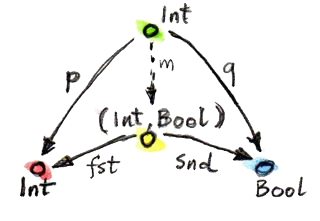
1番目の候補に対する写像mは次のようになる:
m :: Int -> (Int, Bool)
m x = (x, True)実際、2つの射影pとqは次のように再構成できる:
p x = fst (m x) = x
q x = snd (m x) = True2番目の例のmも同様に一意に定まる:
m (x, _, b) = (x, b)
(Int, Bool)が2つの候補のどちらよりも優れていることを示せた。その逆がなぜ真ではないのかを見てみよう。pとqからfstとsndを再構築するのに役立つm'を見つけられるだろうか？
fst = p . m'
snd = q . m'
1番目の例では、qは常にTrueを返す。しかし、第2要素がFalseであるペアが存在するのは分かっている。したがって、qからはsndを再構築できない。
2番目の例は別物だ:
pまたはqを経た後でも十分な情報が保持される。しかし、fstとsndを分解する方法が複数ある。pとqはどちらもトリプルの第2要素を無視するので、m'には何でも入れられる。たとえば、
m' (x, b) = (x, x, b)あるいは
m' (x, b) = (x, 42, b)などを定義できる。
以上すべてをまとめると、2つの射影pとqを持つ任意の型cについて、それらの射影を分解する一意なmがcからカルテシアン積(a, b)へと存在する。実際には、pとqを組み合わせてペアにしているだけだ。
m :: c -> (a, b)
m x = (p x, q x)これによってカルテシアン積(a, b)がベストマッチとなり、すなわち、この普遍的構成が集合の圏で機能することを意味する。これは任意の2つの集合の積を選ぶ。
さて、集合のことは忘れて、同じ普遍的構成を使って任意の圏にある2つの対象の積を定義しよう。そのような積が必ず存在するわけではないが、存在する場合は、一意な同型を除いて一意だ。
2つの対象との積は2つの射影を伴う対象であり、別の任意の対象が伴う2つの射影が、からへと存在する一意な射によって分解されるものだ。
2つの候補から分解関数mを生成する (高階) 関数は、factorizerと呼ばれることもある。この例では、次の関数になる:
factorizer :: (c -> a) -> (c -> b) -> (c -> (a, b))
factorizer p q = \x -> (p x, q x)5.7 余積
圏論のすべての構成と同じく、積にも双対があり、余積 (coproduct)
と呼ばれる。積のパターンの矢を逆にすると、2つの単射 (injection)
iとjを伴う対象cになる。すなわち、とからへの射だ。
i :: a -> c
j :: b -> c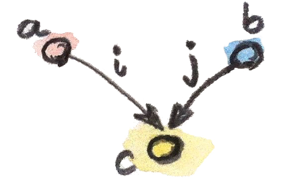
順位付けも逆転している: 対象は、もしからへの射が単射を分解するなら、との単射を伴う対象よりも「優れて」いる。
i' = m . i
j' = m . j「最も優れた」対象は、他のすべてのパターンとつながる一意な射を持つもので、余積と呼ばれ、もし存在すれば、一意な同型を除いて一意だ。
2つの対象との余積は2つの単射を伴う対象であり、別の任意の対象が伴う2つの単射が、からへと存在する一意な射によって分解されるものだ。
集合の圏では、余積は2つの集合の非交和 (disjoint union) だ。との非交和の要素は、の要素かの要素のどちらかだ。2つの集合が重なる場合、非交和には共通部分のコピーが2つ含まれる。非交和の要素は起源を示す識別子でタグ付けされていると見なせる。
プログラマーにとっては、型の観点から余積を理解する方が簡単だ。それは2つの型のタグ付き共用体だ。C++は共用体をサポートしているが、それらはタグ付けされていない。つまり、プログラム内では共用体のどのメンバーが有効であるかを何らかの方法で追跡しなければならないということだ。タグ付き共用体を作成するには、タグ――列挙型――を定義して共用体と結びつける必要がある。たとえば、intとchar const*のタグ付き共用体は次のように実装できる。
struct Contact {
enum { isPhone, isEmail } tag;
union { int phoneNum; char const * emailAddr; };
};この2つの単射は、コンストラクターとしても関数としても実装できる。たとえば、最初の単射を関数PhoneNumとして実装すると次のようになる:
Contact PhoneNum(int n) {
Contact c;
c.tag = isPhone;
c.phoneNum = n;
return c;
}これはContactに整数を注入 (inject) する。
タグ付き共用体はvariantとも呼ばれ、boostライブラリに非常に汎用的なboost::variantという実装がある4。
Haskellでは、データコンストラクターをバーティカルバーで区切ることで、任意のデータ型をタグ付き共用体にまとめられる。Contactの例だと次のような宣言になる:
data Contact = PhoneNum Int | EmailAddr Stringここで、PhoneNumとEmailAddrは、コンストラクター
(単射) としても、パターンマッチングのタグとしても機能する
(これについては後で詳しく説明する)。たとえば、電話番号を使って連絡先を作成する方法は次のとおりだ:
helpdesk :: Contact
helpdesk = PhoneNum 2222222積の正規実装がプリミティブなペアとしてHaskellに組み込まれているのに対し、余積の正規実装はEitherと呼ばれるデータ型であり、標準のPreludeで次のように定義されている:
Either a b = Left a | Right b
これはaとbの2つの型によってパラメーター化され、2つのコンストラクターを持つ。Leftは型aの値をとり、Rightは型bの値を取る。
積についてfactorizerを定義したのと同様に、余積についても定義できる。型の候補cと2つの単射の候補iとjについて、Eitherのfactorizerは次の分解関数を生成する:
factorizer :: (a -> c) -> (b -> c) -> Either a b -> c
factorizer i j (Left a) = i a
factorizer i j (Right b) = j b5.8 非対称性
これまでに2組の双対の定義を見てきた。終対象の定義は、始対象の定義から矢の方向を逆にすることで得られ、余積の定義は積の定義から得られる。しかし、集合の圏では、始対象と終対象は大きく異なり、余積と積は大きく異なる。後述するように、積は乗算のように振る舞い、終対象は1の役目を果たし、余積は和のように振る舞い、始対象は0の役目を果たす。特に、有限集合の場合、積のサイズは個々の集合のサイズの積であり、余積のサイズはサイズの合計だ。
これは集合の圏が矢の反転に関して対称でないことを示している。
空集合では、どの集合に対しても一意な射 (absurd関数)
がある一方で、戻ってくる射はないことに注意してほしい。単集合では、どの集合からも一意な射が来るうえに、(空集合を除く)
すべての集合へ向かう外向きの射もある。これまで見てきたように、終対象から発するこれらの射は、他の集合の要素を選択するのに非常に重要な役目を果たしている
(空集合には要素がないので、選択するものは何もない)。
余積と異なるのは、単集合と積の関係だ。unit型()で表される単集合を、積パターンのもう1つの――非常に劣った――候補として使うことを考えてみてほしい。それを2つの射影pとq、すなわち単集合から各構成要素の集合への関数として実装してみよう。それらは具体的な要素をそれぞれの集合から選択する。積は普遍的なので、ここでの候補の単集合から積への(一意な)
射mも存在する。この射は積の集合から要素を選択する。つまり、具体的なペアを選択する。さらに、次の2つの射影を分解する:
p = fst . m
q = snd . m単集合の唯一の要素である値()に作用させると、これら2つの式は次のようになる:
p () = fst (m ())
q () = snd (m ())
m ()はmによって選択された積の要素なので、これらの式は、第1の集合からpによって選択された要素p ()が、mによって選択されたペアの第1要素であることを示す。同様に、q ()は第2要素に等しい。これは、積の要素は構成要素の集合からの要素のペアであるという理解と完全に一致している。
余積にはそのような単純な解釈はない。単集合を余積での候補として要素を抽出しようと試みることもできるが、2つの射影がそこから出てくるのではなく、2つの単射がそこに入ることになる。それらはその起源について何も教えてくれないだろう (実際、入力パラメーターが無視されるのを見てきた)。また、余積から単集合への一意な射についても同様だろう。集合の圏は、始対象の向きで見たときと終対象から見たときとでは全く違って見える。
これは集合の固有の特性ではなく、で射として使う関数の特性だ。関数は (一般に) 非対称だ。説明しよう。
関数は、その始域のすべての要素に対して定義する必要がある (プログラミングでは、全関数 (total function) と呼ぶ)。しかし、終域全体を網羅する必要はない。すでにその極端な例をいくつか見てきた。単集合からの関数――終域内の1つの要素だけを選択する関数のことだ。(実際に、空集合からの関数は本当に極端だ。) 始域のサイズが終域のサイズよりもずっと小さい場合、そのような関数はよく、始域を終域に埋め込むようなものと考えられる。たとえば、単集合からの関数は、その1つの要素を終域に埋め込むものだと考えられる。私はそれらを埋め込み (embedding) 関数と呼んでいるが、数学者は名前を反対に付けた方を好む。つまり、終域をきっちり満たす関数を全射 (surjective) または上への (onto) 関数と呼ぶ。
非対称性のもう1つの原因は、関数が始域の多くの要素を終域の1つの要素に写せることだ。それらは自身を潰す
(collapse)
ことができる。極端な例としては、集合全体を単集合に写す関数が挙げられる。これまでに、まさにそれを行う多相unit関数を見てきた。合成すると、より酷く潰すことにしかならない。潰す関数2つの合成は、個々の関数よりもさらに潰すことになる。数学者は潰さない関数を単射 (injective) または1対1
(one-to-one)
という名前で呼ぶ。
当然、埋め込みも潰しもしない関数もある。それらは双射 (bijection) と呼ばれ、可逆なので真に対称だ。集合の圏では、同型は双射と同じだ。
5.9 課題
-
終対象が一意な同型を除いて一意であることを示せ。
-
ポセットの中の2つの対象の積は何か？ ヒント: 普遍的構成を使う。
-
ポセットの中の2つの対象の余積は何か？
-
Haskellの
Eitherに相当するものを、(Haskell以外の) 好きな言語で総称型として実装せよ。 -
Eitherが、2つの単射を伴うintよりも「優れた」余積であることを示せ。int i(int n) { return n; } int j(bool b) { return b? 0: 1; }ヒント: 関数
int m(Either const & e);を、
iとjを分解するように定義する。 -
前の問題の続き。
iとjという2つの単射を持つintが、Eitherよりも「優れている」ことはないと主張するにはどうすればよいか？ -
さらに続き: 単射についてはどうか？
int i(int n) { if (n < 0) return n; return n + 2; } int j(bool b) { return b? 0: 1; } -
intとboolの余積の候補として、Eitherへの射を複数許容するという理由でEitherより劣るものを挙げよ。
5.10 参考文献
- The Catsters, Products and Coproducts video.
6 シンプルな代数的データ型
型を組み合わせる2つの基本的な方法として、積と余積を使う方法を見てきた。日常のプログラミングにおける多くのデータ構造は、この2つのメカニズムだけを使って構築できると分かった。この事実は重要で実用的な結果をもたらす。データ構造の特性の多くは合成可能だ。たとえば、基本型の値が等価かどうか比較する方法を知っていて、それらの比較を積と余積の型に一般化する方法を知っていれば、自動的に複合型の等値演算子を導出できる。Haskellでは、複合型の大きな部分集合に対して、等価性、比較、文字列への変換、文字列からの変換などを自動的に導出できる。
次に、直積型 (product type) と直和型 (sum type) がプログラミングに現れる様子を詳しく見てみよう。
6.1 直積型
プログラム言語における2つの型の積の正統な実装はペアだ。Haskellではペアはプリミティブな型コンストラクターだ。C++では比較的複雑なテンプレートとして標準ライブラリで定義されている。
ペアは厳密には可換ではない。ペア(Int, Bool)は、同じ情報を保持していても、ペア(Bool, Int)には置き換えられない。しかし、それらは同型を除いて可換だ。同型はswap関数
(それ自体の逆関数) で与えらる:
swap :: (a, b) -> (b, a)
swap (x, y) = (y, x)この2つのペアは、単に同じデータを格納するために異なるフォーマットを使っていると見なせる。ビッグエンディアンとリトルエンディアンのようなものだ。
ペアの中にペアをネストすれば型をいくつでも積に結合できるが、もっと簡単な方法がある。ネストされたペアはタプルと等価なのだ。これは、ペアをネストする様々な方法が同型であるという事実からの帰結だ。3つの型a、b、cを順に積によって結合する場合、次の2つの方法がある:
((a, b), c)あるいは
(a, (b, c))これらは型が異なり、一方の型を期待する関数に他方の型を渡すことはできない。しかし、要素は1対1で対応している。そのため、相互に写す関数が存在し:
alpha :: ((a, b), c) -> (a, (b, c))
alpha ((x, y), z) = (x, (y, z))その逆関数も存在する:
alpha_inv :: (a, (b, c)) -> ((a, b), c)
alpha_inv (x, (y, z)) = ((x, y), z)したがって、これは同型だ。データは同じで、再パッケージ化するための方法が違うにすぎない。
直積型の生成は、型における二項演算として解釈できる。この観点から見ると、上記の同型は、モノイドで見た結合則に非常によく似ている:
ただし、モノイドの場合は積を構成する2つの方法が等価であったのに対して、ここでは「同型を除いて」等価であるにすぎない。
同型を認めて、厳密な等価性に固執しないならば、さらに進んで、1が乗算の単位であるのと同じようにunit型()が積の単位であるのを示せる。実際、ある型aの値と単位の組み合わせは、何の情報も追加しない。型:
(a, ())はaと同型だ。その同型はこのようになる:
rho :: (a, ()) -> a
rho (x, ()) = xrho_inv :: a -> (a, ())
rho_inv x = (x, ())これらの観察は、 (集合の圏) はモノイダル圏 (monoidal category) である、と述べることによって形式化できる。それは、対象を (ここではカルテシアン積で) 乗算できるという意味で、モノイドでもある圏だ。モノイダル圏についてさらに説明しよう。完全な定義は将来的に示す。
Haskellには直積型を定義するもっと一般的な方法がある。特に、すぐ後で説明するとおり、直和型と組み合わされたときによく分かる。その定義には複数の引数を持つ名前付きコンストラクターを使う。たとえば、ペアは次のようにも定義できる:
data Pair a b = P a b
ここで、Pair a bは他の2つの型aとbによってパラメーター化された型の名前であり、Pはデータコンストラクターの名前だ。ペアの型を定義するにはPair型コンストラクターに2つの型を渡す。適切な型の2つの値をコンストラクターPに渡すことで、ペアの値を構成する。たとえば、値stmtをStringとBoolのペアとして定義したとする:
stmt :: Pair String Bool
stmt = P "This statements is" False
最初の行は型宣言だ。これは型コンストラクターPairを使い、そのPairの総称定義のaとbを、それぞれStringとBoolで置き換えたものだ。2行目では、具体的な文字列と具体的なブール値をデータコンストラクターPに渡すことで、実際の値を定義している。型コンストラクターは型を構成するために使われ、データコンストラクターは値を構成するために使われる。
Haskellでは型コンストラクターとデータコンストラクターの名前空間が分離されているため、次のように両方に同じ名前が使われていることがよくある:
data Pair a b = Pair a b
さらに目を細めれば、組み込みのペア型を、この種の宣言のバリエーションとして見ることもできる。この場合、Pairという名前は(,)という二項演算子で置き換えられる。実際、(,)を他の名前付きコンストラクターと同じように扱い、前置記法を使ってペアを作成できる:
stmt = (,) "This statement is" False同様に、(,,)を使ってトリプルを作成する、などもできる。
総称ペアやタプルを使う代わりに、次のように特定の名前を付けた直積型を定義してもよい:
data Stmt = Stmt String Bool
これは単にStringとBoolの積だが、独自の名前とコンストラクターが与えられている。このスタイルの宣言の利点は、内容は同じでも意味と機能が異なり、互いに置き換えられない型を多数定義できることだ。
タプルや複数の引数を持つコンストラクターを使ってプログラミングすると、複雑で間違いが生じやすくなる。どのコンポーネントが何を表しているかを追うのが大変になるからだ。コンポーネントに名前を付ける方が望ましい場合がよくある。名前付きフィールドを持つ直積型は、Haskellではrecord、Cではstructと呼ばれる。
6.2 レコード
簡単な例を見てみよう。化学元素を記述するために、2つの文字列
(名前と元素記号) と整数 (原子番号)
を組み合わせて1つのデータ構造にしたい。タプル(String, String, Int)を使えば、どのコンポーネントが何を表しているかを記憶できる。コンポーネントはパターンマッチングによって抽出しよう。たとえば、この関数は元素記号が名前の接頭辞かをチェックする
(HeはHeliumの接頭辞だ)。
startsWithSymbol :: (String, String, Int) -> Bool
startsWithSymbol (name, symbol, _) = isPrefixOf symbol nameこのコードは間違いが生じやすく、読むのもメンテナンスするのも困難だ。レコードを定義する方がはるかに良い。
data Element = Element { name :: String
, symbol :: String
, atomicNumber :: Int }2つの表現は同型だ。そのことは、互いに逆になっている2つの変換関数からも分かる。
tupleToElem :: (String, String, Int) -> Element
tupleToElem (n, s, a) = Element { name = n
, symbol = s
, atomicNumber = a }elemToTuple :: Element -> (String, String, Int)
elemToTuple e = (name e, symbol e, atomicNumber e)
レコードのフィールド名は、それらのフィールドにアクセスするための関数としても機能することに注意してほしい。たとえば、atomicNumberはeからatomicNumberフィールドを取得する。つまり、atomicNumberは次のような型の関数として使われる:
atomicNumber :: Element -> Int
startsWithSymbol :: Element -> Bool
startsWithSymbol e = isPrefixOf (symbol e) (name e)Haskellのトリックを使って、関数isPrefixOfをバッククォーテーションで囲むことで中置演算子に変換すれば、まるで文のように読めるようにさえできる:
startsWithSymbol e = symbol e `isPrefixOf` name e中置演算子は関数呼び出しよりも優先順位が低いため、この場合は括弧を省略できる。
6.3 直和型
集合の圏の積が直積型を生み出すのと同じように、余積は直和型を生み出す。Haskellにおける直和型の標準的な実装は次のようなものだ:
data Either a b = Left a | Right bまた、ペアと同様に、Eitherは (同型を除いて)
可換であり、ネストでき、ネストの順序は (同型を除いて)
無関係だ。したがって、たとえば、トリプルに相当する和:
data OneOfThree a b c = Sinistral a | Medial b | Dextral cなどを定義できる。
は余積に関する
(対称な)
モノイダル圏でもあることがわかる。二項演算の役割を演じるのは非交和であり、単位元の役割を演じるのは始対象だ。型に関しては、モノイダル演算子としてEitherがあり、中立元として無人型
(uninhabited type) であるVoidがある。
Eitherは加算、Voidは0と見なせる。実際、直和型にVoidを足しても内容は変わらない。例として:
Either a Voidはaと同型だ。これは、この型のRightバージョンを構築する方法がないためだ。型Voidに値は存在しない。
Either a Voidの唯一の要素は、Leftコンストラクターを使って構築され、単純に型aの値をカプセル化する。したがって、象徴的に、となる。
直和型はHaskellではごく普通に使われるが、C++で同等のものであるunionやvariantは稀にしか使われない。その理由はいくつかある。
まず、最も単純な直和型は単なる列挙であり、C++ではenumを使って実装されている。Haskellの直和型:
data Color = Red | Green | BlueにC++で相当するものは:
enum { Red, Green, Blue };だ。もっとシンプルな直和型:
data Bool = True | Falseは、C++ではプリミティブboolだ。
値の有無をエンコードする単純な直和型は、C++ではさまざまに実装されており、特殊なトリックや、空文字列・負値・ヌルポインタなどの「不可能な」値が使われる。この種のオプション性は、意図的なものなら、HaskellではMaybe型を使って表現される:
data Maybe a = Nothing | Just aMaybe型は2つの型の和だ。このことは2つのコンストラクターを個々の型に分けるとわかる。1つ目は次のようになる:
data NothingType = NothingこれはNothingという名前の1つの値を持つ列挙だ。言い換えると、これは単集合であり、unit型()と等価だ。2つ目の部分:
data JustType a = Just aは、型aを単にカプセル化したものだ。Maybeを次のように書いてもよかっただろう:
type Maybe a = Either () aより複雑な直和型は、C++ではポインタを使って模擬することが多い。ポインタはヌルとなるか、あるいは特定の型の値を指し示す。たとえば、Haskellで (再帰的な) 直和型として定義できるリスト型:
List a = Nil | Cons a (List a)をC++に変換するには、ヌルポインタのトリックを使って空のリストを実装する:
template<class A>
class List {
Node<A> * _head;
public:
List() : _head(nullptr) {} // Nil
List(A a, List<A> l) // Cons
: _head(new Node<A>(a, l))
{}
};Haskellでの2つのコンストラクターNilとConsが、よく似た引数
(Nilは空、Consは値1つとリスト1つ)
でオーバーロードされた2つのListコンストラクターに変換されたことに注目してほしい。このListクラスには、直和型の2つのコンポーネントを区別するためのタグは必要ない。その代わりに_headに特別なnullptr値を使ってNilを表現する。
もっとも、HaskellとC++の型の主な違いは、Haskellではデータ構造が不変であることだ。ある特定のコンストラクターを使ってオブジェクトを作成する場合、オブジェクトはどのコンストラクターが使われ、どの引数が渡されたかを永久に記憶する。したがって、Just "energy"として作成されたMaybeオブジェクトがNothingに変わることはない。同様に、空のリストは永久に空であり、3つの要素のリストは常に同じ3つの要素を持つことになる。
この不変性こそが構成を可逆的にする。オブジェクトがあれば、いつでも構成で使われた部品に分解できる。この分解はパターンマッチングで行われ、コンストラクターをパターンとして再利用する。コンストラクター引数がある場合は、変数 (またはその他のパターン) に置き換えられる。
Listデータ型には2つのコンストラクターがあるため、任意のListの分解では、これらのコンストラクターに対応する2つのパターンを使う。1つは空のNilリストに一致し、もう1つはConsで構成されたリストに一致する。たとえば、複数のListに対する単純な関数の定義は次のとおりだ。
maybeTail :: List a -> Maybe (List a)
maybeTail Nil = Nothing
maybeTail (Cons _ t) = Just t
maybeTailの定義の最初の部分は、Nilコンストラクターをパターンとして使い、Nothingを返す。2番目の部分では、Consコンストラクターをパターンとして使う。コンストラクターの最初の引数には興味がないため、ワイルドカードで置き換える。Consの2番目の引数は、変数tに束縛される
(厳密に言えば、一度式に束縛されたら決して変化しないものの、変数と呼ぶことにする)。戻り値はJust tだ。こうして、Listの作成方法に応じて、句の1つに一致するようになった。作成にConsが使われるときは、渡した2つの引数が取得される
(最初の引数は破棄される)。
さらに複雑な直和型は、C++では多相クラス階層を使って実装されている。共通の祖先を持つ一連のクラスは、1つのバリアント型として理解でき、その中では仮想関数テーブルが隠しタグとして機能する。Haskellではコンストラクター上のパターンマッチングで特殊なコードを呼び出して行っていることを、C++では仮想関数テーブルのポインターに基づいて仮想関数呼び出しをディスパッチして実現している。
C++でunionが直和型として使われることはめったにない。含められるものに厳しい制限があるからだ。std::stringでさえ、コピー・コンストラクターを持っているので、unionに入れられない。
6.4 型の代数
別々に用いても直積型と直和型でさまざまな有用なデータ構造を定義できるが、真の強みはこの2つを組み合わせることで得られる。合成の力が再び発揮される時がきた。
これまでに分かったことをまとめておこう。型システムの下にある2つの可換モノイダル構造を見てきた。中立元としてVoidを持つ直和型と、中立元として()というunit型を持つ直積型だ。それらを加法や乗法に似たものだと見なそう。この比喩では、Voidは0に対応し、()は1に対応する。
この比喩をどこまで拡張できるか見てみよう。例として、0を掛けると0になるだろうか？
言い換えれば、1つのコンポーネントがVoidである直積型は、Voidと同型だろうか？
たとえば、IntとVoidのペアを作成できるだろうか？
ペアを作成するには2つの値が必要だ。整数なら簡単だが、型Voidには値がない。したがって、すべての型aに対して、型(a, Void)は値を持たない無人型であり、つまりVoidと等価になる。言い換えれば、ということだ。
加算と乗算をつなぐもう1つのものとして、分配律がある:
a * (b + c) = a * b + a * cこれは直積型と直和型にも当てはまるだろうか？ 当てはまる――いつものように同型を除いて。左辺は次の型に相当する:
(a, Either b c)また、右辺は次の型に相当する:
Either (a, b) (a, c)これらをある向きで変換する関数は次のとおりだ:
prodToSum :: (a, Either b c) -> Either (a, b) (a, c)
prodToSum (x, e) =
case e of
Left y -> Left (x, y)
Right z -> Right (x, z)また、その逆向きだと次のとおりだ:
sumToProd :: Either (a, b) (a, c) -> (a, Either b c)
sumToProd e =
case e of
Left (x, y) -> (x, Left y)
Right (x, z) -> (x, Right z)
case of式は、パターンマッチング内部関数に使われる。各パターンの後には矢印と、パターンが一致したときに評価される式が続く。たとえば、次の値を指定してprodToSumを呼び出すとする。
prod1 :: (Int, Either String Float)
prod1 = (2, Left "Hi!")
case e of内のeはLeft "Hi!"と等しくなる。これはパターンLeft yと一致し、yを"Hi!"に置き換える。xはすでに2と一致しているので、case of句の結果と関数全体は、期待どおりLeft (2, "Hi!")となる。
この2つの関数が互いに逆であることの証明は省くが、よく考えれば逆だと分かるはずだ。 これらは、2つのデータ構造の内容を単純に再パックしているだけだ。データは同じで、フォーマットが異なるだけだ。
数学者たちは、このような絡み合った2つのモノイドに半環 (semiring) という名前をつけている。これは完全な環 (ring) ではない。型の減算は定義できないからだ。そのため、半環は「n (negative) がない環 (ring)」をかけてリグ (rig) と呼ばれることがある。しかし、そのことを除けば、リグを形成する自然数などに関する命題を型に関する命題に変換することで、多くのメリットが得られる。興味深い項目を含む変換表を以下に示す:
| Numbers | Types |
|---|---|
| 0 | Void |
| 1 | () |
| a + b | Either a b = Left a | Right b |
| a * b | (a, b)またはPair a b = Pair a b |
| 2 = 1 + 1 | data Bool = True | False |
| 1 + a | data Maybe = Nothing | Just a |
リスト型は、非常に興味深いことに、方程式の解として定義される。定義している型は、式の両辺に現れる:
List a = Nil | Cons a (List a)通常の置換を行い、さらにList aをxに置き換えると、次の式が得られる:
x = 1 + a * x
型の減算や除算はできないので、従来の代数的方法でこれを解くことはできない。しかし、置換の連続なら試せる。つまり、ひたすら右辺のxを(1 + a*x)に置き換えては分配律を使う。これによって次の一連の結果が得られる:
x = 1 + a*x
x = 1 + a*(1 + a*x) = 1 + a + a*a*x
x = 1 + a + a*a*(1 + a*x) = 1 + a + a*a + a*a*a*x
...
x = 1 + a + a*a + a*a*a + a*a*a*a...最終的には積 (タプル)
の和が無限に続くことになった。これは次のように解釈できる。リストは空集合1か、単集合aか、ペアa*aか、トリプルa*a*aか、などなど……。まさにそれがリストだ。一連のaだ！
リストについては語るべきことがまだまだある。関手や不動点について学んだ後で、リストやその他の再帰的なデータ構造について再び説明する。
記号変数を使って方程式を解く――これぞ代数だ！ それゆえ、これらの型は代数的データ型と呼ばれる。
最後に、型の代数の非常に重要な解釈について述べなければならない。aとbの2つの型の積には、型aおよび型bの両方の値が含まれている必要があることに注意してほしい。これは、両方の型が居住
(inhabit)
である必要があることを意味する。一方、2つの型の和には、型a
または型bのいずれかの値が含まれるので、どちらかが居住であれば十分だ。また、論理積
(logical and) と論理和 (logical or)
も半環を形成し、型理論と対応付けられる:
| 論理型 | |
|---|---|
| false | Void |
| true | () |
| a || b | Either a b = Left a | Right b |
| a && b | (a, b) |
この比喩はさらに深く、論理と型理論を結ぶカリー・ハワード同型の基礎となっている。それについては関数型について説明するときに再び取り上げる。
6.5 課題
-
Maybe aとEither () aの間の同型を示せ。 -
円と長方形の直和型をHaskellで定義する。
data Shape = Circle Float | Rect Float FloatShapeに作用し面積を求めるareaのような関数を定義したい場合は、次の2つのコンストラクターでパターンマッチングを使う。area :: Shape -> Float area (Circle r) = pi * r * r area (Rect d h) = d * hC++またはJavaでインタフェースとして
Shapeを実装し、CircleとRectという2つのクラスを作成せよ。areaは仮想関数として実装せよ。 -
先ほどの例を続ける。
Shapeの周の長さを求める新しい関数circは簡単に追加できる。Shapeの定義に触れる必要はない。circ :: Shape -> Float circ (Circle r) = 2.0 * pi * r circ (Rect d h) = 2.0 * (d + h)C++またはJavaの実装に
circを追加せよ。もとのコードのどの部分に触れる必要があったか？ -
さらに続ける。新しい図形として正方形
SquareをShapeに追加し、必要なすべてを更新する。HaskellならびにC++およびJavaでは、コードのどこに触れる必要があったか？ (Haskellプログラマーでないとしても、変更箇所はごく自明なはずだ。） -
型についてが (同型を除いて) 成り立つことを示せ。前掲の変換表によれば、は
Boolに対応する。
7 関手
壊れたレコードのように聞こえるかもしれないが、関手についてこう述べておきたい: 関手は非常に単純だが強力な概念だ。圏論はこのような単純だが強力な概念であふれている。関手は圏の間の写像だ。との2つの圏が与えられた場合、関手は内の対象を内の対象に写す。これは対象についての関数だ。が内の対象である場合は、の像をと (括弧なしで) 書く。しかし、圏は単なる対象ではない――対象とそれらを接続する射から成る。関手は射も写す――射についての関数だ。ただし、射を行きあたりばったりに写すわけではない――接続を維持して写す。 したがって、内の射が対象を対象に次のように接続する場合;
内のの像は、の像をの像に接続する:
(これは数学的記法とHaskellの記法を組み合わせたものであり、ここでは理にかなっているだろう。対象や射に関数を適用するときは括弧を使わないことにする。)

ご覧のとおり、関手は圏の構造を保存している。一方の圏で接続しているものは、もう一方の圏でも接続している。しかし、圏の構造にはそれ以上の何かがある: 射の合成だ。がとの合成の場合:
の下の像をとの像の合成にしたい:

最終的に、内のすべての恒等射を内の恒等射に写したい:
ここで、は対象の恒等射であり、はの恒等射だ。

これらの条件によって、関手は通常の関数よりもはるかに制約が厳しくなることに注意してほしい。関手は圏の構造を保存しなければならない。圏を、射のネットワークによって織りなされた対象の集まりと見なすなら、関手がこの織物に裂け目を入れることは許されない。対象を潰してまとめたり、複数の射を1つにくっつけたりすることはあるが、何かを引き裂くことは決してない。この引き裂きなしの拘束条件は、微積分学において知られる連続性条件に似ている。この意味では、関手は「連続的」である (もっとも、関手にはさらに制約が厳しい連続性の概念が存在する)。関数と同じように、関手にも潰すものと埋め込むものがある。埋め込みの傾向がより顕著なのは、始域圏が終域圏よりずっと小さいときだ。極端な場合、始域は、自明な単元圏 (trivial singleton category) でありうる。すなわち、1つの対象と1つの射 (恒等射) を持つ圏だ。単元圏から他の圏への関手は、単にその圏内の対象を選択するだけだ。これは、単集合からの射は終域内の要素を選択する、という特性と完全に類似している。最も潰す関手は、定関手と呼ばれる。始域圏内のすべての対象を、終域圏内で選択された1つの対象に写す。また、始域圏のすべての射を恒等射に写す。まるでブラックホールのように働き、すべてを1つの特異点に圧縮する。この関手については、極限と余極限について議論するときに詳しく見よう。
7.1 プログラミングにおける関手
現実に戻ってプログラミングについて話をしよう。我々には型と関数の圏がある。この圏をそれ自体に写す関手について話そう。そのような関手は自己関手 (endofunctor) と呼ばれる。型の圏での自己関手とは何だろうか？ まず、それは型を型に写す。そのような写像の例はすでに見たが、おそらくそれとは気付かなかったのだろう。いま述べているのは、ある型の定義が別の型によってパラメーター化されている場合についてだ。いくつか例を見てみよう。
7.1.1 Maybe関手
Maybeは、型aから型Maybe aへの写像として定義される:
data Maybe a = Nothing | Just a
ここで重要な注意点がある。Maybe自体は型ではなく、型コンストラクターだ。型に変換するには、IntやBoolのような型引数を指定する必要がある。引数のないMaybeは、型の関数を表す。だが、Maybeは関手に変えられるだろうか？
(これ以降、プログラミングの文脈で関手と言うとき、ほとんどの場合は自己関手を意味する。)
関手は、対象 (ここでは型) の写像であるだけでなく、射 (ここでは関数)
の写像でもある。aからbへの任意の関数:
f :: a -> b
についてMaybe aからMaybe bへの関数を生成したい。そのような関数を定義するには、Maybeの2つのコンストラクターに対応する2つの場合を考慮する必要がある。Nothingの場合は、単にNothingを返すだけだ。引数がJustの場合は、関数fをその内容に適用すればよい。したがって、Maybeの下にあるfの像は次の関数だ:
f' :: Maybe a -> Maybe b
f' Nothing = Nothing
f' (Just x) = Just (f x)(ところで、Haskellでは変数名でアポストロフィーを使えるため、今のような場合にとても便利だ。)
Haskellでは、関手で射を写す部分はfmapと呼ばれる高階関数として実装されている。Maybeの場合、それは次のシグネチャを持つ:
fmap :: (a -> b) -> (Maybe a -> Maybe b)
fmapは関数をリフトするという言い方がよく使われる。リフトされた関数はMaybe値に対して作用する。いつものように、カリー化のため、このシグニチャは次の2つの方法で解釈できる。1つは、関数(a -> b)を1つの引数と捉えて、関数(Maybe a -> Maybe b)を返しているとする解釈だ。もうひとつは、2つの引数を取る関数がMaybe bを返しているとする解釈だ:
fmap :: (a -> b) -> Maybe a -> Maybe bこれまでの議論に基づいて、Maybeにfmapを実装する方法は次のとおりだ:
fmap _ Nothing = Nothing
fmap f (Just x) = Just (f x)
型コンストラクターMaybeが関数fmapを伴う関手を形成することを示すには、fmapが恒等射と合成を保存することを証明する必要がある。これらは「関手の規則」と呼ばれているが、単に圏の構造の保存を保証するだけのものだ。
7.1.2 等式推論
関手の規則を証明するために、Haskellでの一般的な証明テクニックである等式推論 (equational reasoning) を使う。これは、Haskellの関数が等価関数として定義されている、つまり左辺が右辺に等しい、という事実を利用している。左辺と右辺はいつでも入れ替えられる。ただし、名前の競合を避けるために変数名を変更する必要はあるかもしれない。これは、関数をインライン化するか、あるいは逆に式を関数にリファクタリングすることと考えてほしい。例として恒等関数を考えてみよう:
id x = xたとえば、ある式の中にid yがあるなら、yに置き換えられる
(インライン化)。さらに、 (たとえばid (y + 2)のように)
式にidが適用されているなら、(y + 2)のように式そのものに置き換えられる。そして、この置換は両方向に機能する。つまり、任意の式eをid eで置き換えられる
(リファクタリング)。関数がパターンマッチングによって定義されている場合は、各サブ定義を独立して使える。たとえば、上記のfmapの定義では、fmap f NothingをNothingに置き換えることも、その逆を行うこともできる。これが実際にどのように機能するか見てみよう。恒等射の保存から始めよう:
fmap id = idNothingとJustの2つのケースを考慮する必要がある。1つ目のケースは次のようになる
(Haskell疑似コードを使って左辺を右辺に変換している):
fmap id Nothing
= { definition of fmap }
Nothing
= { definition of id }
id Nothing
最後のステップでidの定義を逆向きに使ったことに注目してほしい。式Nothingをid Nothingに置き換えた。実際には、このような証明は、真ん中の同じ式に辿り着くまで「ロウソクを両端から燃やす」ことで成される。ここで真ん中に残るのはNothingだ。2つ目のケースも簡単だ:
fmap id (Just x)
= { definition of fmap }
Just (id x)
= { definition of id }
Just x
= { definition of id }
id (Just x)では、fmapが合成を保存することを示そう:
fmap (g . f) = fmap g . fmap fまずはNothingのケース:
fmap (g . f) Nothing
= { definition of fmap }
Nothing
= { definition of fmap }
fmap g Nothing
= { definition of fmap }
fmap g (fmap f Nothing)次はJustのケース:
fmap (g . f) (Just x)
= { definition of fmap }
Just ((g . f) x)
= { definition of composition }
Just (g (f x))
= { definition of fmap }
fmap g (Just (f x))
= { definition of fmap }
fmap g (fmap f (Just x))
= { definition of composition }
(fmap g . fmap f) (Just x)等式推論はC++スタイルの副作用のある「関数」では使えないことは、強調しておく価値がある。次のコードを考えてみよう:
int square(int x) {
return x * x;
}
int counter() {
static int c = 0;
return c++;
}
double y = square(counter());等式推論を使うと、squareをインライン展開して次のようにできる:
double y = counter() * counter();明らかにこれは有効な変換ではなく、同じ結果は生成されない。それにもかかわらず、マクロとしてsquareを実装すると、C++コンパイラは等式推論を使おうとし、悲惨な結果になる。
7.1.3 Optional
関手は、Haskellでは簡単に表現できるが、総称プログラミングや高階関数をサポートする言語ならどれでも定義できる。C++版のMaybe、テンプレート型optionalについて考えてみよう。以下に実装の概略を示す
(実際の実装ははるかに複雑で、C++に特有の、引数のさまざまな渡し方、コピーセマンティクス、リソース管理の問題を扱わなくてはならない)。
template<class T>
class optional {
bool _isValid; // the tag
T _v;
public:
optional() : _isValid(false) {} // Nothing
optional(T x) : _isValid(true) , _v(x) {} // Just
bool isValid() const { return _isValid; }
T val() const { return _v; }
};このテンプレートは、関手の定義の一部である型の写像を提供する。これは任意の型Tを新しい型optional<T>に写す。関数に対するアクションを定義しよう:
template<class A, class B>
std::function<optional<B>(optional<A>)>
fmap(std::function<B(A)> f)
{
return [f](optional<A> opt) {
if (!opt.isValid())
return optional<B>{};
else
return optional<B>{ f(opt.val()) };
};
}これは高階関数で、引数として関数を受け取り、関数を返す。非カリー化版はこうなる:
template<class A, class B>
optional<B> fmap(std::function<B(A)> f, optional<A> opt) {
if (!opt.isValid())
return optional<B>{};
else
return optional<B>{ f(opt.val()) };
}
fmapをoptionalのテンプレートメソッドにするという選択肢もある。このように選択肢に迷うことになるため、C++で関手パターンを抽象化するのは難しい。関手は継承元となるインターフェースにすべきだろうか
(残念ながら、テンプレート仮想関数は作れない)？
フリーテンプレート関数は、カリー化版と非カリー化版のどちらにすべきだろうか？
C++コンパイラは不足した型情報を正しく推論できるのか、それとも明示的に指定すべきだろうか？
入力関数fがintからboolへの関数である状況を考えてみよう。コンパイラにgの型が分かるだろうか:
auto g = fmap(f);特に将来、複数の関手がfmapをオーバーロードするようになった場合は？
(近いうちにさらに多くの関手について見てみよう。)
7.1.4 型クラス
では、Haskellは関手の抽象化にどのように対処するのだろうか？ それには型クラスの機構を使う。型クラスは、共通のインターフェースをサポートする一連の型を定義する。たとえば、等価性をサポートする対象についてのクラスは次のように定義される:
class Eq a where
(==) :: a -> a -> Bool
この定義は、型aの引数を2つ取りBoolを返す演算子(==)がサポートされる場合、型aはクラスEqであることを示している。特定の型がEqであることをHaskellに伝えたい場合は、それをこのクラスのインスタンスとして宣言し、(==)の実装を提供する必要がある。たとえば、2次元の点についてPoint
(2つのFloatの直積型) が定義されているとする:
data Point = Pt Float Float点の等価性は次のように定義できる:
instance Eq Point where
(Pt x y) == (Pt x' y') = x == x' && y == y'
ここでは演算子(==)を定義し、2つのパターン(Pt x y)と(Pt x'y Pt x y)の中置記法として使った。関数の本体は、単一の等号の後に続く。PointがEqのインスタンスとして宣言してあると、点同士を直接比較して等価性を調べられる。C++やJavaとは異なり、Pointを定義するときにEqクラス
(またはインターフェース)
を指定する必要はなく、クライアント・コード内で後から指定できることに注目してほしい。型クラスはまた、関数
(および演算子)
をオーバーロードするためのHaskellの唯一の機構でもある。これは、fmapを異なる関数に対してオーバーロードするために必要だ。ただし、1つ複雑な点がある。関手は型として定義されるのではなく、型の写像、つまり型コンストラクターとして定義される。必要な型クラスは、Eqの場合のような一連の型ではなく、一連の型コンストラクターだ。幸い、Haskellの型クラスは型だけでなく型コンストラクターでも動作する。以下にFunctorクラスの定義を示す。
class Functor f where
fmap :: (a -> b) -> f a -> f b
これは、指定された型シグニチャを持つ関数fmapが存在する場合、fはFunctorだと規定している。小文字のfは型変数であり、型変数aやbと似ている。しかし、コンパイラはそれが型ではなく型コンストラクターを表していることを、用法に基づいて推論できる。つまり、f aやf bのように他の型に作用しているのを見て推論できる。したがって、Functorのインスタンスを宣言するときは型コンストラクターを指定する必要がある。例としてMaybeの場合を示す:
instance Functor Maybe where
fmap _ Nothing = Nothing
fmap f (Just x) = Just (f x)ちなみに、Functorクラスや、Maybeを含む多くの単純なデータ型のインスタンス定義は、標準のPreludeライブラリの一部となっている。
7.1.5 C++での関手
C++でも同じアプローチを試せるだろうか？
型コンストラクターは、optionalのようなテンプレート・クラスに対応しているので、同様にfmapをテンプレート・テンプレート引数 (template template
parameter) でパラメーター化しよう。構文は次のとおりだ:
template<template<class> F, class A, class B>
F<B> fmap(std::function<B(A)>, F<A>);このテンプレートをさまざまな関手に特殊化できるようにしたい。残念ながら、C++ではテンプレート関数の部分的な特殊化は禁止されている。そのため、次のような記述はできない:
template<class A, class B>
optional<B> fmap<optional>(std::function<B(A)> f, optional<A> opt)代わりに関数のオーバーロードに頼る必要がある。これにより、もとのカリー化されていないfmapの定義に戻る:
template<class A, class B>
optional<B> fmap(std::function<B(A)> f, optional<A> opt)
{
if (!opt.isValid())
return optional<B>{};
else
return optional<B>{ f(opt.val()) };
}この定義は機能するが、fmapの2番目の引数がオーバーロードを選択しているからにすぎない。より汎用的なfmapの定義を完全に無視している。
7.1.6 List関手
プログラミングにおける関手の役割についてある程度の直観を育むには、もっといろいろな例を見る必要がある。別の型によってパラメーター化される型は、いずれも関手の候補だ。総称コンテナも格納する要素の型によってパラメーター化されるので、ごく単純なコンテナであるリストを見てみよう:
data List a = Nil | Cons a (List a)
型コンストラクターListがある。これは、任意の型aから型List aへの写像だ。Listが関手だと示すには、次のように関数のリフトを定義する必要がある。つまり、関数a -> bについて関数List a -> List bを定義する。
fmap :: (a -> b) -> (List a -> List b)
List aに作用する関数は、リストの2つのコンストラクターに対応する2つの場合を考慮する必要がある。Nilの場合は自明で、単にNilを返す。空のリストでできることはあまりない。Consの場合は、再帰を伴うため、ややトリッキーだ。そこで、少し前に戻って、何をしようとしているのか考えてみよう。aのリストと、aをbに変換する関数fがあり、bのリストを生成したいと考えている。自明なのは、fを使ってリストの各要素をaからbに変換することだ。(空でない)
リストが頭部と尾部のConsとして定義されている場合、実際にはどうやってそれを行うのだろうか。fを頭部に適用し、リフト
(fmap)
されたfを尾部に適用する。これは再帰的な定義だ。リフトされたfをリフトされたfを用いて定義しているからだ。
fmap f (Cons x t) = Cons (f x) (fmap f t)
右辺では、fmap fが定義対象のリストよりも短いリストに適用されていることに注意してほしい。それは尾部に適用されている。再帰的に処理されるにつれてリストが短くなるため、最終的には空リスト、つまりNilに到達することになる。しかし、先ほど決めたとおり、fmap fがNilに作用するとNilを返すため、再帰は停止する。最終的な結果を得るために、Consコンストラクターを使って、新しい頭部(f x)と新しい尾部(fmap f t)を結合する。すべてをまとめると、list関手のインスタンス宣言はこうなる:
instance Functor List where
fmap _ Nil = Nil
fmap f (Cons x t) = Cons (f x) (fmap f t)C++に慣れている場合は、最も汎用的なC++コンテナと見なせるstd::vectorの場合を考えてみてほしい。
fmapのstd::vector用の実装はstd::transformの単純なカプセル化だ:
template<class A, class B>
std::vector<B> fmap(std::function<B(A)> f, std::vector<A> v)
{
std::vector<B> w;
std::transform( std::begin(v)
, std::end(v)
, std::back_inserter(w)
, f);
return w;
}これを使えば、たとえば次のように数字列の要素を自乗できる:
std::vector<int> v{ 1, 2, 3, 4 };
auto w = fmap([](int i) { return i*i; }, v);
std::copy( std::begin(w)
, std::end(w)
, std::ostream_iterator(std::cout, ", "));
std::transformはfmapのより原始的な従兄弟だ。それに渡せるイテレータを実装しているため、ほとんどのC++コンテナは関手だと言える。残念ながら、関手の単純さは、イテレータや一時変数
(上記のfmapの実装を参照)
でいつも煩雑になるため失われてしまう。新しく提案されたC++のrangeライブラリによってrangeの関手的な性質がより顕著になったのは喜ばしい。
7.1.7 Reader関手
さて、直観が育ってきただろう――たとえば、関手はある種のコンテナだ――では、一見したところ非常に異なる例をお見せしよう。型aからの、aを返す関数の型への写像を考えてみよう。関数型についてはあまり詳しく述べていない
(完全に圏論的な扱いはこれからだ)
が、プログラマならある程度理解している。Haskellでは、関数型はアロー型コンストラクター(->)を使って構築され、引数の型と結果の型の2つの型を取る。すでに中置記法a -> bで見たことがあるが、括弧で括れば前置記法でも同様に使える:
(->) a b通常の関数と同様に、複数の引数を持つ型関数も部分適用できる。したがって、矢印に対して型引数を1つだけ指定したなら、別の引数が必要になる。それが
(->) a
が型コンストラクターである理由だ。完全な型a -> bを生成するには、もう1つの型bが必要だ。現状のままでは、aによってパラメーター化された一連の型コンストラクターの全体を定義している。これが関手でもあるかどうか見てみよう。2つの型パラメーターを扱うのは混乱を招くかもしれないので、名前を変更しておこう。前の型定義に従って、引数の型をr
、結果の型をaと呼ぼう。したがって、この型コンストラクターは、任意の型aを取り、それを型r -> aに写す。これが関手であることを示すために、関数a -> bを、r -> aを受け取ってr -> bを返す関数にリフトしよう。これらは、aとbのそれぞれに型コンストラクター(->) rを作用させて形成される型だ。このケースに適用されるfmapの型シグニチャーは次のとおりだ:
fmap :: (a -> b) -> (r -> a) -> (r -> b)次のようなパズルを解かなくてはならない:
関数f :: a -> bと関数g :: r -> aが与えられるとき、関数r -> bを作成せよ。2つの関数を合成する方法は1つしかなく、その結果はまさに必要なものだ。fmapの実装は次のようになる:
instance Functor ((->) r) where
fmap f g = f . gうまくいった！ 簡潔な表記が好みなら、合成を前置記法で書き直せることに着目して、この定義をさらに短くできる:
fmap f g = (.) f g引数を省略すると、2つの関数の直接の等価性が得られる:
fmap = (.)型コンストラクター
(->) rと上記のfmapの実装の組み合わせは、Reader関手と呼ばれる。
7.2 コンテナとしての関手
汎用コンテナか、少なくともパラメーター化できる型を何らかの値として含むオブジェクトが定義されているプログラミング言語において、関手の例をいくつか見てきた。Reader関手は異端に思える。我々は関数をデータとは見なさないからだ。しかし、純粋関数はメモ化でき、関数の実行はテーブル参照に変えられるのを見てきた。テーブルはデータだ。逆に、Haskellは遅延評価を採用しているため、リストのような従来のコンテナは、実際には関数として実装されうる。たとえば、次のように簡潔に定義できる自然数の無限リストを考えてみよう。
nats :: [Integer]
nats = [1..]
最初の行では、一対の角括弧はHaskellの組み込みリスト用の型コンストラクターだ。2行目では、リストリテラルを作成するために角括弧が使われている。明らかに、このような無限リストはメモリに格納できない。コンパイラはこれを、必要に応じてIntegerを生成する関数として実装する。Haskellは実質的に、データとコードの区別を曖昧にしている。リストは関数と見なせて、関数は引数を結果に写すテーブルと見なせる。後者は、関数の領域が有限かつ大きすぎない場合なら現実的だ。しかし、strlenをテーブル参照として実装するのは現実的でない。なぜなら、無限に多くの異なる文字列が存在するからだ。プログラマーとして、我々は無限大は好きではないが、圏論では朝食に無限大を食べるのを学ぶことになる。すべての文字列の集合であっても、過去・現在・未来の宇宙のすべての可能な状態の集まりであっても、対処できる！
したがって、関手対象 (自己関手によって生成された型の対象)
は、パラメーター化される型の値を含むと考えたい。それらの値が物理的にそこに存在しない場合でもだ。関手の一例はC++のstd::futureで、ある時点で値を含みうるが、必ず含む保証はない。また、その値にアクセスしたいとき、別スレッドの実行終了を待つためにブロックされることがある。別の例としてはHaskellのIOオブジェクトがあり、ユーザ入力を含んだり、将来のバージョンの宇宙でモニタに「Hello
World!」と表示されているのを含んだりできる。この解釈によれば、関手対象とは、パラメーター化された型の値を含みうるものだ。あるいは、これらの値を生成するためのレシピを含むこともできる。値にアクセスできるかは全く気にしない――それは完全にオプションであり、関手の守備範囲外だ。関心があるのは、これらの値を関手を使って操作できるかだけだ。値にアクセスできるなら、操作の結果を確認できるはずだ。アクセスできないなら、操作が正しく合成され、恒等関数による操作が何も変更しないことに注意するだけでよい。関手対象内の値へのアクセスをいかに気にしていないか示すため、引数aを完全に無視する型コンストラクターを例に挙げよう:
data Const c a = Const c
Const型コンストラクターはcとaの2つの型を取る。アローコンストラクターで行ったように、部分適用で関手を作成しよう。データコンストラクター
(これもConstと呼ばれる)
は型cの値を1つだけ取る。これはaには依存しない。この型コンストラクターのfmapの型は次のようになる:
fmap :: (a -> b) -> Const c a -> Const c bこの関手は型引数を無視するので、fmapの実装は関数の引数を無視してよい――関数は扱うものがない。
instance Functor (Const c) where
fmap _ (Const v) = Const vこれはC++ではもう少し明確かもしれない (この言葉を口にするとは思わなかった！)。型引数はコンパイル時に決まるのに対し、値は実行時に決まり、より強い区別があるからだ。
template<class C, class A>
struct Const {
Const(C v) : _v(v) {}
C _v;
};fmapのC++実装も関数の引数を無視し、Const引数の値を変更せずに本質的に再キャストする。
template<class C, class A, class B>
Const<C, B> fmap(std::function<B(A)> f, Const<C, A> c) {
return Const<C, B>{c._v};
}その奇妙さにもかかわらず、Const関手は多くの構成で重要な役目を果たしている。圏論では、これは先に述べた関手の特殊なケースであり、ブラックホールの自己関手版だ。今後もっと多く目にすることになるだろう。
7.3 関手の合成
圏の間の関数が合成することは、集合の間の関数が合成するのと同様だと考えれば納得するのは難しくない。2つの関手の合成は、対象に作用するときは、それぞれの対象の写像の合成にすぎず、射に作用するときも同様だ。2つの関手を飛び越えたあと、恒等射は恒等射となり、射の合成は射の合成となる。これは大したことではない。特に、自己関手を合成するのは簡単だ。関数maybeTailを覚えているだろうか？
ここではHaskellの組み込みのリスト実装を使って書き直そう:
maybeTail :: [a] -> Maybe [a]
maybeTail [] = Nothing
maybeTail (x:xs) = Just xs
(Nilと呼んでいた空リストコンストラクターは、空の角括弧のペア[]に置き換えられる。Consコンストラクターは、中置演算子:
(コロン) に置き換えられる。)
maybeTailの結果は、Maybeと[]という2つの関手の合成がaに作用するような型だ。これらの関数はそれぞれ独自のバージョンのfmapを備えているが、もし何らかの関数fを合成の内容、つまりMaybeリストに適用したい場合はどうなるだろう？
2層の関手を突破しなければならない。fmapを使えば外側のMaybeは突破できる。しかし、fはリストでは動作しないので、Maybe内にfを単に送ることはできない。内部リストを操作するには、(fmap f)を送る必要がある。たとえば、整数のMaybeリストの要素を2乗するにはどうするか見てみよう:
square x = x * x
mis :: Maybe [Int]
mis = Just [1, 2, 3]
mis2 = fmap (fmap square) mis
コンパイラーは、型を分析した後、外側のfmapに対してはMaybeインスタンスからの実装を使い、内側のものに対してはlist関手の実装を使う必要があることを理解する。上記のコードを次のように書き換えられるのは、すぐには自明に思えないかもしれない:
mis2 = (fmap . fmap) square misだが、fmapは引数が1つだけの関数と見なせることを思い出してほしい:
fmap :: (a -> b) -> (f a -> f b)この例では、(fmap . fmap)内の2番目のfmapは引数として次のものを取る:
square :: Int -> Intそして、次の型の関数を返す:
[Int] -> [Int]最初のfmapがこの関数を受け取り、次の関数を返す:
Maybe [Int] -> Maybe [Int]
最後に、この関数はmisに適用される。したがって、2つの関手を合成すると、対応する2つのfmapを合成したfmapを持つ関手になる。圏論に話を戻すと、関手の合成が結合性を持つのは、ごく自明だ
(対象の写像が結合性を持ち、射の写像も結合性を持つ)。また、すべての圏には自明な恒等関手がある。それはすべての対象をそれ自身に写し、すべての射をそれ自身に写す。つまり、関手はある圏の射と全く同じ性質を持っている。しかし、それはどのような圏だろうか？
対象が圏であり射が関手である圏でなければならない。すなわち、圏の圏だ。ところが、すべての圏の圏はそれ自体を含まなければならず、すべての集合の集合を不可能にしたのと同じ種類の矛盾にぶつかることになる。しかし、と呼ばれる、すべての小さい圏の圏がある
(自体は大きい圏なので、それ自体のメンバーにはなれない)。小さい圏で対象が形成するのは、集合よりも大きな何かではなく、集合だ。圏論では、数えられない無限集合であっても「小さい」とみなされることに注意してほしい。これらに言及しようと思ったのは、同じ構造が抽象化の多くのレベルで繰り返されているのを認識できることが、非常に驚くべきことだからだ。関手が圏を形成することについても後で説明する。
7.4 課題
-
次のように定義することで、
Maybe型コンストラクターを関手に変換できるか？fmap _ _ = Nothingこれは両方の引数を無視する。(ヒント: 関手の規則をチェックする。)
-
Reader関手について関手の規則を証明せよ。ヒント: 本当に単純だ。
-
2番目に好きな言語でReader関手を実装せよ (1番目は当然、Haskellだ)。
-
List関手について関手の規則を証明せよ。適用するリストの尾部について規則が真であると仮定する (言い換えると、帰納法を使う)。
8 関手性
関手とは何かを学び、いくつかの例を見てきたのに続いて、小さい関手から大きい関手を作る方法を見てみよう。特に興味深いのは、どの型コンストラクター (圏内の対象間の写像に対応する) を関手 (射の間の写像を含む) に拡張できるのかという点だ。
8.1 双関手
関手は (圏の圏) の射であるため、射 (特に関数) に関する直観の多くは関手にも当てはまる。たとえば、2つの引数を取る関数と同じように、2つの引数を取る関手、すなわち双関手 (bifunctor) が存在しうる。対象について、双関手は対象のすべてのペアを写す。1つは圏から、もう1つは圏から、圏の対象に写す。これは単に、圏のカルテシアン積 (Cartesian product) からへの写像だと言っているだけであることに注意してほしい。

実に簡単だ。しかし、関手性によると、双関手は射も写さなければならない。ただし、今回はとの射のペアをの射に写す必要がある。
ここでも、射のペアは直積圏内の1つの射に相当する。圏のカルテシアン積における射を、ある対象のペアから別の対象のペアへ進む射のペアと定義した。これらの射のペアは、自明な方法で合成できる:
合成は結合的であり、恒等射として、恒等射の対 を持つ。圏のカルテシアン積はまさに圏だ。
しかし、さらに簡単に双関手について考えたいなら、両方の引数を取る関手だと見なせばよい。したがって、関手の規則――結合性と恒等射の保存――を関手から双関手へ翻訳するのではなく、引数ごとに別々にチェックすれば十分だろう。圏のペアから第3の圏への写像があり、それが関手的であることを各引数で別々に (たとえば、もう一方の引数を定数にするなどして) 証明すれば、写像は自動的に双関手になる。関手的とは、正直な関手 (honest functor) のように射に作用するという意味で用いている。
Haskellで双関手を定義しよう。この場合、3つの圏はすべて同じであり、Haskellの型の圏だ。双関手は、2つの型引数を取る型コンストラクターだ。型クラスBifunctorの定義をライブラリControl.Bifunctorから採ると、次のとおりだ:
class Bifunctor f where
bimap :: (a -> c) -> (b -> d) -> f a b -> f c d
bimap g h = first g . second h
first :: (a -> c) -> f a b -> f c b
first g = bimap g id
second :: (b -> d) -> f a b -> f a d
second = bimap id
型変数fは双関手を表す。これは、どの型シグネチャにおいても常に2つの型引数に適用されているのがわかる。最初の型シグニチャは、2つの関数を同時に写すbimapを定義している。その結果はリフトされた関数(f a b -> f c d)であり、双関手の型コンストラクターが生成する型に対して作用する。bimapにはfirstとsecondの観点でのデフォルト実装があり、双関手を定義するにはそれぞれの引数に個別に関手性があれば十分なことを示している。
他の2つの型シグニチャ、firstとsecondは、2つのfmapであり、それぞれ最初と2番目の引数についてfの関手性を示す。
この型クラス定義では、両方のデフォルト実装をbimapとして提供している。
Bifunctorのインスタンスを宣言するときには、bimapを実装してデフォルトのfirstとsecondを受け入れるか、firstとsecondの両方を実装してデフォルトのbimapを受け入れるか、どちらかを選択できる
(もちろん、3つすべてを実装することもできるが、それらが相互に正しく関連付けられているのを確認するのはプログラマーの責任になる)。
8.2 積と余積の双関手
双関手の重要な例として、圏論的な積がある。それは普遍的構成によって定義される2つの対象の積だ。対象の任意のペアに対して積が存在する場合、これらの対象から積への写像は双関手的だ。これは一般に真であり、Haskellに特によく当てはまる。以下に、ペアのコンストラクターについてのBifunctorインスタンスを示す。最も単純な直積型だ:
instance Bifunctor (,) where
bimap f g (x, y) = (f x, g y)選択肢はあまりない:
bimapは単に最初の関数をペアの最初のコンポーネントに適用し、2番目の関数を2番目のコンポーネントに適用するだけだ。次のような型を想定すれば、ほとんどコード自体が説明になっている:
bimap :: (a -> c) -> (b -> d) -> (a, b) -> (c, d)ここでの双関手の働きは、たとえば次のような型の対を作ることだ:
(,) a b = (a, b)
双対性より、余積は、圏内の対象のすべてのペアに対して定義されているなら双関手でもある。Haskellでは、Eitherの型コンストラクターがBifunctorのインスタンスであることが良い例だ:
instance Bifunctor Either where
bimap f _ (Left x) = Left (f x)
bimap _ g (Right y) = Right (g y)これもコード自体が説明になっている。
モノイダル圏について話したときのことを覚えているだろうか？ モノイダル圏は、対象に作用する二項演算子と単位対象とを定義する。はカルテシアン積に関して単集合を単位とするモノイダル圏である、と述べた。また、非交和に関しても空集合を単位とするモノイダル圏だ。述べていなかったのは、モノイダル圏の要件の1つは二項演算子が双関手であることだ、ということだ。これは非常に重要な要件だ。射によって定義される圏の構造とモノイダル積とを両立させたいからだ。我々は今、モノイダル圏の完全な定義に一歩近づいている (そこに到達する前に、まだ自然性について学ぶ必要がある)。
8.3 関手的代数的データ型
これまで何例か見てきたパラメーター化されたデータ型に対して、fmapを定義でき、それらが関手であることがわかった。複雑なデータ型は単純なデータ型から構成される。特に、代数的データ型
(ADT)
は、和と積を使って作成される。先ほど、和と積が関手的であるのを見た。関手が合成するのも知っている。したがって、ADTの基本的な構成要素が関手的であると示せれば、パラメーター化されたADTも関手的だとわかる。
では、パラメーター化された代数的データ型の構成要素は何だろうか？
まず、MaybeにおけるNothingや、ListにおけるNilのように、関手の型パラメーターに依存しない要素がある。それらはConst関手と等価だ。Const関手は型パラメーターを無視することを忘れないでほしい
(実際には、興味があるのは2番目の型パラメーターであり、最初のパラメーターは一定に保たれる)。
次に、MaybeにおけるJustのように、単に型パラメーター自体をカプセル化する要素がある。これらは恒等関手と等価だ。以前、恒等関手についての恒等射として言及したが、Haskellでの定義は説明しなかった。それをここに示す:
data Identity a = Identity ainstance Functor Identity where
fmap f (Identity x) = Identity (f x)Identityは、型aの (不変な)
値を常に1つだけ格納する、最も単純なコンテナと見なせる。
代数的データ構造の他のすべては、これら2つのプリミティブから積と和を使って構成される。
この新しい知識に基づいて、Maybe型コンストラクターを改めて見てみよう。
data Maybe a = Nothing | Just aこれは2つの型の和だ。和が関手的なのは知っている。1つ目の部分であるNothingは、aに作用するConst ()として表せる
(Constの最初の型パラメーターはunitに設定されている――後でConstのさらに興味深い使い方を説明する)。2つ目の部分は、恒等関手の別名だ。Maybeは、同型を除いて、次のようにも定義できる:
type Maybe a = Either (Const () a) (Identity a)
したがって、Maybeは双関手Eitherを2つの関手Const ()とIdentityに合成したものだ。(Constは実際には双関手だが、ここでは常に部分適用で使う。)
関手の合成が関手であることはすでに見た。同じことが双関手にも当てはまるのは容易に納得できる。必要なのは、2つの関手を持つ双関手の合成が、射にどのように作用するかを理解することだけだ。2つの射が与えられた場合、片方の関手で片方の射を、もう1つの関手でもう1つの射をそれぞれリフトするだけでよい。次に、そのようにして得られるリフトされた射のペアを、双関手でリフトする。
この合成はHaskellで表現できる。双関手bf
(2つの型を引数に取る双関手コンストラクターである型変数)、2つの関手fuとgu
(それぞれ1つの型変数を取る型コンストラクター)、および2つの通常の型aとbによってパラメーター化されるデータ型を定義しよう。fuをaに適用し、guをbに適用し、それからbfを結果の2つの型に適用する:
newtype BiComp bf fu gu a b = BiComp (bf (fu a) (gu b))これが対象の合成であり、型の合成だ。Haskellで型コンストラクターを型に適用する方法が、関数を引数に適用するのと同じであることに注目してほしい。それらは同じ構文だ。
少し迷ったなら、BiCompを、Either、Const ()、Identity、a、bの順に適用してみてほしい。Maybe bの必要最小限のバージョンを復元できるだろう
(aは無視する)。
新しいデータ型BiCompは、aおよびb内の双関手だが、bf自体がBifunctorであり、fuおよびguがFunctorである場合に限る。コンパイラは、bfに対するbimapの定義と、fuとguに対するfmapの定義とが存在することを認識している必要がある。Haskellでは、これはインスタンス宣言の前提条件として表現される。つまり、クラス制約のセットが二重矢印の前に書かれる:
instance (Bifunctor bf, Functor fu, Functor gu) =>
Bifunctor (BiComp bf fu gu) where
bimap f1 f2 (BiComp x) = BiComp ((bimap (fmap f1) (fmap f2)) x)
BiCompに対するbimapの実装は、bfに対するbimapと、fuおよびguに対する2つのfmapとで与えられる。コンパイラは、BiCompが使われるたびに、すべての型を自動的に推測し、適切なオーバーロード関数を選択する。
bimapの定義内のxの型は次のとおりだ:
bf (fu a) (gu b)
これはかなりの分量だ。外側のbimapは外側のbfの層を貫通しており、2つのfmapはそれぞれfuとguの下まで掘り下げている。f1とf2の型が次の場合:
f1 :: a -> a'
f2 :: b -> b'最終結果の型はbf (fu a') (gu b')となる:
bimap ::(fu a -> fu a') -> (gu b -> gu b')
-> bf (fu a) (gu b) -> bf (fu a') (gu b')ジグソーパズルが好きな人なら、この種の型操作で何時間も楽しめるだろう。
Maybeが関手だと証明する必要はなかったとわかった。この事実は、2つの関手的プリミティブの和という構築方法から導かれたものだ。
鋭い読者ならこう尋ねるだろう:
代数的データ型に対するFunctorインスタンスをそれほど機械的に導出できるのなら、コンパイラによって自動化して実行できないのか？
実際、可能であり、行われている。ただし、ソースファイルの先頭に次の行を含めることで、特定のHaskell拡張を有効にする必要がある:
{-# LANGUAGE DeriveFunctor #-}そして、データ構造体にderivating Functorを追加する:
data Maybe a = Nothing | Just a
deriving Functorすると、対応するfmapが自動的に実装される。
代数的データ構造の正則性 (regularity)
により、
8.4 C++での関手
C++プログラマーなら、関手の実装に関しては、明らかに自分でやることになる。しかし、C++でもある種の代数的データ構造は見つかるはずだ。そのようなデータ構造を総称テンプレートにすれば、fmapを素早く実装できるだろう。
データ木構造を見てみよう。Haskellでは再帰的な直和型として定義される:
data Tree a = Leaf a | Node (Tree a) (Tree a)
deriving Functor
前にも述べたように、C++で直和型を実装する方法の1つは、クラス階層を使うことだ。オブジェクト指向言語では、fmapを基本クラスFunctorの仮想関数として実装し、それをすべてのサブクラスでオーバーライドするのが自然だ。残念ながらこれは不可能だ。なぜなら、fmapはテンプレートであり、それが作用する対象の型
(thisポインタ)
だけでなく、それに適用された関数の戻り型によってもパラメーター化されているからだ。C++では仮想関数はテンプレート化できない。fmapを総称フリー関数として実装し、パターンマッチングをdynamic_castに置き換えよう。
基本クラスは、動的キャストをサポートするために少なくとも1つの仮想関数を定義する必要があるため、デストラクターを仮想関数にする (いずれにしても良い考えだ):
template<class T>
struct Tree {
virtual ~Tree() {};
};Leafは、Identity関手を偽装したものだ:
template<class T>
struct Leaf : public Tree<T> {
T _label;
Leaf(T l) : _label(l) {}
};Nodeは直積型だ:
template<class T>
struct Node : public Tree<T> {
Tree<T> * _left;
Tree<T> * _right;
Node(Tree<T> * l, Tree<T> * r) : _left(l), _right(r) {}
};
fmapを実装するときには、Treeの型で動的ディスパッチを利用する。Leafの場合はIdentity版のfmapを適用し、Nodeの場合は2つのTree関手で構成された双関手のように扱う。C++プログラマーとしては、これらの用語を使ってコードを分析することに慣れていないかもしれないが、圏的な考え方を実践するには適している。
template<class A, class B>
Tree<B> * fmap(std::function<B(A)> f, Tree<A> * t)
{
Leaf<A> * pl = dynamic_cast <Leaf<A>*>(t);
if (pl)
return new Leaf<B>(f (pl->_label));
Node<A> * pn = dynamic_cast<Node<A>*>(t);
if (pn)
return new Node<B>( fmap<A>(f, pn->_left)
, fmap<A>(f, pn->_right));
return nullptr;
}簡単のため、メモリとリソース管理の問題は無視することにしたが、本番コードではおそらくスマート・ポインター (uniqueかsharedかはポリシーによる) を使うことになるだろう。
fmapのHaskell実装と比較してほしい:
instance Functor Tree where
fmap f (Leaf a) = Leaf (f a)
fmap f (Node t t') = Node (fmap f t) (fmap f t')この実装は、コンパイラによって自動的に導出することもできる。
8.5 Writer関手
前にKleisli圏を説明したとき、戻ってくると約束した。Kleisli圏の射は、Writerデータ構造体を返す「装飾された」関数として表現されていた。
type Writer a = (a, String)
すでに述べたように、装飾は自己関手と何らかの関係にある。そして実際、Writerの型コンストラクターは、aについて関手的だ。単純な直積型なので、fmapを実装する必要すらない。
しかし、Kleisli圏と関手の間には、どのような一般的な関係があるのだろうか？ Kleisli圏は圏であり、合成と恒等射を定義する。合成はfishオペレータによって与えられるのを思い出してほしい:
(>=>) :: (a -> Writer b) -> (b -> Writer c) -> (a -> Writer c)
m1 >=> m2 = \x ->
let (y, s1) = m1 x
(z, s2) = m2 y
in (z, s1 ++ s2)また、恒等射はreturnという関数によって計算される:
return :: a -> Writer a
return x = (x, "")この2つの関数の型を十分に長く見れば
(つまり、十分に長く見れば)、それらを組み合わせて、fmapとして機能する適切な型シグネチャを持つ関数を作成する方法を見つけられる。それは次のようになる:
fmap f = id >=> (\x -> return (f x))
この例では、fish演算子は2つの関数を組み合わせている。1つはおなじみのidであり、もう1つは、引数にfを適用した結果にreturnを適用するラムダ関数だ。理解するのが最も難しいのはidを使うところだろう。Fish演算子の引数となる関数は、「通常の」型を受け取って装飾された型を返す関数ではないのだろうか？
実は、そんなことはない。a -> Writer bのaが「普通の」型でなければならないとは誰も言っていない。これは型変数なので何でも良く、特に、Writer bのような装飾された型でも構わない。
したがって、idはWriter aを受け取り、Writer aに変換する。Fish演算子はaの値を取り出し、xとしてラムダに渡す。ここで、fはそれをbに変換し、returnはそれを装飾してWriter bにする。これらすべてをまとめると、Writer aを受け取り、Writer bを返す関数が完成する。これは、fmapが生成するはずのものとまったく同じだ。
注目してほしいのは、この引数が非常に汎用的であることだ。つまり、Writerは任意の型コンストラクターで置き換えられる。Fish演算子とreturnをサポートしていれば、fmapも定義できる。したがってKleisli圏での装飾は常に関手となる。(ただし、すべての関手がKleisli圏に由来するわけではない。)
先ほど定義したfmapは、derivating Functorを使ってコンパイラによって導来されたfmapと同じではないかと思うかもしれない。とても興味深いことに、そのとおりだ。そうなっているのは、Haskellが多相関数を実装する方法に由来する。それはパラメトリック多相と呼ばれ、いわゆるtheorems for
freeの根源となっている。それらの定理の1つは、与えられた型コンストラクターに対してfmapの実装があって、それが恒等射を保存するなら、それは一意である、と述べている。
8.6 共変関手と反変関手
Writer関手を振り返り終えたので、Reader関手に戻ろう。これは部分適用された関数-アロー型コンストラクターに基づく:
(->) rこれは型シノニムとして書き直せる:
type Reader r a = r -> aこれに対するFunctorインスタンスは、これまで見てきたように、次のようになる:
instance Functor (Reader r) where
fmap f g = f . g
だが、ペアの型コンストラクターやEither型コンストラクターと同じく、この関数型コンストラクターは2つの型引数を取る。ペアやEitherは両方の引数について関手的であり、すなわち双関手だった。この関数のコンストラクターも双関手だろうか？
最初の引数で関手的にしてみよう。型シノニムから始めよう――Readerと似ているが、引数が反転している:
type Op r a = a -> r
今回は、戻り値の型rを修正し、引数の型aを変更する。次のような型シグニチャを持つfmapを実装するために、何らかの方法で型を一致させられるか見てみよう:
fmap :: (a -> b) -> (a -> r) -> (b -> r)
aを取りそれぞれbとrを返す2つの関数だけでは、bを取りrを返す関数を作成する方法がまったくない。代わりに1つ目の関数を逆にして、bを受け取りaを返すようにできれば、状況は違ってくるだろう。任意の関数を逆にはできないが、反対圏に行くことはできる。
簡単に要約すると、圏ごとに、双対圏が存在する。これはと同じ対象を持つ圏だが、すべての矢印が逆になっている。
から他の圏への関手を考えてみよう:
このような関手はの射をの射に写す。しかし、射は、もとの圏のある射と密かに対応している。反転に注意してほしい。
さて、は正則関手 (regular functor) だが、に基づいて定義できる別の写像があり、それは関手ではない。それをと呼ぼう。これはからへの写像だ。対象はと同じ方法で写されるが、射は逆に写される。の射を取り、それをまず反対の射に写し、次に関手を使ってを取得する。
がと同じで、がと同じであることを考慮すると、この旅の全体は次のように記述できる:
これは「ひねりのある関手」だ。このように射の方向を反転させる圏の写像は、反変 (contravariant) 関手と呼ばれる。反変関手は、反対圏からの正則関手にすぎないことに注意してほしい。その一方で、正則関手――これまでに学んだ関手――は共変 (covariant) 関手と呼ばれる。

以下の型クラスは、Haskellにおける反変関手 (実際には反変自己関手) を定義している:
class Contravariant f where
contramap :: (b -> a) -> (f a -> f b)前述の型コンストラクターOpはこのインスタンスだ:
instance Contravariant (Op r) where
-- (b -> a) -> Op r a -> Op r b
contramap f g = g . f関数fが、Opの内容――関数gより先
(つまり右側) に挿入されることに注意してほしい。
Opに対するcontramapの定義は、単に引数を反転した関数合成演算子であることに注意すれば、さらに簡潔にできるだろう。引数を反転するためにはflipという特別な関数がある:
flip :: (a -> b -> c) -> (b -> a -> c)
flip f y x = f x yこれにより、次の結果が得られる:
contramap = flip (.)8.7 プロ関手
これまで見てきたように、関手-アロー演算子は、最初の引数では反変、2番目の引数では共変だ。このような怪物に名前はあるのだろうか？ 終域圏がの場合、この怪物はプロ関手 (profunctor) と呼ばれる。反変関手は反対圏の共変関手と等価なので、プロ関手は次のように定義される:
Haskellの型は一次近似としては集合とみなせるので、引数が2つの型コンストラクターpにProfunctorという名前を適用する。1番目の引数は反-関手的で、2番目は関手的だ。Data.Profunctorライブラリから適切な型クラスを引用しよう:
class Profunctor p where
dimap :: (a -> b) -> (c -> d) -> p b c -> p a d
dimap f g = lmap f . rmap g
lmap :: (a -> b) -> p b c -> p a c
lmap f = dimap f id
rmap :: (b -> c) -> p a b -> p a c
rmap = dimap id
これら3つの関数すべてにデフォルト実装がある。Bifunctorと同じように、Profunctorのインスタンスを宣言するとき、dimapを実装してデフォルトのlmapとrmapを受け入れるか、lmapとrmapの両方を実装してデフォルトのdimapを受け入れるか、どちらかを選択できる。
ここで、関数-アロー演算子はProfunctorのインスタンスだと断定してよい:
instance Profunctor (->) where
dimap ab cd bc = cd . bc . ab
lmap = flip (.)
rmap = (.)プロ関手の応用としてはHaskellのlensライブラリがある。エンドとコエンドについて述べるときに再び見ることになるだろう。
8.8 Hom関手
上記の例は、対象とのペアを取ってそれらの間の射の集合を割り当てる写像、すなわちhom集合 が関手であるという、より一般的な命題を反映している。それは直積圏から集合の圏への関手だ。
射に対する作用を定義してみよう。の射は、からの射のペアだ。
このペアのリフトは、集合 から集合 への射 (関数) でなければならない。 の任意の要素 (からへの射) を選択し、次を割り当てるだけでよい:
これは の要素だ。
ご覧のとおり、hom関手はプロ関手の特殊なケースだ。
8.9 課題
-
データ型:
data Pair a b = Pair a bが双関手であることを示せ。追加の課題として、
Bifunctorを3つの方法すべてで実装し、それらの定義が、適用できる場合は常にデフォルトの実装と互換性があることを等式推論によって示せ。 -
Maybeの標準的な定義と次の脱糖との同型を示せ:type Maybe' a = Either (Const () a) (Identity a)ヒント: 2つの実装の間に2つの写像を定義する。追加の課題として、等式推論を使って、それらが互いに逆であることを示せ。
-
別のデータ構造を試してみよう。私はこれを
PreListと呼んでいる。Listの前身だからだ。これは再帰を型パラメーターbで置き換える。data PreList a b = Nil | Cons a bPreListをそれ自体に再帰的に適用すれば、Listの以前の定義を復元できる (どうなるかは、不動点について述べるときに説明する)。PreListがBifunctorのインスタンスであることを示せ。 -
次のデータ型が
aおよびbの双関手を定義していることを示せ:data K2 c a b = K2 cdata Fst a b = Fst adata Snd a b = Snd b追加の課題として、Conor McBrideの論文Clowns to the Left of me, Jokers to the Rightと照らし合わせて解答を確認せよ。
-
Haskell以外の言語で双関手を定義せよ。その言語で
bimapを総称ペア用に実装せよ。 -
std::mapは、2つのテンプレート引数KeyとTについて双関手またはプロ関手と見なすべきか？ そう見なせるようにするには、このデータ型をどう再設計すればよいだろう？
9 関数型
ここまでは、関数型の意味について言い繕ってきた。関数型は他の型とは異なる。
Integerを例にとると、それは単なる整数の集合だ。Boolは2要素の集合だ。しかし、関数型はそれ以上のもので、対象との間の射の集合だ。任意の圏における2つの対象間の射の集合はhom集合と呼ばれる。たまたま、圏では、すべてのhom集合はそれ自体が同じ圏の対象だ。なぜなら、それは結局は集合だからだ。

同じことは、hom集合が圏の外にあるような他の圏には当てはまらない。それらは外部 (external) hom集合と呼ばれることもある。

圏の自己参照的な性質によって、関数型は特殊なものになっている。しかし、少なくともいくつかの圏では、hom集合を表す対象を構築する方法がある。このような対象は内部 (internal) hom集合と呼ばれる。
9.1 普遍的構成
関数の型が集合であることを一旦忘れて、ゼロから関数型を、より一般的には内部hom集合を構築してみよう。いつものように、ここでは圏からヒントを得る。ただし、集合の性質に一切頼らないように気を付けて、他の圏でも構成が自動的に使えるようにする。
関数型は、引数の型と結果の型の関係から、複合型と見なせる。対象間の関係を含む複合型の構築についてはすでに説明した。積と余積の型を定義するのに普遍的構成を使った。同じトリックを使って関数型を定義できる。作成する関数型、引数の型、結果の型という3つの対象を含むパターンが必要になる。
これら3つの型を結びつける自明なパターンは関数適用 (function application) あるいは評価 (evaluation) と呼ばれる。関数型の候補が与えられたとして、それをと呼び、引数の型をと呼ぶことにする。関数適用はこのペアを結果の型に写す (圏でない場合、これら3つの型はどれも他の対象と同様に単なる対象であることに注意)。3つの対象があり、そのうち (引数の型と結果の型を表す) 2つが決まった。
関数適用も存在し、それは写像だ。どうすればこの写像をパターンに組み込めるだろう？ 対象の内部を見ることが許されている場合、関数 (の要素) と引数 (の要素) をペアにして、 (をへ適用したものであり、の要素) に写せる。

その一方で、個々のペア を扱うのではなく、関数型と引数の型の積全体について述べることもできる。積は対象であり、関数適用の射として、その対象からへの矢を選択できる。では、はすべてのペア をに写す関数になる。
したがって、パターンはこうなる: 2つの対象との積が別の対象に射で接続されている。
このパターンは、普遍的構成を使って関数型を特定するのに十分特化しているだろうか？ すべての圏でそうだとは言えない。しかし、我々が関心を持っている圏ではそうだ。さらに別の疑問もある: 積を先に定義せずに関数オブジェクトを定義できるだろうか？ 積が全く存在しない圏や、対象のすべてのペアに対しては存在しない圏もある。したがって、答えはノーだ。直積型がなければ関数型はない。これについては、後で冪乗について述べるときに再び説明する。
普遍的構成をおさらいしよう。まず対象と射のパターンから始める。これは粗い検索であり、通常はヒットするものが多すぎる。特に、では、ほとんどすべてのものがすべてに接続されている。任意の対象を選んでとの積を作れば、そこからへの関数を作れる (が空集合の場合を除く)。
その時に秘密兵器を使う: 順位付けだ。これは通常、候補となる対象の間に一意な写像 (構成を分解する写像) が存在することを条件として行われる。ここでは、からへの射を伴うは、それ自身の関数適用を伴う別のよりも優れているとして選別するが、の適用がの適用を通じて分解するような、からへの一意な写像が存在する場合に限る。(ヒント: この文は図を見ながら読むこと。)

ここで厄介な部分がある。この特定の普遍的構成の説明を今まで延期した主な理由だ。射が存在するとき、との両方をと掛けた図式を閉じたい。からへの写像が存在するとき、本当に必要なのは、からへの写像だ。そして今、積の関手性についてすでに議論したので、そのやり方は分かっている。積自体が関手 (正確には自己双関手) であるため、射のペアをリフトできる。すなわち、対象の積だけでなく、射の積も定義できる。
積の2番目の要素には触れていないので、射のペア をリフトする。ここで、はの恒等射だ。
そして、ある関数適用で別の関数適用を分解するとこうなる:
ここで鍵となるのは、射に対する積の作用だ。
普遍的構成の第3部は、普遍的に最も優れた対象を選ぶことだ。その対象をと呼ぶことにしよう (Haskellの対象制約と混同しないための、1つの型クラスのシンボル名と考えてほしい。後で別の命名方法について議論する)。この対象は独自の関数適用を伴う。それは からへの射であり、と呼ばれる。対象は、関数オブジェクトの他の候補すべてを、その関数適用の射がを通じて分解するようなかたちで一意に写せる場合、最も優れていると言える。我々の順位付けでは、この対象は他のどの対象よりも優れている。

形式的には:
からへの関数オブジェクトは、対象に射 を伴ったものであり、他の任意の対象に射
を伴ったものに対して、一意な射 が存在してをを通じて分解する:
当然、このような対象が、ある圏内の対象の任意のペアとについて存在する保証はない。しかし、では常に存在する。さらに、では、この対象はhom集合 と同型だ。
そのため、Haskellでは、関数の型a -> bを圏論的関数オブジェクトとして解釈する。
9.2 カリー化
関数オブジェクトの全候補を見てみよう。ただし今回は、射のを2つの変数との関数として考えてみよう。
積からの射であることと2変数関数であることは同じくらい近い。特に、ではは値のペアを取る関数であり、そのペアの片方は集合から、もう片方は集合からの値だ。
一方、普遍性 (universal property) は、このようなごとに、を関数オブジェクトに写す一意な射が存在することを示している:
において、これは単に関数が型の変数を1つ受け取ってからへの関数を返すことを意味する。これによっては高階関数になる。したがって、普遍的構成は、2変数関数と、関数を返す1変数関数との間に1対1の対応を確立する。この対応はカリー化 (currying) と呼ばれ、はをカリー化した (curried) バージョンと呼ばれる。
これは1対1の対応だ。任意のに対し一意なが存在し、任意のに対して次の式を使って引数2つの関数を常に再生成できるからだ:
関数はの非カリー化バージョンと呼べる。
カリー化は本質的にHaskellの構文に組み込まれている。関数を返す関数:
a -> (b -> c)は2変数関数と見なされることが多い。括弧を外したシグネチャはそのように読まれる:
a -> b -> cこの解釈は、複数の引数を取る関数を定義する方法ではっきり分かる。例として:
catstr :: String -> String -> String
catstr s s' = s ++ s'と同じ関数を、関数を返す1引数関数、すなわちラムダとして記述できる:
catstr' s = \s' -> s ++ s'これら2つの定義は等価であり、どちらも1つの引数だけに部分適用でき、次のような1引数関数を生成する:
greet :: String -> String
greet = catstr “Hello “厳密に言えば、2変数関数はペア (直積型) を取る関数だ。
(a, b) -> c2つの表現の間の変換は自明であり、それを行う2つの (高階)
関数は、もちろん、curryとuncurryと呼ばれる。
curry :: ((a, b)->c) -> (a->b->c)
curry f a b = f (a, b)および
uncurry :: (a->b->c) -> ((a, b)->c)
uncurry f (a, b) = f a bcurryは、関数オブジェクトの普遍的構成のfactorizerであることに注目してほしい。これは、次の形式で書き直した場合に特に顕著だ:
factorizer :: ((a, b)->c) -> (a->(b->c))
factorizer g = \a -> (\b -> g (a, b))(備忘録: factorizerは候補から分解関数を生成する。)
C++のような非関数型言語でもカリー化は可能だが、簡単ではない。C++の複数引数関数は、Haskellでのタプルを取る関数に対応すると見なせる
(ただし、さらに混乱を招くことに、C++では明示的なstd::tupleを取る関数、可変長引数関数、初期化子リストを取る関数も定義できる)。
標準テンプレートライブラリのstd::bindを使えばC++関数を部分適用できる。たとえば、文字列2つを取る関数があるとする:
std::string catstr(std::string s1, std::string s2) {
return s1 + s2;
}文字列1つを取る関数は次のように定義できる:
using namespace std::placeholders;
auto greet = std::bind(catstr, "Hello ", _1);
std::cout << greet("Haskell Curry");ScalaはC++やJavaよりも関数型寄りの、中間的立場に立っている。定義したい関数が部分適用されると予想されるときは、複数引数のリストを使って定義する:
def catstr(s1: String)(s2: String) = s1 + s2当然、これにはある程度の先見の明や予測がライブラリの作者に求められる。
9.3 冪乗
数学の文献では、関数オブジェクト、すなわち2つの対象との間の内部hom対象を冪乗 (exponential) と呼んでと記すことが多い。引数の型が指数に含まれていることに注目してほしい。この記法は一見奇妙に思えるかもしれないが、関数と積の関係を考えると完全に理にかなっている。内部hom対象の普遍的構成で積を使わなければならないことはすでに見たが、つながりはそれよりも深い。
これは、Bool、Char、あるいはIntやDoubleなど、有限個の値を持つ型の間の関数を考えるときに最もよく見られる。そのような関数は、少なくとも原理的には、完全にメモ化したり、データ構造に変換してルックアップしたりできる。そしてこれが、射である関数と、対象である関数型との同値性の本質だ。
たとえば、Boolを取る (純粋)
関数は、Falseに対応する値とTrueに対応する値のペアによって完全に決まる。BoolからIntへのすべての可能な関数の集合は、Intのすべての組み合わせの集合だ。これは積Int
×
Intと同じか、記法を少し創意工夫するなら、Int2と同じだ。
別の例として、256種類の値を含むC++の型charを見てみよう
(HaskellのCharはユニコードを使っているのでもっと多い)。C++標準ライブラリの一部には、実装に通常はルックアップが使われる関数がいくつかある。isupperやisspaceのような関数はテーブルを使って実装される。テーブルは256個のブール値のタプルと等価だ。タプルは直積型であるため、256個のブーリアンの積bool × bool × bool × ... × boolを扱っていることになる。積を繰り返したものが冪乗なのは知ってのとおりだ。boolを256
(またはchar)
回「掛ける」と、boolのchar乗、つまり
boolcharになる。
boolの256要素のタプルとして定義される型は何通りの値を取りうるだろう？
ちょうど通りだ。これはまた、charからboolへの関数の種類の数でもあり、各関数は一意な256要素のタプルに対応する。同様に、boolからcharへの関数の数はと計算できる。以下同様だ。このような場合には、関数型の冪乗記法が完全に理にかなっている。
intやdoubleを取る関数を完全にメモ化したいとは思わないだろう。しかし、関数とデータ型の間には、常に実用的だとは限らないにしても、同値性がある。型はリスト・文字列・木など無数に存在する。これらの型を取る関数をせっせとメモ化したら、無限のストレージが必要になるだろう。しかし、Haskellは遅延評価言語であるため、遅延評価された
(無限の)
データ構造と関数の境界は曖昧だ。この関数とデータの双対性は、Haskellの関数型と圏論の冪乗対象との区別を説明している。冪乗対象の方がデータという概念によく対応している。
9.4 カルテシアン閉圏
型や関数のモデルとしては集合の圏を今後も使うが、圏にはより大きな族があって、同じ目的のモデルとして使えることは言及する価値がある。それらの圏はカルテシアン閉 (Cartesian closed) と呼ばれ、はそのような圏の一例だ。
カルテシアン閉圏は、次のものを含まなければならない:
- 終対象
- 任意の対象のペアの直積
- 対象の任意のペアの冪乗
冪乗を積の反復 (無限に繰り返される可能性がある) と見なすなら、カルテシアン閉圏は、任意のアリティの1つのサポートプロダクトと見なせる。特に、終対象は0個の物体の積、つまり対象の0乗と見なせる。
コンピューター科学の観点から見てカルテシアン閉圏で興味深いのは、単純に型付けされたラムダ計算のモデルを提供しており、すべての型付けされたプログラミング言語の基礎を形成していることだ。
終対象と積には、始対象と余積という双対がある。それら2つも含むカルテシアン閉圏で、余積に対し積を分配できるもの
a × (b + c) = a × b + a × c
(b + c) × a = b × a + c × aは双カルテシアン閉 (bicartesian closed) 圏と呼ばれる。次の節では、に代表される双カルテシアン閉圏の興味深い特性について説明する。
9.5 冪乗と代数的データ型
関数型を冪乗として解釈すると、代数的データ型のスキームに非常によく適合する。高校で習う代数における数0と1、和、積、冪乗に関係する基本的な恒等式はどれも、双カルテシアン閉圏においてそれぞれ始対象と終対象、余積、積、冪乗を考えれば、ほとんど変わらないことがわかった。それらを証明する手段 (随伴や米田の補題など) はまだ得ていないが、価値ある直観の源としてここに挙げておこう。
9.5.1 0乗
圏論の解釈では、0を始対象に、1を終対象に、等価性を同型に置き換える。冪乗は内部hom対象だ。ここに示した冪乗は、始対象から任意の対象への射の集合を表している。始対象の定義によれば、そのような射は1つだけ存在するので、hom集合 は単集合となる。単集合は内の終対象なので、この恒等式は内で自明に成り立つ。つまり、どんな双カルテシアン閉圏でも成り立つということだ。
Haskellでは、0をVoidで、1を単位型()で、冪乗を関数型でそれぞれ置き換える。それは、Voidから任意の型aへの関数の集合が、単集合である単位型と等価だと主張する。言い換えると、関数Void -> aは1つしかない。この関数は以前にも見たことがある:
absurdと呼ばれる関数だ。
2つの理由から、これは少しトリッキーだ。1つは、Haskellは実際には無人型
(uninhabited type)
を持たないことだ――すべての型には「終わりのない計算の結果」、つまりボトムが含まれている。第2の理由は、absurdのすべての実装は等価であるということだ。なぜなら、それらが何をしようと、誰も実行できないからだ。absurdに渡せる値はない。(そして、終わりのない計算を渡せたとしても、決して値は返らない！)
9.5.2 1の冪乗
この恒等射は、で解釈するとき、終対象の定義を「どの対象にも終対象への一意な射がある」と言い換える。一般に、から終対象への内部hom対象は、終対象そのものと同型だ。
Haskellでは、型aから単位型への関数は1つしかない。この関数は以前にも見たことがある。unitと呼ばれる関数だ。()に部分適用されたconst関数とも見なせる。
9.5.3 1乗
これは、終対象からの射が対象aの「要素」を選ぶのに利用できるという観察を言い換えたものだ。このような射の集合は対象そのものと同型だ。とHaskellでは、集合aの要素と、それらの要素を選択する関数() -> aとの間に同型が成り立つ。
9.5.4 和による冪乗
これは、圏論では2つの対象の余積による冪乗が2つの冪乗の積と同型だと明確に示している。Haskellでは、この代数的恒等射には非常に実用的な解釈がある。これは、2つの型の直和型を取る関数が、個別の型を取る関数のペアと等価だと示している。直和型を取る関数を定義するときに使うケース分析そのものだ。case式で1つの関数定義を記述する代わりに、通常はそれを2つ
(またはそれ以上)
の関数に分割して、それぞれの型コンストラクターを別々に処理する。たとえば、直和型
(Either Int Double) を取る関数を考える:
f :: Either Int Double -> Stringこれは、それぞれIntとDoubleを取る2つの関数のペアとして定義できる。
f (Left n) = if n < 0 then "Negative int" else "Positive int"
f (Right x) = if x < 0.0 then "Negative double" else "Positive double"ここで、nはIntで、xはDoubleだ。
9.5.5 冪乗の冪乗
これは単にカリー化を純粋に冪乗対象の観点で表現したものだ。関数を返す関数は、積を引数に取る関数 (2引数の関数) と等価だ。
9.5.6 積の冪乗
Haskellでは、ペアを返す関数は、それぞれがペアの1つの要素を生成する関数のペアと等価だ。
これらの高校数学の単純な代数的恒等式が、このように圏論にリフトされ、関数型プログラミングに実際に応用されているのは、実に驚くべきことだ。
9.6 カリー・ハワード同型
論理と代数的データ型の対応についてはすでに述べた。Void型とunit型()は、偽と真に対応する。直積型と直和型は、論理積
(AND)
と論理和
(OR)
に対応する。このスキームでは、先ほど定義した関数型が論理包含に対応している。つまり、型a -> bは「aならばb」と読める。
カリー・ハワード同型によれば、すべての型は命題として解釈できる。命題とは、真または偽に定まる言明や判断だ。そのような命題は、型が居住 (inhabited) ならば真とされ、そうでなければ偽とされる。特に、論理包含は対応する関数型が居住ならば真であり、その型の関数が存在することを意味する。したがって、関数の実装は定理の証明になる。プログラムを書くのは定理を証明するのと等価だ。いくつか例を見てみよう。
関数オブジェクトの定義で導入した関数evalを取り上げよう。シグネチャは次のとおりだ:
eval :: ((a -> b), a) -> bこれは関数とその引数のペアを取り、適切な型の結果を生成する。つまり、次の射をHaskellで実装したものだ:
この射は関数型 (すなわち冪乗対象) を定義する。このシグネチャを、カリー・ハワード同型を使って論理の述語に変換しよう。
この命題の読み方はこうだ: ならばが真であり、かつが真ならば、は必ず真である。これは完全に直観に適っていて、古代からmodus ponensとして知られていた。次の関数を実装することで、この定理を証明できる:
eval :: ((a -> b), a) -> b
eval (f, x) = f x
aを取りbを返す関数fと、型aの具体的な値xとのペアがあれば、fをxに適用するだけで型bの具体的な値を得られる。この関数を実装することで、型((a -> b), a) -> bが居住であることを示した。modus
ponensは我々の論理では真だ。
では、あからさまに間違っている述語ではどうだろうか？ 例: またはが真ならばは真でなければならない。
a ⋁ b ⇒ aこれは明らかに間違っている。なぜなら、が偽でが真の場合が反例となるからだ。
この述語をCurry-Howard同型を使って関数シグネチャに写すと、次のようになる:
Either a b -> a
いくらやってみても、この関数は実装できない――Rightの値で呼び出された場合、型aの値は生成できない。(ここでは純粋関数について説明していることを思い出してほしい。)
最終的に、absurd関数の意味にたどり着く:
absurd :: Void -> aVoidが偽に変換されることを考えると、次のようになる:
虚偽からは何でも導ける (ex falso quodlibet)。Haskellにおけるこの命題 (関数) の証明 (実装) として可能なものを以下に1つ示す。
absurd (Void a) = absurd aここで、Voidは次のように定義される:
newtype Void = Void Void
いつものように、型Voidはトリッキーだ。この定義では、値を構築するには値を提供する必要があるため、値を構築できない。したがって、この関数absurdは決して呼び出せない。
いずれも興味深い例だが、Curry-Howard同型に実用面はあるのだろうか？ おそらく日々のプログラミングではないだろう。しかし、AgdaやCoqのようなプログラミング言語では、定理を証明するためにCurry-Howard同型が利用されている。
コンピューターは数学者の仕事を助けているだけでなく、数学の基礎そのものに革命をもたらしている。この分野の注目の最新研究テーマはホモトピー型理論と呼ばれ、型理論の副産物だ。ブーリアン、整数、積と余積、関数型などでいっぱいだ。そして、疑念を払拭するかのように、理論はCoqとAgdaで定式化されている。コンピューターは世界にさまざまな形で革命を起こしている。
9.7 参考文献
- Ralph Hinze, Daniel W. H. James, Reason Isomorphically!. この論文には、この章で述べた圏論におけるすべての高校数学の代数的恒等式の証明が含まれている。
10 自然変換
関手については圏と圏との間で構造を保存する写像としてすでに述べた。関手はある圏を別の圏に「埋め込む」。複数のものを1つに潰すことはできるが、接続が切断されることはない。1つの考え方は、ある圏を関手を使って別の圏の中にモデル化していると捉えることだ。始域圏は、終域圏の一部である構造物のモデル、あるいは青写真として機能する。

ある圏を別の圏に埋め込む方法はいろいろある。それらは等価なこともあれば、大きく異なることもある。始域圏全体を1つの対象に潰すこともあれば、すべての対象を異なる対象に写し、すべての射を異なる射に写すこともある。同じ青写真を現実化する方法はいろいろある。自然変換は、それらの現実化方法を比較するのに役立つ。自然変換は関手の写像であり、その関手的性質を保存する特別な写像だ。
圏との間にとという2つの関数があるとする。内の1つの対象だけに注目すると、それが2つの対象とに写されていると分かる。したがって、関手の写像ではをに写す必要がある。
とは同じ圏内の対象であることに注意してほしい。同じ圏内の対象間の写像は、圏の特性に反するものであってはならない。対象同士の間に人為的な接続を作成したくはない。したがって、既存の接続、つまり射を使用するのは自然だ。自然変換は射の選択であり、対象ごとにからへの射が1つ選択される。自然変換をと呼ぶ場合、この射はのにおけるコンポーネント (component) またはと呼ばれる。
はの対象であり、はの射であることに注意してほしい。
あるについて、内のとの間に射がない場合、との間に自然変換はない。
もちろん、これは話の半分にすぎない。なぜなら、関手は対象を写すだけでなく、射も写すからだ。では自然変換はこれらの写像をどうするのだろうか？ 射の写像は固定されている――との間の自然変換では、はに変換されなければならない。さらに、2つの関手による射の写像は、それに適合する自然変換を定義する際の選択肢を大幅に制限する。の2つの対象との間に射があるとする。それは内の2つの射、とに写されている。
自然変換は、内で図式を完成させる2つの追加の射を提供する。

今、からへの移行には2つの方法がある。これらが等しいことを確認するには、任意ので成り立つ自然条件 (naturality condition) を課す必要がある:
自然条件はかなり厳しい要件だ。たとえば、射が可逆である場合、自然性はに基づいてを決定する。それはに沿ってを輸送 (transport) する:

2つの対象間に2つ以上の可逆な射がある場合、これらの輸送はすべて一致する必要がある。ただし、一般には射は可逆ではない。しかし、2つの関手間に自然変換が存在するとは全く保証されていないことは理解できる。したがって、自然変換によって関連する関手が多いか少ないかは、それらが作用する圏の構造について多くのことを教えてくれるだろう。極限と米田の補題について話すときに、いくつかの例を見ることになる。
自然変換をコンポーネントごとに見ると、対象を射に写していると言える。自然条件があるので、射を可換な正方図式に写しているとも言えるだろう――のすべての射に対して内に可換な自然性の正方図式が1つ存在する。

自然変換のこの性質は、多くの圏の構造 (可換図式を含むことが多い) で非常に便利になる。関手を適切に選択すれば、これらの可換性条件の多くは自然条件に変換できる。その例は、極限・余極限・随伴に辿り着いたときに見ることになるだろう。
最後に、自然変換を使って関手の同型を定義できる。2つの関手が自然に同型であると言うのは、全く同じだと言っているようなものだ。自然同型 (natural isomorphism) は、コンポーネントがすべて同型 (可逆な同型) である自然変換として定義される。
10.1 多相関数
プログラミングにおける関手 (より具体的には自己関手)
の役割についてもすでに述べた。それらは型を型に写す型コンストラクターに対応している。また、関数を関数に写し、その写像は高階関数fmap
(あるいはC++ではtransform, thenなど)
によって実装される。
自然変換を構築するにはまず、ある対象から始める。ここでは型aから始める。ある関手Fはそれを型に写す。別の関手Gはに写す。aにおける自然変換alphaのコンポーネントは、からへの関数だ。疑似Haskellではこうなる:
自然変換は、すべての型aに対して定義される多相関数だ:
alpha :: forall a . F a -> G aHaskellではforallはオプションだ
(そして実際に言語拡張ExplicitForAllを有効にする必要がある)。通常は、次のように記述する:
alpha :: F a -> G aこれは実際にはaによってパラメーター化された一連の関数であることに注意してほしい。これもまた、Haskellの構文の簡潔さを示す一例だ。C++では同様の構文はもう少し冗長になる:
template<class A> G<A> alpha(F<A>);Haskellの多相 (polymorphic) 関数とC++の総称 (generic) 関数との間にはさらに大きな違いがあり、関数の実装や型チェックの方法はそれを反映している。Haskellでは、多相関数はすべての型に対して一様に定義されなければならない。1つの式があらゆる型にわたって機能する必要がある。これはパラメトリック多相 (parametric polymorphism) と呼ばれる。
一方、C++はデフォルトでアドホック多相 (ad hoc polymorphism) をサポートしており、テンプレートはすべての型に対して明確に定義されている必要はない。ある型に対してテンプレートが機能するかどうかは、型パラメーターに具体的な型が代入されるインスタンス化時に決定される。型チェックが遅延されるため、残念ながら、理解し難いエラーメッセージにつながることがよくある。
C++には、関数のオーバーロードとテンプレートの特殊化のための機構もあり、同じ関数で異なる型に対して異なる定義を行える。Haskellでは、この機能は型クラスと型ファミリーによって提供されている。
Haskellのパラメトリック多相は予想外の結果をもたらす。次のような型の任意の多相関数:
alpha :: F a -> G aを関手FとGについて考えると、それらは自動的に自然条件を満たす。圏論の表記法で表すとこうなる
(は関数だ)。
Haskellでは、関手fの射Gに対する作用はfmapを使って実装される。最初に疑似Haskellで、明示的な型アノテーションを付けて書こう:
型推論によって、これらのアノテーションは不要になり、次の等式が成立する:
fmap f . alpha = alpha . fmap fこれはまだ本物のHaskellではない――関数の等価性がコードで表現できない――が、これは恒等式であり、プログラマーが等式推論で、あるいはコンパイラが最適化を実装するのに使える。
Haskellで自然条件が自動である理由は、“theorems for free” に関係している。Haskellで自然変換を定義するのに使われるパラメトリック多相は、実装に非常に強い制限を課す――すべての型に対して1つの式だ。これらの制限は、そのような関数に関する等式定理に変換される。関手を変換する関数の場合、free定理は自然条件だ。(free定理の詳細については、私のブログParametricity: Money for Nothing and Theormes for Freeを参照してほしい。)
関手についてHaskellで考える1つの方法として先に述べたのは、一般化されたコンテナと見なす方法だった。この類推を続けると、自然変換は、あるコンテナの中身を別のコンテナに再パッケージするレシピと見なせる。要素自体に触れることはない: 要素を変更したり、新しい要素を作成したりはしない。それら (の一部) を、時には複数回、新しいコンテナにコピーするだけだ。
自然条件は、最初にfmapを適用して要素を変更してから後で再パッケージするのか、それとも最初に再パッケージしてからfmapを独自に実装して新しいコンテナ内の要素を変更するのか、は問題ではないという宣言になる。再パッケージ化とfmapの2つの作用は直交している。「一方は卵を動かし、もう一方は茹でる。」
Haskellでの自然変換の例をいくつか見てみよう。1つ目はlist関手とMaybe関手の間の自然変換だ。これはリストの頭部を返すが、リストが空でない場合に限る:
safeHead :: [a] -> Maybe a
safeHead [] = Nothing
safeHead (x:xs) = Just x
これはaについて多相な関数だ。aがどんな型であっても制限なく機能するので、パラメトリック多相の一例といえる。したがって、これは2つの関手の間の自然変換だ。だが、納得するために、自然条件を証明してみよう。
fmap f . safeHead = safeHead . fmap f考慮すべきケースは2つある。1つは空リストだ:
fmap f (safeHead []) = fmap f Nothing = NothingsafeHead (fmap f []) = safeHead [] = Nothingもう1つは空でないリストだ:
fmap f (safeHead (x:xs)) = fmap f (Just x) = Just (f x)safeHead (fmap f (x:xs)) = safeHead (f x : fmap f xs) = Just (f x)ここで、fmapの実装として以下の2つを利用した。リスト用:
fmap f [] = []
fmap f (x:xs) = f x : fmap f xsMaybe用:
fmap f Nothing = Nothing
fmap f (Just x) = Just (f x)
興味深いのは、関手の1つが自明なConst関手であるケースだ。Const関手からの自然変換は戻り値の型について多相な関数のように見え、Const関手への自然変換は引数の型について多相な関数のように見える。
たとえば、lengthはlist関手からConst Int関手への自然変換と見なせる。
length :: [a] -> Const Int a
length [] = Const 0
length (x:xs) = Const (1 + unConst (length xs))ここで、unConstはConstコンストラクターを引き剥がすのに使われる:
unConst :: Const c a -> c
unConst (Const x) = x当然、実用上はlengthは次のように定義される:
length :: [a] -> Intこれは実質的に、自然変換であるという事実を隠してしまう。
Const関手からのパラメトリック多相関数を見つけるのは少し難しい。無から値を生成する必要があるからだ。最善を尽くすと、次のようになる:
scam :: Const Int a -> Maybe a
scam (Const x) = Nothingすでに見たもう1つの一般的な関手で、後ほど米田の補題で重要な役を果たすのは、Reader関手だ。定義をnewtypeに書き直そう:
newtype Reader e a = Reader (e -> a)これは2つの型によってパラメーター化されているが、(共変的に) 関手的なのは2番目の型だけだ:
instance Functor (Reader e) where
fmap f (Reader g) = Reader (\x -> f (g x))
すべての型eについて、Reader eから他の任意の関手fへの自然変換の族を定義できる。この族のメンバーが常にf eの要素と1対1で対応している
(米田の補題) ことを後で説明する。
たとえば、1つの要素()を持つ、ある意味で自明な単位型()について考えてみよう。関手Reader ()は、任意の型aを取り、それを関数型() -> aに写す。これらは単に、集合aから1つの要素を選択するすべての関数だ。それらはaにある要素と同じ数だけある。ここで、この関手からMaybe関手への自然変換を考えてみよう。
alpha :: Reader () a -> Maybe aあるのはdumbとobviousの2つだけだ:
dumb (Reader _) = Nothingおよび
obvious (Reader g) = Just (g ())(gでできる唯一のことは、それをunit値()に適用することだ。)
そして実際、米田の補題によって予言されるように、これらはMaybe ()型の2つの要素、NothingとJust ()に対応している。米田の補題には後で戻ってこよう――ここではほんの少し垣間見ただけだ。
10.2 自然性を越えて
2つの関手の間のパラメトリック多相関数
(Const関手という特殊な例を含む)
は、常に自然変換だ。標準的な代数的データ型はすべて関手なので、これらの型の間の多相関数はすべて自然変換だ。
また、自由に使える関数型もあり、それらは戻り値の型について関手的だ。それらを使って
(Reader関手のような)
関手を構築し、高階関数である自然変換を定義できる。
しかし、関数型は引数について共変ではない。それらは反変だ。当然、反変関手は反対圏からの共変関手と等価だ。2つの反変関手の間の多相関数は、反対圏からHaskellの型への関手を処理する点を除けば、圏論的には自然変換だ。
反変関手の例を前に見たのを覚えているだろう:
newtype Op r a = Op (a -> r)この関手はaについて反変だ:
instance Contravariant (Op r) where
contramap f (Op g) = Op (g . f)たとえば、Op BoolからOp Stringへの多相関数を書ける:
predToStr (Op f) = Op (\x -> if f x then "T" else "F")ただし、2つの関手は共変ではないので、これはの自然変換ではない。しかし、どちらも反変なので、「反対」の自然条件は満たしている:
contramap f . predToStr = predToStr . contramap fcontramapのシグネチャは次のとおりなので、関数fはfmapで使うのとは逆方向でなければならないことに注意してほしい:
contramap :: (b -> a) -> (Op Bool a -> Op Bool b)共変にしろ反変にしろ、関手ではない型コンストラクターは存在するのだろうか？ 次のような例が挙げられる:
a -> a同じ型aが負 (反変) と正 (共変)
の両側で使われているので、これは関手ではない。この型にはfmapやcontramapを実装できない。したがって、次のシグネチャを持つ関数:
(a -> a) -> f aは自然変換にはなれない。ここで、fは任意の関手だ。興味深いことに、このような場合を扱う一般化された自然変換として、対角自然変換
(dinatural transformation)
と呼ばれるものがある。これについてはエンドについて議論するときに説明しよう。
10.3 関手圏
関手間の写像――自然変換――ができた今、関手が圏を形成するかどうかを問うのは自然なことだ。そして実際に形成する！ との圏のペアごとに、関手の圏が1つある。この圏の対象はからへの関手であり、射はこれらの関手間の自然変換だ。
2つの自然変換の合成を定義する必要があるが、それは非常に簡単だ。自然変換のコンポーネントは射であり、射を合成する方法は分かっている。
実際に、関手からへの自然変換を取ろう。対象におけるそのコンポーネントはこのような射だ:
を、関手からへの自然変換であると合成したい。でののコンポーネントは次の射だ:
これらの射は合成可能であり、その合成は次のような別の射だ:
この射を自然変換――自然変換を自然変換の後に合成したもの――のコンポーネントとして使う。

図式を (長く) 見ていると、この合成の結果は本当にからへの自然変換だと確信できる。

自然変形の合成は結合的だ。なぜなら、それらの構成要素は正則 (regular) な射であり、合成に関して結合的だからだ。
最後に、各関手について恒等自然変換があり、そのコンポーネントは恒等射だ:
以上より、確かに関手は圏を形成している。
記法について述べておこう。ソーンダーズ・マックレーンにしたがって、私は先ほど述べたような自然変換の合成にドットを使う。問題は、自然変換を合成する方法が2つあることだ。こちらは垂直合成 (vertical composition) と呼ばれている。なぜなら、通常は関数を上下に積んだ図式で説明されるからだ。垂直合成は関手圏を定義するうえで重要だ。水平合成についてもすぐに説明する。

圏との間の関手圏は、または、場合によってはと書かれる。この最後の表記法は、関手圏自体が他の圏では関数オブジェクト (冪乗) と見なせることを示唆している。だが、本当にそうだろうか？
これまでに構築してきた抽象化の階層を見てみよう。最初は対象と射の集まりとしての圏から始めた。圏自体 (厳密に言えば、対象が集合を形成する小さい圏) は、それ自体がより高いレベルの圏における対象だ。その圏における射は関手だ。におけるhom集合は関手の集合だ。たとえば、は、2つの圏との間の関手の集合だ。

関手圏も、2つの圏の間の関手の集合だ (それと、射としての自然変換も加わる)。その対象はのメンバーと同じだ。さらに、関手圏は圏なので、それ自体がの対象でなければならない (2つの小さい圏の間の関手圏も、それ自体が小さい圏だ)。ある圏のhom集合と、同じ圏の対象の間の関係は知っている。この状況は、前の章で見た冪乗対象とまったく同じだ。後者をで構築する方法を見てみよう。
覚えているだろうが、冪乗を構成するには、まず積を定義する必要がある。では、これは比較的簡単であることがわかる。なぜなら、小さい圏は対象の集合であり、集合のカルテシアン積を定義する方法は知っているからだ。したがって、直積圏内の対象は単なる対象のペア であり、とからそれぞれ1つ取ったものだ。同様に、2つのそのようなペア と の間の射は、射のペア であり、ここでおよびだ。これらの射のペアはコンポーネントごとに合成でき、恒等ペアとしての単なる恒等射のペアも常に存在する。手短に言うと、は本格的なカルテシアン閉圏であり、そこにはあらゆる圏のペアに対する冪乗対象が存在する。そして、の「対象」は圏を意味するので、は圏であり、との間の関手圏と同一視できる。
10.4 2-圏
もう心配ないので、を詳しく見てみよう。定義より、内のすべてのHom集合は関手の集合だ。しかし、これまで見てきたように、2対象間の関手は単なる集合よりも豊かな構造を持っている。それらは圏を形成し、自然変換は射として作用する。関手はでは射と見なされるので、自然変換は射の間の射だ。
より豊かなこの構造は、圏の一般化である-圏の例であり、対象と射 (この文脈では-射とも呼べる) の他に、射の間の射である-射も存在する。
を-圏と見なす場合、次のようになる:
- 対象: (小さい) 圏
- 1-射: 圏の間の関手
- 2-射: 関手の間の自然変換。

2つの圏との間のHom集合の代わりに、Hom圏――関手圏がある。正則関手合成があり、からの関手はからの関手と合成してからの関手を与える。しかし、それぞれのHom圏内での合成もある――関手間での自然変換（すなわち2つの射）の垂直合成だ。
-圏に2種類の合成があるので、それらはどのように相互作用するのか、という疑問が生じる。
内の関手、つまり1-射を2つ選択しよう:
これらの合成は次のとおりだ:
とという2つの自然変換があって、それぞれとに作用するとする:

の終域との始域が異なるため、このペアには垂直合成を適用できないことに注意してほしい。実際、これらは別々の関手圏とのメンバーだ。しかし、関手とに合成を適用することはできる。の終域もの始域も圏だからだ。関手とはどのような関係だろうか？
とを自由に使えるので、からへの自然変換を定義できるだろうか？ 構成をスケッチしよう。

いつものように、内の対象から始める。その像はの2つの対象とに分割される。また、のコンポーネントである射が2つの対象を接続している。
からに移行するとき、これら2つの対象はさらに4つの対象、、、 に分割される。正方図式を形成する4つの射もある。これらの射のうちの2つは、自然変換のコンポーネントだ。
他の2つは、2つの関手によるの像だ (関手は射を写す)。
射がとてもたくさんある。目標は、 から への射を見つけることだ。これは2つの関手とを接続する自然変換のコンポーネントの候補だ。実際、 から への道は1つではなく2つある。
ありがたいことに、これらは等しい。なぜなら、我々が生成した正方図式はの自然性の正方図式だからだ。
からへの自然変換のコンポーネントが定義できた。この変換に対する自然性の証明は、十分に忍耐強い人にとっては、非常に簡単だ。
この自然変換を、との水平合成 (horizontal composition) と呼ぶ:
ここでも私はマックレーンに従って、水平合成を表すのに小さな円を使うが、代わりにアスタリスクが使われることもある。
圏論のルールをまとめると、合成に出会うたびに圏を探すべきだ、となる。自然変換には垂直合成があり、それは関手圏の一部だ。しかし、水平合成はどうだろうか？ それはどの圏にあるのだろう？
これを解明する方法は、を横から見ることだ。自然変換を、関手の間の矢としてではなく、圏の間の矢として見てほしい。自然変換は、それが変換する関手で接続された2つの圏の間に位置する。つまり、それら2つの圏を結びつけるものと見なせる。

ここではの2つの対象――圏とに焦点を当てる。をに接続する関手間をつなぐ自然変換の集合がある。それらの自然変換はからへの新しい矢だ。同じトークンによって、をに接続する関手間をつなぐ自然変換が存在する。これはからへ向かう新しい矢として扱える。水平合成はこれらの矢の合成だ。
また、からへの恒等射も存在する。これは恒等自然変換であり、上の恒等関手をそれ自体に写す。水平合成の恒等射は垂直合成の恒等射でもあるが、逆は成り立たないことに注意してほしい。
最後に、2つの合成は交換則を満たす:
ここでソーンダーズ・マックレーンの言葉を引用しよう:「読者はこの事実を証明するのに必要となる証明の図式を書き下すと楽しいだろう。」
あともう1つ、将来役に立つだろう表記法がある。のこの水平方向の新解釈では、対象から対象へ行く方法が2つある: 関手を使う方法と自然変換を使う方法だ。しかし、関手の矢を特別な種類の自然変換、つまりその関手に作用する恒等自然変換として再解釈することはできる。したがって、このような記法をよく目にすることになるだろう:
ここで、はからへの関手で、はからへの2つの関手間の自然変換だ。関手と自然変換は合成できないので、これは恒等自然変換をの後に水平合成したものと解釈される。
同様に:
はをの後に水平合成したものだ。
10.5 おわりに
これで本の第1部は終わりだ。我々は圏論の基本的な語彙を学んだ。対象・圏は名詞、射・関手・自然変換は動詞と見なせる。射は対象を接続し、関手は圏を接続し、自然変換は関手を接続する。
また、ある抽象化レベルで作用として現れるものが、次のレベルでは対象になるのも見てきた。射の集合は関数オブジェクトになる。対象としては、それは別の射の始域や終域になり得る。これが高階関数の背景にある概念だ。
関手は対象を対象に写すため、型コンストラクターやパラメトリック型として使える。関手は射も写すので、高階関数fmapだ。Const・積・余積などの単純な関手がいくつかあって、さまざまな代数的データ型の生成に使える。関数型も共変と反変の両方について関手的で、代数的データ型を拡張するのに使える。
関手は関手圏での対象とも見なせる。そのようにして、それらは自然変換、すなわち射の始域および終域になる。自然変換は特別な多相関数だ。
10.6 課題
-
Maybe関手からlist関手への自然変換を定義せよ。その自然条件を証明せよ。 -
Reader ()とlist関手の間に、少なくとも2つの異なる自然変換を定義せよ。()のリストは何種類あるか？ -
Reader BoolとMaybeを使って前の課題を続けよ。 -
自然変換の水平合成が自然条件を満たしていることを示せ (ヒント: コンポーネントを使う)。これは図式を追ういい練習になる。
-
交換則を証明するために必要な明確な図を描くのを楽しむ方法について、短いエッセイを書け。
-
異なる
Op関手間の変換の反対の自然条件について、テストケースをいくつか作成せよ。以下は1つの選択肢だ:op :: Op Bool Int op = Op (\x -> x > 0)と
f :: String -> Int f x = read x
11 圏論と宣言的プログラミング
11.1 第2部への導入
第1部では、圏論とプログラミングはどちらも合成可能性に関するものだと主張した。プログラミングでは、処理できる詳細レベルに達するまで問題を分解し続け、それぞれの部分問題を順番に解決し、解決策をボトムアップで再合成する。それには大きく2つの方法がある。コンピューターに何をすべきかを指示する方法と、どのようにすべきかを指示する方法だ。前者は宣言的と呼ばれ、後者は命令的と呼ばれる。
これは最も基本的なレベルでも見られる。合成自体は宣言的に定義できる。たとえば、hはgをfの後に合成したものだ:
h = g . fあるいは、命令的に定義するなら、まずfを呼び出し、その呼び出しの結果を記憶し、それからその結果を使ってgを呼び出す:
h x = let y = f x
in g y
プログラムの命令的バージョンは通常、時間軸で順序付けられた動作の連続として記述される。特に、fの実行が完了する前にgを呼び出すことはできない。少なくとも、概念としてはそうだ――遅延評価言語では、call-by-needで引数が渡されるため、実際の実行は異なる方法で進行する可能性がある。
実際、コンパイラーの賢さによっては、宣言的コードと命令的コードの実行方法にほとんど違いがない場合もある。しかし、この2つの方法論は、問題解決へのアプローチ方法や実装コードの保守性とテスト可能性において、時には劇的に異なる。
最大の疑問は、問題に直面したとき、解決のための選択肢として、宣言的アプローチと命令的アプローチの両方が常にあるか、ということだ。そして、宣言的な解決策があるなら、それは常にコンピューターコードに翻訳できるのだろうか？ この問いへの答えは自明とは全く言えず、もしそれを見つけられたなら、宇宙の理解に革命が起こるだろう。
詳しく説明させてほしい。物理学にも似たような双対性がある。それは、何か深い基本原理を指し示したり、我々の心の働きについて何かを教えてくれたりする。リチャード・P・ファインマンはこの双対性について、彼自身の量子電磁力学の研究におけるインスピレーションとして言及している。
ほとんどの物理法則には2つの表現形式がある。一つは局所的、あるいは無限小的な考察を用いる。我々は、ごく近傍の系の状態を見て、次の瞬間にそれがどう変化するかを予測する。これは通常、微分方程式で表され、ある期間にわたって積分、つまり合計する必要がある。
このアプローチが命令的思考に似ていることに注目してほしい。つまり、前のステップの結果に応じた一連の小さなステップに従って最終的な解に到達する。実際、物理系のコンピューターシミュレーションは、微分方程式を差分方程式に変換し、それらを反復することによって実装されるのが常道だ。小惑星ゲームでも宇宙船はこのようにしてアニメーション化される。各時間ステップにおいて、宇宙船の位置は速度に時間間隔を掛けて計算される小さな増分を加えることで変化する。また、速度は加速度に比例した小さな増分によって変化し、加速度は力を質量で割った値で与えられる。
ニュートンの運動法則に対応する微分方程式の直接的な記述は次のとおりだ:
同様の方法は、より複雑な問題にも適用できる。たとえば、マクスウェル方程式を用いた電磁場の伝播や、量子色力学を用いた陽子内部のクォークやグルオンの挙動などだ。
この局所的な考え方の最たるものは、デジタルコンピューターの使用によって空間と時間の離散化が促進されたのと相まって、宇宙全体の複雑さをセルオートマトンの系に縮約しようとするスティーブン・ウルフラム5の英雄的な試みの中に表れている。
もう1つは大域的なアプローチだ。システムの初期状態と最終状態を見て、それらを結ぶ軌道を、特定の関数を最小化することで計算する。最も簡単な例はフェルマーの最小時間の原理だ。それは、光は伝搬時間が最小になる経路に沿って伝搬すると述べている。特に、反射も屈折もしない場合、点から点への光は最短経路 (直線) を通る。しかし、水やガラスのような (透明な) 高密度の媒質では、光の伝播速度は遅くなる。したがって、始点を空気中に、終点を水中に選択すると、光は空中をより長く進んでから水中を近道する方が有利になる。最小時間の経路は光線を空気と水の境界で屈折させ、スネルの屈折の法則が導かれる。
ここで、は空気中の光速、は水中の光速だ。
古典力学はすべて最小作用の原理から導き出せる。作用は任意の経路に沿って、運動エネルギーとポテンシャルエネルギーの差であるラグランジアンを積分することで計算できる (註: 和ではなく差だ――和は全エネルギーとなる)。大砲を撃って標的に命中させようとするとき、弾はまず重力によるポテンシャルエネルギーが高い場所へと上昇し、しばらくの間そこで作用への負の寄与を蓄積する。しかも放物線の頂点に向けて減速し、運動エネルギーを最小限に抑える。それから加速し、ポテンシャルエネルギーの低い領域を素早く通過する。

ファインマンの最大の功績は、最小作用の原理が量子力学に一般化できることを示したことだ。ここでも、問題は初期状態と最終状態に関して定式化されている。ファインマン経路積分を用いると、それらの状態間の遷移確率を計算できる。
重要なのは、物理法則を記述する方法には奇妙で説明のつかない双対性があるということだ。局所的な描像を採用し、物事が連続して小さな増分で起こると捉えてもよい。あるいは、大域的な描像を採用し、初期条件と最終条件を宣言し、途中のすべてはそれらにただ従うと捉えてもよい。
大域的アプローチは、レイトレーシングを実装する場合など、プログラミングでも使える。眼の位置と光源の位置を宣言し、それらを光線が接続できる経路を見つければよい。実際には、各光線について飛行時間を明示的に最小化したりせず、スネルの法則と反射の幾何学を用いて同じ効果を得ている。
局所的アプローチと大域的アプローチの大きな違いは、空間の扱いと、さらに重要なことに、時間の扱いだ。局所的なアプローチでは今・ここの即時的充足を受け入れるのに対し、大域的なアプローチは、あたかも未来があらかじめ決まっていたかのような長期的な静的な見方をとり、いわば永遠の宇宙の性質をただ分析する。
ユーザインタラクションに対する関数型リアクティブプログラミング (FRP) アプローチほど、これが分かりやすく説明されているものはない。想定されるすべてのユーザアクションに対して個別のハンドラーを記述して、そのすべてが共有の可変状態にアクセスできるようにする代わりに、FRPでは外部イベントを無限リストとして扱って一連の変換を適用する。概念的には、将来のすべてのアクションのリストがそこにあり、プログラムへの入力データとして利用できる。プログラムの観点から見ると、の数字のリスト、擬似乱数のリスト、コンピューターのハードウェアから得られるマウス位置のリストの間に違いはない。いずれの場合も、項目を取得する場合は、最初の項目を先に調べる必要がある。時間的イベントについて述べる場合、この特性を因果律 (causality) と呼ぶ。
それで、圏論と何の関係があるのだろうか？ 私の主張としては、圏論は大域的アプローチを奨励しており、それゆえ宣言型プログラミングを支持している。第一に、微積分とは異なり、距離・近傍・時間などの概念が組み込まれていない。あるのは抽象的な対象とそれらの間の抽象的な接続だけだ。一連のステップを通じてからに到達できるなら、一足飛びにそこに到達することもできる。さらに、圏論の主要なツールは普遍的構成であり、大域的アプローチの典型だ。実際に使われている例は、圏論的な積の定義などですでに見た。それは特性を指定することによって行われる――極めて宣言的なアプローチだ。これは2つの射影を伴う対象のうち最も良いものだ。つまり、ある特性を最適化するものだ。その特性とは、他の同様の対象の射影を分解する特性だ。
これをフェルマーの最短時間の原理、あるいは最小作用の原理と比較してほしい。
逆に、カルテシアン積の従来の定義と対比させるとどうだろう。後者の方がはるかに命令的だ。積の要素を作るには、ある集合から1つの要素を選択し、別の集合から別の要素を選択する、という説明になる。これはペアを作るためのレシピだ。また、ペアを分解するためのレシピもある。
Haskellなどの関数型言語を含め、ほとんどすべてのプログラム言語では、直積型・余積型・関数型は組み込まれており、普遍的構成で定義されるのではない。ただし、圏論的プログラム言語の作成も試みられている (たとえば萩野達也の博士論文を参照)。
直接使われるかどうかにかかわらず、圏論的な定義は既存のプログラミング構成を正当なものにするとともに、新しい構成を生み出す。最も重要なのは、宣言的レベルでコンピュータープログラムについて推論するためのメタ言語を圏論が提供することだ。また、コードとして表す前に問題の仕様について推論することも奨励する。
12 極限と余極限
圏論では、すべてがすべてに関係していて、すべてのものを様々な角度から見られるようだ。たとえば、積の普遍的構成を考えてみよう。関手と自然変換について理解が深まったいま、それらを単純化し、できれば一般化できないだろうか。やってみよう。
積の構成は、積を構築したい2つの対象とを選択することから始まる。しかし、対象を選択するとは何を意味するのだろう？ もっと圏論らしい言葉で言い換えられないだろうか？ 2つの対象は1つのパターンを形成する――ごく単純なパターンだ。このパターンは圏に抽象化できる。ごく単純な圏だが、それでも紛れもなく圏だ。これは、と呼ばれる圏だ。との2つの対象だけを含み、2つの必須の恒等射以外の射は含まない。ここで、内の2つの対象の選択は、圏からへの関手を定義する動作と言い換えてよい。関手は対象を対象に写すため、その像はちょうど2つの対象になる (関手が対象を潰す場合は1つの対象になることもある)。また、関手は射も写す――ここでは単に恒等射を恒等射に写すだけだ。
このアプローチの素晴らしいところは、圏論的な概念に基づいて構築されていることであり、「対象を選ぶ」といった不正確な、原始人の語彙からそのまま採ったような記述を避けていることだ。おまけに、一般化するのも簡単だ。パターンを定義するためにより複雑な圏を使ってはいけない理由はないからだ。

しかし、ここではこのまま進もう。積を定義する次のステップは、候補となる対象の選択だ。ここでも、単元圏からの関手という観点で選択を言い換えられる。そして実際、Kan拡張を使っていたら、そうするのが正しい。しかし、まだKan拡張が用意できていないので、別のトリックを使おう。同じ圏からへの定関手だ。でを選択するにはを使う。はすべての対象をに写し、すべての射をに写すことに注意してほしい。
これでとの2つの関手がとの間にできたので、これらの関手の間の自然変換について問うのは自然だ。の対象は2つだけなので、自然変換は2つのコンポーネントを持つ。内の対象は、によってに、によってに写される。したがって、のとの間の自然変換のコンポーネントはからへの射だ。それはと呼べる。同様に、2番目のコンポーネントはからへの射で、内の対象のによる像だ。しかし、これらはもともとの積の定義で用いた2つの射影と全く同じだ。したがって、対象や射影の選択について議論する代わりに、ただ関手や自然変換の選択について議論すればよい。ここでの単純なケースでは、変換の自然条件が満たされるのは自明だ。なぜなら、には射が (恒等射しか) 存在しないからだ。

この構成を以外の圏 (たとえば、自明でない射を含む圏) に一般化すると、との間の変換に自然条件が課される。このような変換を錐 (cone) と呼ぶ。なぜなら、自然変換のコンポーネントによって側面が形成される錐・ピラミッドを考えると、の像がその頂点だからだ。の像は錐の底面を形成する。
一般に、錐を構築するには、パターンを定義する圏から始める。小さい、多くの場合は有限な圏だ。からへの関手を選択し、それ (またはその像) を図式と呼ぶ。錐の頂点として、中のを選択する。それを使ってからへの定関手を定義する。からまでの自然変換が、求めていた錐となる。有限のに対しては、それはと図式を接続するただの射の集まりで、におけるの像だ。

自然性は、この図式のすべての三角形 (ピラミッドの側面) が可換であることを必要とする。実際に、内の任意の射を取ったとしよう。関手は、それを内の射に、すなわち、ある三角形の底辺となる射に写す。定関手は、をにおける恒等射に写す。は射の両端を1つの対象にまとめ、自然性の正方図式は可換な三角形になる。この三角形の2本の腕は自然変換のコンポーネントだ。

したがって、これは錐の1つだ。だが、関心があるのは普遍錐 (universal cone) だ――積の定義のために普遍的な対象を選んだのと同じだ。
それを目指す方法はいろいろある。たとえば、任意の関手に基づいて錐の圏を定義できる。その圏における対象は錐だ。ただし、のすべての対象が錐の頂点になるわけではない。なぜなら、との間に自然変換が存在しない可能性があるからだ。
圏にするには、錐の間の射も定義しなければならない。それらは頂点間の射によって完全に決定される。しかし、どんな射でも良いわけではない。我々の積の構成では、候補となる対象 (頂点) の間の射は射影の共通因子でなければならない、という条件を課したのを思い出してほしい。例を挙げよう:
p' = p . m
q' = q . m
この条件は、一般には、一辺が分解射である三角形はすべて可換である、という条件に変換される。

これらの分解射を錐の圏における射と見なそう。これらの射が実際に合成できることと、恒等射が分解射であることを確認するのは簡単だ。したがって、錐は圏を形成する。
これで、普遍錐を錐の圏の終対象として定義できるようになった。終対象の定義では、任意の対象からその対象への一意な射があるとされている。ここでは、それは他の任意の錐の頂点から普遍錐の頂点への一意な分解射があることを意味する。この普遍錐を、図式との極限 (limit) と呼ぶ (記号の下にに向かう左矢印を記すことが多い)。この錐の頂点を単に極限 (あるいは極限対象) と呼ぶこともよくある。
直観的には、極限は図式全体の特性を単一の対象で具現化している。たとえば、2対象の図式の極限は、その2つの対象の積だ。積 (および2つの射影) には、両方の対象に関する情報が含まれている。そして、普遍であるということは外来のゴミがないことを意味する。
12.1 自然同型としての極限
この極限の定義にはどこか不満が残る。どういうことかと言うと、使えなくはないが、任意の2つの錐を結ぶ三角形には依然としてこの可換性条件が課されている。それを何らかの自然条件に置き換えられれば、はるかにエレガントになるだろう。だが、どうやって？
ここで扱っているのは、もはや1つの錐ではなく、錐の集まり (実際には圏) 全体だ。極限が存在するなら (そして――明言しておくと――存在する保証はない)、それらの錐の1つは普遍錐だ。その他のすべての錐について、その頂点を普遍錐の頂点に写す一意な分解射が存在する。(実際には「その他の」という言葉を省いても構わない。なぜなら、恒等射は普遍錐をそれ自身に写し、それ自身を分解するのは自明だからだ。) 要点を繰り返そう: 任意の錐について、特別な種類の一意な射が存在する。錐から特別な射への写像があり、それは1対1の写像だ。
この特別な射は、hom集合 のメンバーだ。このhom集合の他のメンバーは、2つの錐の写像を分解しないという意味で、あまり幸運ではない。ここで必要なのは、ごとに、 から1つの射――特定の可換性条件を満たす射――を選択できるようにすることだ。まるで自然変換を定義しているかのように聞こえるだろうか？ そのとおりだ！
だが、この変換に関係する関手は何だろう？
関手の1つは、から集合 への写像だ。これはからへの関手で、対象を集合に写す。実際は反変関手だ。射に関する作用を定義する方法は次のとおりだ。からへの射を例に取ろう:
我々の関手はを集合 に写す。この関手のに対する作用を定義する (言い換えると、をリフトする) には、対応する写像を と の間で定義する必要がある。そこで、 の要素を1つ選択し、それを の要素に写せるか確認しよう。hom集合の要素は射なので、次のようになる:
をに前置合成すると、次のようになる:
そして、これは の要素だ――つまり、実際に射の写像が見つかった:
contramap :: (c' -> c) -> (c -> Lim D) -> (c' -> Lim D)
contramap f u = u . f反変関手の特徴である、との順序の反転に注目してほしい。
自然変換を定義するには、同じくからへの写像である別の関手が必要だ。しかし、今回は錐の集合を考えてみよう。錐は単なる自然変換なので、自然変換の集合 を見ていることになる。からこの特定の自然変換の集合への写像は (反変) 関手だ。どうやってそれを示そう？ ここでも、射の作用を定義してみよう:
のリフトは、からへ向かう関手2つの間の自然変換の写像でなければならない。
自然変換をどのように写せば良いだろう？ 自然変換は射――そのコンポーネント――の選択であり、の要素ごとに射を1つ選択する。 (内の対象) における、ある ( のメンバー) のコンポーネントは、次の射だ:
または、定関手の定義を使うと、
となる。与えられたとについて、 のメンバーであるを構築する必要がある。におけるそのコンポーネントは次の射となる:
前者 () から後者 () は、に前置合成すれば簡単に得られる:
これらのコンポーネントが実際に自然変換になることを示すのは比較的簡単だ。

以上より、与えられた射について、2つの自然変換の間の写像をコンポーネントごとに構築できた。この写像は関手のcontramapを定義する:
先ほど示したのは、からへの2つの (反変) 関手があるということだ。何の仮定もしなかった――これらの関手は常に存在する。
ちなみに、これらの関手のうち第1のものは圏論で重要な役割を果たしている。米田の補題について話すときに再び見ることになるだろう。任意の圏からへの反変関手は「前層」(presheaf) と呼ばれる。ここでのものは表現可能前層 (representable presheaf) と呼ばれている。第2の関手も前層だ。
2つの関手が出てきたので、その間の自然変換について述べられるようになった。そこで、これ以上何も言わず、結論を述べよう: からへの関手は極限を持つ。ただし、先ほど定義した2つの関手間に自然同型がある場合に限る。
自然同型とは何かを思い出してほしい。すべてのコンポーネントが同型、すなわち可逆な射である自然変換だ。
この命題の証明をなぞるつもりはない。退屈とまでは言わないにしても、非常に単純な手順だからだ。自然変換を扱うときには、通常は、射であるコンポーネントに注目する。この場合、両方の関手の終域がなので、自然同型のコンポーネントは関数になる。それらは高階関数だ。なぜなら、それらは、hom集合から自然変換の集合へと向かうからだ。再び、関数が引数に対して何を行うかを調べることで関数を分析できる。ここで、引数は射―― のメンバーで、結果は自然変換―― のメンバー、または錐と呼ばれるものになる。この自然変換には独自のコンポーネントがあり、それは射だ。したがって、どこまでも射なので、それらを追跡できれば、先ほどの命題を証明できる。
最も重要な結果は、この同型に対する自然条件がまさしく錐の写像についての可換性条件だということだ。
今後のアトラクションの予告として、集合 を関手圏におけるhom集合と見なせることに触れておきたい。つまり、ここでの自然同型は2つのhom集合を関連づけ、随伴と呼ばれるさらに一般的な関係を指し示している。
12.2 極限の例
すでに見たように、圏論的な積は、と呼ばれる単純な圏が生成する図式の極限だ。
極限のさらに単純な例として、終対象がある。初期衝動としては単元圏が終対象につながると考えがちだが、真実はさらに赤裸々だ。終対象は空圏 (empty category) が生成する極限だ。空圏からの関手は対象を選択しないので、錐は頂点だけに収縮する。普遍錐はその唯一の頂点で、他の頂点からの一意な射を持つ。これが終対象の定義だときっと気付くだろう。
次に興味深い極限はイコライザ (equalizer) と呼ばれる。これは2つの要素からなる圏によって生成された極限であり、要素間の2つの平行な射を伴う (そして、いつものように、それらは恒等射だ)。この圏は、2つの対象とと、2つの射とで構成されるの図式を選択する:
f :: a -> b
g :: a -> bこの図式の上に錐を構築するには、頂点と2つの射影を追加する必要がある:
p :: c -> a
q :: c -> b可換でなければならない三角形が2つある:
q = f . p
q = g . pこれは、がこれらの方程式の1つによって一意に決定されることを示している。たとえばq = f . pで、図から省略できる。残りの条件は1つだけだ:
f . p = g . pつまり、だけに注目すると、関数の像はの部分集合を選択している。この部分集合に限定したとき、関数とは等しくなる。
たとえば、を座標とでパラメーター化された2次元平面とする。を実数の直線とし、次のようにする:
f (x, y) = 2 * y + x
g (x, y) = y - xこれら2つの関数のイコライザは、実数の集合 (頂点) と次の関数だ:
p t = (t, (-2) * t)は2次元平面内の直線を定義することに注意してほしい。この線上では2つの関数は等しい。
当然、この等価性は他の集合と関数でも満たしうる:
f . p' = g . p'ただし、それらはすべてを通じて一意に分解する。たとえば、単集合をとして受け取れば次の関数を使える:
p'() = (0, 0)だから、これは良い錐だ。しかし、普遍錐ではなく、によって一意に分解できる:
p' = p . hただし
h () = 0
したがって、イコライザは型の方程式を解くのに使える。しかも、もっと汎用的だ。代数的な定義ではなく、対象や射の観点で定義されているからだ。
方程式を解くという考え方をさらに一般化したものが、別の極限で具体化されている――引き戻し (pullback) だ。ここに、等価にしたい2つの射がまたあるが、今回はそれらの始域が異なる。まずという形の3対象の圏を作成する。この圏に対応する図式は、3つの対象 (, , ) と2つの射で構成されている:
f :: a -> b
g :: c -> bこの図式は余スパン (cospan) と呼ばれることが多い。
この図式の上に構築された錐は、頂点と3つの射から構成されている:
p :: d -> a
q :: d -> c
r :: d -> b可換性条件から、は他の射によって完全に決定されることがわかり、図から省略できる。したがって、次の条件のみが残る:
g . q = f . p引き戻しは、この形の普遍錐だ。

もう一度、注目する範囲を集合だけに絞ると、対象は、とからの要素のペアで構成されていると見なせる。ここで、が最初のコンポーネントに作用したものは、が2番目のコンポーネントに作用したものと等しい。これがまだ一般的すぎるなら、が定数関数である特別な場合を考えてみてほしい。たとえば、 (が実数の集合だと仮定して) とする。そうすれば、実際に方程式を解いていることになる:
f x = 1.23この場合、として何を選択しても (空集合でない限り) 関係ないので、単集合として構わない。たとえば、集合は3次元ベクトルの集合であり、はベクトル長だ。そうすれば、引き戻しはペア の集合だ。ここで、は長さ1.23のベクトル (方程式の解) であり、 は単集合のダミー要素だ。
もっとも、引き戻しにはより一般的な用途があり、プログラミングで用いることもできる。たとえば、C++のクラスを圏と見なし、サブクラスとスーパークラスを結ぶ矢を射と見なそう。継承を推移的な特性と見なそう。つまり、CがBを継承し、BがAを継承しているなら、CはAを継承していると言える
(要するに、Aへのポインタを想定する箇所にCへのポインタを渡せる)。また、CはCから継承すると見なそう。つまり、すべてのクラスに恒等射がある。このようにすればサブクラス化はサブタイプ化と整合が取れる。C++は多重継承もサポートしているので、Aを継承する2つのクラスBとC、およびBとCとを多重継承する4番目のクラスDを含むダイヤモンド継承の図式を構築できる。通常、Dは2つのAを取得する。ほとんどの場合、これは望ましくない。しかし、仮想継承を使えばD内のAを1つだけにできる。
Dがこの図式の引き戻しになるとはどういうことだろう？
それは、BとCを多重継承するすべてのクラスEが、Dのサブクラスでもあることを意味する。これはC++では直接表現できない。C++は公称型
(nominal subtyping) を採用しているからだ
(C++コンパイラはこの種のクラス関係を推測しない――それには「ダック・タイピング」が必要となる)。しかし、サブタイプ関係の外に出て、代わりにEからDへのキャストが安全かどうか問うことはできる。このキャストが安全なのは、DがBとCの必要最小限の組み合わせで、追加データやメソッドのオーバーライドがない場合だ。そしてもちろん、BとCのメソッドに名前の衝突がある場合、引き戻しはない。
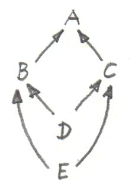
さらに、型推論では引き戻しがより高度な使い方をされる。多くの場合、2つの表現の型を単一化 (unify) する必要がある。たとえば、コンパイラが関数の型を推測しようとしているとする:
twice f x = f (f x)すべての変数と部分式に予備的な型を割り当てる。具体的には、以下を割り当てる:
f :: t0
x :: t1
f x :: t2
f (f x) :: t3そこから次のことが推測される:
twice :: t0 -> t1 -> t3また、関数の適用規則から生じる一連の制約も課される:
t0 = t1 -> t2 -- fがxに適用されるため。
t0 = t2 -> t3 -- fが (f x) に適用されるため。これらの制約を単一化するためには、ある型 (または型変数) の集合を見つけて、その型で両方の式の未知の型に代入し、同じ型を生成させる必要がある。そのような置換の1つは次のとおりだ:
t1 = t2 = t3 = Int
twice :: (Int -> Int) -> Int -> Intしかし、明らかに、これは最も一般的なものではない。最も一般的な置換を得るには引き戻しを用いる。詳細は本書の範囲外であるため説明しないが、次のような結果になることを確信できる:
twice :: (t -> t) -> t -> tここでtは自由型変数 (free type variable) だ。
12.3 余極限
圏論のすべての構造と同様に、極限には双対となる像が反対圏にある。錐内のすべての射の方向を反転させると、余錐 (co-cone) が1つでき、それらのうち普遍なものが余極限 (colimit) と呼ばれる。反転が分解射にも影響することに注意してほしい。分解射は普遍な余錐から他の余錐へと向かうことになる。

余極限の典型的な例は余積だ。これは、積の定義で使った圏によって生成される図式に対応する。
積も余積も、別々の方法で対象のペアの本質を具現化している。
終対象が極限だったように、始対象は空圏に基づく図式に対応する余極限だ。
引き戻しの双対は押し出し (pushout) と呼ばれる。それは圏によって生成されるスパン (span) と呼ばれる図式に基づく。
12.4 連続性
すでに述べたように、関手は、既存の接続 (射) を決して壊さないという意味で、圏の連続的な写像の概念に近い。圏からへの連続関手 (continuous functor) の実際の定義には、関手が極限を保存するという要件が含まれている。内のすべての図式は、単に2つの関手を合成すれば、内の図式に写せる。の連続性条件は、図式が極限を有するなら、図式も極限を有し、それは に等しいことを示している。

関手は射を射に、合成を合成に写すので、錐の像は常に錐であることに注意してほしい。可換な三角形は常に可換な三角形に写される (関手は合成を保存する)。分解射についても同じことが言える: 分解射の像も分解射だ。したがって、すべての関手はほぼ連続している。問題になる可能性があるのは、一意性条件だ。の分解射は一意でないことがある。には、にはなかった「より優れた錐」が他にあるかもしれない。
Hom関手は連続関手の一例だ。Hom関手 が、最初の変数について反変であり、2番目の変数について共変であることを思い出してほしい。言い換えれば、次の関手だ:
Cop × C -> Set
第2引数が固定されると、hom集合関手 (表現可能前層になる) はの余極限をの極限に写す。第1引数が固定されると、極限を極限に写す。
Haskellでのhom関手は、任意の2つの型から関数型への写像であるため、単なるパラメーター化された関数型だ。2番目のパラメーターを、たとえばStringに固定すると、次の反変関手が得られる:
newtype ToString a = ToString (a -> String)
instance Contravariant ToString where
contramap f (ToString g) = ToString (g . f)連続性は、ToStringが余極限、たとえば余積Either b cに適用された場合に極限を生成することを意味する。この場合、2つの関数型の積は次のようになる:
ToString (Either b c) ~ (b -> String, c -> String)実際、Either b cの関数はどれも、関数のペアによって提供される型2つを含む型宣言として実装される。
同様に、hom集合の第1引数を固定すると、おなじみのreader関手が得られる。その連続性は、たとえば、積を返す関数すべてが関数の積と等価であることを意味する。具体的には:
r -> (a, b) ~ (r -> a, r -> b)読者がどう思っているかは分かっている: これらを理解するのに圏論は必要ない。そのとおりだ！ それでも、このような結果が、ビットやバイト、プロセッサーアーキテクチャ、コンパイラー技術、さらにはラムダ計算に頼ることなく、第一原理から得られるのは驚くべきことだと思う。
「極限」と「連続性」という名前の由来が何なのか気になるなら、それらは微積分学において対応する概念を一般化したものだ。微積分学では、極限と連続性は開近傍に関連して定義される。開集合は、トポロジーを定義し、圏 (ポセット) を形成する。
12.5 課題
-
C++クラスの圏における押し出しを説明するにはどうするか？
-
恒等関手の極限が始対象であることを示せ。
-
任意の集合の部分集合は圏を形成する。その圏の射は、1番目の集合が2番目の集合の部分集合である場合、それら2つの集合を接続する矢として定義される。そのような圏内の集合2つの引き戻しは何か？ 押し出しは何か？ 始対象と終対象は何か？
-
コイコライザ (coequalizer) とは何か予想できるか？
-
終対象が存在する圏では、終対象に向かう引き戻しが積であることを示せ。
-
同様に、始対象が存在するなら、始対象からの押し出しが余積であることを示せ。
13 自由モノイド
モノイドは圏論においてもプログラミングにおいても重要な概念だ。圏は強い型付けの言語に相当し、モノイドは型なし言語に相当する。モノイドでは任意の2つの矢を合成できるからだ。それは型なし言語で任意の2つの関数を合成できることに当たる (当然、プログラムの実行時にランタイムエラーが発生する可能性はある)。
これまでに見てきたように、モノイドは単一の対象を持つ圏として記述され、その圏ではすべての論理が射の合成の規則として表現されている。この圏論的モデルは、より伝統的で集合論的なモノイドの定義と完全に等価だ。そこでは集合の2つの要素を「乗算」することで第3の要素が得られる。この「乗算」の過程はさらに詳細に分析できる。すなわち、まず要素のペア1つを形成し、次にこのペアを既存の要素――それらの「積」と同一視する。
乗算の2番目の部分、つまりペアと既存の要素との同一視を省くとどうなるだろうか？ たとえば、任意の集合から始めて、すべての可能な要素のペアを形成し、それらを新しい要素と呼ぶ、といったことが可能だ。次に、これらの新しい要素をすべての可能な要素とペアにする。以下同様だ。これは連鎖反応だ――新しい要素を永久に追加し続けられる。その結果は、無限集合であり、ほぼモノイドとなる。ただし、モノイドには単位元と結合則も必要だ。しかし、問題ない。特別な単位元を追加し、いくつかのペアを特定できる――単位元則と結合則をちょうど満たせる。
簡単な例で、これがどのように機能するか見てみよう。2要素の集合から始めよう。それらを自由モノイドの生成元 (generator) と呼ぶことにする。まず、単位元として機能する特別な要素を追加する。次に、要素のすべてのペアを追加し、それらを「積」と呼ぶ。との積はペア となる。との積はペア となり、との積は となり、との積は となる。とのペアとして形成できる 、 などは、、などと同一視する。したがって、このラウンドでは 、、、、、 だけを追加して、最終的にという集合を作成する。

次のラウンドでは、、 などの要素を追加していく。この時点で、結合性が保持されていることを確認する必要があるので、 を などと同一視する。言い換えると、内側の括弧は必要ないということだ。
このプロセスの最終的な結果が予想できるだろう: 可能なすべてのとのリストが作られる。事実、を空リストで表せば、「乗算」はリストの連結に他ならないことがわかる。
この種の構成では、要素の可能なすべての組み合わせを生成し続け、同一視は最小限に――単位元則と結合則を維持するのにちょうど十分なだけに留める。これは自由構成と呼ばれる。これで、生成元の集合から自由モノイド (free monoid) を構築したことになる。
13.1 Haskellにおける自由モノイド
Haskellの2要素集合は型Boolと等価であり、この集合によって生成される自由モノイドは型[Bool]
(Boolのリスト)
と等価だ。(無限リストの問題は意図的に無視している。)
Haskellのモノイドは型クラスによって定義されている:
class Monoid m where
mempty :: m
mappend :: m -> m -> mこれが意味しているのは、すべてのMonoidがmemptyと呼ばれる中立元と、mappendと呼ばれる二項関数
(乗算)
を持たなければならないということだ。Haskellでは単位元則と結合則は表現できず、モノイドがインスタンス化されるたびにプログラマによって検証されなければならない。
任意の型のリストがモノイドを形成するという事実は、次のインスタンス定義によって記述される:
instance Monoid [a] where
mempty = []
mappend = (++)これは、空リスト[]が単位元であり、リスト連結(++)が二項演算であることを記述している。
これまで見てきたように、型aのリストは、集合aを生成元とする自由モノイドに対応する。乗算を伴う自然数の集合は、多くの積が同一視されるので、自由モノイドではない。次の例と比較しよう:
2 * 3 = 6
[2] ++ [3] = [2, 3] // [6]と同一ではないこれは簡単だが、問題は、圏論では対象の中を見るのが許されないのに、どうやってこの自由構成を実現できるのか、ということだ。我々の馬車馬を使おう: 普遍的構成だ。
2番目の興味深い疑問は、単位元則と結合則が必要とする最小数よりも多くの要素を同一視すれば、ある自由モノイドから任意のモノイドを得られるのか、ということだ。これが普遍的構成から直接導かれることをお見せしよう。
13.2 自由モノイドの普遍的構成
普遍的構成についての経験を振り返れば、それは何かを構築するというより、特定のパターンに最もよく適合する対象を選択するものだと気付くだろう。したがって、普遍的構成を使って自由モノイドを「構築」したいなら、選択肢となる多数のモノイドの全体を考慮する必要がある。選択するにはモノイドの圏全体が必要だ。だが、モノイドは圏を形成するのだろうか？
まず、単位元と乗算によって定義された追加構造を伴う集合としてモノイドを見てみよう。モノイダル構造を保存する関数を射として採用する。このような構造保存関数は準同型 (homomorphism) と呼ばれる。モノイド準同型は2つの要素の積を2つの要素の写像の積に写さなければならない:
h (a * b) = h a * h bなおかつ単位元を単位元に写さなければならない。
例として、整数のリストから整数への準同型を考えよう:[2]を2に写し、[3]を3に写すなら、[2, 3]を6に写す必要がある。なぜなら、連結:
[2] ++ [3] = [2, 3]が次のような乗算になるからだ:
2 * 3 = 6ここで、個々のモノイドの内部構造については忘れて、対応する射をもつ対象としてのみ見よう。すると、モノイドの圏が得られる。
さて、内部構造を忘れる前に、重要な性質に注目しておこう。のすべての対象が集合に写せるのは自明だ。それはただの要素の集合だ。この集合は基底集合 (underlying set) と呼ばれる。実際、の対象を集合に写せるだけでなく、の射 (準同型) も関数に写せる。これも自明なだけに見えるが、すぐに役立つようになるだろう。このからへの対象と射の写像は、実際には関手だ。この関手はモノイダル構造を「忘れている」。いったん通常の集合の中に入ると、もはや単位元を区別したり乗算を気にしたりすることはない。そのため、忘却関手 (forgetful functor) と呼ばれる。忘却関手は圏論ではよく出てくる。
これで、2つの異なる観点からを見たことになる。それらは対象と射を伴う他のすべての圏と同じように扱える。この観点では、モノイドの内部構造は見えない。の中の特定の対象について言えるのは、それ自身や他の対象と射を通じて接続しているということだけだ。射の「乗法」の表――合成則――は、集合としてのモノイドという、もう一方の観点から導かれる。圏論に進んだことでこの観点を完全に失ったわけではない――まだ忘却関手を通じてアクセスできる。
普遍的構成を適用するには、特別な性質を定義することにより、モノイドの圏を探索して自由モノイドの最良の候補を選べるようにする必要がある。しかし、自由モノイドはその生成元によって定義される。別の生成元を選べば、生成される自由モノイドは変わる
(BoolのリストとIntのリストは違う)。我々の構成は、生成元の集合から始めなければならない。つまり、集合に戻ってきた！
ここで忘却関手が登場する。それは我々のモノイドをレントゲン撮影するのに使える。これらの小塊のレントゲン写真から生成元を特定できる。その仕組みはこうだ:
生成元の集合から始める。それは内の集合だ。
マッチさせるパターンは、モノイド――の対象――と内の関数で構成されている。
p :: x -> U mここで、はからへの忘却関手だ。これは奇妙な混成パターンだ――半分はで半分はだ。
この考え方では、のレントゲン写真内の生成元の集合を関数が特定する。関数が集合内の点をきちんと特定できなくても問題ない (関数が点を潰してもよい)。普遍構成によってそのパターンの最も良い代表が選ばれて、すべて整理されるだろう。
候補間の順位付けも定義しなければならない。もう1つの候補があるとしよう。モノイドと、そのレントゲン写真内の生成元を特定する関数だ:
q :: x -> U n次のようなモノイドの射 (構造保存準同型) がある場合、はよりも優れていると言おう:
h :: m -> nこれのの下の像 (は関手なので、射を関数に写す) はを通じて分解する:
q = U h . pが内の生成元を選択し、が内の「同じ」生成元を選択すると見なすなら、はこれらの生成元を2つのモノイドの間で写していると見なせる。は、定義上、モノイダル構造を保存することを覚えておいてほしい。これは、1つのモノイドにおける2つの生成子の積が、2番目のモノイドにおいて対応する2つの生成子の積に写されることなどを意味する。

この順位付けは、最も優れた候補、すなわち自由モノイドを見つけるために使われる。定義は次のとおりだ:
(関数を伴う) と、前述の分解特性を満たす任意の他の (関数を伴う) モノイドとについて、からへの一意な射が存在する場合に限って、を生成子を伴う自由モノイドと呼ぶ。
ちなみに、これは2番目の疑問に対する答えだ。関数には、の複数の要素をの1つの要素へ潰す力がある。ここで、潰すことは自由モノイドのいくつかの要素を同一視することに対応する。したがって、生成子を伴うモノイドは、に基づく自由モノイドから、いくつかの要素を同一視することによって得られる。自由モノイドとは、最小限だけしか同一視されていないモノイドのことだ。
随伴について話すとき、自由モノイドに戻ってこよう。
13.3 課題
-
モノイドの準同型が単位元を保存する、という条件は (もともと私もそう思ったように) 冗長だと思うかもしれない。結局のところ、すべてのについて次が成り立つのは分かっている:
h a * h e = h (a * e) = h aしたがって、は右単位元のように働く (同様に、左単位元のようにも働く)。 問題は、は、すべてのを考えると、終域モノイドの一部のモノイドしかカバーできないということだ。の像の外部に「真の」単位元が存在する場合がある。モノイド間で乗算を保存する同型は自動的に単位元を保存しなければならないことを示せ。
-
連結できる整数リストから乗算できる整数へのモノイド準同型について考える。空リスト
[]の像は何か？ すべての単要素リストは、それが含む整数に写されるとする。たとえば、[3]は3に写される。[1, 2, 3, 4]の像は何か？ 整数12に写されるリストはいくつあるか？ 2つのモノイド間に他の準同型はあるか？ -
単集合によって生成される自由モノイドとは何か？ それが何と同型なのか分かるか？
14 表現可能関手
そろそろ集合について少し話そう。数学者は集合論に対して愛憎相半ばする。集合論は数学にとってのアセンブリー言語だ――少なくともかつてはそうだった。圏論はある程度、集合論から距離を置こうとする。たとえば、すべての集合の集合は存在しないが、すべての集合の圏なら存在する、というのはよく知られた事実だ。これは良い。一方で我々は、圏内の任意の2対象間の射は集合を形成する、と仮定した。そしてそれをhom集合と名付けさえした。公平のために言うと、圏論には射が集合を形成しないような分野もある。そこでは射は別の圏の対象となる。Hom集合の代わりにhom対象を使う圏は豊穣 (enriched) 圏と呼ばれる。しかし、以下では古き良きhom集合を持つ圏に固執しよう。
集合は、圏論での対象を飲み込める特徴のない塊、というのが最も近い。集合が含む要素については、言えることが少ししかない。有限集合なら要素を数えられる。基数 (cardinal number) を使えば、ある意味で無限集合の要素を数えられる。たとえば、自然数の集合は実数の集合よりも小さいが、両者とも無限だ。ただし、驚くかも知れないが、有理数の集合は自然数の集合と同じ大きさだ。
それ以外には、集合に関するすべての情報は、集合間の関数に――特に、同型と呼ばれる可逆関数に――エンコードできる。どこからどう見ても同型集合は同一だ。数学基礎論の研究者の逆鱗に触れる前に、等価性と同型には根本的に重要な区別があることを説明しておこう。これは数学の最新分野であるホモトピー型理論 (Homotopy Type Theory, HoTT) の主要な関心事のひとつだ。ここでHoTTについて触れるのは、その純粋な数学理論が計算機科学にインスピレーションを得たものだからだ。主唱者の1人であるVladimir Voevodskyによる大きな発見は、定理証明系Coqを研究しているときに得られた。数学とプログラミングの相互作用は双方向なのだ。
集合に関する重要な教訓は、異なる要素の集合を比較しても問題ないということだ。たとえば、ある自然変換の集合は何らかの射の集合と同型だと言える。集合はただの集合だからだ。この場合の同型とは、一方の集合からの自然変換すべてについて他方の集合からの一意な射が存在し、逆もまた成り立つことを意味する。それらは互いにペアにできる。リンゴとオレンジが異なる圏の対象なら比較できないが、リンゴの集合とオレンジの集合は比較できる。多くの場合、圏論の問題を集合論の問題に変換すれば、必要な洞察が得られ、有用な定理を証明することさえ可能になる。
14.1 Hom関手
すべての圏には、への標準的な写像の族が用意されている。それらの写像は実際には関手であるため、圏の構造を保存している。そのような写像をひとつ生成しよう。
ある対象を内で固定し、別の対象も同様に内で選択しよう。Hom集合 は集合なので、の対象だ。を固定したままを変化させると、 も内で変化する。それゆえ、からへの写像が存在する。
hom集合を写像と見なしているということを2番目の引数で強調したい場合は と表記する。ここで、ダッシュは引数のプレースホルダとして機能する。
この対象の写像は射の写像に容易に拡張できる。内の任意の2対象との間の射を考えてみよう。先ほど定義した写像によって、対象は集合 に写され、対象は に写される。この写像が関手なら、は2つの集合間の関数に写されなければならない:
この関数をpoint-wiseに定義しよう。つまり、引数ごとに個別に定義する。引数として、 の任意の要素を1つ選択する必要がある。それをと呼ぼう。射は端と端が一致すれば合成可能だ。ここでもの終域がの始域と一致しており、それらの合成:
はからへの射となる。したがって、これは のメンバーだ。

先ほど、 から への関数を見つけた。これはの像として使える。混乱の危険がないなら、このリフトされた関数を次のように記述しよう:
また、射に対するその作用を次のように記述しよう:
この構成はどの圏でも機能するので、Haskellの型の圏でも機能するはずだ。Haskellでは、hom関手はReader関手としてよく知られている:
type Reader a x = a -> xinstance Functor (Reader a) where
fmap f h = f . hHom集合の始域を固定する代わりに終域を固定すると何が起こるかを考えてみよう。言い換えれば、写像 も関手なのかという疑問だ。そのとおり、関手だ。ただし、共変ではなく反変だ。なぜなら、射の端と端を同様にマッチングするとによる後置合成 (postcomposition) となり、 の場合のような前置合成 (precomposition) ではないからだ。
この反変関手はHaskellですでに見た。それはOpと呼ばれていた。
type Op a x = x -> ainstance Contravariant (Op a) where
contramap f h = h . f最後に、両方の対象を変化させると、プロ関手 が得られる。これは最初の引数について反変で、2番目の引数について共変だ (2つの引数が独立して変化することを強調するため、2番目のプレースホルダとして二重ダッシュを使った)。このプロ関手については、関手性について話したときに見た:
instance Profunctor (->) where
dimap ab cd bc = cd . bc . ab
lmap = flip (.)
rmap = (.)重要な教訓は、この観察がどの圏にも当てはまるということだ。すなわち、対象からhom集合への写像は関手的だ。反変は反対圏からの写像と等価なので、この事実は次のように簡潔に述べられる:
14.2 表現可能関手
これまで見てきたように、で対象を選択するたびに、からへの関手が得られる。このように構造を保存するへの写像は、表現 (representation) と呼ばれることが多い。での対象や射は、内の集合や関数として表現される。
関手 自体を指して表現可能と呼ぶこともある。より一般的には、あるの選択に対してhom関手と自然同型である関手はすべて表現可能 (representable) と呼ばれる。このような関手は必ず集合値関手 (-valued functor) でなければならない。 がそうだからだ。
以前述べたように、同型集合は同一と見なされることが多い。より一般的には、圏の同型対象は同一と見なされる。ある対象は、他の対象 (およびそれ自身) との射による関係以外の構造を持たないからだ。
たとえば、まず集合でモデル化されたモノイドの圏について以前説明した。ただし、それらの集合のモノイダル構造を保存する関数のみを射として選ぶように気を付けた。したがって、内の2つの対象が同型である場合、すなわち、それらの間に可逆な射がある場合、それらはまったく同じ構造を持つ。それらが基づく集合と関数を見てみると、片方のモノイドの単位元はもう片方のモノイドの単位元に写され、2つの要素の積はそれらの写像の積に写されているのがわかる。
同じ論法が関手にも適用できる。2つの圏の間の関手は圏を形成し、そこでは自然変換が射の役目を果たしている。したがって、2つの関手の間に可逆な自然変換があれば、それらは同型であり、同一と見なせる。
この観点から、表現可能関手の定義を分析してみよう。が表現可能であるためには、次の条件を満たす必要がある: に対象があり、からへの自然変換が1つあり、逆方向に別の自然変換があり、それらの合成が恒等自然変換であること。
ある対象におけるのコンポーネントを見てみよう。それは内の関数だ:
この変換の自然条件は、からへのすべての射について、次の図式が可換であることを示している:
Haskellでは、自然変換を多相関数に置き換えればよい:
alpha :: forall x. (a -> x) -> F xここでオプションの量化子forallを使った。自然条件
fmap f . alpha = alpha . fmap fはパラメトリック性 (前述のtheorems for freeの1つ)
によって自動的に満たされる。これは、左辺のfmapが関手によって定義され、右辺のfmapがreader関手によって定義されるという理解に基づく。readerでのfmapは単なる関数の前置合成なので、さらに明示的にできる。
の要素であるに作用することで、自然条件は次のように単純化される:
fmap f (alpha h) = alpha (f . h)もう1つの変換betaは方向が逆だ:
beta :: forall x. F x -> (a -> x)これは自然条件を満たす必要があり、alphaの逆関数でなければならない:
alpha . beta = id = beta . alpha後で説明するとおり、が空でないならば常に から任意の集合値関手への自然変換が存在する (米田の補題) が、必ずしも可逆ではない。
Haskellでlist関手を用い、Intをaとした例を挙げよう。それを実現する自然変換はこうだ:
alpha :: forall x. (Int -> x) -> [x]
alpha h = map h [12]
任意の数字として12を選び、それを使って単要素リストを作成した。次に、このリストに関数hをfmapし、hが返す型のリストを取得する。(実際には、そのような変換は整数のリストと同じくらいたくさんある。)
自然条件はmap (fmapのリスト版)
の合成可能性と等価だ:
map f (map h [12]) = map (f . h) [12]しかし、逆変換を見つけるには、任意の型xのリストを元にxを返す関数を探さなくてはならない。
beta :: forall x. [x] -> (Int -> x)headか何かを使ってリストからxを取得しようと考えたかもしれないが、空のリストには使えない。ここで
(Intの代わりとして)
機能する型aの選択肢がないことに注目してほしい。すなわち、list関手は表現可能ではない。
Haskellの (自己)
関手がコンテナに少し似ていると言ったのを覚えているだろうか？
同じように、表現可能関手は、関数呼び出しの結果をメモ化して保存するためのコンテナと見なせる
(Haskellでのhom集合の要素は単なる関数だ)。
内の対象を表現する型は、関数の表形式の値にアクセスするためのキー型と見なせる。ここでの変換alphaはtabulateと呼ばれ、その逆のbetaはindexと呼ばれる。以下は
(少し単純化した) Representableのクラス定義だ:
class Representable f where
type Rep f :: *
tabulate :: (Rep f -> x) -> f x
index :: f x -> Rep f -> xここでRep fと呼ばれる型を表現するがRepresentableの定義の一部であることに注意してほしい。星印はRep fが型である
(型コンストラクターやその他のエキゾチックなカインドではない)
ことを意味する。
無限リストや空でないストリームは表現可能だ。
data Stream x = Cons x (Stream x)それらはIntegerを引数に取る関数の値をメモ化したものと見なせる。(厳密に言えば、非負整数を使うべきだが、コードを複雑にしたくなかった。)
このような関数をtabulate化するためには、値の無限ストリームを作成する。もちろん、これが可能なのは、Haskellが遅延評価だからだ。つまり、値は必要になったとき評価される。メモ化された値にアクセスするにはindexを使う。
instance Representable Stream where
type Rep Stream = Integer
tabulate f = Cons (f 0) (tabulate (f . (+1)))
index (Cons b bs) n = if n == 0 then b else index bs (n - 1)任意の戻り値型を持つ一連の関数すべてをカバーするような単一のメモ化スキームを実装できるのは興味深い。
反変関手の表現可能性も同様に定義される。ただし、 の2番目の引数を固定する。あるいは、からへの関手を考えるのでも等価だ。なぜなら、 は と同じだからだ。
表現可能性には興味深い捻じれがある。カルテシアン閉圏では、hom集合を内部的には冪乗対象として扱えることに注意してほしい。hom集合 はと等価で、表現可能関手に対しては次のように書ける:
試しに、両辺の対数をとってみよう:
もちろん、これは純粋に形式的な変換だが、対数の性質を多少知っている人にとっては非常に便利だ。特に、直積型に基づく関手は直和型で表現でき、直和型の関手は一般に表現可能ではないことが知られている (例: list関手)。
最後に、表現可能関手が同じものに対して2種類の実装を与えていることに注目してほしい――1つは関数、1つはデータ構造だ。それらの内容はまったく同じだ――同じキーを使えば同じ値が取得される。それが私が話していた「同一性」の感覚だ。2つの自然同型関手は、その内容に関する限り同一だ。一方、2つの表現は異なる方法で実装されることが多く、パフォーマンス特性が異なる可能性がある。メモ化はパフォーマンス改善策として使われ、実行時間の大幅な短縮につながる可能性がある。同じ基礎計算の異なる表現を生成できることは、実用上の価値が非常に高い。そのため、驚くべきことに、圏論はパフォーマンスをまったく考慮しないにも関わらず、実用上の価値を持つ別の実装を探求する十分な機会を与えてくれる。
14.3 課題
-
Hom関手が内の恒等射を内の対応する恒等関数に写すことを示せ。
-
Maybeが表現可能でないことを示せ。 -
Reader関手は表現可能か？ -
Stream表現を使って、引数を自乗する関数をメモ化せよ。 -
Streamに対するtabulateとindexが実際に互いに逆であることを示せ。(ヒント: 数学的帰納法を使う。) -
次の関手:
Pair a = Pair a aは表現可能だ。それを表現する型がわかるだろうか？
tabulateとindexを実装せよ。
14.4 参考文献
- 表現可能関手についてのCatstersの動画
15 米田の補題
圏論における構造のほとんどは、より具体的な他の数学の分野での結果を一般化したものだ。積・余積・モノイド・冪乗などは、圏論よりずっと前から知られていた。それらは別の数学の分野で別の名前で知られていたかもしれない。集合論におけるカルテシアン積、順序集合論における交わり (meet)、論理学における論理積――これらはすべて圏論的な積という抽象概念に対応する具体例だ。
この点で、米田の補題は、圏一般に関する包括的な命題として際立っており、数学の他の分野では全くと言ってよいほど前例がない。一番似ているのは群論におけるCayleyの定理 (すべての群はある集合の置換群と同型) だという説もある。
米田の補題は、任意の圏と、からへの関手を前提とする。すでに前章で述べたように、集合値関手のいくつかは表現可能であり、hom関手と同型だ。米田の補題は、すべての集合値関手がhom関手から自然変換によって得られることを示し、そのようなすべての変換を明示的に列挙する。
自然変換について話したとき、自然条件は非常に制約が厳しくなりうると述べた。ある対象について自然変換のコンポーネントを定義するとき、自然性が十分強いため、射を介して接続されている別の対象までそのコンポーネントを「輸送」することがある。始域圏と終域圏で対象間の矢が多いほど、自然変換のコンポーネントを輸送するための制約が厳しくなる。はたまたま矢が豊富な圏だ。
米田の補題では、hom関手と他の関手との間の自然変換が、その単一コンポーネントの値を1点で指定するだけで (！) 完全に決定されることが示される。自然変換の残りの部分は単に自然条件に従う。
では、米田の補題に関わる2つの関手について、その間の自然条件を確認しよう。1番目の関手はhom関手だ。それは内の任意の対象を射の集合 に写す。ただし、は内の固定された対象とする。また、からへの射をすべて に写すこともすでに見た。
2番目の関手は任意の集合値関手だ。
この2つの関手の間の自然変換をとしよう。内での操作なので、やなどの自然変換のコンポーネントは集合間の正則関数にすぎない。

そして、これらは単なる関数なので、特定の点での値を見られる。だが、集合 の点とは何だろうか？ 鍵となる観察はこうだ: 集合 内のすべての点は、からへの射でもある。
したがって、についての自然性の正方図式:
は、point-wiseに、に作用すると次のようになる:
前の節でhom関手 の射への作用を、次のような前置合成として定義したことを思い出しただろう:
これにより次が導かれる:
この条件がどれほど強いかはの場合に特化すれば分かる。
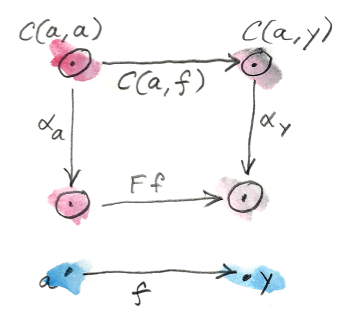
この場合、はからへの射となる。そのような射が少なくとも1つ存在するのは分かっている。だ。代入してみよう:
何が起きたか注目してほしい。左辺は の任意の要素にを作用させている。そして、におけるの単一値によって完全に決まる。そのような値は任意に選べて、自然変換を生成するだろう。の値は集合内にあるため、のどの点でも何らかのが定義される。
逆に、 からへの自然変換が与えられた場合、において評価すればの点を得られる。
以上より、米田の補題が証明された:
からへの自然変換との要素との間には1対1の対応がある。
言い換えれば、
あるいは、という表記でとの間の関手圏を表すと、自然変換の集合はその圏のhom集合にすぎず、次のように書ける:
この対応が実際には自然同型であることについては後で説明する。
さて、この結果について直観的に理解しておこう。最も驚くべきことは、自然変換全体の結晶化が、において割り当てた値というたった1粒の種から始まることだ。それはその1点から自然条件にしたがって広がっていく。それは内にの像を溢れさせる。そこで、まずは の下での像について考えてみたい。
自体の像から始めよう。hom関手 の下では、は集合 に写される。一方、関手の下では、集合に写される。自然変換のコンポーネントは、 からへのある関数だ。集合 の中の、射に対応する1点だけに注目しよう。集合内の1点にすぎないという事実を強調するために、これをと呼ぼう。コンポーネントはを内のある点に写すはずだ。どんなを選択しても一意な自然変換につながることを説明しよう。

1つ目の主張は、1点を選択すれば残りの関数が一意に決まる、というものだ。実際に、からへの射に対応する他の点を 内で選んでみよう。そしてここで米田の補題の魔法が起こる: は集合 内の点と見なせる。同時に、それは集合間の関数を2つ選択する。実際、射は、hom関手では関数 に写され、ではに写される。

ここで、もとのに対する の作用を考えてみよう。ただし、記憶のとおり、はに対応する。その作用は前置合成として定義される。すなわち、点に対応すると同じだ。したがって、射は、に作用するときにを生成する関数に、すなわちに写される。ぐるりと一周した！
さて、のへの作用を考えてみよう。これはで、内の点だ。自然性の正方図式を完成させるには、がによってに写される必要がある。任意の (任意の) を選択し、の下でのその写像を導出した。したがって、関数は完全に決定される。
2番目の主張は、に接続された内の対象に対してが一意に決定される、というものだ。論法は同様だ。ただし、ここではさらに2つの集合 とがあり、からへの射は、hom関手の下では次のように写される:
そして、の下では次のようになる:
ここでも、に作用する は、 内の点に対応する前置合成によって与えられる。自然性により、に作用するの値は次のように決定される:
は任意としていたため、関数全体がこのように決定される。

に接続されていない対象がにある場合はどうなるだろう？
それらすべてが
の下で空集合に写される。空集合は集合の圏における始対象なのを思い出してほしい。これは、この集合から他の集合への一意な関数があることを意味する。その関数はabsurdと呼ばれていた。したがって、ここでも、自然変換のコンポーネントには選択の余地がない:
absurdしかあり得ない。
米田の補題を理解する方法の1つは、集合値関手の間の自然変換は関数の族にすぎず、関数は一般には非可逆だと理解することだ。情報を潰す関数もあり、その場合は終域の一部しかカバーされない。非可逆でない唯一の関数は、可逆なもの、つまり同型だ。したがって、構造を保存する最良の集合値関手は表現可能関手だということになる。それらはhom関手か、あるいはhom関手と自然同型な関手のどちらかだ。その他の関手はすべてhom関手を非可逆変換することで得られる。そのような変換は、情報を失わせるだけでなく、内の関手の像のごく一部しかカバーしない可能性がある。
15.1 Haskellにおける米田の補題
Haskellのhom関手には、すでにreader関手という名前で出会っている:
type Reader a x = a -> xReaderは射 (ここでは関数) を前置合成で写す:
instance Functor (Reader a) where
fmap f h = f . h米田の補題によれば、reader関手は他の任意の関手へ自然に写せる。
自然変換は多相関数だ。したがって、関手Fが与えられると、reader関手からの写像が得られる:
alpha :: forall x . (a -> x) -> F xいつものように、forallはオプションだが、自然変換のパラメトリック多相を強調するために明示的に書くことにしている。
米田の補題によれば、これらの自然変換はF aの要素と1対1の対応関係にある。
forall x . (a -> x) -> F x ≅ F aこの恒等射の右辺は、通常はデータ構造と見なしているものだ。一般化されたコンテナとして関手を解釈したのを覚えているだろうか？
F aはaのコンテナだ。しかし、左辺は関数を引数に取る多相関数だ。米田の補題によれば、2つの表現は等価だ――それらは同じ情報を含んでいる。
別の言い方をしよう: 次のような型の多相関数:
alpha :: forall x . (a -> x) -> F x
を与えてくれれば、aのコンテナを作成してみせる。このトリックは米田の補題の証明で使ったものだ。この関数をidで呼び出すことでF aの要素を取得した:
alpha id :: F a逆もまた真だ。型F aの任意の値:
fa :: F aについて、多相関数:
alpha h = fmap h faを正しい型で定義できる。2つの表現の間は簡単に行き来できる。
表現が複数ある利点は、一方が他方よりも合成しやすかったり、用途によっては効率的だったりすることだ。
この原則の最も単純な例は、コンパイラの構成でよく使われるコード変換である、継続渡しスタイル
(continuation passing style, CPS)
だ。これは米田の補題を恒等関手へ最も単純に適用したものだ。Fを恒等射に置き換えると、次のようになる:
forall r . (a -> r) -> r ≅ a
この式の解釈は、任意の型aはaの「ハンドラー」を取る関数によって置き換えられる、ということだ。ハンドラーは、aを受け入れ、残りの計算――継続を実行する関数だ。(型rは通常、ある種のステータスコードをカプセル化している。)
このスタイルのプログラミングは、UI、非同期システム、並行プログラミングではごく一般的だ。CPSの欠点は、制御の反転を伴うことだ。コードは生産者と消費者 (ハンドラー) に分割されていて、簡単には合成できない。Webプログラミングの経験がある人なら誰でも、ステートフルなハンドラーとやり取りするスパゲッティ・コードの悪夢をよく知っている。後で述べるように、関手とモナドを慎重に使うことでCPSの合成的な特性を復元できる。
15.2 余米田の補題
いつものように、矢の方向を逆にすればおまけの構成が得られる。米田の補題を反対圏に適用すれば反変関手の間の写像を得られる。
同様に、hom関手の始対象の代わりに終対象を固定することで、余米田の補題を導出できる。からへの反変hom関手 を取ろう。反変版の米田の補題は、この関手から他の任意の反変関手への自然変換と、集合の要素との間に1対1の対応を確立する:
Nat(C(-, a), F) ≅ F aHaskell版の余米田の補題は次のようになる:
forall x . (x -> a) -> F x ≅ F a一部の文献では反変版の方を米田の補題と呼んでいるので注意してほしい。
15.3 課題
-
米田の同型を成す2つのHaskellの関数
phiとpsiが互いに逆であることを示せ。phi :: (forall x . (a -> x) -> F x) -> F a phi alpha = alpha idpsi :: F a -> (forall x . (a -> x) -> F x) psi fa h = fmap h fa -
離散圏 (discrete category) は、対象はあるが恒等射以外の射はない圏だ。米田の補題はそのような圏の関手でどのように役立つだろうか？
-
unit型のリスト
[()]は長さ以外の情報を含まない。したがって、データ型としては、整数をエンコードしていると見なせる。空リストは0をエンコードし、単リスト[()](型ではなく値) は1をエンコードし、以下同様だ。このデータ型の別の表現を、list関手に対する米田の補題を使って構成せよ。
15.4 参考文献
- Catstersの動画
16 米田埋め込み
以前見たとおり、圏で対象を固定すると、写像 はからへの (共変) 関手となる。
(Hom集合 は集合なので終域はだ。) この写像はhom関手と呼ばれる。射に対するその作用についてもすでに定義した。
さて、この写像でを変化させてみよう。Hom関手 を任意のに割り当てる新しい写像が得られる。
これは圏の対象から関手への写像だ。それらの関手は関手圏の対象だ (自然変換の関手圏についての節を参照)。からへの関手圏をと表記しよう。また、Hom関手が表現可能関手の原型だということも思い出しただろう。
2つの圏間の対象の写像を見るたびに、その写像が関手でもあるかどうかを知りたくなるのは自然なことだ。言い換えると、一方の圏の射をもう一方の圏の射へとリフトできるかどうかだ。の射は の要素にすぎないが、関手圏の射は自然変換だ。つまり、射から自然変換への写像を探していることになる。
射に対応する自然変換が見つかるかどうか調べよう。まず、とが何に写されているか見てみよう。それらは2つの関手 と に写されている。この2つの関手の間の自然変換が必要だ。
そして、ここが秘訣だ。米田の補題を使う:
さらに総称をhom関手 で置き換える。すると、次の結果が得られる:

これはまさに探していた2つのhom関手の間の自然変換だが、少しひねりがある。つまり、自然変換と射―― の要素――の間の写像の向きが「間違って」いる。でも大丈夫だ。それは単に関手が反変なのを意味する。

実際、予想以上のものが得られた。からへの写像は反変関手というだけではない――それは充満忠実 (fully faithful) 関手だ。充実性と忠実性という特性は、関手がhom集合をどう写すかを述べている。
忠実 (faithful) 関手はhom集合上の単射であり、つまり、異なる射を異なる射に写す。言い換えれば、射を合体させない。
充満 (full) 関手はhom集合上の全射であり、つまり、1つのhom集合をもう1つのhom集合の上に写し、後者を完全にカバーする。
充満忠実関手はhom集合上の全単射 (bijection) であり、両方の集合のすべての要素が1対1で写される。始域圏内の対象とのすべてのペアに対して、 と の間に全単射がある。ここで、はの終域圏 (この場合は関手圏) だ。ただし、これはが対象について全単射であることを意味しないので注意してほしい。内の対象のうちの像内にないものが存在する可能性があり、それらの対象のhom集合については何も言えない。
16.1 埋め込み
先ほど説明した (反変) 関手、すなわち、内の対象を内の関手に写す関手:
によって米田埋め込み (Yoneda embedding) が定義される。それは圏 (厳密に言うと反変なので圏) を関手圏の内部に埋め込む。内の対象を関手に写すだけでなく、それらの間のすべての接続を忠実に保持する。
これは非常に有用な結果だ。なぜなら、数学者は関手圏について、特に終域がである関手についてよく知っているからだ。任意の圏について、関手圏へ埋め込むことで多くの知見を得られる。
当然だが米田埋め込みにも双対があり、余米田埋め込み (co-Yoneda embedding) とも呼ばれる。始めの時点で各hom集合 の (始対象ではなく) 終対象を固定しても良かったことに着目しよう。そうすれば反変hom関手が得られただろう。からへの反変関手は、おなじみの前層だ (たとえば、極限と余極限を参照)。余米田埋め込みは圏の前層圏への埋め込みを定義する。射に対する作用は次のように与えられる:
数学者は前層圏についても多くのことを知っているので、そこに任意の圏を埋め込めるのは大きな戦果だ。
16.2 Haskellへの応用
Haskellでの米田埋め込みは、一方ではreader関手の自然変換の間の同型として、他方では (逆向きの) 関数として表せる:
forall x. (a -> x) -> (b -> x) ≅ b -> a(Reader関手が((->) a)と等価であることを思い出してほしい。)
この恒等射の左辺は多相関数であり、aからxへの関数と型bの値が与えられれば、型xの値を生成できる
(関数b -> xを非カリー化することにより、括弧で囲むのを省略する)。これをすべてのxに対して行える唯一の方法は、関数がbをaに変換する方法を知っている場合だ。関数b -> aに密かにアクセスできる必要がある。
そのようなコンバーターbtoaがあれば、左辺を定義できる。左辺はfromYと呼ばれ、次のようになる:
fromY :: (a -> x) -> b -> x
fromY f b = f (btoa b)逆に、関数fromYがあれば、恒等射でfromYを呼び出すことでコンバーターを復元できる:
fromY id :: b -> aこれは型fromYとbtoaの関数間の全単射を確立する。
この同型を別の観点で見ると、bからaへの関数のCPS符号化とも見なせる。引数a -> xは継続
(ハンドラー)
だ。結果はbからxへの関数であり、型bの値で呼ばれたとき、エンコードされた関数を前置合成した継続を実行する。
米田埋め込みはHaskellのデータ構造の代替表現についても説明する。特に、非常に便利なレンズの表現をControl.Lensライブラリで提供する。
16.3 前順序の例
この節の例はRobert Harperによって提案された。前順序によって定義された圏に米田埋め込みを適用するものだ。前順序は要素間に順序関係がある集合だ。順序関係は伝統的に (以下) で記述される。前順序に「前」が付いているのは、関係が推移律と反射律を満たす必要があるだけで、必ずしも反対称律を満たす必要はないからだ (すなわち、循環してもよい)。
前順序関係をもつ集合は圏を生成する。対象はその集合の要素だ。対象からへの射は、対象が比較できない場合やが真でない場合には存在せず、の場合にはからへの向きに存在する。ある対象から別の対象への射が2つ以上存在することはない。したがって、このような圏のhom集合はすべて、空集合または単集合だ。このような圏はやせた圏 (thin category) と呼ばれる。
この構成が実際に圏であることは簡単に納得できる。まず、矢は合成可能だ。なぜなら、かつならばだからだ。そして、合成は結合性を持つ。恒等射も存在する。なぜなら、(基礎となる関係から再帰的に) すべての要素がそれ自身 (以下) となるからだ。
これで前順序圏に余米田埋め込みを適用できるようになった。特に、射に対する作用には興味がある:
右辺のhom集合が空集合でないのはのときだけだ。その場合は単集合となる。したがって、の場合、左辺には自然変換が1つだけ存在する。それ以外の場合は自然変換はない。
では、前順序のhom関手間の自然変換とは何だろうか？ それは2つの集合 と の間の関数の族でなければならない。前順序集合では、2つの集合はそれぞれ空集合か単集合だ。どんな関数があり得るか見てみよう。
空集合からそれ自身への関数
(空集合に作用する恒等射)、空集合から単集合へのabsurd関数
(定義すべき要素が空集合には1つもないので、何もしない)、そして単集合からそれ自身への関数
(要素が1つの集合に作用する恒等射)
がある。単集合から空集合への組み合わせだけは禁じられている
(そのような関数が単集合の要素に作用したとして、どんな値を返せばよいだろう？)。
したがって、この自然変換は決してhom単集合をhom空集合に接続しない。言い換えると、 (hom単集合) ならば は空集合ではない。空でない はが以下であることを意味する。したがって、ここでの自然変換が存在するためには、すべてのについて、ならばが成り立つ必要がある:
一方、余米田の補題によると、この自然変換の存在は が空でないかであることと等価だ。まとめると、次の結果が得られる:
この結果に直接到達することもできただろう。直観的には、ならば未満のすべての要素も未満である必要がある。逆に、右辺のをに代入すると、となる。しかし、米田埋め込みを通じてこの結果に到達する方がはるかに刺激的なのは認めなければならない。
16.4 自然性
米田の補題は、自然変換の集合との対象との間に同型射を設ける。自然変換は関手圏内の射だ。任意の2つの関手間の自然変換の集合は、その圏におけるhom集合だ。米田の補題とは次の同型だ:
この同型はでもでも自然だとわかる。言い換えれば、直積圏から取られたペア で自然だ。ここではを関手圏の対象として扱っていることに注意してほしい。
これが何を意味するのか少し考えてみよう。自然同型は2つの関手の間の反転可能な自然変換だ。そして実際、前述の同型の右辺は関手だ。それはからへの関手だ。ペア に対するその作用は集合だ――関手を対象において評価した結果だ。この関手は評価関手 (evaluation functor) と呼ばれる。
左辺も関手であり、 を自然変換の集合 に変換する。
これらが本当に関手だと示すには、射に対する作用も定義しなければならない。しかし、ペア と の間の射とは何だろうか？ それは射のペア だ。1番目は関手間の射――自然変換――であり、2番目は内の正則な射だ。
評価関手はこのペア を取り、2つの集合との間の関数に写す。このような関数は、におけるのコンポーネント (をに写す) とによってリフトされた射から、簡単に構築できる。
の自然性により、これは次と同じであることに注意してほしい:
同型射全体の自然性を証明するつもりはない――関手とは何かが掴めれば、ごく機械的に証明できる。それは同型が関手と自然変換から成り立っているという事実から導かれる。うまくいかないはずがない。
16.5 課題
-
余米田埋め込みをHaskellで表現せよ。
-
fromYとbtoaの間に確立された全単射が同型射であることを示せ (2つの写像は互いに逆だ)。 -
モノイドについて米田埋め込みを実現せよ。そのモノイドの単一の対象に対応する関手は何か？ どのような自然変換がモノイド射に対応するか？
-
共変米田埋め込みの全順序への応用は何か？ (この問いはGershom Bazermanによって提案された。)
-
米田埋め込みを使えば、任意の関手圏を関手圏に埋め込める。それが射 (この場合は自然変換) にどう作用するか説明せよ。
17 射のすべて
まだ圏論は射に関するものだと納得していないなら、私の仕事が不十分だったようだ。次の話題である随伴 (adjunction) は、hom集合の同型射によって定義されるため、hom集合の構成単位についての直観を見直すのが理にかなっている。また、これまで見てきた多くの構成を復習しておくのも有意義だろう。それらは、随伴が提供するさらに汎用的な語彙によって詳しく記述できるからだ。
17.1 関手
まず始めに、本当に関手を射の写像だと考えるべきだ。これはHaskellでfmapを中心に展開されるFunctor型クラスの定義において強調されている考え方だ。当然、関手は対象――射の終点――も写す。そうでなければ、合成の保存について語れない。対象は射のどのペアが合成可能か教えてくれる。一方の射の終対象がもう一方の始対象と等しくなければ合成できない。したがって、射の合成をリフトされた射の合成に写したい場合、それらの終点の写像は十分に決定される。
17.2 可換図式
射の多くの性質は可換図式によって表される。もし特定の射が他の射の合成として複数の方法で記述できるなら、可換図式があることになる。
特に、可換図式はほぼすべての普遍的構成の基礎となっている (始対象と終対象という例外を除く)。このことはすでに、積、余積、その他さまざまな (余) 極限、冪乗対象、自由モノイドなどの定義で見てきた。
積は普遍的構成の簡単な例だ。ある2つの対象とについて、その積となる普遍性を持つような、射とのペアを伴う対象の存在を確認する。
積は極限の特別な場合でもある。極限は錐によって定義される。一般的な錐は可換図式から作成される。それらの図式の可換性は、関手の写像のための適切な自然条件で置き換えてよい。このようにして、可換性は自然変換という高水準言語に対するアセンブリ言語の役割に降格される。
17.3 自然変換
一般に、自然変換は射から可換正方図式への写像が必要なときに非常に便利だ。自然性の正方図式の対辺は、ある射を2つの関手とで写したものだ。他の辺は自然変換のコンポーネントだ (それらも射だ)。
自然性は、「隣接する」 (射でつながった) コンポーネントに移っても、圏や関手の構造に反しないことを意味する。まず自然変換のコンポーネントを使って対象間のギャップを埋めてから関手を使って隣の対象にジャンプするのでも、その逆でも関係ない。2つの方向は直交している。いうなれば、自然変換では左右に動けて、関手では上下や前後に動ける。関手の像は、対象となる圏でのシートとして視覚化できる。自然変換はFに対応するシートをGに対応する別のシートに写す。

この直交性のHaskellにおける例を見た。そこでは、関手の作用はコンテナの形状を変更せずに内容を変更し、自然変換は内容を変更せずに別のコンテナに再パッケージした。これらの操作の順序は関係ない。
極限の定義の中で錐が自然変換に置き換えられるのを見た。自然性はすべての錐について側面が可換だと保証する。さらに、極限は錐の間の写像によって定義される。これらの写像は可換性条件も満たす必要がある。(たとえば、積の定義における三角形は可換である必要がある)。
これらの条件も自然性によって代替できる。普遍な錐、すなわち極限は、(反変) hom関手間の自然変換として定義されていたのを覚えているだろう:
また、(反変) 関手は、内の対象を、それ自体が自然変換である錐に写す:
ここで、は定関手、はでの図式を定義する関手だ。関手とは両方とも、の射に対する作用が明確に定義されている。との間の特定の自然変換が同型なのは偶然だ。
17.4 自然同型
自然同型――すべてのコンポーネントが可逆な自然変換――は、圏論で「2つのものは同じである」と言うときの言い方だ。そのような変換のコンポーネントは対象間の同型射――逆が存在する射――でなければならない。関手の像をシートとして表す場合、自然同型はシート間の1対1の可逆な写像だ。
17.5 Hom集合
それにしても、射とは何だろう？ 射は対象よりも構造が豊かだ。対象とは違って、射には2つの端がある。しかし、始対象と終対象を固定すると、それら2つの間の射は平凡な集合を (少なくとも局所的に小さい圏では) 形成する。この集合の要素を区別するためにやのような名前を付けることはできるが、実際のところ、違いは何なのだろう？
あるhom集合の射の間の本質的な差異は、(隣接するhom集合 (abutting hom-sets) からの) 他の射と合成する方法にある。ある射をに (前置または後置) 合成したものとに合成したものが異なる場合、すなわち:
ならば、との違いを直接「観察」できる。しかし、違いが直接観察できない場合でも、関手を使えばhom集合にズームインできる。関手は2つの射を別々の射に写せる:
これらの射が属する圏はより豊かで、隣接するhom集合による分解能がより高い。たとえば:
ここで、はの像に含まれない。
17.6 Hom集合同型
圏論では多くの構造がhom集合間の同型に依存している。しかし、hom集合はただの集合なので、それらの間の同型射から分かることはあまりない。有限集合については、同型射は要素数が同じだと示すだけだ。無限集合なら、濃度が同じでなければならない。しかし、hom集合の意味のある同型射はすべて、合成も考慮しなければならない。そして、合成には複数のhom集合が関わる。あらゆるhom集合にまたがる同型を定義する必要があり、合成と相互運用できるような何らかの互換性の条件を課す必要がある。そして、自然同型はその条件にぴったり合う。
だが、hom集合の自然同型とは何だろう？ 自然性は、集合間ではなく、関手間の写像の特性だ。つまり、今はhom集合値関手の間の自然同型について話している。それらの関手は単なる集合値関手ではない。射に対するその作用は、適切なhom関手によって導かれる。射はhom関手によって、前置合成か後置合成のどちらかで (合成の変性に依存して) 正準的に写される。
米田埋め込みはそのような同型の一例だ。それは内のhom集合を関手圏内のhom集合に写す。そしてそれは自然だ。米田埋め込みの関手は、1つはのhom関手で、もう1つは対象をhom集合間の自然変換の集合に写す。
極限の定義もhom集合間の自然同型だ (ここでも2番目は関手圏内のhom集合だ):
冪乗対象や自由モノイドの構成も、hom集合間の自然同型として書き直せることが分かる。
これは偶然の一致ではない――次に見るように、これらはhom集合の自然同型として定義される随伴の様々な例にすぎない。
17.7 Hom集合の非対称性
随伴を理解するのに役立つ観察結果はもう1つある。Hom集合は一般に対称ではない。Hom集合 は、hom集合 と大きく異なることがよくある。この非対称性の究極の例は、半順序を圏とみなすことだ。半順序では、が以下の場合に限り、からへの射が存在する。とが異なる場合、からへと逆方向に進む射は存在しない。Hom集合 が空集合でない (ここでは単集合を意味する) なら、でない限り、 は空でなければならない。この圏の矢の流れは一方向に決まっている。
関係が反対称でなくてもよい前順序も、たまにある循環を除けば「ほとんど」方向付けられている。任意の圏を前順序の一般化と見なすのは便利だ。
前順序はやせた圏だ――すべてのhom集合が単集合か空集合のどちらかだ。一般の圏は「厚い」(thick) 前順序として可視化できる。
17.8 課題
- 縮退 (degenerate) した自然条件の例を考え、適切な図を描け。たとえば、関手またはのどちらかが対象と (の終わり) の両方を同じ対象に、またはのように写したらどうなるか？ (この方法で錐または余錐が得られることに注目してほしい。) 次に、またはのどちらかの場合について考えよ。最後に、自分自身へループする射から始めた場合はどうか？
18 随伴
数学では、あるものが別のものに似ているという言い方はいろいろある。最も厳密なのは等価性だ。互いを区別する方法がなければ、2つのものは等しい。想像できるあらゆる状況において、一方を他方の代わりにできる。たとえば、可換図式について話すときはいつも射の等価性 (equality) を使っていることに気が付いていただろうか？ それは、射が集合 (hom集合) を形成し、集合の要素は等価性を確認できるからだ。
しかし、等価性は強すぎることが多い。実際には等価ではないのに、あらゆる意図と目的に照らして同じであるという例はたくさんある。たとえば、ペアの型(Bool, Char)は(Char, Bool)と厳密に等しいわけではないが、含んでいる情報が同じなのは分かっている。この概念を最もうまく捉えたものは、2つの型の間の同型射――反転可能な射だ。これは射なので、構造を保存する。そして同型
(isomorphism) の “iso”
は、もとの場所に帰り着く往復旅行の一部であることを意味する。どちら側から出発するかは関係ない。ペアにおいては、この同型射はswapと呼ばれる:
swap :: (a,b) -> (b,a)
swap (a,b) = (b,a)swapはそれ自身の逆だ。
18.1 随伴と単位/余単位ペア
圏が同型だと述べるときは、これを圏間の写像、すなわち関手によって表す。圏から圏への逆変換可能な関手 (“right”) が存在する場合に、とは同型だと言えるようにしたい。言い換えると、からに戻る別の関手 (“left”) が存在し、と合成することで恒等関手に等しくなる。合成はとの2種類があるので、恒等関手も内と内の2種類がある。

しかし、ここがややこしいところだ: 2つの関手が等しいとは何を意味するのだろうか？ 次の等価性は何を意味するだろう:
あるいは、次のものは:
関手の等価性を対象の等価性として定義するのは合理的に思える。2つの関手が同じ対象に作用するなら、同じ対象が生成されるはずだ。しかし、一般に、対象の等価性の概念は任意の圏においては存在しない。それは単に定義の一部ではない。(この「等価性とはなにか」といううさぎの穴を深く掘り下げると、ホモトピー型理論に辿り着く。)
関手は圏の圏における射であるから、それらは等価性で比較可能なはずだ、と主張したくなるかもしれない。実際、対象が集合を形成するような小さい圏を扱う限り、集合の要素の等価性を使って対象を等価性比較できる。
ただし、覚えておいてほしい。は実際には-圏だ。-圏のhom集合には追加の構造がある――-射の間に作用する-射がある。では、-射は関手であり、-射は自然変換だ。だから、関手について述べるときに自然同型を等価性の代わりと考えるのは、より自然なのだ (この駄洒落は避けようがない！)。
したがって、圏の同型の代わりに同値性 (equivalence) という、より一般的な概念を考えるのが理にかなっている。2つの圏とが同値 (equivalent) であるとは、それらの間を行き来する2つの関手があり、(どちらかの向きの) 合成が恒等関手と自然同型 (naturally isomorphic) であることだ。言い換えると、合成と恒等関手の間には双方向の自然変換があり、と恒等関手の間にも別の双方向の自然変換がある。
随伴は同値性よりもさらに弱い。なぜなら、2つの関手の合成が恒等関手と同型 (isomorphic) でなくてもよいからだ。その代わり、からへの一方向の自然変換と、からへの別の一方向の自然変換が存在する必要がある。これら2つの自然変換の表記を以下に示す:
は随伴の単位 (unit) と呼ばれ、は余単位 (counit) と呼ばれる。
これら2つの定義の非対称性に注目してほしい。一般には、残りの2つの写像は存在しない:
この非対称性のため、関手は関手に対する[左随伴]{.keyword #left adjoint} (left adjoint) と呼ばれ、関手はに対する右随伴 (right adjoint) と呼ばれる。(当然、左と右に意味があるのは図を特定の向きに描いた場合だけだ)。
随伴は次のように略記される:
随伴をよりよく理解するために、単位と余単位をさらに詳しく分析してみよう。

まずは単位から始めよう。これは自然変換なので、射の族だ。内の対象について、のコンポーネントは、 (に等しい) と (図中の) の間の射となる:
合成は、の自己関手であることに注意してほしい。
この等式は、内の任意の対象を始域として選択でき、往復旅行する関手を使って終域を選択できることを示している。そして、射という矢が終域に向けて放たれる。

同様に、余単位のコンポーネントは次のように記述できる:
これは、内の任意の対象を終域として選択でき、ラウンドトリップ関手を使って始域を選択できることを示している。そして、射という矢が始域から終域に向けて放たれる。
単位と余単位について別の見方をすると、単位はに恒等関手を挿入できる場所ならどこでも合成を導入 (introduce) でき、余単位はの恒等射で置き換えることで合成を除去 (eliminate) できる。これにより、導入した後で除去すれば何も変更されないことを保証するいくつかの「自明な」整合性条件が導かれる:
これらは、次の図式を可換にするので、三角恒等式 (triangular identity) と呼ばれる:


これらは関手圏の図式だ。つまり、矢は自然変換であり、それらの合成は自然変換の水平合成だ。コンポーネントで表すと、これらの恒等式は次のようになる:
Haskellでは単位と余単位を別の名前でよく見かける。単位はreturn
(あるいはApplicativeの定義ではpure)
として知られている:
return :: d -> m dまた、余単位はextractとして知られている:
extract :: w c -> cここで、mはに対応する
(自己)
関手であり、wはに対応する
(自己)
関手だ。後で述べるように、これらはそれぞれモナドとコモナドの定義の一部だ。
自己関手をコンテナと見なすなら、単位 (すなわちreturn)
は任意の型の値に対して既定の箱を生成する多相関数だ。余単位
(すなわちextract) はその逆を行う:
コンテナから単一の値を取得または生成する。
後で述べるように、随伴関手の各ペアはモナドとコモナドを定義する。逆に、すべてのモナドやコモナドは随伴関手のペアに分解され得る――ただし、その分解は一意ではない。
Haskellではモナドをよく使うが、それらを随伴関手のペアに分解することはめったにない。その主な理由は、それらの関手によって通常はの外へ追い出されるからだ。
しかし、Haskellでは自己関手の随伴を定義できる。以下はData.Functor.Adjunctionから引用した定義の一部だ:
class (Functor f, Representable u) =>
Adjunction f u | f -> u, u -> f where
unit :: a -> u (f a)
counit :: f (u a) -> a
この定義には説明が必要だ。まず、これは多パラメーター型クラスを記述している――2つのパラメーターはfとuだ。その2つの型コンストラクターの間にAdjunctionという関係を確立している。
バーティカルバーの後の追加条件は、関数の依存関係を指定している。たとえば、f -> uはfによってuが決定されることを意味する
(fとuの関係は関数で、ここでは型コンストラクターについての関数だ)。逆に、u -> fは、uが分かればfが一意に決まることを意味する。
なぜHaskellでは右随伴uが表現可能関手であるという条件を課せるのかについては、すぐ後で説明する。
18.2 随伴とhom集合
随伴の等価な定義として、hom集合の自然同型によるものがある。その定義はこれまで学んだ普遍的構成とうまく結びついている。ある一意な射がある構成を分解しているという話を聞いたら毎回、それはある集合からhom集合への写像だと見なすべきだ。それが「一意な射を選択する」ということの意味だ。
さらに言うと、分解は自然変換によって記述されることが多い。分解には可換図式が関わる――ある射は2つの射 (因子) の合成に等しい。自然変換は射を可換図式に写す。したがって、普遍的構成では、射から可換図式へ、そして一意な射へ向かう。最終的には、射から射への写像、あるいはあるhom集合から別の (通常は異なる圏の) hom集合への写像が得られる。もしこの写像が可逆で、すべてのhom集合に自然に拡張できるならば、随伴が存在する。
普遍的構成と随伴の主な違いは、後者がすべてのhom集合に対して大域的に定義されていることだ。たとえば、普遍的構成を使えば選択した2つの対象の積を定義できる。これはその圏内の他の対象のペアに対して積が存在しない場合でも同様だ。すぐ後で説明するように、対象の任意のペアの積が圏に存在する場合は、随伴によって定義することもできる。
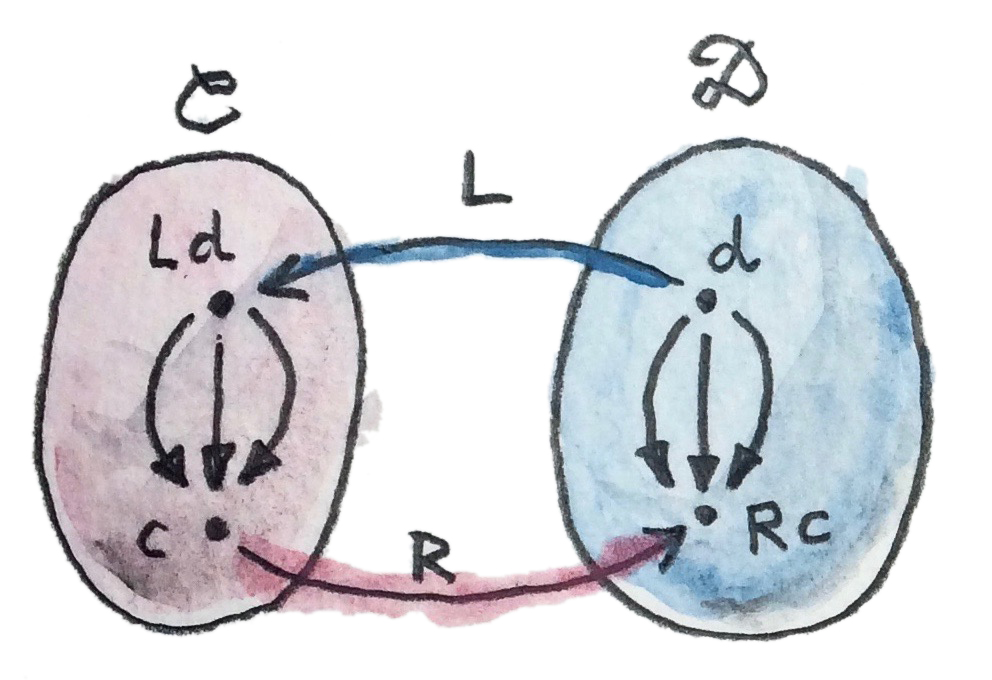
これがhom集合を使った随伴の別の定義だ。前と同じように、2つの関手とがある。任意の2つの対象として内の始対象と内の終対象を選択しようを使えば始対象をに写せる。これで内の2つの対象とが得られた。これらはhom集合を定義する:
同様に、を使えば終対象を写せる。これで内の2つの対象とが得られた。これらもhom集合を定義する:
次のようなhom集合の同型が存在する場合に限ってはに対する左随伴と呼ばれる:
これはでもでも自然だ。
自然性は、始対象を間でスムーズに変化させられ、終対象を間でスムーズに変化させられることを意味する。より正確には、からへの次の2つの (共変) 関手間に自然変換が存在する。対象に対するこれらの関手の作用は次のとおりだ:
もう一方の自然変換は次の (反変) 関手間に作用する:
自然変換は両方とも可逆でなければならない。
随伴の2つの定義が等しいことは簡単に示せる。例として、単位変換の導出を、hom集合の同型から始めてみよう:
この同型は任意の対象で成り立つので、でも成り立つ必要がある:
左辺は少なくとも1つの射、つまり恒等射を必ず含むのが分かっている。自然変換は、この射を の要素に写す。すなわち、恒等関手を挿入すると、以下の圏内の射に写す:
でパラメーター化された射の族が得られた。それらは関手と関手の間に自然変換を形成する (自然条件は容易に確認できる)。これはまさに単位だ。
逆に、単位と余単位の存在から始めれば、hom集合間の変換を定義できる。例として、hom集合 内の任意の射を選択しよう。に作用して 内に射を生成するを定義したい。
選択肢はあまりない。試せる方法のひとつはを使ってをリフトすることだ。これにより、 からへの射―― の要素である射が生成される。
のコンポーネントに必要なのはからへの射だ。これは問題ではない。なぜなら、のコンポーネントを使えばから を得られるからだ。すると、次の結果が得られる:
他の方向についても同様であり、の導出も同様だ。
HaskellでのAdjunctionの定義に戻ると、自然変換とはそれぞれ
(aとbについての)
多相関数leftAdjunctとrightAdjunctに置き換えられる。関手とはfとuと呼ばれる。
class (Functor f, Representable u) =>
Adjunction f u | f -> u, u -> f where
leftAdjunct :: (f a -> b) -> (a -> u b)
rightAdjunct :: (a -> u b) -> (f a -> b)
unit/counitの構成とleftAdjunct/rightAdjunctの構成の同値性は、次の対応によって示される:
unit = leftAdjunct id
counit = rightAdjunct id
leftAdjunct f = fmap f . unit
rightAdjunct f = counit . fmap f随伴について圏論での記述からHaskellのコードへの翻案をなぞるのは非常に有益だ。演習として大いに推奨したい。
以上で、Haskellで右随伴が自動的に表現可能関手になる理由を説明する準備ができた。その理由は、第1近似としては、Haskellの型の圏を集合の圏として扱えるからだ。
右圏がであるとき、右随伴はからへの関手だ。そのような関手が表現可能なのは、hom関手 がに対して自然同型であるような関手が内にある場合だ。からへのある関手に対してが右随伴である場合、そのような対象は常に存在する――それはの下の単集合 の像だ:
実際、随伴は次の2つのhom集合が自然同型だと教えてくれる:
与えられたについて、右辺は単集合 からへの関数の集合だ。そのような関数が集合からそれぞれ1つの要素を選択することはすでに説明した。そのような関数の集合は、集合の同型だ。したがって、次が成り立つ:
これはが実際に表現可能であることを示している。
18.3 随伴に基づく積
これまでに、普遍的構成を用いた概念をいくつか紹介した。これらの概念の多くは、大域的に定義されている場合、随伴を使って表現する方が簡単だ。最も単純な非自明の例は積だ。積の普遍的構成の要点は、普遍的構成を通じて積に似た候補を分解できることだ。
より正確には、2つの対象との積は、2つの射とを伴う対象
(またはHaskell表記の(a, b))
であり、かつ2つの射とを伴う他の候補に対して、とをとを通じて分解する一意な射
が存在する。
すでに見たように、Haskellでは、2つの射影からこの射を生成するfactorizerを実装できる。
factorizer :: (c -> a) -> (c -> b) -> (c -> (a, b))
factorizer p q = \x -> (p x, q x)分解条件が成立することは簡単に確認できる:
fst . factorizer p q = p
snd . factorizer p q = q射のペアpとqをとり、もう一つの射m = factorizer p qを生成する写像が存在する。
これをどのように変換すれば、随伴を定義するために必要な2つのhom集合間の写像にできるだろう？ 秘訣は、の外に出て、射のペアを直積圏内の単一の射として扱うことだ。
直積圏とは何か思い出してほしい。2つの任意の圏とを取り上げよう。直積圏内の対象は、1つはから、もう1つはからの対象のペアだ。射は、1つはから、もう1つはからの射のペアだ。
ある圏に積を定義するには、直積圏から始める必要がある。内の射のペアは、直積圏内の単一の射だ。

積を定義するために直積圏を使うのは、最初は少し紛らわしいかもしれない。しかし、これらはまったく異なる積だ。普遍的構成は直積圏を定義するのに必要ない。必要なのは対象のペアと射のペアという概念だけだ。
ただし、からの対象のペアは、の対象ではない。それは別の圏の対象だ。このペアは形式的にと書ける。ここで、とはの対象だ。一方、普遍的構成は、同じ圏内の対象
(またはHaskellでは(a, b))
を定義するために必要だ。この対象は、普遍的構成によって指定された方法でペアを表すことになっている。これは常に存在するわけではなく、たとえ一部の対象に対して存在していても、内の他の対象のペアに対しては存在しない場合もある。
さて、factorizerをhom集合の写像として見てみよう。1番目のhom集合は直積圏内にあり、2番目は内にある。内の一般的な射は、射のペアとなる:
ここではと異なる可能性がある。しかし、積を定義するために関心があるのは、内で同じ始対象を共有する特別な射のペアとだ。それは構わない: 随伴の定義では、左hom集合の始域は任意の対象ではない――左関手が右圏内の対象に作用した結果だ。要求に合う関手を推測するのは簡単だ――それはからへの対角関手 (diagonal functor) で、対象への作用は次のようになる:
したがって、ここでの随伴の左hom集合はこうなる:
これは直積圏のhom集合だ。その要素は、factorizerの引数として知っている射のペアだ:
右hom集合はにあり、始対象から、ある関手が内の終対象に作用した結果へと向かう。これこそがペアを積対象に写す関手だ。hom集合のこの要素はfactorizerの結果として認識される:

まだ完全な随伴は得られていない。まずfactorizerが反転可能である必要がある――hom集合の間に同型射を構築しているからだ。factorizerの逆は、ある対象から積対象への射で始まる必要がある。言い換えると、は次のものの要素でなければならない:
逆factorizerはをからへ向かう内の射に写す。言い換えると、次のものの要素である射に写す:
この写像が存在するならば、対角関手に対して右随伴が存在すると結論できる。この関手は積を定義する。
Haskellでは、をとでそれぞれ合成することで、常にfactorizerの逆を合成できる。
p = fst . m
q = snd . m積を定義する2つの方法の同値性の証明を完成するには、hom集合間の写像が、、で自然であることも示す必要がある。これは熱心な読者のための練習として残しておこう。
ここまでで行ったことを要約しよう: 圏論的な積は対角関手の[右随伴]{.keyword #right adjoint}として大域的に定義できる:
ここで、は、ペアに対する右随伴関手の作用の結果だ。からの関手はすべて双関手であるため、は双関手であることに注意してほしい。Haskellでは、双関手は単に(,)と書かれる。次の例のように、2つの型にこれを適用すれば直積型を得られる:
(,) Int Bool ~ (Int, Bool)18.4 随伴に基づく冪乗
冪乗、すなわち関数オブジェクトは、普遍的構成を使って定義できる。この構成は、対象のすべてのペアに対して存在するなら、随伴と見なせる。繰り返すが、秘訣は言明に集中することだ:
他の任意の対象のうち、射を伴うものについて、一意な射 が存在する。
この言明によりhom集合間の写像が確立される。
この例では、同じ圏内の対象を扱っているので、随伴関手は2つとも自己関手だ。左 (自己) 関手は、対象に作用すると、を生成する。ある固定されたについて積を求めるのに相当する関手だ。
右 (自己) 関手は、に作用すると、関数オブジェクト (すなわち) を生成する。ここでも、は固定されている。この2つの関手間の随伴は、よく次のように記述される:
この随伴の基礎となるhom集合の写像を極力理解しやすくするには、普遍的構成で用いた図式を描き直せばよい。

射はこの随伴の余単位に他ならないことに注目してほしい:
ここで:
前に述べたとおり、普遍的構成は同型を除いて一意な対象を定義する。それが積を “the” product、冪乗を “the” exponentialと書く理由だ。この特性は随伴にも及ぶ。つまり、ある関手に随伴があるなら、その随伴は同型を除いて一意だ。
18.5 課題
- 次の2つの (反変) 関手間の変換について、自然性の正方図式を導出せよ:
- 随伴の第2の定義におけるhom集合同型から始めて、余単位を導出せよ。
- 随伴の2つの定義について、同値性の証明を完成せよ。
- 余積が随伴によって定義できることを示せ。余積のfactorizerの定義から始めよ。
- 余積が対角関手の左随伴であることを示せ。
- 積と関数オブジェクトの間の随伴をHaskellで定義せよ。
19 自由/忘却随伴
19.1 随伴に基づく自由モノイド
自由構造は随伴の強力な応用例だ。自由関手は忘却関手への左随伴として定義される。忘却関手は構造を忘れた関手で、通常は非常に単純だ。たとえば、多くの興味深い圏は集合の上に構築されている。しかし、それらの集合を抽象化した圏論的対象は内部構造をもたず、要素をもたない。それでも、これらの対象はある意味で集合の記憶を保っていることがよくある。つまり、ある圏からへの写像――関手――が存在する。内のある対象に対応する集合は、その対象の台集合 (underlying set) と呼ばれる。
モノイドは、台集合――要素の集合――を持つ対象だ。モノイドの圏から集合の圏へは忘却関手Uが存在し、モノイドをその台集合に写す。それはさらにモノイド射
(準同型) を集合間の関数に写す。
私は、が分裂した性格を持っていると見なすのが好きだ。一方では、それは乗算と単位元を持つたくさんの集合だ。もう一方では、それは特徴のない対象を持つ圏であり、その唯一の構造は対象間の射にエンコードされている。乗算と単位を保存するすべての集合関数は、に射を呼び起こす。
注意事項:
- 同じ集合に写されるモノイドは多数存在する可能性があり、
- モノイド射は、それらの台集合の間に存在する関数よりも少ない (または、多くても同数だ)。
忘却関手Uの左随伴である関手Fは、生成元集合から自由モノイドを構築する自由関手だ。随伴は、前に議論した自由モノイドの普遍的構成に従う。
Hom集合を使って、この随伴を次のように書ける:
この (とについての自然) 同型によって以下のことが分かる:
- によって生成された自由モノイドと任意のモノイドとの間のモノイド準同型に対し、生成元の集合をの台集合に埋め込む一意な関数が存在する。これは 内の関数だ。
- あるの台集合にを埋め込むすべての関数に対し、によって生成された自由モノイドとモノイドの間に一意なモノイド射が存在する。(これは普遍的構成でと呼んでいた射だ。)

直観では、はに基づいて構築できる「最大の」モノイドだ。もしモノイドの内部を見られたら、 に属するすべての射がこの自由モノイドを他のモノイドに埋め込むことがわかるだろう。それは、おそらくいくつかの要素を同一視することで行われる。具体的には、の生成元 (例えばの要素) をに埋め込む。この随伴は、 からの関数で与えられる右辺のの埋め込みが、左辺のモノイドの埋め込みを一意に決定し、またその逆も成り立つことを示している。
Haskellでは、リストのデータ構造は自由モノイドだ
(ただし、注意点がいくつかある: Dan
Doelのブログ記事を参照)。リスト型[a]は自由モノイドであり、型aは生成元の集合を表す。たとえば、型[Char]には、単位元――空リスト[]――と、['a']、['b']のような単要素リスト――自由モノイドの生成元が含まれている。残りは「積」を適用して生成される。ここでは、2つのリストの積は単に片方をもう片方に連結するだけだ。連結は結合的で単位的
(unital) だ
(つまり、中立元が存在する――ここでは空リストだ)。Charによって生成される自由モノイドは、Charからなるすべての文字列の集合に他ならない。これはHaskellではStringと呼ばれる:
type String = [Char](typeは型シノニムを定義する――既存の型に別の名前を付ける。)
もう1つの興味深い例として、単一の生成元から作られた自由モノイドが挙げられる。これはunitのリスト[()]の型だ。その要素は[]、[()]、[(), ()]などだ。そのようなリストはすべて、1つの自然数――長さで記述できる。それ以外にunitのリストにエンコードされた情報はない。このようなリスト2つを連結すると、長さが構成要素の長さの合計である新しいリストが生成される。型[()]が、(0を含む)
自然数の加算モノイドと同型であることは容易に理解できる。以下の2つの関数は互いに逆であり、この同型を表している:
toNat :: [()] -> Int
toNat = length
toLst :: Int -> [()]
toLst n = replicate n ()
簡単のためNatural型ではなくInt型を使ったが、考え方は同じだ。関数replicateは、与えられた値――ここでは単位――で埋められた長さnのリストを作成する。
19.2 いくつかの直観
以下では、身振り手振りの議論をいくつか挙げる。この種の議論は厳密ではないが、直観を形成するのに役立つ。
自由/忘却随伴についての直観を得るには、関手や関数が本質的に情報を損失することを心に留めておくのがよい。関数は複数の対象や射を潰すことがあり、関数は集合の複数の要素をまとめることがある。また、像が終域の一部しかカバーしていないこともある。
内の「平均的な」hom集合は関数の全スペクトルを含み、最も損失の少ないもの (たとえば、単射、または、おそらく同型) に始まり、始域全体を単一要素 (もしあれば) に潰す定数関数で終わる。
私はよく、任意の圏における射も損失があると見なす。これは単なるメンタルモデルだが、特に随伴について考えるときには有用だ――典型的には、圏の1つがである随伴の場合だ。
形式的には、反転可能な射 (同型射) または反転不可能な射についてのみ語れる。損失があると見なせるのは後者だ。また、単射関数 (潰さない関数) と全射関数 (終域全体をカバーする関数) という概念を一般化した、モノ (mono-) 射とエピ (epi-) 射という概念もある。ただし、モノとエピの両方でありながら非可逆な射も存在可能だ。
自由忘却随伴では、左側に制約の多い圏があり、右側に制約の少ない圏がある。の射が「より少ない」のは、何らかの追加構造を保存しなければならないからだ。の場合は乗算と単位を保存しなければならない。の射はそれほど多くの構造を保存しなくてよいので、「より多くの」射がある。
忘却関手を内の対象に適用するとき、の「内部構造」を暴いていると見なせる。実際、がなら、はの内部構造――台集合――を定義していると見なせる。(任意の圏では、対象の内部については他の対象との接続を通じてしか述べられないが、ここでは単に身振り手振りで議論しているだけだ。)
を使って2つの対象とを写す場合、一般に、hom集合 の写像は の部分集合のみをカバーすると予想される。 内の射が追加構造を保存しなければならないのに対して、 の射はそうではないからだ。

しかし、随伴は特定のhom集合の同型として定義されるので、は非常に慎重に選択しなければならない。随伴では、は内のどこから選択してもよいわけではなく、自由関手の (より小さいと推察される) 像から選択される:
したがって、の像は任意のに向かう多くの射を持つ対象で構成されていなければならない。実際、構造を保存するからへの射は、構造を保存しないからへの射と同数存在する必要がある。これは、の像が本質的に構造のない対象で構成されている必要がある (射が保存すべき構造がない) ことを意味する。そのような「構造のない」対象は自由対象 (free object) と呼ばれる。
モノイドの例では、自由モノイドは単位元則と結合則によって生成される構造以外には何の構造も持たない。それ以外では、すべての乗算はまったく新しい要素を生成する。
自由モノイドでは、はではない――新しい要素だ。とは同一視されないので、この自由モノイドから他の任意のモノイドへの射は、それらを別々に写すことが許される。ただし、と (それらの積) の両方をの同じ要素に写しても構わない。また、加算モノイドでと (それらの和) を同一視することなども同様だ。同一視が異なれば、得られるモノイドも異なる。
これは別の興味深い直観を導く: 自由モノイドは、モノイダル演算を実行する代わりに、渡された引数を累積 (accumulate) する。例えば、とを掛ける代わりに、とをリストに記憶する。この手法の利点は、どんなモノイダル操作を使うか指定する必要がないことだ。引数を累積し続けて、最後だけその結果に演算子を適用すればよい。そしてその最後の時点で、どんな演算子を適用するか選択できる。数値を加算したり、乗算したり、モジュロ2加算したりできる。つまり、自由モノイドは式の作成と評価を分離する。この考え方は代数について話すときにもう一度見ることになる。
この直観は他のもっと複雑な自由構造にも一般化できる。たとえば、評価する前に式木 (expression tree) 全体を累積できる。このアプローチの利点は、そのような木を変換して、評価を高速にしたり、メモリ消費を減らしたりできることだ。これはたとえば、行列計算の実装に使われる。先行評価 (eager evaluation) で行列計算を行うと、中間結果を保存するための一時的な配列が大量に割り当てられてしまうからだ。
19.3 課題
- 単集合から構築された自由モノイドを、その生成元と見なす。その自由モノイドから任意のモノイドへの射と、その単集合からの台集合への関数との間に1対1の対応があることを示せ。
20 モナド: プログラマーの定義
プログラマーたちは、モナドにまつわる神話を発展させてきた。これはプログラミングにおける極めて抽象的で難しい概念の1つだと考えられている。「わかっている」人とそうでない人がいる。多くの人にとって、モナドの概念を理解した瞬間はまるで神秘的な体験だ。モナドは非常に多様な構成の本質を抽象化しているので、日常生活でうまく比喩できるものがない。そして我々は暗闇の中で手探りするようになった。まるで盲人たちが象の端の様々な部分に触れて、「ロープだ」、「木の幹だ」、「ブリトーだ！」と勝ち誇って叫ぶように。
はっきり言っておこう。モナドを取り巻く神秘主義はすべて誤解に基づいている。モナドはとてもシンプルな概念だ。混乱を引き起こしているのは、モナドの応用先の多様さだ。
この記事のための調査の一環として、私はダクトテープ (別名ダックテープ) とその応用先について調べた。それを使ってできることのほんの一例を紹介しよう:
- ダクトをシーリングする
- アポロ13号に搭載された二酸化炭素除去装置を修理する
- いぼを治療する
- アップルのiPhone 4の通話切断問題を修正する
- プロムで着るドレスを作る
- 吊り橋を建設する
ダクトテープが何か知らずに、このリストに基づいて理解しようとしているのを想像してほしい。幸運を祈る！
そういうわけで、「モナドは……のようなものだ」という常套句のコレクションにもう1つ追加しようと思う: モナドはダクトテープのようなものだ。応用は幅広く多様だが、原理はごく単純だ: モナドは物同士をくっつける。より正確には、物同士を合成する。
このことは、多くのプログラマー、特に命令型言語をバックグラウンドに持つプログラマーがモナドを理解するのに困難が伴う理由の一部を説明している。問題は、プログラミングを関数合成の観点から考えるのに慣れていないことだ。これは理解できる。関数から関数へ値を直接渡さずに、中間値に名前を付けるのはよくあることだ。グルーコードの短い断片を、ヘルパー関数に抽象化せず、インライン化することもよくある。以下は、ベクトルの長さを求める関数をC言語で命令型スタイルで実装したものだ:
double vlen(double *v) {
double d = 0.0;
int n;
for (n = 0; n < 3; ++n)
d += v[n]* v[n];
return sqrt(d);
}これを、明示的な関数合成を用いた (様式化された) Haskell版と比較してほしい:
vlen = sqrt . sum . fmap (flip (^) 2)(ここでは、より謎めかせるために、指数演算子(^)の2番目の引数を2に設定して部分適用した。)
Haskellのポイントフリー・スタイルが常に優れていると主張しているのではなく、プログラミングで行うことのすべての基礎に関数合成があると主張しているだけだ。そして実質的には関数を合成しているにもかかわらず、Haskellでは多大な労力を費やしてdo記法と呼ばれる命令型構文をモナディック合成のために提供している。その使い方については後で説明する。まずは、なぜモナディック合成が必要なのか説明しよう。
20.1 Kleisli圏
以前、通常の関数を装飾することでWriterモナドに到達した。装飾を行うために、典型的には、戻り値を文字列とペアにした。あるいはもっと一般的には、モノイドの要素とペアにした。今ではそのような装飾が関手だと気付ける:
newtype Writer w a = Writer (a, w)
instance Functor (Writer w) where
fmap f (Writer (a, w)) = Writer (f a, w)その後、以下の形式の装飾された関数を合成する方法、すなわちKleisli矢 (Kleisli arrow) を発見した。
a -> Writer w bログの累積は合成の内部で実装した。
これでKleisli圏をより一般的に定義する準備ができた。まずは圏と自己関手から始める。対応するKleisli圏はと同じ対象を持つが、射は異なる。内の2つの対象との間の射は次のように実装される:
これはもとの圏内の射だ。内のKleisli矢はとの間の射として扱い、との間の射としては扱わないことを覚えておくのが重要だ。
この例では、はWriter wに特化されており、ある決まったモノイドwに対応している。
Kleisli矢は、それに適した合成を定義できるときだけ圏を形成する。すべての対象に対して恒等射を持ち結合的な合成がある場合、関手はモナド (monad) と呼ばれ、その結果形成される圏はKleisli圏と呼ばれる。
Haskellでは、Kleisli合成はfish演算子>=>を用いて定義され、その恒等射はreturnと呼ばれる多相関数だ。Kleisli合成を使ったモナドの定義は次のとおりだ:
class Monad m where
(>=>) :: (a -> m b) -> (b -> m c) -> (a -> m c)
return :: a -> m aモナドを定義する方法には同等のものがいくつもあり、これがHaskellエコシステムでの主要な方法ではないことを覚えておいてほしい。この方法の概念の簡潔さと得られる直観は気に入っているが、プログラミングの際に便利な定義は他にもある。それらについて少し話そう。
この定式化ではモナド則を非常に簡単に表現できる。Haskellではモナド則を強制できないが、等式推論には使える。それらは単にKleisli圏の標準的な合成則だ:
(f >=> g) >=> h = f >=> (g >=> h) -- 結合性
return >=> f = f -- 左単位元
f >=> return = f -- 右単位元この種の定義はモナドが本当は何なのかも表している。つまり、モナドは装飾された関数を合成する方法なのだ。副作用や状態は関係ない。関係あるのは合成だ。後で見るように、装飾された関数はさまざまな作用や状態を表現するために使われることがあるが、モナドはそのためのものではない。モナドは粘着力のあるダクトテープで、装飾された関数の一端を別の装飾された関数の一端につなぐ。
Writerの例に戻ろう: ログ生成関数
(Writer関手でのKleisli矢)
は圏を形成する。なぜなら、Writerはモナドだからだ。
instance Monoid w => Monad (Writer w) where
f >=> g = \a ->
let Writer (b, s) = f a
Writer (c, s') = g b
in Writer (c, s `mappend` s')
return a = Writer (a, mempty)Writer wのモナド則は、wのモノイド則が満たされている限り満たされる
(これらもHaskellでは強制できない)。
Writerモナド用に便利なKleisli矢が定義されており、tellと呼ばれる。その唯一の目的は引数をログに追加することだ:
tell :: w -> Writer w ()
tell s = Writer ((), s)これは後で他のモナディック関数の構成要素として使うことになる。
20.2 Fishの解剖
さまざまなモナドに対してfish演算子を実装するとすぐ、コードに重複がたくさんあり、簡単に括り出せることに気付くだろう。まず、2つの関数のKleisli合成は1つの関数を返す必要があるので、その実装も型aの引数を1つ取るラムダから始められる:
(>=>) :: (a -> m b) -> (b -> m c) -> (a -> m c)
f >=> g = \a -> ...この引数はfに渡す以外のことはできない:
f >=> g = \a -> let mb = f a
in ...
この時点で、型m cの結果を生成し、型m bの対象と関数g :: b -> m cを自由に使える必要がある。それを行う関数を定義しよう。この関数はbindと呼ばれ、通常は中置演算子の形式で記される:
(>>=) :: m a -> (a -> m b) -> m bモナドごとに、fish演算子の代わりにbindを定義できる。実際、標準的なHaskellのモナドの定義ではbindが使われている:
class Monad m where
(>>=) :: m a -> (a -> m b) -> m b
return :: a -> m a以下にWriterモナドのバインドの定義を示す:
(Writer (a, w)) >>= f = let Writer (b, w') = f a
in Writer (b, w `mappend` w')これは確かにfish演算子の定義より短い。
mが関手であるという事実を利用すればbindをさらに詳しく分析できる。fmapを使えばm aの内容に関数a -> m bを適用できる。それによってaはm bに変換される。したがって、適用結果は型m (m b)となる。これは必要な結果の型m bそのものではない。しかし、近付いてはいる。mの2重適用を潰す、つまりフラット化する関数さえあればよい。そのような関数はjoinと呼ばれる。
join :: m (m a) -> m ajoinを使ってbindを次のように書き直せる:
ma >>= f = join (fmap f ma)これはモナドの定義の3番目の選択肢につながる:
class Functor m => Monad m where
join :: m (m a) -> m a
return :: a -> m a
ここではmがFunctorであることを明示的に要求した。これまでの2つのモナドの定義ではその必要はなかった。型コンストラクターmは、fish演算子とbind演算子のどちらかをサポートするなら自動的に関手になるからだ。たとえば、fmapはbindとreturnで定義できる:
fmap f ma = ma >>= \a -> return (f a)完全を期すため、Writerモナドのjoinを以下に示す:
join :: Monoid w => Writer w (Writer w a) -> Writer w a
join (Writer ((Writer (a, w')), w)) = Writer (a, w `mappend` w')20.3 do記法
モナドを使ってコードを書く方法の1つは、Kleisli矢を使うこと――fishオペレータで合成することだ。このプログラミング手法はポイントフリー・スタイルを一般化したものだ。ポイントフリーのコードはコンパクトで、実にエレガントなことが多い。しかし、一般的には、理解するのが難しく暗号すれすれだ。だから、ほとんどのプログラマーは関数の引数や中間値に名前を付ける方を好む。
それはつまり、モナドを扱う場合にはfish演算子よりもbind演算子を優先するのを意味する。Bindはモナディックな値を取ってモナディックな値を返す。プログラマーはそれらの値に名前を付けても構わない。しかし、これは改善とは言えない。本当は、あたかも通常の値を扱っているかのようなふりがしたい。値をカプセル化するモナディックなコンテナが欲しいのではない。命令型コードのように、グローバルなログの更新などの副作用のほとんどが視界から隠れていてほしい。そしてそれこそHaskellがdo記法でエミュレートするものだ。
ここで疑問に思うだろう。一体なぜモナドを使うのか？
副作用を見えなくしたいなら、命令型言語に留まればいいのではないか？
その答えは、モナドなら副作用をはるかにうまくコントロールできる、というものだ。たとえば、Writerモナドのログは関数から関数へ渡され、グローバルに公開されることはない。ログを改竄したりデータ競合を引き起したりする可能性はない。また、モナディックなコードはプログラムの他の部分から明確に区分され隔離される。
do記法はモナディック合成のための単なる糖衣構文だ。表面上は命令型コードによく似ているが、bindとラムダ式のシーケンスに直接変換できる。
一例として、前にWriterモナドでのKleisli矢の合成を説明するために使った例を取り上げる。現在の定義を使うと、それは次のように書き直せる:
process :: String -> Writer String [String]
process = upCase >=> toWordsこの関数は、動作ログを生成しつつ、入力文字列内のすべての文字を大文字に変換して単語に分割する。
do記法では次のようになるだろう:
process s = do
upStr <- upCase s
toWords upStrここで、upStrは単なるStringだが、upCaseはWriterを生成するはずだ:
upCase :: String -> Writer String String
upCase s = Writer (map toUpper s, "upCase ")これはdoブロックがコンパイラによって次のように脱糖されるためだ:
process s =
upCase s >>= \upStr ->
toWords upStr
upCaseのモナディックな結果はStringを引数とするラムダに束縛されている。その引数の名前はdoブロックに書かれていたものと同じだ。次の行:
upStr <- upCase sは、upStrが得るのはupCase sの結果だ、と読める。
toWordsをインライン化すると、擬似的な命令型スタイルはさらに顕著になる。2つの関数呼び出しに置き換えよう。まずtellを呼び出して、文字列"toWords"をログに記録する。続いてreturnを呼び出して、文字列upStrをwordsによって分割した結果を返す。wordsは文字列を扱う通常の関数であることに注意してほしい。
process s = do
upStr <- upCase s
tell "toWords "
return (words upStr)ここで、doブロックの各行を脱糖すると、ネストされた新たなbindが導入される:
process s =
upCase s >>= \upStr ->
tell "toWords " >>= \() ->
return (words upStr)tellはunit値を生成するので、後続のラムダに渡す必要はないことに注意してほしい。モナディックな結果の内容を無視するのはよくあることだ
(ただし、その作用――ここではログへの寄与――は無視しない)。そのため、そのような場合にbindを置き換える特別な演算子がある:
(>>) :: m a -> m b -> m b
m >> k = m >>= (\_ -> k)実際に脱糖されたコードは次のようになる:
process s =
upCase s >>= \upStr ->
tell "toWords " >>
return (words upStr)一般に、doブロックは行 (またはサブブロック)
で構成され、左矢印によって新しい名前を導入してコードの残りの部分で使えるようにするか、あるいは純粋に副作用を目的として実行される。Bind演算子はコード行間で暗黙的に使われる。ちなみに、Haskellではdoブロックの書式を波括弧とセミコロンで置き換えられる。これが、モナドはセミコロンをオーバーロードする方法だ、と表現される理由になっている。
do記法を脱糖する際にラムダとbind演算子がネストされると、doブロックの残りを各行の結果に基づいて実行するのに影響を与えることに注目してほしい。この特性を使えば、例外をシミュレートするなど、複雑な制御構造を導入できる。
興味深いことに、do記法と同等のものが命令型言語、特にC++に応用されている。つまり、再開可能な関数、すなわちコルーチンだ。C++のfutureがモナドを形成することは秘密ではない。これは継続モナドの一例だ。継続モナドについてはすぐ後で議論する。継続の問題点は、合成するのが非常に難しいことだ。Haskellではdoという表記法を使うことで、「こっちのハンドラーがそっちのハンドラーを呼ぶ」というスパゲッティを、逐次コードに非常によく似たものに変換している。再開可能な関数によって、同じ変換がC++でも可能になる。また、同じメカニズムを適用すれば、ネストされたループのスパゲッティをリスト内包表記または「ジェネレーター」に変えられる。これは本質的にリストモナドのdo記法だ。モナドによる統一的な抽象化がなければ、これらの個々の問題は通常、言語にカスタム拡張を提供して対処されることになる。Haskellでは、すべてライブラリを通じて対処される。
21 モナドと作用
モナドが何のためにあるのかは理解できた。モナドは装飾された関数を合成できる。本当に興味深い疑問は、なぜ装飾された関数が関数プログラミングにおいてそんなに重要なのかということだ。すでに見た例として、Writerモナドでは、装飾によって複数の関数呼び出しにわたってログを作成し累積できた。通常は非純粋関数
(impure function) を使って
(たとえば、何らかのグローバルな状態にアクセスし変更することで)
解決するような問題を、純粋関数を使って解決した。
21.1 問題
よく似た問題を集めた短いリストを、エウジニオ・モッジの独創的な論文から転載して以下に示した。どれも伝統的には関数の純粋さを放棄することで解決される:
- 部分性: 停止しない可能性のある計算
- 非決定性: 何種類もの結果を返す可能性のある計算
- 副作用: 状態にアクセス・変更する計算
- 読み取り専用の状態、あるいは環境
- 書き込み専用の状態、あるいはログ
- 読み取り・書き込みの状態
- 例外: 失敗する可能性のある部分関数
- 継続: プログラムの状態を保存でき、要求に応じて復元できること
- インタラクティブな入力
- インタラクティブな出力
本当に驚くべきことに、これらすべての問題はひとつの巧妙なトリックで解決できる。装飾された関数にするというトリックだ。もちろん、装飾は各ケースで全く違うものになる。
装飾がモナディックだという条件は、この段階では必要ないことを認識しておかなくてはならない。合成――1つの装飾された関数をより小さな装飾された関数に分解できること――を主張するとき、初めてモナドが必要になる。また、それぞれの装飾が違うため、モナディック合成の実装方法もやはり違うものになるが、全体的なパターンは同じだ。非常に単純な、恒等射を伴った結合的な合成というパターンだ。
次節では、Haskellでの例について詳しく説明する。圏論に戻りたい人や、Haskellによるモナドの実装にすでに慣れている人は、遠慮なく斜め読みしたり飛ばしたりして構わない。
21.2 解決策
まず、Writerモナドの使用方法を分析してみよう。まず、あるタスクを実行する純粋関数から始めた。引数を与えると、ある決まった出力が生成される。この関数を、もとの出力を文字列とペアにすることで装飾する別の関数に置き換えた。これがログ生成の問題に対する解決策だった。
それで終わりにできなかったのは、一般に、モノリシックな解決策は扱いたくないからだ。1つのログ生成関数をより小さなログ生成関数に分解できる必要があった。こうした小さな関数の合成こそがモナドという概念への道標となった。
本当に驚くべきことは、関数の戻り値の型を装飾するという同一のパターンが、通常は純粋性を放棄する必要がある多種多様な問題に対して機能することだ。リストを見て、それぞれの問題に適用される装飾を順番に突き止めよう。
21.2.1 部分性
停止しない可能性のあるすべての関数について、戻り値の型を「リフトされた」型に変更する。その型はもとの型のすべての値および特別な「ボトム」値を含む。たとえば、Bool型は集合としてはTrueとFalseの2つの要素を含む。リフトされたBoolは3つの要素を含む。リフトされたBoolを返す関数は、TrueまたはFalseを生成するか、永久に実行し続ける。
面白いのは、Haskellのような遅延評価言語では、終わりのない関数が実際に値を返すことがあり、その値が次の関数に渡されうるということだ。この特別な値はボトムと呼ばれる。この値が (たとえば、パターンマッチングに使うため、あるいは出力として生成したため) 明示的に必要とされているのでない限り、プログラムの実行を遅らせることなくこの値を渡せる。すべてのHaskellの関数は潜在的に非停止であり得るため、Haskellのすべての型はリフトされることが想定されている。これが、単純なではなく、Haskellの (リフトされた) 型と関数の圏について頻繁に議論する理由だ。もっとも、が本物の圏かどうかは議論がある (Andrej Bauerによる記事を参照)。
21.2.2 非決定性
関数が多くの異なる結果を返すことがあるなら、一度にすべての結果を返す方がよいだろう。意味論的には、非決定論的関数は結果のリストを返す関数と等価だ。これはガベージコレクションのある遅延評価言語では実に理に適っている。たとえば、必要な値が1つだけの場合はリストの頭部だけを取得すればよく、尾部が評価されることはない。ランダムな値が必要な場合は乱数ジェネレーターを使ってリストのn番目の要素を選択する。遅延評価では結果の無限リストを返すことさえ可能になる。
リストモナド――Haskellでの非決定論的計算の実装――ではjoinはconcatとして実装されている。joinの役割はコンテナのコンテナをフラット化することなのを思い出してほしい――concatはリストのリストを連結して1つのリストにする。また、returnは単要素リストを作成する:
instance Monad [] where
join = concat
return x = [x]リストモナドのbind演算子は、fmapの後にjoinが続くという一般式で与えられ、ここでは次のようになる:
as >>= k = concat (fmap k as)
ここで、関数kはそれ自体がリストを生成する関数で、リストasのすべての要素に適用される。結果はリストのリストとなり、concatを使ってフラット化される。
プログラマーの観点では、リストの操作は比較的簡単であり、たとえば、非決定論的関数をループ内で呼び出したり、イテレーターを返す関数を実装したりする方が難しい (ただし、近年のC++では、遅延評価するrangeを返すのはHaskellでリストを返すのとほぼ等価だ)。
非決定性が創造的に使われる好例はゲームプログラミングだ。たとえば、コンピューターが人間を相手にチェスをするとき、相手の次の動きは予測できない。しかし、すべての可能な移動のリストを生成して1つずつ分析できる。同様に、非決定論的な構文解析器は、与えられた式に対して可能なすべての構文解析のリストを生成できる。
リストを返す関数は非決定論的だと解釈してもよいものの、リストモナドの応用範囲はもっと広い。リストを生成する計算をつなぎ合わせることは、命令型プログラミングで使われる反復構文――ループ――を関数型プログラミングで完全に代替する手段だからだ。単一のループは、多くの場合fmapを使って書き直せる。fmapはループの本体をリストの各要素に適用する。リストモナドでdo記法を使えば、複雑な多重ループを置き換えられる。
私のお気に入りの例は、ピタゴラス数 (Pythagorean triple) ――直角三角形の辺を形成できる3つの正の整数の組――を生成するプログラムだ。
triples = do
z <- [1..]
x <- [1..z]
y <- [x..z]
guard (x^2 + y^2 == z^2)
return (x, y, z)最初の行は、zが正の整数の無限リスト[1..]から要素を取得することを示している。次にxは、1からzまでの整数の
(有限)
リスト[1..z]から要素を取得する。最後にyは、xからzまでの整数のリストから要素を取得する。これでの3つの整数を自由に使える。関数guardは、Bool式を取り、unitのリストを返す。
guard :: Bool -> [()]
guard True = [()]
guard False = []この関数 (MonadPlusというより大きなクラスのメンバー)
は、ここでは非ピタゴラス数を除外するために使われる。実際、bind
(または関連する演算子>>)
の実装を見ると、空リストが与えられると空リストが生成されることに気付くだろう。一方、空でないリスト
(ここではunitを含む単リスト[()])
が与えられた場合、bindは継続を呼ぶ。ここではreturn(x, y, z)だ。これは検証済みのピタゴラス数を持つ単リストを生成する。これらの単リストはすべて、内包するbindによって連結され、最終的な
(無限の)
結果を生成する。当然、tripleの呼び出し側はリスト全体を消費できないが、Haskellは遅延評価言語なので問題ない。
通常は3重にネストされたループを必要とする問題が、リストモナドとdo記法のおかげで劇的に単純化された。それだけでは不十分と言わんばかりに、Haskellではこのコードをリスト内包表記を使ってさらに単純化する:
triples = [(x, y, z) | z <- [1..]
, x <- [1..z]
, y <- [x..z]
, x^2 + y^2 == z^2]これはリストモナド (厳密に言えば、MonadPlus)
のためのさらなる糖衣構文だ。
他の関数型言語や命令型言語でも、ジェネレーターやコルーチンという名のもとに同様の構造が見られることがある。
21.2.3 読み取り専用の状態
外部の状態すなわち環境に対して読み取り専用でアクセスする関数は、その環境を追加の引数として取る関数に常に置き換え可能だ。純粋な関数(a, e) -> b
(ここで、eは環境の型)
は、一見したところ、Kleisli矢のようには見えない。しかし、それをa -> (e -> b)にカリー化すれば、その装飾がお馴染みのreader関手であることがすぐ分かる:
newtype Reader e a = Reader (e -> a)
Readerを返す関数は、ある環境を与えると望んだ結果を生成するような作用を持つ、小さな実行可能コードを生成すると解釈できる。そのような作用を実行するためのヘルパー関数runReaderがある:
runReader :: Reader e a -> e -> a
runReader (Reader f) e = f e環境の値が異なれば生成される結果も異なりうる。
Readerを返す関数もReaderの作用自体も純粋であることに注意してほしい。
Readerモナド用にbindを実装するには、まず、環境eを取得してbを生成する関数を生成する必要がある:
ra >>= k = Reader (\e -> ...)ラムダ内では、作用raを実行してaを生成できる:
ra >>= k = Reader (\e -> let a = runReader ra e
in ...)次に、aを継続kに渡せば新しい作用rbが得られる:
ra >>= k = Reader (\e -> let a = runReader ra e
rb = k a
in ...)最後に、環境eで作用rbを実行できる:
ra >>= k = Reader (\e -> let a = runReader ra e
rb = k a
in runReader rb e)returnを実装するには、環境を無視しもとのままの値を返す作用を作成すればよい。
いくつかの簡略化を経てまとめると、次の定義が得られる:
instance Monad (Reader e) where
ra >>= k = Reader (\e -> runReader (k (runReader ra e)) e)
return x = Reader (\e -> x)21.2.4 書き込み専用の状態
これは最初に例にしたログ生成と同じだ。装飾はWriter関手によって与えられる:
newtype Writer w a = Writer (a, w)完全を期すため、データコンストラクターをアンパックする小さなヘルパー関数runWriterも示そう:
runWriter :: Writer w a -> (a, w)
runWriter (Writer (a, w)) = (a, w)
すでに見たとおり、Writerを合成可能にするには、wはモノイドでなければならない。bind演算子で書かれたWriterのモナドインスタンスを以下に示す:
instance (Monoid w) => Monad (Writer w) where
(Writer (a, w)) >>= k = let (a', w') = runWriter (k a)
in Writer (a', w `mappend` w')
return a = Writer (a, mempty)21.2.5 状態
状態へ読み取り/書き込みアクセスする関数は、ReaderとWriterの装飾を組み合わせる。それらは、追加の引数として状態を受け取り、結果として値/状態のペアを生成する純粋関数
(a, s) -> (b, s)
と見なせる。カリー化すると、それらはKleisli矢a -> (s -> (b, s))の形になり、装飾はState関手へと抽象化される:
newtype State s a = State (s -> (a, s))ここでも、Kleisli矢は作用を返すものと見なせて、ヘルパー関数を使って実行できる:
runState :: State s a -> s -> (a, s)
runState (State f) s = f s初期状態が異なると、結果が異なりうるだけでなく、最終状態も異なりうる。
Stateモナドに対するbindの実装はReaderモナドの実装と非常によく似ている。ただし、各ステップで正しい状態を渡すように注意する必要がある:
sa >>= k = State (\s -> let (a, s') = runState sa s
sb = k a
in runState sb s')インスタンス全体は次のとおりだ:
instance Monad (State s) where
sa >>= k = State (\s -> let (a, s') = runState sa s
in runState (k a) s')
return a = State (\s -> (a, s))ヘルパーとしてのKleisli矢も2つあり、状態を操作するために使える。そのうちの1つは状態を調べるために取得する:
get :: State s s
get = State (\s -> (s, s))もう1つは状態を全く新しいものに置き換える:
put :: s -> State s ()
put s' = State (\s -> ((), s'))21.2.6 例外
例外をスローする命令型関数は、実際には部分関数――引数の値のいくつかに対して定義されていない関数だ。純粋全域関数に関して例外を最もシンプルに実装するにはMaybe関手を使う。部分関数は全域関数へと拡張される。その全域関数は、意味があるときは常にJust aを返し、意味がないときはNothingを返す。失敗の原因に関する何らかの情報も返したい場合は、Either関手を代わりに使える
(第1の型は固定され、たとえばStringとされる)。
以下はMaybeのMonadインスタンスだ:
instance Monad Maybe where
Nothing >>= k = Nothing
Just a >>= k = k a
return a = Just aMaybeについてのモナディック合成では、エラーが検出されたときは計算がきちんと短絡評価される
(継続kが決して呼ばれない)
ことに注意してほしい。それが例外に期待される振る舞いだ。
21.2.7 継続
これは「電話はしないでください、こちらから電話しますので！」という、採用面接のあとで経験しそうな状況だ。回答を直接得る代わりに、ある関数をハンドラーとして提供することになっており、そのハンドラーが呼ばれると結果が得られる。このスタイルのプログラミングが特に役立つのは、呼び出し時点で結果がわからない場合だ。たとえば、別のスレッドで評価される場合や、リモートのウェブサイトから配信される場合などだ。この場合のKleisli矢が返す関数は「残りの計算」を表すハンドラーを受け取る:
data Cont r a = Cont ((a -> r) -> r)
このハンドラーa -> rは、最終的に呼び出されると型rの結果を生成し、その結果が最後に返される。継続は結果の型によってパラメーター化される。(実用上は、これはある種のステータスインジケーターである場合が多い。)
Kleisli矢から返された作用を実行するためのヘルパー関数もある。それはハンドラーを取得して継続に渡す:
runCont :: Cont r a -> (a -> r) -> r
runCont (Cont k) h = k h継続の合成は非常に難しいことで知られており、それゆえモナドや、特にdo記法による処理は非常に有利だ。
bindの実装について説明しよう。まず、本質だけに絞ったシグネチャに注目する:
(>>=) :: ((a -> r) -> r) ->
(a -> (b -> r) -> r) ->
((b -> r) -> r)目標は、ハンドラー(b -> r)を受け取って結果rを生成する関数を作成することだ。そこで出発点はこうなる:
ka >>= kab = Cont (\hb -> ...)このラムダの内部で、ka関数を、残りの計算を表す適切なハンドラーを添えて呼び出したい。そのハンドラーをラムダとして実装する:
runCont ka (\a -> ...)この場合、残りの計算は、まずkabをaで呼び出し、次にhbを結果の作用kbに渡すことを含む:
runCont ka (\a -> let kb = kab a
in runCont kb hb)ご覧のとおり、継続は裏返しに合成されている。最終的なハンドラーhbは、計算の最も内側の層から呼び出される。インスタンス全体は次のとおりだ:
instance Monad (Cont r) where
ka >>= kab = Cont (\hb -> runCont ka (\a -> runCont (kab a) hb))
return a = Cont (\ha -> ha a)21.2.8 インタラクティブな入力
これは最も厄介な問題であり、多くの混乱の源だ。明らかに、getCharのような関数は、キーボードから入力された文字を返すのなら、純粋ではあり得ない。しかし、コンテナ内の文字を返すのならどうだろう？
そのコンテナから文字を除去する方法がない限り、この関数は純粋であると主張できる。getCharを呼び出すたびに、まったく同じコンテナが返される。概念としては、このコンテナには可能な文字すべての重ね合わせが含まれる。
量子力学に馴染みがあれば、この比喩を問題なく理解できるだろう。これはシュレーディンガーの猫が入った箱のようなものだ――ただし、箱を開けたり中を覗いたりする方法はない。この箱は、組み込みの特別なIO関手を使って定義される。この例ではgetCharをKleisli矢として宣言できる:
getChar :: () -> IO Char(実際には、unit型を取る関数は戻り値の型の値を選択するのと等価なので、getCharの宣言は単純にgetChar :: IO Charとなる。)
IOは関手なのでfmapを使って内容を操作できる。また、関手として、文字だけでなく任意の型を内容として保持できる。このアプローチの真の有用性が明らかになるのは、HaskellでのIOがモナドなのを考慮したときだ。これはIOオブジェクトを生成するKleisli矢を合成できることを意味する。
Kleisli合成を使えば、IOオブジェクトの内容を覗き見できると思うかもしれない
(またも量子力学で比喩すると「波動関数を収縮させる」ことにあたる)。実際、getCharは、文字を受け取る別のKleisli矢と合成できる。たとえば、受け取った文字を整数に変換するようなものと合成できる。注意点として、そのような2番目のKleisli矢は整数を(IO Int)としてしか返せない。ここでも、すべての可能な整数を重ね合わせることになる。以下同様だ。シュレーディンガーの猫は決して外に出ない。IOモナドに入ると、抜け出す方法はない。IOモナドについてrunStateやrunReaderと同等のものはない。runIOはないのだ！
では、Kleisli矢の結果であるIOオブジェクトを、他のKleisli矢と合成する以外に何ができるだろう？
そう、mainから返せる。Haskellではmainは次のシグネチャを持つ:
main :: IO ()そしてこれはKleisli矢と見なして構わない:
main :: () -> IO ()
この観点からは、HaskellのプログラムはIOモナドを使った1つの大きなKleisli矢にすぎない。モナディック合成を使えば複数の小さなKleisli矢から合成できる。生成されたIOオブジェクト
(IOアクションとも呼ばれる)
で何を行うかはランタイムシステム次第だ。
矢自体が純粋関数であることに注目してほしい――それは一貫して純粋関数だ。純粋でない仕事はシステムへと追いやられている。mainから返されたIOアクションを最終的に実行するとき、あらゆる種類の汚れ仕事が行われる。たとえば、ユーザー入力の読み取り、ファイルの変更、不愉快なメッセージの表示、ディスクのフォーマット、などなどだ。Haskellのプログラムは決して手を汚すことはない
(ただし、unsafePerformIOを呼び出す場合は除くが、それは別の話だ)。
当然、Haskellは遅延評価なのでmainはほとんど即座に戻り、純粋でない仕事はすぐに始まる。IOアクションの実行中に、純粋な計算の結果が要求され評価される。そのため、実際には、プログラムの実行では純粋な
(Haskellの) コードと純粋でない (システムの)
コードが折り重なっている。
IOモナドには別の解釈がある。さらに奇妙な解釈だが、数学モデルとしては完全な意味をなす。それは宇宙全体をプログラム中のオブジェクトとして扱う。概念として、命令型モデルは宇宙を外部のグローバルオブジェクトとして扱うため、入出力を実行する手続きにはそのオブジェクトとの相互作用による副作用が伴うことに着目してほしい。それらは宇宙の状態を読み取ることも変更することもできる。
関数型プログラミングで状態を扱う方法はすでに知っている――Stateモナドを使えばよい。しかし、単純な状態とは違って、宇宙の状態を標準的なデータ構造を使って記述するのは簡単ではない。しかし、直接扱わない限り、その必要はない。型RealWorldが存在し、宇宙工学の奇跡によってランタイムがこの型のオブジェクトを提供できる、と仮定すれば十分だ。IO作用はただの関数だ:
type IO a = RealWorld -> (a, RealWorld)あるいは、Stateモナドとしてはこうなる:
type IO = State RealWorldただし、IOモナドの>=>とreturnは言語に組み込まれている必要がある。
21.2.9 インタラクティブな出力
同じIOモナドがインタラクティブな出力をカプセル化するのに使われる。RealWorldはすべての出力デバイスを含むと見なされる。なぜ単にHaskellから出力関数を呼び出して、何もしないふりをすることができないのか疑問に思うだろう。たとえば、なぜ次のように書くのだろう:
putStr :: String -> IO ()単純に次のように書くのではいけないのだろうか:
putStr :: String -> ()理由は2つある:
Haskellは遅延評価なので、出力――ここではunitオブジェクト――が全く使われない関数は呼び出されない。また、遅延評価でなかったとしても、そのような呼び出しの順序は自由に変更でき、出力を混乱させうる。Haskellで2つの関数を強制的に逐次実行する唯一の方法はデータ依存性を使うことだ。ある関数の入力は別の関数の出力に依存する必要がある。IOアクション間でRealWorldを受け渡せば逐次処理を強制できる。
概念としては、以下のプログラム:
main :: IO ()
main = do
putStr "Hello "
putStr "World!"では、「World!」と表示するアクションは「Hello」がすでに画面に表示されている宇宙を入力として受け取る。そして画面に「Hello World!」と表示された新しい世界を出力する。
21.3 おわりに
当然ながらここではモナドを使うプログラミングのほんの表面を撫でたにすぎない。モナドは、命令型プログラミングで副作用を使って通常行われることを純粋関数で行うだけでなく、高度な制御と型安全性を備えて実現している。しかし、欠点がないわけではない。モナドへのよくある不満は、互いに簡単に合成できないことだ。もちろん、基本的なモナドのほとんどは、モナドトランスフォーマーライブラリを使って結合できる。たとえば状態と例外を組み合わせたモナドスタックを作成するのは比較的簡単だが、任意のモナドをスタックするためのレシピはない。
22 圏論から見たモナド
モナドについてプログラマーに話すと、おそらく作用について話すことになるだろう。数学者にとっては、モナドは代数に関するものだ。代数については後で話そう――代数はプログラミングにおいて重要な役割を果たす――まずは、代数とモナドとの関係について少し直観を得てもらおうと思う。さしあたっては、やや身振り手振りでの議論になるが、我慢してほしい。
代数とは式を作成・操作・評価することだ。式は演算子を使って組み立てられる。次の単純な式を考えてみよう:
この式はのような変数とやのような定数とを加算や乗算のような演算子で組み合わせて構成されている。プログラマーはよく式を木 (tree) と見なす。
木はコンテナなので、より一般化すると、式は変数を格納するコンテナだと言える。圏論ではコンテナを自己関手として表す。型を変数に代入すると、式は型を持つことになる。ここで、は式木を構成する自己関手だ。(非自明な分岐式は通常、再帰的に定義された自己関手を使って作成される。)
式に対して実行できる最もありふりた操作は何だろう？ それは置換だ。つまり、変数を式に置き換えることだ。たとえば、この例ではをに置き換えて次のようにできる:
何が起きたかというと、型の式を取って型への変換を適用した (はの型を表す)。結果は型の式になる。詳しく説明しよう:
そうだ、これはモナディックなバインドのシグネチャだ。
これはちょっとしたモチベーションになる。さあ、モナドの計算に移ろう。数学者はプログラマとは異なる表記法を用いる。自己関手には文字を使い、joinには、returnにはというギリシャ文字を使うのが好みだ。joinもreturnも多相関数なので、自然変換に対応すると推測できる。
したがって、圏論では、モナドは自然変換とのペアを伴った自己関手として定義される。
は関手の平方からへ戻る自然変換だ。この平方は単に関手をそれ自身とのように合成したものだ (このような平方は自己関手でしか行えない):
この自然変換の対象についてのコンポーネントは次の射だ:
これは、では、joinの定義に直接変換される。
は恒等関手との間の自然変換だ:
対象に対しを作用させると単にになるのを考慮すると、のコンポーネントは次の射によって与えられる:
これはreturnの定義に直接変換される。
これらの自然変換にはいくつか追加で満たすべき規則がある。1つの観点としては、これらの規則によって自己関手に対してKleisli圏を定義できる。との間のKleisli矢は射として定義されることを思い出そう。そのような2つの矢の合成 (ここでは下付き文字を添えた円で記す) はを使って実装できる:
ただし
ここでは関手であり、射に適用できる。この式はHaskellの記法で理解した方が簡単だろう:
f >=> g = join . fmap g . fあるいは、コンポーネントで表すとこうなる:
(f >=> g) a = join (fmap g (f a))代数的に解釈すると、単に2つの連続した置換を合成しているだけだ。
Kleisli矢が圏を形成するために、それらの合成が結合性を持っていて、かつがにおける恒等Kleisli矢であってほしい。この要件はとのモナド則に変換できる。しかし、これらの規則は、別の方法で導出すればもっとモノイド則に似て見えてくる。実際、はしばしば乗算 (multiplication) と呼ばれ、は単位 (unit) と呼ばれる。
大まかに言うと、結合則は、の立方をに縮約するための2つの方法が同じ結果を与えなければならない、と述べている。左右2つの単位元則は、がに適用された後にで縮約すると再びが得られる、と述べている。
少しトリッキーなのは自然変換と関手を合成しているからだ。そこで水平合成について少し復習するのがよいだろう。たとえば、はの後にを合成したものと見なせる。これに、次の2つの自然変換の水平合成を適用できる:

するとが得られ、を適用するとさらにに縮約できる。はからへの恒等自然変換だ。このような水平合成はよくと短く表記される。この表記に曖昧さはない。なぜなら、ある関手を自然変換と合成するのは意味がなく、それゆえこの文脈ではは必ずを意味するからだ。
(自己) 関手圏に図式を描くこともできる。

あるいは、を合成として扱い、を適用することもできる。その結果もとして扱い、をまた使ってに戻せる。これら2つの経路は同じ結果を生成する必要がある。

同様に、の後に恒等関手を合成したものに対して水平合成を適用してが得られ、を使って戻せる。その結果は恒等自然変換をに直接適用したかのように同じになるはずだ。そして、同様のことがにもあてはまると類推できる。

Kleisli矢の合成が実際に圏の規則を満たすことをこれらの規則が保証するのは納得できるだろう。
モナドとモノイドの類似点は驚くべきものだ。どちらにも乗算・単位・結合則・単位元則が存在する。しかし、我々のモノイドの定義は狭すぎて、モナドをモノイドとしては記述できない。そこで、モノイドの概念を一般化しよう。
22.1 モノイダル圏
モノイドの従来の定義に戻ろう。それは二項演算と単位という特殊な要素を持つ集合だ。Haskellでは、これは型クラスとして表現できる:
class Monoid m where
mappend :: m -> m -> m
mempty :: m二項演算mappendは結合的かつ単位的 (unital)
でなければならない
(すなわち、単位memptyによる乗算はno-opだ)。
Haskellでのmappendの定義はカリー化されていることに注意してほしい。これはmのすべての要素を次の関数に写すと解釈できる:
mappend :: m -> (m -> m)この解釈こそがモノイドを単一対象圏として定義するもととなる。その単一対象圏の自己準同型
(endomorphism)
である(m -> m)がモノイドの要素を表す。ただし、Haskellにはカリー化が組み込まれているので、乗算の別の定義から始めてもよい:
mu :: (m, m) -> mここで、カルテシアン積(m, m)は乗算されるペアの始域になる。
この定義は一般化への別の道を示唆する:
カルテシアン積を圏論的な積に置き換えるというものだ。積が大域的に定義されている圏から始め、対象mを選択し、乗算を射として定義できる:
ただし、問題が1つある:
任意の圏では対象の内部を覗き見られないのに、どうすれば単位元を選択できるだろう？
そのためのトリックがある。要素選択が単集合からの関数と等価である仕組みを覚えているだろうか？
Haskellでは、memptyの定義を次の関数に置き換えられた:
eta :: () -> m単集合はの終対象なので、終対象を持つすべての圏にこの定義を一般化するのは自然だ:
これにより、要素について述べることなく単位「要素」を選べる。
以前モノイドを単一対象圏として定義したときとは違って、ここではモノイダル則が自動的に満たされるわけではなく、それらを課す必要がある。しかし、それらを定式化するには、基礎となる圏論的な積そのもののモノイダル構造を確立しなければならない。まずはHaskellでモノイダル構造がどう機能するか思い出そう。
結合性から始める。Haskellでは、対応する等式的規則 (equational law) はこうなる:
mu x (mu y z) = mu (mu x y) zこれを他の圏に一般化する前に、関数 (射) の等価性として書き直す必要がある。個々の変数に対する作用から離れた抽象化が必要だ――言い換えれば、ポイントフリー記法を使う必要がある。カルテシアン積は双関手だと分かっているので、左辺はこう書ける:
(mu . bimap id mu)(x, (y, z))そして右辺はこうなる:
(mu . bimap mu id)((x, y), z)
これはほぼ希望どおりだ。残念ながら、厳密に言うとカルテシアン積には結合性がない――(x, (y, z))と((x, y), z)は異なる――ので、ポイントフリーでは書けない:
mu . bimap id mu = mu . bimap mu id一方、ペアのネスト2つは同型だ。それらの間を変換する結合子 (associator) と呼ばれる可逆関数がある:
alpha :: ((a, b), c) -> (a, (b, c))
alpha ((x, y), z) = (x, (y, z))結合子の助けを借りればmuについての結合則をポイントフリーで書ける:
mu . bimap id mu . alpha = mu . bimap mu id単位元則にも同様のトリックを適用できる。新しい記法では次のような形式になる:
mu (eta (), x) = x
mu (x, eta ()) = xこれらは次のように書き直せる:
(mu . bimap eta id) ((), x) = lambda ((), x)
(mu . bimap id eta) (x, ()) = rho (x, ())2つの同型射のうちlambdaは左単位子 (left unitor)
と呼ばれ、rhoは右単位子 (right unitor)
と呼ばれる。これらが示すのは、unit
()が同型を除いてカルテシアン積の恒等射であるという事実だ:
lambda :: ((), a) -> a
lambda ((), x) = xrho :: (a, ()) -> a
rho (x, ()) = xしたがって、ポイントフリー版の単位元則は次のようになる:
mu . bimap id eta = lambda
mu . bimap eta id = rho
ここまでで、muとetaについてのポイントフリーなモノイダル則の定式化を、基礎となるカルテシアン積自体が型の圏におけるモノイダル乗算のように作用するという事実を用いて行った。ただし、留意すべき点として、カルテシアン積の結合則と単位元則は同型を除いてのみ有効だ。
これらの規則は積と終対象を持つすべての圏に一般化できるとわかった。圏論的な積は確かに同型を除いて結合的であり、同様に、同型を除いて終対象は単位だ。結合子と2つの単位子は自然同型だ。規則は可換図式で表せる。

積は双関手なので射のペアをリフトできることに注意してほしい――Haskellではそのためにbimapが使われる。
ここで立ち止まって、圏論的な積と終対象を持つあらゆる圏においてモノイドを定義できる、と述べられる。モノイダル則を満たすような対象と2つの射とを選択できるならば、モノイドが存在する。しかし、もっとうまくやれる。とについて規則を定式化するために完全な圏論的な積は必要ない。射影を使う普遍的構成によって積が定義されるのを思い出してほしい。モノイダル則の定式化に射影は一切使わなかった。
積ではないのに積のように振る舞う双関手はテンソル積 (tensor product) と呼ばれ、中置演算子で表されることが多い。テンソル積の一般的な定義は少しトリッキーだが、気にしないでよい。ここでは単にその特性を列挙する――最も重要なのは同型を除いた結合性だ。
同様に、対象が終対象である必要はない。それが終対象であるという特性――つまり、どの対象からも一意な射が存在すること――を使ったことはない。必要なのは、それがテンソル積とうまく協調して働くことだ。つまり、同型を除いてテンソル積の単位であってほしい。以上をまとめてみよう:
モノイダル圏はテンソル積と呼ばれる双関手を伴う:
そして、単位対象と呼ばれる特定の対象と、それぞれ結合子・左単位子・右単位子と呼ばれる3つの自然同型写像も伴う:
(テンソル四重積を単純化するためのコヒーレンス条件 (coherence condition) も存在する。)
重要なのは、よく知られた多くの双関手がテンソル積で記述できることだ。それは特に、積、余積、そしてすぐ後でみるように自己関手の合成 (そしてDay convolutionのようなより深遠な積) に対して機能する。モノイダル圏は豊穣圏の定式化において不可欠な役割を果たすことになる。
22.2 モノイダル圏におけるモノイド
より一般的な設定のモノイダル圏でモノイドを定義する準備が整った。対象を選択することから始めよう。テンソル積を使えばの冪乗を形成できる。の平方はだ。の立方を形成する方法は2つあるが、それらは結合子を通じて同型だ。より高次のの冪乗についても同様だ (そこではコヒーレンス条件が必要になる)。モノイドを形成するには2つの射を選ぶ必要がある:
ここで、はテンソル積の単位対象だ。

これらの射は結合則および単位元則を満たさなければならない。それらは以下の可換図式で表せる:
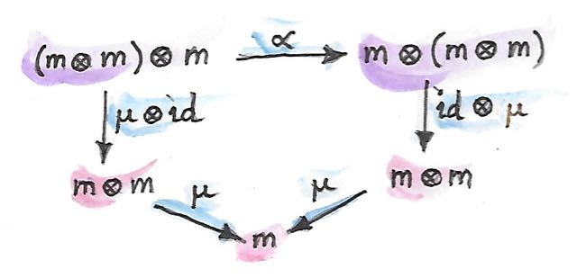
テンソル積が双関手であることが不可欠なことに注意してほしい。これは、やのような積を形成するためには射のペアをリフトする必要があるからだ。これらの図式は、圏論的な積に関するこれまでの結果を直接的に一般化しているだけだ。
22.3 モノイドとしてのモナド
モノイダル構造は思いがけないところに現れる。その1つが関手圏だ。少し目を細めれば、関手の合成が積の生成に見えてくるだろう。問題は、2つの関手は合成できるとは限らないことだ――一方の終域圏が他方の始域圏でなければならない。これは射の合成の一般的な規則に他ならない――そして、すでに知っているとおり、関手はまさに圏内の射だ。ただし、自己射 (同じ対象にループバックする射) と同様に自己関手も常に合成可能だ。任意の圏について、からへの自己関手は関手圏を形成する。その対象は自己関手であり、射はそれらの間の自然変換だ。この圏から任意の2つの対象、たとえば自己関手とを取って、3番目の対象――それらを合成した自己関手――を生成できる。
自己関手の合成はテンソル積の良い候補だろうか？
まず、それが双関手だと示さなければならない。それを使って射――ここでは自然変換――のペアをリフトできるだろうか？
テンソル積でbimapに相当するもののシグネチャは次のようになるだろう:
対象を自己関手で、矢印を自然変換で、テンソル積を合成で置き換えると、次のようになる:
これは水平合成の特殊なケースだと気付くだろう。
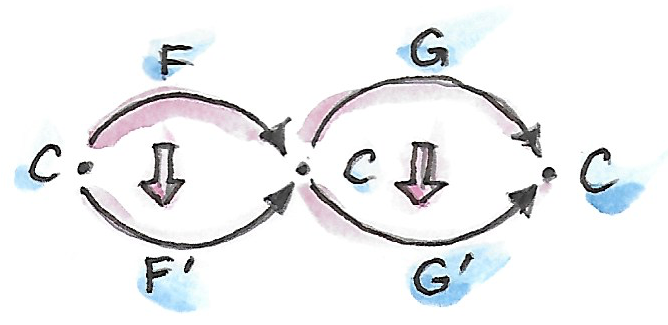
また、自由に使える恒等自己関手も存在する。これは自己関手の合成――新しいテンソル積――の恒等射として機能する。さらに、関手の合成は結合的だ。実際に結合則と単位元則は厳密だ――結合子や2つの単位子は必要ない。したがって、自己関手は関手合成をテンソル積として伴う厳密なモノイダル圏を形成する。
この圏でのモノイドとは何だろう？ それは対象――自己関手と、2つの射――自然変換だ:
それだけでなく、モノイダル則もある:

これらはいままで見てきたモナド則そのものだ。これでSaunders Mac Laneの有名な引用が理解できるだろう:
端的に言えば、モナドは自己関手からなる圏におけるモノイドに他ならない。
これが関数プログラミングのカンファレンスのTシャツにプリントされているのを見たことがあるかもしれない。
22.4 随伴に基づくモナド
随伴は2つの圏との間を行き来する一対の関手だ。それらを合成する方法は2つあり、2つの自己関手とが生じる。随伴によると、これらの自己関手は単位と余単位と呼ばれる2つの自然変換を通じて恒等関手と関係している:
すぐ分かるとおり、随伴の単位はモナドの単位にそっくりだ。自己関手は実際にモナドなのが分かる。必要なのは、に対応する適切なを定義することだけだ。これは自己関手の正方図式と自己関手自体との間の自然変換であり、随伴関手では次のように表される:
そして、実際、余単位を使えば真ん中のを潰せる。の実際の式は水平合成で与えられる:
モナド則は随伴の単位と余単位によって満たされた恒等射と交換則に従う。
随伴から派生したモナドをHaskellであまり見かけないのは、随伴には通常2つの圏が関わるからだ。ただし、冪乗すなわち関数オブジェクトの定義は例外だ。この随伴は次の2つの自己関手から形成される:
これらを合成するとお馴染みのstateモナドになるのが分かるだろう。
このモナドは以前Haskellで見たことがある:
newtype State s a = State (s -> (a, s))この随伴もHaskellに翻訳してみよう。左関手は積関手だ:
newtype Prod s a = Prod (a, s)そして右関手はreader関手だ:
newtype Reader s a = Reader (s -> a)これらは随伴を形成する:
instance Adjunction (Prod s) (Reader s) where
counit (Prod (Reader f, s)) = f s
unit a = Reader (\s -> Prod (a, s))積関手の後にreader関手を合成したものが実際にstate関手と等価なのは容易に納得できる:
newtype State s a = State (s -> (a, s))
予想どおり、随伴のunitはstateモナドのreturn関数と等価だ。counitは、引数に作用する関数を評価することによって作用する。これはrunState関数の非カリー化版と見なせる。
runState :: State s a -> s -> (a, s)
runState (State f) s = f s(非カリー化する理由は、counitでペアに作用するからだ)。
ここでstateモナドのjoinを自然変換のコンポーネントとして定義できる。そのためには3つの自然変換を水平合成したものが必要だ:
言い換えると、余単位をreader関手の1つのレベルに忍び込ませる必要がある。単にfmapを直接呼び出すことはできない。なぜなら、コンパイラがReader関手のものではなくState関手のものを選択するだろうからだ。だが、reader関手のfmapは左関数合成にすぎないことを思い出してほしい。そのため、関数合成を直接使うことにする。
まず、データコンストラクターStateを切り離すことでState関手内の関数を公開する必要がある。これはrunStateを使って行われる。
ssa :: State s (State s a)
runState ssa :: s -> (State s a, s)次に、uncurry runStateによって定義される余単位に左合成する。最後に、Stateデータコンストラクターに戻す:
join :: State s (State s a) -> State s a
join ssa = State (uncurry runState . runState ssa)これはまさにStateモナドのためのjoinの実装だ。
あらゆる随伴からモナドが生じるだけでなく、逆もまた真だと分かる: あらゆるモナドは随伴関手2つの合成に分解できる。ただし、そのような分解は一意ではない。
もう1つの自己関手については次章で述べる。
23 コモナド
モナドが使えるようになったので、双対性の恩恵を受けられ、矢を逆にして反対圏で作業するだけでコモナドを無料で手に入れられる。
最も基本的なレベルでは、モナドはKleisli矢の合成に関するのを思い出してほしい:
a -> m bここでmはモナドである関手だ。コモナドを文字w
(逆さのm) で表すと、余Kleisli矢 (co-Kleisli arrow)
を次の型の射として定義できる:
w a -> b余Kleisli矢についてfish演算子に相当するものは次のように定義される:
(=>=) :: (w a -> b) -> (w b -> c) -> (w a -> c)余Kleisli矢が圏を形成するにはextractと呼ばれる恒等余Kleisli矢も必要だ:
extract :: w a -> aこれはreturnの双対だ。さらに、左恒等射と右恒等射だけでなく結合則も必須だ。すべてをまとめると、Haskellではコモナドを次のように定義できる:
class Functor w => Comonad w where
(=>=) :: (w a -> b) -> (w b -> c) -> (w a -> c)
extract :: w a -> a実用上は、後で説明するように、わずかに異なるプリミティブが使われる。
問題は、コモナドがプログラミングで何の役に立つかだ。
23.1 コモナドでのプログラミング
モナドとコモナドを比べてみよう。モナドはコンテナに値を入れる手段をreturnによって提供している。そして、内部に格納された値にはアクセスできない。もちろんモナドを実装するデータ構造は内容へのアクセスを提供してもよいが、それはおまけと見なされる。モナドから値を抽出するための一般的なインターフェースはない。例として見たIOモナドは内容を決して公開しないことを誇りとしている。
一方、コモナドは単一の値を取り出す手段を提供している。そして、値を挿入する手段は提供しない。コモナドをコンテナと見なしたいなら、その中身はいつも事前に満たされていて、覗き見られるようになっている。
Kleisli矢は値を受け取り、文脈で装飾した結果を生成する。同様に、余Kleisli矢は文脈全体と共に値を受け取り、結果を生成する。これは文脈付き計算 (contextual computation) の実施例だ。
23.2 積コモナド
Readerモナドを覚えているだろうか？
それを導入した理由は、何らかの読み取り専用の環境eへのアクセスを必要とする計算を実装する問題に取り組むためだった。そのような計算は純粋関数として次の形で表せる:
(a, e) -> bそれらをKleisli矢に変えるのにはカリー化を使った:
a -> (e -> b)しかし、これらの関数がすでに余Kleisli矢の形をしていることに注目してほしい。引数をもっと便利な関手の形式に書き換えてみよう:
data Product e a = Prod e a deriving Functor合成演算子は簡単に定義できる。合成しようとしている矢でも同じ環境を使えるようにすればよい:
(=>=) :: (Product e a -> b) -> (Product e b -> c) -> (Product e a -> c)
f =>= g = \(Prod e a) -> let b = f (Prod e a)
c = g (Prod e b)
in cextractの実装は環境を単に無視する:
extract (Prod e a) = a
当然ながら、積コモナドはreaderモナドとまったく同じ計算を実行するのに使える。ある意味で、環境をコモナドで実装するのはより自然だ――「文脈に沿った計算」の精神に則っている。一方、モナドはdo記法という便利な構文糖を備えている。
readerモナドと積コモナドの関係はさらに深く、reader関手が積関手の右随伴であるという事実に関連している。しかし、一般的には、コモナドはモナドとは異なる計算の概念を扱う。さらなる例について後で説明する。
積コモナドProductは、タプルやレコードを含む任意の直積型へ簡単に一般化できる。
23.3 合成の分析
双対化のプロセスを続けることで、モナディックなbindとjoinを双対化できた。別の方法として、モナドで用いたプロセスを繰り返すこともできる。そこではfish演算子の解剖学を研究した。そのアプローチの方が啓発的に思える。
出発点は、合成演算子はw aをとりcを生成する余Kleisli矢を生成しなければならない、という認識だ。cを生成する唯一の方法は、2番目の関数を型w bの引数に適用することだ:
(=>=) :: (w a -> b) -> (w b -> c) -> (w a -> c)
f =>= g = g ...だが、gに与えうる型w bの値はどうすれば生成できるだろうか？
型w aの引数と関数f :: w a -> bは自由に使える。答えはbindの双対を定義することだ。それはextendと呼ばれる:
extend :: (w a -> b) -> w a -> w bextendを使えば合成を実装できる:
f =>= g = g . extend f次はextendを解剖できるだろうか？
なぜ単に関数w a -> bを引数w aに適用しないのか、と言いたくなるかもしれない。しかし、結果として得られるbをw bに変換する方法がないことにすぐ気付くだろう。コモナドには値をリフトする手段がないことを覚えておいてほしい。ここではモナドに類似した構成でfmapを使った。ここでfmapが使えるとすれば、型w (w a)の何かが自由に使える場合だけだ。w aをw (w a)に変えられさえすればよい。そして、便利なことに、それはまさにjoinの双対だ。それはduplicateと呼ばれる:
duplicate :: w a -> w (w a)
したがって、モナドと同様に、コモナドにも3つの等価な定義がある。すなわち、余Kleisli矢の使用、extend、duplicateだ。HaskellのControl.Comonadライブラリから直接引用した定義を以下に示す:
class Functor w => Comonad w where
extract :: w a -> a
duplicate :: w a -> w (w a)
duplicate = extend id
extend :: (w a -> b) -> w a -> w b
extend f = fmap f . duplicateextendのデフォルト実装がduplicateによって提供され、逆も同様だ。したがって、どちらか1つをオーバーライドするだけでよい。
これらの関数の背景にある直観は、一般にコモナドは型aの値で満たされたコンテナと見なせるという考えに基づいている
(積コモナドは値が1つしかない特殊なケースだ)。「現在の」値という概念があり、それはextractによって簡単にアクセスできる。余Kleisli矢は現在の値に焦点を合わせて計算を実行するものの、周囲のすべての値にアクセスできる。コンウェイのライフゲームを考えてみてほしい。各セルには値が含まれる
(通常はTrueかFalseだ)。ライフゲームに対応するコモナドは「現在の」セルに焦点を合わせたセルのグリッドだ。
ではduplicateは何をするのだろう？
それはコモナディックなコンテナw aを取ってコンテナのコンテナw (w a)を生成する。つまり、それぞれのコンテナがw a内部の異なるaに焦点を合わせているという考え方だ。ライフゲームでは、グリッドのグリッドが得られる。外側のグリッドの各セルには、個別のセルに焦点を合わせた内側のグリッドが含まれている。
次にextendを見てみよう。これは、余Kleisli矢と、複数のaで満たされたコモナディックなコンテナw aを取る。そして、すべてのaに計算を適用してbに置き換える。結果は複数のbで満たされたコモナディックなコンテナだ。そのためにextendは、焦点を合わせるaを次々にシフトしていき、それぞれに余Kleisli矢を適用する。ライフゲームでは、余Kleisli矢は現在のセルの新しい状態を計算する。そのために文脈
(すなわち最近傍セル)
に注目する。extendのデフォルト実装はこの過程を示している。まずduplicateを呼び出してすべての可能な焦点を生成し、次にそのそれぞれにfを適用する。
23.4 Streamコモナド
コンテナ内で焦点を合わせる要素を次々にシフトしていくこのプロセスを最もうまく説明できるのは無限ストリームの例だ。そのようなストリームはリストにそっくりだが、空のコンストラクターがない点が異なる:
data Stream a = Cons a (Stream a)これは次のFunctorにすぎない:
instance Functor Stream where
fmap f (Cons a as) = Cons (f a) (fmap f as)ストリームの焦点はその最初の要素なので、extractの実装は次のようになる:
extract (Cons a _) = aduplicateは、それぞれ異なる要素に焦点を合わせた複数のストリームからなるストリームを1つ生成する。
duplicate (Cons a as) = Cons (Cons a as) (duplicate as)最初の要素はもとのストリーム、2番目の要素は元のストリームの尾部、3番目の要素はさらにその尾部、というように無限に続く。
完全なインスタンスは次のとおりだ:
instance Comonad Stream where
extract (Cons a _) = a
duplicate (Cons a as) = Cons (Cons a as) (duplicate as)
これは非常に関数的な観点でストリームを捉えている。おそらく命令型言語ではストリームを1要素だけシフトするadvanceメソッドから始めるだろう。しかし、ここでのduplicateはシフトされたすべてのストリームを一気に生成する。Haskellの遅延評価がこれを可能にし、望ましいものにさえしている。当然、Streamを実用的なものにするために、advanceに類似したものも実装する:
tail :: Stream a -> Stream a
tail (Cons a as) = asただし、これは決してコモナディックなインターフェイスの一部ではない。
デジタル信号処理の経験があればすぐ分かるとおり、ストリームに対する余Kleisli矢は単なるデジタルフィルタであり、extendはフィルターされたストリームを生成する。
簡単な例として、移動平均フィルターを実装してみよう。ストリームのn個の要素を合計する関数はこうなる:
sumS :: Num a => Int -> Stream a -> a
sumS n (Cons a as) = if n <= 0 then 0 else a + sumS (n - 1) asまた、ストリームの最初のn要素の平均を計算する関数はこうなる:
average :: Fractional a => Int -> Stream a -> a
average n stm = (sumS n stm) / (fromIntegral n)部分適用されたaverage nは余Kleisli矢なので、ストリーム全体にわたってextendできる:
movingAvg :: Fractional a => Int -> Stream a -> Stream a
movingAvg n = extend (average n)結果は移動平均のストリームとなる。
ストリームは単方向1次元コモナドの例だ。これは簡単に双方向にしたり多次元に拡張したりできる。
23.5 圏論から見たコモナド
圏論でコモナドを定義することは双対性の平易な練習になる。モナドと同様に、自己関手Tから始めよう。モナドを定義する2つの自然変換とは、コモナドでは単に反転される:
これらの変換のコンポーネントは、extractおよびduplicateに対応する。コモナド則は鏡に映ったモナド則だ。これは驚くようなことではない。
また、モナドは随伴から導出できる。双対性は随伴を反転させる: 左随伴と右随伴が入れ替わる。また、合成がモナドを定義するので、はコモナドを定義すべきだ。随伴の余単位は次のようになる:
このは、コモナドの定義や、Haskellのextractのようなコンポーネントで見られるものと同じだ。随伴の単位:
も、の途中にを挿入してを作成するのに使える。からを作るとが定義され、コモナドの定義が完成する。
モナドがモノイドであることもすでに見た。この宣言の双対にはコモナドが必要だが、ではコモノイドとは何だろう？ モノイドとは単一対象圏である、という当初の定義を双対化しても興味深いものは何も得られない。すべての自己準同型を逆向きにすると別のモノイドが得られる。しかし、思い出してほしい。モナドへのアプローチで用いた定義は、モノイドとはモノイダル圏の対象であるという、より一般化されたものだ。その構成は2つの射に基づいていた:
これらの射を逆にするとモノイダル圏でのコモノイドができる:
コモノイドの定義はHaskellで書くと:
class Comonoid m where
split :: m -> (m, m)
destroy :: m -> ()となり、ほぼ自明だ。明らかにdestroyは引数を無視する:
destroy _ = ()また、splitは単に関数のペアだ:
split x = (f x, g x)ここで、モノイドの単位元則と双対関係にあるコモノイド則について考えてみよう:
lambda . bimap destroy id . split = id
rho . bimap id destroy . split = idここで、lambdaは左単位子でrhoは右単位子だ
(モノイダル圏の定義を参照)。これらの定義を代入すると:
lambda (bimap destroy id (split x))
= lambda (bimap destroy id (f x, g x))
= lambda ((), g x)
= g xとなり、g = idが示される。同様に、2番目の規則はf = idへと展開される。結論として:
split x = (x, x)となり、Haskell (および一般に圏) では、すべての対象が自明にコモナドであることが示される。
幸い、コモノイドを定義するともっと興味深いモノイダル圏も他にある。1つは自己関手からなる圏だ。そこで分かることとして、モナドが自己関手からなる圏におけるモノイドであるのと同様に:
コモナドは自己関手からなる圏におけるコモノイドである。
23.6 Storeコモナド
コモナドのもう1つの重要な例はstateモナドの双対だ。それはcostateコモナド、あるいはstoreコモナドと呼ばれる。
以前、冪乗を定義する随伴によってstateモナドが生成されるのを見た:
同じ随伴を使って、costateコモナドを定義しよう。コモナドは合成によって定義される:
これをHaskellに変換するには、左Prod関手と右Reader関手との間の随伴から始める。Readerの後にProdを合成するのは次の定義と等価だ:
data Store s a = Store (s -> a) s対象aにおけるこの随伴の余単位は次の射だ:
あるいは、Haskellの記法だと次のようになる:
counit (Prod (Reader f, s)) = f sこれがextractとなる:
extract (Store f s) = f s随伴の単位:
unit :: a -> Reader s (Product a, s)
unit a = Reader (\s -> Prod (a, s))は、部分適用されたデータコンストラクターとして書き直せる:
Store f :: s -> Store f s、すなわちduplicateを水平合成として構成しよう:
は一番左のを通過する必要がある。このはProd関手だ。これは、ペアの左側の要素にすなわちStore fを作用させることを意味する
(これがProdのfmapが行うことだ)。すると、次の結果が得られる:
duplicate (Store f s) = Store (Store f) s(の式でのとは恒等自然変換を表し、コンポーネントが恒等射なのを思い出してほしい)。
Storeコモナドの完全な定義を以下に示す:
instance Comonad (Store s) where
extract (Store f s) = f s
duplicate (Store f s) = Store (Store f) s
StoreのReaderの部分は、aが型sの要素をキーにして一般化されたコンテナに格納されていると見なせる。たとえば、sがIntなら、Reader Int aはaの無限双方向ストリームだ。Storeは、このコンテナとキー型の値とをペアにする。たとえば、Reader Int aはIntとペアになっている。この場合、extractはこの整数を使って無限ストリームにインデックスを作成する。Storeの2番目の要素は現在位置と見なせる。
この例についてさらに述べると、duplicateはIntによって添字付けされた新しい無限ストリームを作成する。このストリームは要素としてストリームを含む。特に、現在位置にはもとのストリームが含まれている。しかし、他の
(正または負の)
Intをキーとして使うと、新しいインデックスに位置するシフトされたストリームが得られる。
一般に、duplicateされたStoreにextractが作用すると、もとのStoreが生成されることを確信できる
(実際、コモナドの恒等則ではextract . duplicate = idと規定されている)。
StoreコモナドはLensライブラリの理論的基盤として重要だ。概念としては、Store s aコモナドは、型sをインデックスとしてdate型aの特定のサブ構造に
(レンズのように)「焦点を合わせる」という考え方をカプセル化している。特に、ある関数が型:
a -> Store s aを取るなら、以下の関数のペアと等価だ:
set :: a -> s -> a
get :: a -> s
aが直積型である場合のsetは、a内の型sのフィールドをセットする一方で、aの変更されたバージョンを返すように実装できる。同様に、getはsフィールドの値をaから読み取るように実装できる。これらの考え方については次章で詳しく説明する。
23.7 課題
Storeコモナドを使ってコンウェイのライフゲームを実装せよ。ヒント:sの型は何がよいだろうか？
24 F-代数
モノイドについて、集合として、単一対象圏として、モノイダル圏の対象としての定式化を見てきた。この単純な概念からどれだけの果汁をさらに搾り取れるだろうか？
やってみよう。次の関数のペアを持つ集合としてのモノイドの定義を取り上げる:
ここで、1はの終対象――単集合だ。最初の関数は乗算 (要素のペアを取って積を返す) を定義し、2番目の関数はから単位元を選択する。これらのシグネチャを持つ2つの関数ならどれでもモノイドになるわけではない。結合則と単位元則という追加の条件を課す必要がある。しかし、それはしばらく忘れて「潜在的なモノイド」について考えてみよう。関数のペアは、2つの関数集合のカルテシアン積の要素だ。これらの集合が冪乗対象として表現できるのは知っている:
これら2つの集合のカルテシアン積は次のとおりだ:
高校代数 (すべてのカルテシアン閉圏で機能する) を少し使えば次のように書き直せる:
記号はの余積を表す。ここで、関数のペアを次のような単一の関数――集合の要素――に置き換える:
この関数集合のどの要素も潜在的なモノイドだ。
この定式化の利点は、興味深い一般化を導くことだ。たとえば、この言語を使って群を記述するにはどうすればよいだろうか？ 群は、すべての要素に逆を対応させる関数が追加されたモノイドだ。後者は型の関数だ。たとえば、整数は群を形成し、二項演算として加算、単位元として0、否定として正負反転を持つ。群を定義するには次の3つの関数から始める:
前と同様に、このトリプルを結合して1つの関数集合にできる:
1つの二項演算子 (加算)、1つの単項演算子 (否定)、1つの零項演算子 (恒等射――ここでは0) から始めた。そして、それらを1つの関数に結合した。このシグネチャを持つすべての関数は、潜在的な群を定義する。
同様のことを続けられる。たとえば、環を定義するにはもう1つの二項演算子と1つの零項演算子を追加する、などだ。毎回、左辺が冪乗の和 (0乗――終対象――を含んでよい) であり、右辺が集合自体である関数型が得られる。
きっと一般化に夢中になってしまうだろう。まず、集合を対象に、関数を射に置き換えられる。n項演算子は、n項積からの射として定義できる。これは有限積 (finite product) をサポートする圏が必要であることを意味する。零項演算子については、終対象が存在する必要がある。したがって、カルテシアン圏が必要だ。これらの演算子を結合するには冪乗が必要なので、必要なのはカルテシアン閉圏だ。最終的に、この代数的な悪ふざけを完成させるには、余積が必要になる。
あるいは、式の導出方法を忘れて、最終的な積に集中することもできる。射の左側にある積の和が自己関手を定義する。代わりに任意の自己関手を選択するとどうなるだろう？ その場合は圏に制約を課す必要はない。こうして得られたものはF-代数と呼ばれる。
F-代数は、1つの自己関手、1つの対象、1つの射からなるトリプルだ。
この対象はしばしば台 (carrier, underlying object)
と呼ばれ、プログラミングの文脈ではキャリア型と呼ばれる。射は評価関数
(evaluation function) または構造マップ (structure map)
と呼ばれることが多い。関手Fが式を形成し、それを射が評価すると考えてほしい。
HaskellによるF-代数の定義を示す:
type Algebra f a = f a -> a代数はその評価関数で識別される。
モノイドの例では、問題の関手は次のようになる:
data MonF a = MEmpty | MAppend a aこれはHaskellでを表したものだ
(
環は次の関手を使って定義される:
data RingF a = RZero
| ROne
| RAdd a a
| RMul a a
| RNeg aこれはHaskellでを表したものだ。
環の例としては整数の集合が挙げられる。Integerをキャリア型に選ぶと、評価関数を次のように定義できる。
evalZ :: Algebra RingF Integer
evalZ RZero = 0
evalZ ROne = 1
evalZ (RAdd m n) = m + n
evalZ (RMul m n) = m * n
evalZ (RNeg n) = -n同じ関手RingFに基づくF-代数は他にもたくさんある。たとえば、多項式も正方行列も環を形成する。
ご覧のとおり、関手の役割は、評価に代数の評価子を使えるような式を生成することだ。ここまでは、非常に単純な式しか見てこなかった。しかし、より複雑な、再帰を使って定義できる式に関心があることも多い。
24.1 再帰
任意の式木を生成する方法の1つは、関手の定義内の変数aを再帰で置き換えることだ。たとえば、環における任意の式は、木に似たデータ構造によって生成される:
data Expr = RZero
| ROne
| RAdd Expr Expr
| RMul Expr Expr
| RNeg Exprもとの環の評価子は再帰版に置き換えられる:
evalZ :: Expr -> Integer
evalZ RZero = 0
evalZ ROne = 1
evalZ (RAdd e1 e2) = evalZ e1 + evalZ e2
evalZ (RMul e1 e2) = evalZ e1 * evalZ e2
evalZ (RNeg e) = -(evalZ e)これはまだあまり実用的ではない。すべての整数を1の和で表現するのが強制されているからだ。もっとも、緊急用には役立つ。
それにしても、F-代数の言葉で式木を記述するにはどうすればよいだろうか？ 関手の定義において、自由型変数を再帰的に置換の結果で置き換えるプロセスを、何らかの形で形式化する必要がある。これを段階的に行うことを想像してほしい。まず、深さ1の木を次のように定義する:
type RingF1 a = RingF (RingF a)RingFの定義の穴を、RingF aによって生成された深さ0の木で埋めている。深さ2の木も同様にして得られる:
type RingF2 a = RingF (RingF (RingF a))これは次のようにも書ける:
type RingF2 a = RingF (RingF1 a)このプロセスを繰り返すことで、シンボリックな方程式を書ける:
type RingFn+1 a = RingF (RingFn a)
概念としては、このプロセスを無限に何度も繰り返すことでExprが得られる。Exprはaに依存しないことに注意してほしい。旅の出発点によらず、いつも同じ場所に辿り着く。これは任意の圏の任意の自己関手に常に当てはまるわけではないが、圏では適切だ。
当然、これは身振り手振りでの議論なので、後でより厳密に説明する。
自己関手を無限回適用すると、不動点 (fixed point) という対象が生成される。この対象は次のように定義される:
この定義の背景には、を得るためにを無限回適用しているので、さらにもう1回適用しても何も変わらない、という直観がある。Haskellでは、不動点の定義は次のようになる:
newtype Fix f = Fix (f (Fix f))おそらく、次のように、定義されている型の名前がコンストラクターの名前と別ならば、もっと読みやすくなる:
newtype Fix f = In (f (Fix f))しかし、ここでは広く使われている表記に従うことにする。コンストラクターFix
(あるいは好みによってはIn) は関数と見なせる:
Fix :: f (Fix f) -> Fix fまた、関手適用を1層だけ剥がす関数もある:
unFix :: Fix f -> f (Fix f)
unFix (Fix x) = x2つの関数は互いに逆だ。これらの関数は後で使うことになる。
24.2 F-代数の圏
この本の中で最も古いトリックについて述べよう: 何か新しい対象を構築する方法を思いついたら、それらが圏を形成するかどうかを常に確認すべし。驚くことではないが、任意の自己関手における代数は圏を形成する。その圏の対象は代数だ――台対象と射からなるペアで、どちらももとの圏からのものだ。
この描像を完全なものにするには、F-代数の圏における射を定義する必要がある。射は、ある代数 を別の代数 に写さなければならない。これを、台を写す射――もとの圏でからへ向かう射――と定義する。どの射でもいいわけではなく、2つの評価子と互換性がなければならない。(そのような構造保存射を準同型と呼ぶ。) F-代数の準同型を定義する方法は次のとおりだ。まず、を次の写像にリフトできることに注目してほしい:
それからを辿るとに行き着く。同様に、を使ってからに移ってからを辿ってもよい。2つの経路が等しくなるようにしたい:

これが本当に圏であることは簡単に納得できる (ヒント: の恒等射については問題なく、また、準同型の合成は準同型だ)。
F-代数の圏に始対象が存在するなら、それは始代数 (initial algebra) と呼ばれる。この始代数の台をと呼び、その評価子をと呼ぼう。始代数の評価子であるは同型射であることがわかる。この結果はLambekの定理として知られている。その証明は始対象の定義に依存している。定義では、始対象は他のF-代数への一意な準同型の存在を必要とする。が準同型なので、次の図式は可換でなければならない:

次に、台がである代数を構築しよう。そのような代数の評価子は からへの射でなければならない。このような評価子はをリフトするだけで簡単に構成できる。
は始代数なので、そこから への一意な準同型が必要だ。次の図式は可換でなければならない:

しかし、次のような自明な可換図式もある (どちらの経路も同じだ！):

これは、が代数の準同型であり、 を に写すことを示していると解釈できる。これら2つの図式を繋ぐと次のようになる:

この図式は、同様に、が代数の準同型であることを示していると解釈できる。この場合のみ2つの代数は同じだ。さらに、 は初期代数なので、それ自身から自身への準同型は1つしか存在できず、それはどの代数でも準同型だとわかっている恒等射だ。したがって、となる。この事実と左側の図式の可換律とを用いてであることを証明できる。これはがの逆であることを示しているため、はとの間の同型射だ。
しかし、これはがの不動点だと言っているにすぎない。以上が最初の身振り手振りでの議論の背景にある形式的証明だ。
Haskellに戻ろう:
はFix fで、はコンストラクターFix、その逆はunFixだと理解している。Lambekの定理における同型からは、始代数を得るには関手を取って引数をFix fに置き換えればよいことが分かる。また、不動点がによらない理由も分かる。
24.3 自然数
自然数もF-代数として定義できる。出発点は次のような射のペアだ:
1番目は0を選択し、2番目はすべての数をその次の数に写す。前と同じように、この2つは1つにまとめられる:
左辺は関手を定義し、Haskellでは次のように書ける:
data NatF a = ZeroF | SuccF aこの関手の不動点 (生成される始代数) は、Haskellでは次のようにコード化できる:
data Nat = Zero | Succ Nat自然数は、0か、ある数の次の数かのどちらかだ。これは自然数のPeano表現として知られている。
24.4 カタモルフィズム
Haskellの表記で初期条件を書き直してみよう。始代数はFix fと呼ばれる。その評価子はコンストラクターFixだ。始代数から他の任意の代数への一意な射mが同じ関手上に存在する。台がaであり評価子がalgである代数を選択しよう。

ところで、mが何なのかに注目してほしい:
これは不動点の評価子であり、再帰的な式木全体の評価子だ。これを実装するための汎用的な方法を探そう。
Lambekの定理はコンストラクターFixが同型射であることを示している。その逆はunFixと呼ばれる。したがって、この図式で矢印の1つを反転して次のようにできる:

この図式の可換条件を書こう:
m = alg . fmap m . unFix
この方程式はmの再帰的な定義として解釈できる。再帰は関手fを使って作成されたすべての有限木に対して停止する。そのことは、fmap mが関手fの最上層の下で動作することに着目すれば分かる。言い換えると、それはもとの木の子に対して機能する。子は常にもとの木より1レベル浅くなる。
Fix fを使って構築された木にmを適用するとどうなるか述べよう。まず、unFixの作用によってコンストラクターが剥がれ、木の最上位があらわになる。次に、最上位ノードのすべての子にmを適用する。それにより、型aの結果が生成される。最後に、非再帰的評価子algを適用することで、これらの結果を結合する。重要な点は、評価子algが単純な非再帰関数であることだ。
これは任意の代数algに対して行えるので、代数をパラメーターに取ってmと呼ばれる関数を返す高階関数を定義することは意味がある。この高階関数はカタモルフィズム
(catamorphism) と呼ばれる。
cata :: Functor f => (f a -> a) -> Fix f -> a
cata alg = alg . fmap (cata alg) . unFix例を見てみよう。自然数を定義する関手を考える:
data NatF a = ZeroF | SuccF a台の型として(Int, Int)を選択し、代数を次のように定義する:
fib :: NatF (Int, Int) -> (Int, Int)
fib ZeroF = (1, 1)
fib (SuccF (m, n)) = (n, m + n)この代数のカタモルフィズムcata fibでフィボナッチ数が計算されることは容易に納得できる。
一般に、NatFの代数は漸化式を定義する。つまり、現在の要素の値を前の要素によって表す。そして、カタモルフィズムは一連の要素のうちn番目のものを評価する。
24.5 畳み込み
eのリストは次の関手の始代数だ:
data ListF e a = NilF | ConsF e a実際、List eと呼ばれる再帰の結果で変数aを置き換えると、次のようになる:
data List e = Nil | Cons e (List e)
list関手の代数は、台の特定の型を選択し、2つのコンストラクターについてパターンマッチングを行う関数を定義する。NilFに対するその値は、空リストを評価する方法を表す。また、ConsFに対する値は、現在の要素をそれ以前の累積値と組み合わせる方法を表す。
例として、リストの長さを計算するために使える代数を次に示す
(台の型はIntだ):
lenAlg :: ListF e Int -> Int
lenAlg (ConsF e n) = n + 1
lenAlg NilF = 0実際、結果として得られるカタモルフィズムcata lenAlgによってリストの長さが計算される。評価関数は、(1)
リスト要素とアキュムレータを受け取って新しいアキュムレータを返す関数と、(2)
開始値 (ここでは0)
とを組み合わせたものであることに注目してほしい。値の型とアキュムレータの型は台の型によって与えられる。
これを従来のHaskellの定義と比較してみよう:
length = foldr (\e n -> n + 1) 0foldrの2つの引数は代数の2つのコンポーネントそのものだ。
別の例を見てみよう:
sumAlg :: ListF Double Double -> Double
sumAlg (ConsF e s) = e + s
sumAlg NilF = 0.0再び、これを次のものと比較する:
sum = foldr (\e s -> e + s) 0.0ご覧のとおり、foldrはリストに対してカタモルフィズムを特殊化して便利にしたものにすぎない。
24.6 余代数
いつものように、F-余代数という双対構成があり、射が逆向きになっている:
任意の関手についての余代数も、その余代数的構造を保存する準同型を伴った圏を形成する。その圏の終対象
は終余代数 (terminal / final coalgebra) と呼ばれる。他のすべての代数
では、次の図式を可換にする一意な準同型mが存在する:

終余代数はその関手の不動点であり、射が同型射である (余代数に関するLambekの定理) ことを意味する:
終余代数は通常、プログラミングでは、(無限であってもよい) データ構造または遷移系を生成するためのレシピとして解釈される。
始代数の評価にカタモルフィズムが使えるのと同様に、終余代数の余評価にはアナモルフィズム (anamorphism) が使える:
ana :: Functor f => (a -> f a) -> a -> Fix f
ana coalg = Fix . fmap (ana coalg) . coalg余代数の正準的な例は、不動点が型eの要素の無限ストリームであるような関手に基づいている。これがその関手だ:
data StreamF e a = StreamF e a
deriving Functorそして、これがその不動点だ:
data Stream e = Stream e (Stream e)StreamF eの余代数は、型aのシードを取り、ある要素と次のシードからなるペアを生成する関数だ
(ペアをStreamFというファンシーな名前で呼んでいる)。
無限数列を生成する余代数の簡単な例はすぐ生成できる。たとえば、自乗や逆数などのリストだ。
もっと興味深い例としては、素数のリストを生成する余代数がある。無限リストを台として使うのが秘訣だ。最初のシードはリスト[2..]になる。次のシードはこのリストの尾部から2の倍数をすべて除いたものになる。これは奇数のリストであり、3から始まる。次の段階では、このリストの尾部を取って3の倍数をすべて除く。エラトステネスの篩を作っているのに気付いただろう。この余代数は次の関数で実装される:
era :: [Int] -> StreamF Int [Int]
era (p : ns) = StreamF p (filter (notdiv p) ns)
where notdiv p n = n `mod` p /= 0この余代数のアナモルフィズムは素数のリストを生成する:
primes = ana era [2..]
ストリームは無限リストなので、Haskellのリストに変換できるはずだ。そのためには、同じ関手StreamFを使って代数を形成したうえでカタモルフィズムを実行すればよい。たとえば、次のカタモルフィズムはストリームをリストに変換する:
toListC :: Fix (StreamF e) -> [e]
toListC = cata al
where al :: StreamF e [e] -> [e]
al (StreamF e a) = e : aここでは、同じ不動点が同じ自己関手の始代数でもあり終余代数でもある。これは任意の圏でいつも成り立つわけでない。一般に、自己関手には不動点が多数ありうる (不動点がないこともある)。始代数はいわゆる最小不動点で、終余代数は最大不動点だ。ただし、Haskellでは両方とも同じ式で定義され、一致する。
リストのアナモルフィズムはunfoldと呼ばれる。有限リストを作成するには、関手を改変してMaybeのペアを作成する:
unfoldr :: (b -> Maybe (a, b)) -> b -> [a]Nothingの値でリストの生成が終了する。
余代数の面白い例として、レンズに関するものが挙げられる。レンズはゲッターとセッターのペアとして表せる:
set :: a -> s -> a
get :: a -> s
ここで、通常、aは型sのフィールドを持つ直積データ型だ。ゲッターはそのフィールドの値を取得し、セッターはそのフィールドを新しい値に置き換える。これら2つの関数は1つにまとめられる:
a -> (s, s -> a)この関数はさらに次のように書き直せる:
a -> Store s aここで次のような関手を定義した:
data Store s a = Store (s -> a) sこれは積の和から構成される単純な代数的関手ではないことに注意してほしい。これには冪乗が含まれる。
レンズはこの関手の余代数であり、台の型はaだ。Store sがコモナドでもあることは以前にも見た。行儀の良い
(well-behaved)
レンズは、コモナドの構造と適合する余代数に対応することが分かる。これについては次章で説明する。
24.7 課題
- 1変数多項式の環について評価関数を実装せよ。多項式はの冪乗の係数のリストとして表せる。たとえば、は、(0乗項から始めて)
[-1, 0, 4]と表される。 - 前の構成を、のような、独立変数を多数含む多項式に一般化せよ。
- 行列の環について代数を実装せよ。
- 自然数の自乗のリストを生成するようなアナモルフィズムを持つ余代数を定義せよ。
unfoldrを使って、最初のn 個の素数のリストを生成せよ。
25 モナドの代数
もし自己関手を式の定義方法だと解釈するなら、代数は式の評価、モナドは式の形成と操作だということになる。代数とモナドを組み合わせることで、多くの機能が得られるだけでなく、いくつかの興味深い質問にも答えられる。そのような疑問の1つはモナドと随伴の関係に関するものだ。これまで見てきたように、すべての随伴はモナド (およびコモナド) を定義する。問題は、すべてのモナド (コモナド) は随伴から導出できるのかということだ。できる、というのが答えだ。任意のモナドを生成する随伴の族が存在する。そのような随伴を2つ紹介する。

定義を確認しよう。モナドは、あるコヒーレンス条件を満たす2つの自然変換を伴う自己関手だ。それらの変換のにおけるコンポーネントは次のとおりだ:
同じ自己関手についての代数は、ある特定の対象の選択――台――であり、次の射を伴う:
まず注目すべきは、代数がとは逆向きに進んでいることだ。直観では、は型の値から自明な式を作る。第1のコヒーレンス条件は、代数をモナドと互換性のあるものにするものであり、台がであるその代数でこの式を評価するともとの値が返されることを保証する:
第2の条件は、2重にネストされた式 を評価する方法は2つある、という事実に基づく。まずを適用して式をフラット化してから、次に代数の評価子を使えばよい。あるいは、リフトされた評価子を適用して内側の式を評価してから、その結果に評価子を適用してもよい。これら2つの戦略を等価にしたい:
ここで、射m algは関手を使ってをリフトした結果だ。次の可換図式はこれら2つの条件を示している
(後のことを想定してをに置き換えた):


これらの条件はHaskellでも表現できる:
alg . return = id
alg . join = alg . fmap alg
簡単な例を見てみよう。リスト自己関手の代数は、ある型aと、aのリストからaを生成する関数とで構成される。この関数はfoldrを使って表せる。そのためには、要素の型とアキュムレータの型を、両方とも同じaになるように選ぶ:
foldr :: (a -> a -> a) -> a -> [a] -> a
この特定の代数は、引数が2つの関数fと値zによって指定される。list関手はモナドでもあり、returnは値を単要素リストに変換する。代数の合成は、ここではfoldr f zであり、returnの後でxを取る:
foldr f z [x] = x `f` zただし、fの作用を中置記法で表した。代数がモナドと互換性があるのは、すべてのxに対して次のコヒーレンス条件が満たされる場合だ:
x `f` z = xfを二項演算子と見なすと、この条件はzが右単位元であることを示している。
第2のコヒーレンス条件は、リストのリストに対して作用する。joinの作用は個々のリストを連結する。その後で結果のリストを畳み込めばよい。一方で、まず個々のリストを畳み込み、次に結果のリストを畳み込んでもよい。ここでも、fを二項演算子と見なすと、この条件はその二項演算の結合性を示している。これらの条件は(a, f, z)がモノイドである場合には確実に満たされる。
25.1 T-代数
数学者はモナドをと呼ぶのを好むので、それらと互換性のある代数をT-代数と呼ぶ。圏における任意のモナドについてのT-代数は圏を形成する。この圏はEilenberg-Moore圏と呼ばれ、と表記されることが多い。この圏の射は代数の準同型だ。それらはF-代数について定義されているのを見たのと同じ準同型だ。
T-代数は台対象と評価子からなるペア だ。からへの自明な忘却関手が存在し、 をに写す。また、T-代数の準同型を、内の台対象間の射のうち対応するものに写す。随伴について議論したとき、忘却関手への左随伴は自由関手と呼ばれると述べたのを覚えているだろう。
への左随伴はと呼ばれる。それは内の対象を内の自由代数に写す。この自由代数の台はだ。その評価子は
からへ戻る射だ。はモナドなので、モナディックな
(Haskellでのjoin) を評価子として使える。
さらに、これがT-代数であることも示す必要がある。そのためには、次の2つのコヒーレンス条件が満たされなければならない:
しかし、を代数に代入すれば、これらはモナド則にすぎない。
ご存知のように、すべての随伴はモナドを定義する。との間の随伴は、Eilenberg-Moore圏の構成で使われたモナドそのものを定義することがわかる。この構成はすべてのモナドに対して行えるので、すべてのモナドは随伴から生成できる、と結論できる。後ほど、同じモナドを生成する別の随伴が存在することを示す。
計画はこうだ: まず、が実際にの左随伴であることを示す。そのために、この随伴の単位と余単位を定義し、対応する三角恒等式が満たされているのを証明する。次に、この随伴によって生成されるモナドが、実際にもとのモナドであることを示す。
随伴の単位は次の自然変換だ:
この変換のにおけるコンポーネントを計算してみよう。恒等関手によってが得られる。自由関手は自由代数 を生成し、忘却関手はそれをに縮約する。以上により、からへの写像が得られる。単にモナドの単位をこの随伴の単位として使うことにする。
余単位を見てみよう:
あるT-代数 におけるコンポーネントを計算してみよう。忘却関手はを忘れており、自由関手はペア を生成する。したがって、 における余単位を定義するには、Eilenberg-Moore圏内の正しい射、すなわち次のようなT-代数の準同型が必要だ:
このような準同型は台をに写す必要がある。忘れられた評価子を復活させよう。今度はそれをT-代数の準同型として使う。実際、をT-代数にしたのと同じ可換図式は、それがT-代数の準同型だと示すものとも見なせる:

したがって、 (T-代数の圏の対象) における余単位の自然変換のコンポーネントをと定義した。
随伴を完成させるには、単位と余単位が三角恒等式を満たすことも示す必要がある。それらの三角形はこう描ける:

最初のものはモナドの単位則より成り立つ。2つ目のものはT-代数の規則 だ。
以上より、これら2つの関手が随伴を形成することが示せた:
すべての随伴はモナドを生成する。往復旅行
は、対応するモナドを生成する内の自己関手だ。対象に対する作用を見てみよう。によって作られる自由代数は だ。忘却関手は評価子を削除する。したがって、確かに次が得られる:
予想どおり、随伴の単位はモナドの単位だ。
随伴の余単位では次の式からモナディックな乗算が生成されるのを覚えているだろう:
これは3つの自然変換の水平合成であり、そのうち2つは恒等自然変換で、をに写すものとをに写すものだ。真ん中のものは余単位で、ある代数 におけるコンポーネントがであるような自然変換だ。
コンポーネントを計算してみよう。まず、をの後に水平合成すると、におけるのコンポーネントが得られる。はを代数 に渡し、は評価子を選択するので、結果はになる。による左側の水平合成は何も変更しない。なぜなら、射に対するの作用は自明だからだ。したがって、実際に、随伴から得られるはもとのモナドのと同じだ。
25.2 Kleisli圏
Kleisli圏についてはすでに見た。別の圏とモナドで構成された圏だ。これを圏と呼ぼう。Kleisli圏の対象はの対象だが、射については違う。Kleisli圏でのからへの射は、もとの圏でのからへの射に対応する。この射をからへのKleisli矢と呼ぶ。
Kleisli圏における射の合成はKleisli矢のモナディック合成によって定義される。例として、をの後に合成するとする。Kleisli圏において:
のとき、圏において対応するものは、次のとおりだ:
次のような合成:
をでのKleisli矢として定義する。
Haskellでは次のように記述できる:
h = join . fmap g . fからへの関手があり、対象に対しては自明な働きをする。射に対しては、の戻り値を装飾するKleisli射を作成することによって、のをの射に写す。次のような射が与えられたとき:
には、次の対応するKleisli矢を持つ射ができる:
Haskellでは次のように記述できる:
return . fまた、からへ戻る関手も定義できる。それはKleisli圏から対象を取り、の対象に写す。次のKleisli矢に対応する射に対する作用:
は内の射:
であり、まずをリフトしてからを適用することで得られる:
Haskellの記法だと次のようになる:
G fT = join . fmap fこれはモナディックなバインドのjoinに基づく定義に見えるだろう。
2つの関手が随伴を形成しているのは容易に理解できる:
そして、それらの合成はもとのモナドを再現する。
したがって、これは同じモナドを生成する2番目の随伴だ。実際、 という随伴全体の圏が存在し、その結果、において同じモナドが生成される。その圏では、いま見たKleisli随伴が始対象で、Eilenberg-Moore随伴が終対象だ。
25.3 コモナドの余代数
同様の構成は任意のコモナドに対して行える。コモナドが成立する余代数の圏を定義できる。それらの余代数は次の図式を可換にする:

ここで、は台がである余代数の余評価射 (coevaluation morphism) だ:
そして、とはコモナドを定義する2つの自然変換だ
(Haskellでは、これらのコンポーネントはextractおよびduplicateと呼ばれる)。
これらの余代数の圏からへは自明な忘却関手が存在する。それはただ余評価を忘れている。その右随伴について考えよう。
忘却関手のこの右随伴は余自由関手 (cofree functor) と呼ばれる。は余自由余代数 (cofree coalgebra) を生成する。それは内の対象に余代数 を割り当てる。随伴はもとのコモナドを合成として再生成する。
同様に、余Kleisli矢から余Kleisli圏を構築し、対応する随伴からコモナドを再生成できる。
25.4 レンズ
レンズの話に戻ろう。レンズは余代数を使って書ける:
ここで関手は次のとおりだ:
data Store s a = Store (s -> a) sこの余代数は、以下の関数のペアとしても表せる:
(は「すべて」(all) を表し、はその「小さな」(small) 一部だと考えてほしい)。このペアに関して、次が成り立つ:
ここで、は型の値だ。部分適用されたsetは関数であることに注意してほしい。
また、がコモナドなのも分かっている。
instance Comonad (Store s) where
extract (Store f s) = f s
duplicate (Store f s) = Store (Store f) s問題は、あるレンズがこのコモナドの余代数になる条件は何かということだ。第1のコヒーレンス条件:
は、次のように解釈できる:
このレンズ則は、構造体のフィールドを以前の値に設定しても何も変わらないという事実を表す。
第2の条件:
は、もう少し手間がかかる。まず、store関手のfmapの定義を思い出してほしい:
fmap g (Store f s) = Store (g . f) sfmap coalgをcoalgの結果に適用すると、次のようになる:
Store (coalg . set a) (get a)一方、duplicateをcoalgの結果に適用すると、次のようになる:
Store (Store (set a)) (get a)これら2つの式が等しくなるには、Storeの下の2つの関数はどのようなsに作用しても等しくなければならない。
coalg (set a s) = Store (set a) scoalgを展開すると、次が得られる:
Store (set (set a s)) (get (set a s)) = Store (set a) sこれは残り2つのレンズ則と等価だ。1つめ:
set (set a s) = set aは、フィールドの値を2回設定するのは1回設定するのと同じだと示している。2つめ:
get (set a s) = sは、に設定されたフィールドの値を取得するとが返されることを示す。
言い換えれば、行儀の良いレンズはまさにstore関手のコモナド余代数だ。
25.5 課題
-
自由関手の射に対する作用は何か。ヒント: モナディックなについて自然条件を使う。
-
次の随伴を定義せよ:
-
上記の随伴がもとのコモナドを再現するのを証明せよ。
26 エンドとコエンド
圏内の射に適用できる直観はたくさんあるが、誰もが同意できるのは、対象から対象への射があれば、2つの対象には何らかの「関連がある」というものだ。ある意味で、射はこの関係の証明だ。すべてのポセット圏では射が関係であるので、それは一目瞭然だ。一般に、2つの対象間での同じ関係の「証明」は複数存在しうる。それらの証明はhom集合と呼ばれる集合を形成する。対象を変化させると、対象のペアから「証明」の集合への写像が得られる。この写像は関手的だ――1番目の引数については反変で、2番目の引数については共変だ。これは、圏内の対象間に大域的な関係を確立していると見なせる。この関係は次のhom関手で表せる:
一般に、このような関手はすべて、圏内の対象間の関係を確立するものとして解釈できる。関係には2つの異なる圏とが含まれる場合もある。そのような関係を表す関手は、次のようなシグネチャを持ち、プロ関手 (profunctor) と呼ばれる。
これは数学者によるとからへのプロ関手 (反転に注意) であり、スラッシュ付き矢印で記される:
プロ関手は、の対象との対象の間の証明で関連した関係 (proof-relevant relation) と見なせる。ここで、集合の要素は関係の証明を象徴している。が空の場合は常に、との間に関係はない。関係は対称である必要はないことに注意してほしい。
もう1つの有用な直観は、自己関手はコンテナであるという考え方の一般化だ。型がのプロ関手の値は、型の要素をキーとするのコンテナと見なせる。特に、homプロ関手の要素はからへの関数だ。
Haskellでは、プロ関手は2引数の型コンストラクターpとして定義され、関数のペアをリフトするdimapと呼ばれるメソッドを備えている。そのペアのうち最初の関数は「間違った」方向を向いている:
class Profunctor p where
dimap :: (c -> a) -> (b -> d) -> p a b -> p c d
プロ関手の関手性は、aがbに関連しているという証明があれば、cがdに関連しているという証明も、cからaへの射とbからdへの別の射がある限り成り立つことを示している。あるいは、最初の関数は新しいキーを古いキーに変換し、2番目の関数はコンテナの内容を変更するとも見なせる。
1つの圏内で作用するプロ関手では、型の対角要素からかなり多くの情報が取り出せる。がに関連していることは、とという射のペアがある限り証明できる。さらには、単一の射を使って非対角値に到達することもできる。たとえば、射がある場合、ペアをリフトすることでからに移動できる:
dimap f id pbb :: p a bあるいは、ペアをリフトすることでからに移動することもできる:
dimap id f paa :: p a b26.1 対角自然変換
プロ関手は関手なので、それらの間の自然変換は通常の方法で定義できる。ただし、多くの場合は2つのプロ関手の対角要素間の写像を定義するだけで十分だ。このような変換は、対角要素を非対角要素に接続できる2つの方法を反映した可換条件を満たす場合、対角自然変換と呼ばれる。関手圏のメンバーである2つのプロ関手とについて、その間の対角自然変換は次のような射の族だ:
そこではあらゆるについて次の図式が可換となる:
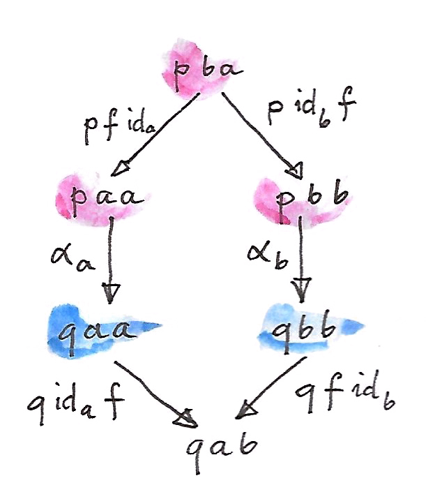
これは自然条件よりも厳密に弱いことに注意してほしい。が内の自然変換なら、前記の図式は2つの自然性の正方図式と1つの関手性条件 (合成を保持するプロ関手) から構成できる:
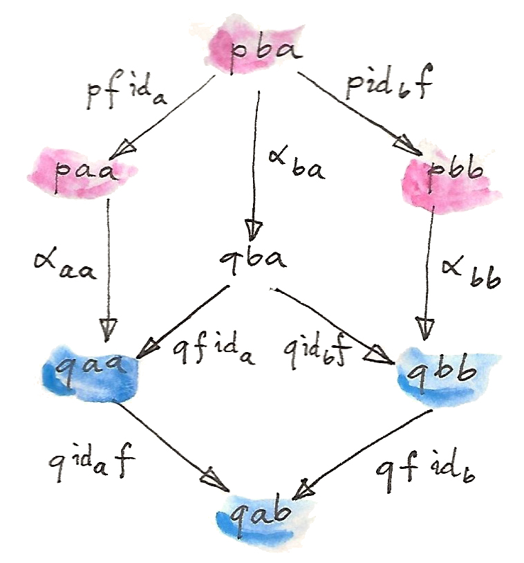
内の自然変換のコンポーネントは、対象のペアによって添字付けされていることに注意してほしい。一方で、対角自然変換は1つの対象によって添字付けされる。なぜなら、対応するプロ関手の対角要素のみを写すからだ。
26.2 エンド
いまや「代数」から圏論の「微積分」と見なせるものへ進む準備ができた。エンド (およびコエンド) の微積分は、古典的な微積分から、その概念だけでなく、いくつかの記法さえ借用している。特に、コエンドは無限和あるいは積分として理解でき、エンドは無限積に類似している。Diracのデルタ関数に似たものさえある。
エンドは極限を一般化したもので、関手がプロ関手に置き換えられている。錐の代わりに、くさび (wedge) がある。くさびの底面はプロ関手の対角要素によって形成される。くさびの頂点は対象 (ここでは、値のプロ関手を想定しているため、集合) であり、側面は頂点を底面内の集合に写す関数の族だ。この族は、1つの多相関数――戻り値の型が多相である関数――と見なせる:
錐とは違って、くさびには底面の頂点同士を接続する関数はない。しかし、すでに見たとおり、内の任意の射について、との両方を共通の集合に接続できる。したがって、次の図式が可換だと主張できる:
これはくさび条件 (wedge condition) と呼ばれる。これは次のように書ける:
あるいは、Haskellの記法を使うと次のようになる:
dimap id f . alpha = dimap f id . alphaここで普遍的構成を使って進み、のエンドを普遍くさび (universal wedge) として定義する。これはと関数の族の組で、頂点と族の組からなる他のすべてのくさびについて一意な関数が存在し、すべての三角図式を可換にする:
エンドの記号は、下付きの「積分変数」を添えた積分記号だ:
のコンポーネントはエンドの射影マップ (projection map) と呼ばれる:
が離散圏 (恒等射以外の射がない) の場合、エンドは圏全体にわたるのすべての対角要素の大域的な積になる。後ほど説明するが、より一般には、この積とエンドの間にはイコライザを介した関係がある。
Haskellでは、エンドの式は全称量化子 (universal quantifier) に直接変換される:
forall a. p a a厳密に言うと、これはのすべての対角要素の積に過ぎないが、くさび条件はパラメトリック性 (parametricity) によって自動的に満たされる。任意の関数について、くさび条件は次のようになる:
dimap f id . pi = dimap id f . piあるいは、型アノテーションを付けると次のようになる:
dimap f idb . pib = dimap ida f . piaこの式の両辺の型は:
Profunctor p => (forall c. p c c) -> p a bであり、piは多相射影だ:
pi :: Profunctor p => forall c. (forall a. p a a) -> p c c
pi e = eここで、型推論によって自動的にeの正しいコンポーネントが選択される。
錐のすべての可換条件を1つの自然変換として表せたように、すべてのくさび条件も1つの対角自然変換にまとめられる。そのためには、定関手をある定プロ関手 (constant profunctor) へと一般化する必要がある。その定プロ関手は、対象のすべてのペアを単一の対象に写し、射のすべてのペアをその対象の恒等射に写す。くさびは、その関手からプロ関手への対角自然変換だ。実際、がすべての射を単一の恒等関数にリフトすることに気付けば、対角自然性の六角形はくさびのダイヤモンドへと収縮できる。
以外の終域圏に対してもエンドを定義できるが、これ以降では集合値プロ関手 (-valued profunctor) とそのエンドのみを扱う。
26.3 イコライザとしてのエンド
エンドの定義における可換条件はイコライザを用いて書ける。まず、2つの関数を定義しよう (ここではHaskellの表記の方が数学的表記よりユーザー・フレンドリーだと思うので、そちらを使う)。これらの関数はくさび条件の2つの収束分岐 (converging branch) に対応する:
lambda :: Profunctor p => p a a -> (a -> b) -> p a b
lambda paa f = dimap id f paa
rho :: Profunctor p => p b b -> (a -> b) -> p a b
rho pbb f = dimap f id pbbどちらの関数もプロ関手pの対角要素を次の型の多相関数に写す:
type ProdP p = forall a b. (a -> b) -> p a bこれらの関数の型は異なる。しかし、pのすべての対角要素を集めて大きな直積型を1つ形成すれば、それらの型を単一化できる。
newtype DiaProd p = DiaProd (forall a. p a a)関数lambdaとrhoはこの直積型から2つの写像を導く:
lambdaP :: Profunctor p => DiaProd p -> ProdP p
lambdaP (DiaProd paa) = lambda paa
rhoP :: Profunctor p => DiaProd p -> ProdP p
rhoP (DiaProd paa) = rho paa
pのエンドはこれら2つの関数のイコライザだ。イコライザは2つの関数が等しい最大の部分集合を選択することに注意してほしい。ここでは、くさびの図式が可換となるようなすべての対角要素の積の部分集合が選択される。
26.4 エンドとしての自然変換
エンドの最も重要な例は自然変換の集合だ。2つの関手との間の自然変換は、 という形式のhom集合から選択された射の族だ。もし自然条件がなければ、自然変換の集合はこれらすべてのhom集合の積にすぎないだろう。実際、Haskellでは次のようになる:
forall a. f a -> g aHaskellでこれが動作する理由は、自然性がパラメトリック性に従うためだ。ただし、Haskell以外では、このようなhom集合に渡るすべての対角要素が自然変換を生成するわけではない。しかし、写像:
がプロ関手であることに注目すれば、そのエンドを研究するのは意味がある。くさび条件は次のとおりだ:
集合 から要素を1つだけ選択しよう。この要素は2つの射影によって特定の変換の2つのコンポーネントに写される。それらを次のように呼ぼう:
図式の左側の分岐では、一対の射をリフトするのにhom関手を使う。このようなリフトを前置合成と後置合成として一度に実装したのを思い出してほしい。に作用するとき、リフトされたペアから次が得られる:
図式のもう一方の分岐からは次が得られる:
くさび条件が要求するこれらの等価性はの自然条件に他ならない。
26.5 コエンド
予想どおり、エンドの双対はコエンドと呼ばれる。それはくさびの双対で構成され、余くさび (cowedge) と呼ばれる (cowedgeの発音はco-wedgeで、cow-edgeではない)。
コエンドの記号は、上付きの「積分変数」を添えた積分記号だ:
エンドが積に関連しているのと同様に、コエンドは余積あるいは和に関連している (この観点でコエンドは和の極限である積分に似ている)。射影を持つのではなく、プロ関手の対角要素からコエンドに向かう単射を持つ。余くさび条件がなければ、プロ関手のコエンドは、、などのどれかだと言えただろう。あるいは、コエンドが単なる集合になるようなが存在すると言えただろう。エンドの定義で使った全称量化子は、コエンドでは存在量化子 (existential quantifier) になる。
このため、擬似Haskellでは、コエンドを次のように定義する:
exists a. p a aHaskellで存在量化子を実装する標準的な方法では、全称量化されたデータコンストラクターを用いる。したがって、次のように定義できる:
data Coend p = forall a. Coend (p a a)この背後にあるロジックは、型の族のうち任意の型の値を使うなら、どのようなを選択してもコエンドを構築できるというものだ。
エンドがイコライザを使って定義できるのと同様に、コエンドはコイコライザ (coequalizer) を使って記述できる。すべての余くさび条件は、要約すると、可能なすべての関数に対しての単一の巨大な余積を取ることだ。これはHaskellでは存在型 (existential type) として表現される:
data SumP p = forall a b. SumP (b -> a) (p a b)この直和型を評価する方法は2つある。dimapを使って関数をリフトする方法と、プロ関手に適用する方法だ:
lambda, rho :: Profunctor p => SumP p -> DiagSum p
lambda (SumP f pab) = DiagSum (dimap f id pab)
rho (SumP f pab) = DiagSum (dimap id f pab)ここで、DiagSumはの対角要素の和だ:
data DiagSum p = forall a. DiagSum (p a a)
これら2つの関数のコイコライザはコエンドだ。コイコライザをDiagSum pから得るには、lambdaまたはrhoを同じ引数に対して適用することで得られる値を同一視する。ここで、引数は関数との要素のペアだ。lambdaとrhoを適用すると、潜在的に異なる2つの値が生成され、それらの型はDiagSum pだ。コエンドでは、これらの2つの値が同一視され、余くさび条件が自動的に満たされる。
集合内の関連する要素を同一視するこのプロセスは形式的に、商を取る、と呼ばれる。商を定義するには同値関係 (equivalence relation) が必要だ。同値関係は反射律・対称律・推移律を満たす:
このような関係は集合を同値クラスに分割する。各クラスは相互に関連する要素で構成される。商集合は各クラスから1人の代表を選んで作られる。古典的な例は、同値関係を持つ整数のペアとしての有理数の定義だ:
これが同値関係なのは簡単に確認できる。ペア は分数として解釈され、分子と分母が公約数を持つものは同一視される。有理数はそのような分数の同値クラスだ。
極限と余極限についての以前の議論から、hom関手は連続的であり、すなわち極限を保存することを思い出してほしい。双対性より、反変hom関手は余極限を極限に変える。これらの特性はエンドとコエンドに一般化でき、それぞれ極限と余極限を一般化したものだ。特に、コエンドをエンドに変換するのに非常に便利な恒等射が得られる:
擬似Haskellで見てみよう:
(exists x. p x x) -> c ≅ forall x. p x x -> cこれは、存在型を取る関数は多相関数と等価だと示している。これは完全に理にかなっている。なぜなら、そのような関数は、存在型にエンコードされる可能性のある型ならどれでも処理できるようになっている必要があるからだ。これは、直和型を受け入れる関数についての、すべての型に対応したハンドラーのタプルを持ったcase式として実装される、という原則と同じだ。ここでは、直和型はコエンドに置き換えられ、ハンドラーの族はエンドすなわち多相関数になる。
26.6 忍者米田の補題
米田の補題に現れる自然変換の集合はエンドを使ってエンコードでき、結果として以下の定式化が得られる:
双対として次の式も存在する:
この恒等式はDiracのデルタ関数の式 (関数、というよりに無限大のピークを持つ分布) を強く連想させる。ここでは、hom関手がデルタ関数の役目を果たしている。
これら2つの恒等式を合わせて忍者米田の補題 (Ninja Yoneda lemma) と呼ぶことがある。
2番目の式を証明するには米田埋め込みからの帰結を使う。その帰結によると、2つの対象が同型となるのは、それらのhom関手が同型である場合に限られる。言い換えると、となるのは、次の型の自然変換:
があって同型射である場合だけだ。
まず、証明したい同型の左辺を、任意の対象に向かうhom関手の内側に代入する:
継続の引数を使うと、コエンドをエンドに置き換えられる:
これで積と冪乗の間の随伴を利用できるようになった:
米田の補題を使って「積分を実行」し、次が得られる:
(関手がについて反変なので、米田の補題の反変版を使っていることに注意してほしい。)
この冪乗対象は次のhom集合について同型だ:
最後に、米田埋め込みを利用して同型射に辿り着く:
26.7 プロ関手の合成
プロ関手が記述するのは関係――より正確には証明に関連する関係――だ、という考え方をさらに検討しよう。つまり、集合は、がに関連する証明の集合を表す。2つの関係とがあるなら、それらを合成できる。とが両方とも空でないような中間対象が存在する場合、の後にを合成したものを介してはに関連していると言える。この新しい関係の証明はすべて、個々の関係の証明のペアだ。したがって、存在量化子はコエンドに対応し、2つの集合のカルテシアン積は「証明のペア」に対応する、という理解に基づいて、次の式を使ってプロ関手の合成を定義できる:
HaskellのData.Profunctor.Compositionでのプロ関手は、名前をいくらか変更したうえで、こう定義されている:
data Procompose q p a b where
Procompose :: q a c -> p c b -> Procompose q p a bこれは一般化代数的データ型 (generalized algebraic data type)
すなわちGADTの構文を使っており、自由型変数 (ここではc)
が自動的に存在量化される。したがって、(非カリー化された)
データ・コンストラクターProcomposeは次と等価だ:
exists c. (q a c, p c b)こうして定義された合成の単位はhom関手だ――これは忍者米田の補題からすぐに導出される。したがって、プロ関手が射の役目を果たす圏があるかを問うのは理にかなっている。ある、というのがその問いの答えだ。ただし、プロ関手の合成に関する結合則と恒等則は自然同型を除いてのみ満たされることに注意する必要がある。それらの結合則と恒等則が同型を除いて満たされる圏は、(-圏よりも一般化された名前で) 双圏 (bicategory) と呼ばれる。すなわち、双圏では、対象は圏であり、射はプロ関手であり、射同士の間の射 (別名2-セル) は自然変換だ。実際には、さらに先に進むことができる。なぜなら、プロ関手以外にも圏間の射としての通常の関手があるからだ。2種類の射を持つ圏は二重圏 (double category) と呼ばれる。
プロ関手はHaskellのlensライブラリとarrowライブラリで重要な役目を果たしている。
27 Kan拡張
ここまでは、主に1つの圏または1対の圏を扱ってきた。しかし、それでは制約が強すぎる場合もある。
たとえば、圏で極限を定義するとき、添字圏 (index category) を導入し、錐の基礎となるパターンのテンプレートとした。錐の頂点のテンプレートとしては、別の自明な圏を導入した方が理にかなっていただろう。それなのに、代わりにからへの定関手を使った。
この不自然さを正す時が来た。極限を3つの圏を使って定義しよう。初めに、添字圏からへの関手について考える。これは錐の底面を指す関手――図式関手 (diagram functor) だ。

新しく追加された圏は、1つの対象 (および1つの恒等射) を含む。からこの圏への関手はだけしかない。対象はすべて内の唯一の対象に写され、射はすべて恒等射に写される。からへの関手はどれも、この錐の潜在的な頂点を指す。
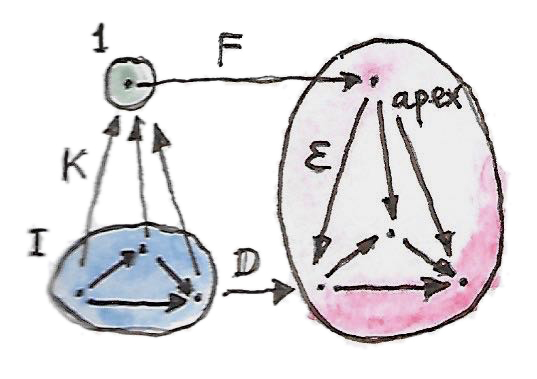
錐はからへの自然変換だ。はもとのとまったく同じことを行う。次の図式はこの変換を示している。

ここで、そのような関手のうち「最高」のものを選択するような普遍性を定義できる。このはを内のの極限である対象に写し、からへの自然変換がそれに対応する射影を提供する。この普遍関手はに沿ったの右Kan拡張 (right Kan extension) と呼ばれ、で表される。
普遍性を定式化しよう。錐がもう1つあるとする――別の関手と、からへの自然変換から構成された錐だ。
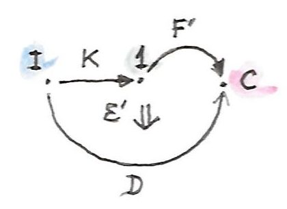
Kan拡張が存在するなら、からそれへの一意な自然変換が必ず存在し、はを通じて次のように分解される:
ここで、は2つの自然変換の水平合成だ (片方はにおける恒等自然変換だ)。この変換はによって垂直合成される。

コンポーネントとしては、内の対象に作用するとき、次が得られる:
この例において、の単一の対象に対応するのコンポーネントは1つしかない。したがって、これは実際に、が定義する錐の頂点からが定義する普遍錐の頂点へ向かう一意な射だ。その可換条件はまさに極限の定義で求められているものだ。
しかし、重要なのは、自明圏 (trivial category) を任意の圏に自由に置き換えてよく、右Kan拡張の定義は有効なままだということだ。
27.1 右Kan拡張
関手に沿った関手の右Kan拡張は関手であり、と表記され、自然変換
を伴い、他のすべての関手と自然変換
について、一意な自然変換
が存在し、を分解する:
これはかなり長ったらしいが、図式ならすっきりと描ける:

この図式はあることに気付くと興味深く見えてくる。それはKan拡張が、ある意味で「関手の積」の逆のように作用していることだ。に対してという表記を使う著者さえいる。実際、その表記なら、右Kan拡張の余単位とも呼ばれるの定義は単純な簡約のように見える:
Kan拡張には別の解釈もある。関手が圏をの中に埋め込むとする。最も単純なケースでは、は単にの部分圏になる。をに写す関手がある。を全体で定義された関手に拡張できるだろうか？ 理想的には、そのような拡張によって合成がと同型になる。言い換えると、はの始域をに拡張する。しかし、本格的な同型射は通常は求めすぎで、その半分で十分だ。つまり、からへの片道の自然変換だけでよい。(逆方向は左Kan拡張が指す。)

当然、この埋め込みの描像は、極限のような例では破綻する。関手が対象の単射ではなく、すなわちhom集合の忠実関手ではないからだ。その場合、Kan拡張は失われた情報を推定するために最善を尽くす。
27.2 随伴としてのKan拡張
さて、右Kan拡張が任意の (および決まった) に対して存在するとしよう。この場合、(をダッシュで置き換えた) は関手圏から関手圏への関手だ。この関手は前置合成関手に対する右随伴であることが分かる。この前置合成関手は内の関手を内の関手に写す。随伴は次のとおりだ:
これは、と呼んでいたすべての自然変換が、と呼んでいた一意な自然変換に対応しているという事実を言い換えたものだ。

さらに、圏をと同じになるように選んだ場合は、恒等関手をに置き換えられる。すると、次の恒等式が得られる:
これで、と同じになるようなを選択できる。その場合、右辺は恒等自然変換を含み、それに対応して、左辺から次の自然変換が得られる:
これは随伴の余単位によく似ている:
実際、関手に沿った恒等関手の右Kan拡張を使っての左随伴を計算できる。そのためには、もう1つの条件が必要だ: 右Kan拡張は関手によって保存されなければならない。このKan拡張の保存が意味するのは、を前置合成した関手のKan拡張を計算すると、もとのKan拡張にを前置合成したのと同じ結果が得られるということだ。ここでは、この条件は次のように単純化される:
による除算で表記すると、前述の随伴は次のように記述できる:
これは随伴がある種の逆を表しているという直観を裏付ける。また、保存の条件は次のようになる:
ある関手自身に沿った右Kan拡張は余稠密性モナド (codensity monad) と呼ばれる。
随伴の式は重要な結果だ。なぜなら、これからすぐ見るように、エンド (コエンド) を使ってKan拡張を計算でき、したがって、右 (左) 随伴を見出す実用的な手段が得られるからだ。
27.3 左Kan拡張
左Kan拡張を与えるような双対構成が存在する。直観を得るために、余極限の定義から始めて、単元圏を使うようにそれを再構築しよう。余錐を作るには、関手を使って底面を形成し、関手を使って頂点を選択する。

余錐の側面である単射は、からへの自然変換のコンポーネントだ。

余極限は普遍余錐だ。したがって、他のすべての関手と自然変換
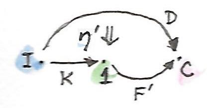
について、からへの一意な自然変換
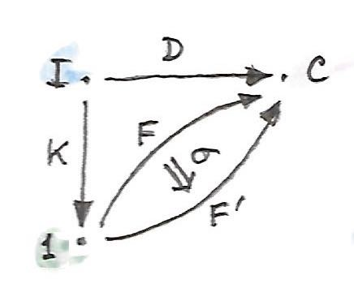
が存在する。ただし:
これは次の図式で表される:

単元圏をに置き換えると、この定義は左Kan拡張の定義へと自然に一般化される。左Kan拡張はと表記される。

自然変換:
は左Kan拡張の単位と呼ばれる。
先ほどと同様に、自然変換の間の1対1の対応関係:
を随伴によって作り直せる:
つまり、の前置合成について、左Kan拡張は左随伴で、右Kan拡張は右随伴だ。
恒等関手の右Kan拡張がの左随伴を計算するのに使われるように、恒等関手の左Kan拡張はの右随伴だと分かる (は随伴の単位だとする):
2つの結果を組み合わせると、次が得られる:
27.4 エンドとしてのKan拡張
Kan拡張の真の力は、エンド (およびコエンド) を使って計算できるという事実に由来する。簡単のため終域圏がである場合に注目するが、どの式も任意の圏に拡張できる。
Kan拡張を使えば関手の作用をもとの始域の外側に拡張できる、という考え方を再検討してみよう。がをの中に埋め込むとする。関手はをに写す。の像内の任意の対象、すなわちに対し、拡張された関手はをに写す。問題は、の像の外側にある内の対象をどうするかだ。考え方は、そのような対象はどれも、たくさんの射を通じての像内のすべての対象と潜在的に繋がっている、というものだ。関手はそれらの射を保存しなければならない。対象からの像への射の全体は次のhom関手によって特徴づけられる:

このhom関手は2つの関手の合成であることに注意してほしい:
右Kan拡張は関手合成の右随伴だ:
をhom関手に置き換えるとどうなるか見てみよう:
そして、先ほどの合成で表すとこうなる:
右辺は米田の補題を使って簡潔にできる:
ここで、自然変換の集合をエンドに書き直すと、右Kan拡張に対する非常に便利な式が得られる:
左Kan拡張に対しても、コエンドによって同様の式が得られる:
確認のため、これが実際に関手合成に対する左随伴であることを証明しよう:
左辺に前述の式を代入しよう:
これは自然変換の集合なので、エンドに書き直せる:
Hom関手の連続性を使って、コエンドをエンドに置き換えられる:
積と冪乗についての随伴が使える:
この冪乗は、対応するhom集合と同型だ:
Fubiniの定理と呼ばれる定理より、2つのエンドを交換してよい:
内側のエンドは2つの関手間の自然変換の集合を表しているので、米田の補題を使える:
この自然変換の集合はまさに、証明しようとしていた随伴の右辺を形成する:
このようなエンド・コエンド・米田の補題を使った計算は、エンドの「微積分」としてはごく典型的なものだ。
27.5 HaskellでのKan拡張
Kan拡張のエンド・コエンドの式はHaskellに簡単に変換できる。右Kan拡張から始めよう:
エンドを全称量化子に、hom集合を関数型に置き換える:
newtype Ran k d a = Ran (forall i. (a -> k i) -> d i)
この定義を見ると、Ranには、関数を適用できる型aの値と、2つの関手kとdの間の自然変換が含まれている必要があることは明らかだ。たとえば、kがtree関手、dがlist関手だとして、Ran Tree [] Stringが与えられたとする。これに関数:
f :: String -> Tree Int
を渡すとIntのリストが返される、などだ。右Kan拡張はこの関数を使って木を生成し、再パッケージしてリストにする。たとえば、文字列から構文解析木を生成するパーサーを渡すと、その木の深さ優先トラバースに対応するリストが得られる。
右Kan拡張は、関手dを恒等関手に置き換えれば、任意の関手の左随伴を計算するために使える。これにより、関手kの左随伴は、次の型の多相関数の集合で表される:
forall i. (a -> k i) -> ikがモノイドの圏からの忘却関手だとしよう。すると、全称量化子はすべてのモノイドに及ぶ。もちろんHaskellではモノイダル則を表現できないが、以下は結果の自由関手の適切な近似になっている
(忘却関手kは対象における恒等関手だ):
type Lst a = forall i. Monoid i => (a -> i) -> i期待どおり、自由モノイド、すなわちHaskellのリストが得られる:
toLst :: [a] -> Lst a
toLst as = \f -> foldMap f as
fromLst :: Lst a -> [a]
fromLst f = f (\a -> [a])この左Kan拡張はコエンドだ:
したがって、存在量化子へと翻訳される。記号的にはこうなる:
Lan k d a = exists i. (k i -> a, d i)これはHaskellではGADT、あるいは全称量化されたデータコンストラクターを使ってコード化できる:
data Lan k d a = forall i. Lan (k i -> a) (d i)
このデータ構造を解釈すると、不特定の数のiを含むコンテナを取ってaを1つ生成する関数を含むものだと言える。また、それらのiのコンテナも持つ。iが何かは分からないので、このデータ構造で唯一できるのは、iのコンテナを取得し、自然変換を使って関手kで定義されたコンテナに再パックし、関数を呼んでaを得ることだけだ。たとえば、dが木でkがリストの場合は、木を直列化して得られるリストで関数を呼べばaが得られる。
左Kan拡張は関手の右随伴を計算するために使える。積関手の右随伴が冪乗なのは知っているので、Kan拡張を使って実装してみよう:
type Exp a b = Lan ((,) a) I bこれが実際に関数型と同型であることは、次の関数のペアによって分かる:
toExp :: (a -> b) -> Exp a b
toExp f = Lan (f . fst) (I ())
fromExp :: Exp a b -> (a -> b)
fromExp (Lan f (I x)) = \a -> f (a, x)すでに一般的な場合について説明したとおり、次のような段階を経ることに注意してほしい:
- まず、
xのコンテナ (ここでは単なる自明な恒等コンテナ) と関数fを取得した。 - 次に、そのコンテナを、恒等関手と関手のペアとの間の自然変換を使って再パックした。
- 最後に、関数
fを呼んだ。
27.6 自由関手
Kan拡張の興味深い応用として自由関手 (free functor) の構成がある。これは以下のような実際的な問題の解となる: 対象の写像である型コンストラクターがあるとする。その型コンストラクターをもとに関手を定義することは可能だろうか？ 言い換えると、その型コンストラクターを完全な自己関手へと拡張するような射の写像を定義できるだろうか？
鍵となる観察は、型コンストラクターは離散圏を始域とする関手として表現できる、というものだ。離散圏の射は恒等射だけだ。圏が与えられたとき、単に恒等射以外の射を捨て去れば、いつでも離散圏を構成できる。したがって、からへの関手は、対象の単純な写像、すなわちHaskellで型コンストラクターと呼ばれるものになる。また、標準関手 (canonical functor) も存在し、を内へ注入する: それは対象についての (および恒等射についての) 恒等関手だ。のに沿った左Kan拡張は、存在するなら、からへの関手だ:
これはに基づく自由関手と呼ばれる。
Haskellでは、次のように書ける:
data FreeF f a = forall i. FMap (i -> a) (f i)実際、すべての型コンストラクターfについてFreeF fは関手となる:
instance Functor (FreeF f) where
fmap g (FMap h fi) = FMap (g . h) fiご覧のとおり、自由関手は、関数と引数の両方を記録することで関数のリフトを偽装する。それは、関数合成を記録することによって、リフトされた関数を累積する。関手則は自動的に満たされる。この構成は論文Freer Monads, More Extensible Effectsで使われたものだ。
別の方法として、右Kan拡張も同じ目的に使える:
newtype FreeF f a = FreeF (forall i. (a -> i) -> f i)これが実際に関手であることは簡単に確認できる:
instance Functor (FreeF f) where
fmap g (FreeF r) = FreeF (\bi -> r (bi . g))28 豊穣圏
圏が小さいとは、対象が集合を形成することだ。しかし、集合より大きいものの存在も知られている。有名な話として、すべての集合の集合は、標準的な集合論 (選択公理を含めて議論されることもあるツェルメロ＝フレンケル集合論) では形成できない。つまり、すべての集合の圏は大きいことになる。グロタンディーク宇宙 (Grothendieck universe) などの数学的トリックがいくつかあって、集合を超える集まりを定義するのに使える。それらのトリックによって大きい圏について語れるようになる。
任意の2つの対象間の射が集合を形成するような圏は、局所的に小さい、という。それらが集合を形成しないなら、定義のいくつかは再考する必要がある。特に、射を集合から選ぶことさえできない場合、射の合成とは何を意味するのだろう？ 解決策は、内の対象からなるhom集合を他の圏からの対象で置き換えることによって、ブートストラップすることだ。ただし、一般に、対象には要素がないため、個々の射については語れない点が異なる。豊穣圏 (enriched category) のすべての特性を、hom対象に対して実行できる操作全体として定義する必要がある。そのためには、hom対象を提供する圏は、追加の構造を持たなければならない――モノイダル圏でなければならない。このモノイダルを圏と呼ぶとき、圏は上の豊穣圏だと言える。
大きさの理由に加えて、hom集合をただの集合以上の構造があるものへと一般化することも興味深そうだ。たとえば、従来の圏には対象間の距離という概念はない。2つの対象は射によって接続されているかいないかのどちらかだ。ある対象に接続されているすべての対象は近傍 (neighbors) と呼ばれる。現実の人生とは違って、圏においては、友人の友人の友人は、親友と同じくらい近しい。適切な豊穣圏では、対象間の距離を定義できる。
豊穣圏について経験を積むべき極めて実用的な理由はもう1つある。それは、圏に関する知識の非常に有用なオンライン情報源であるnLabが主に豊穣圏について書かれているからだ。
28.1 なぜモノイダル圏か？
豊穣圏を構築する際には、モノイダル圏をに置き換え、hom対象をhom集合に置き換えれば、通常の定義を復元できることに留意する必要がある。これを実現する一番良い方法は、通常の定義から始めて、ポイントフリーな方法で――つまり、集合の要素に名前を付けずに――再定式化を繰り返すことだ。
まず、合成の定義から始めよう。通常は、 からの射1つと からの射1つからなる射のペアを取り、 からの射に写す。言い換えれば、次の写像だ:
これは集合間の関数だ――片方は2つのhom集合のカルテシアン積だ。この式は、カルテシアン積をより一般的な何かに置き換えれば容易に一般化できる。圏論的な積でもよいが、さらに進んで、完全に一般的なテンソル積を使ってもよい。
次は恒等射の番だ。個々の要素は、hom集合から選択する代わりに、単集合の関数を使って定義できる:
ここでも単集合は終対象に置き換えられるが、さらに進んでテンソル積の単位にも置き換えられる。
ご覧のように、あるモノイダル圏から取った対象は、hom集合を置き換える候補として適している。
28.2 モノイダル圏
モノイダル圏については前にも述べたが、定義をもう一度述べておく価値はある。モノイダル圏は、テンソル積を双関手として定義する:
このテンソル積は結合的なのが望ましいが、自然同型を除いた結合則さえ満たせば十分だ。この同型射は結合子と呼ばれる。そのコンポーネントはこうなる:
これは3つの引数すべてにおいて自然である必要がある。
モノイダル圏はまた、テンソル積の単位として機能する特別な単位対象を、これも自然同型を除いて一意に定義する必要がある。これら2つの同型は、それぞれ左単位子・右単位子と呼ばれ、次の構成要素を持つ:
結合子と単位子はコヒーレンス条件を満たす必要がある:


モノイダル圏が対称 (symmetric) と呼ばれる条件は、自然同型がコンポーネント:
を持ち、その平方が恒等射であり:
かつモノイダル構造と一致していることだ。
モノイダル圏に関して興味深いのは、内部hom (関数オブジェクト) をテンソル積に対する右随伴として定義できることだ。この関数オブジェクト、すなわち冪乗の標準的な定義は、右随伴を通じて圏論的な積へと向かっていたことを思い出してほしい。そのような対象が存在する圏をカルテシアン閉圏と呼んだ。モノイダル圏の内部homを定義する随伴は次のとおりだ:
G. M. Kellyにならって、内部homをと表記しよう。この随伴の余単位は自然変換であり、そのコンポーネントは評価射 (evaluation morphism) と呼ばれる:
テンソル積が非対称なら、次の随伴を使って、で示される別の内部homを定義できることに注目してほしい:
両方が定義されているモノイダル圏は双閉 (biclosed) と呼ばれる。双閉ではない圏の例としては内の自己関手の圏があり、関手合成がテンソル積として機能する。この圏はモナドを定義するのに使った。
28.3 豊饒圏
モノイダル圏上の豊穣圏は、hom集合をhom対象で置き換える。内の対象とのすべてのペアに対し、内の対象 を関連付けよう。hom集合に使ったのと同じ表記をhom対象にも使うことにする。ただし、hom対象が射を含まないことには注意が必要だ。一方で、はhom集合と射を持つ正則圏 (豊穣化されていない圏) だ。したがって、集合を完全に一掃したわけではない――絨毯で覆って見えなくしただけだ。
内の個々の射については語れないため、射の合成を内の射の族に置き換える:

同様に、恒等射を内の射の族に置き換える:
ここで、は内のテンソル単位だ。

合成の結合則は内の結合子で定義される:

単位則も同様に単位子として表現される:


28.4 前順序
前順序はやせた圏として定義され、その中のhom集合はどれも空集合か単集合だ。集合 が空でないことは、が以下であることの証明と解釈される。そのような圏は、2つの対象と (ととも呼ばれる) だけを含む非常に単純なモノイダル圏上の豊穣圏だと解釈できる。必須の恒等射に加えて、この圏にはからへの単一の射がある。これをと呼ぼう。単純なモノイダル構造をその中に確立できる。そのためには、との単純な算術をモデル化したテンソル積を使う (たとえば、0でない積はだけだ)。この圏の恒等対象はだ。これは厳密なモノイダル圏であり、つまり結合子と単位子は恒等射だ。
前順序のhom集合は空集合か単集合なので、ちっぽけな圏からのhom対象に簡単に置き換えられる。豊穣化された前順序は、対象との任意のペアについてのhom対象 を持つ。この対象は、が以下ならで、そうでなければだ。
合成を見てみよう。任意の2つの対象のテンソル積は通常はで、両方がのときだけとなる。テンソル積がの場合、合成射には2つの候補がある。またはのいずれかだ。しかし、の場合、候補はだけだ。これを再翻訳して関係に戻すと、との場合はとなり、必要としていた推移則そのものになる。
恒等射についてはどうだろう？ それはから への射だ。からの射は1つだけで、恒等射だ。したがって、 はである必要がある。これは前順序の反射則を意味する。したがって、前順序を豊饒圏として実装すると、推移則と反射則の両方が自動的に強制される。
28.5 距離空間
ウィリアム・ローヴェア (William Lawvere) による興味深い例がある。ローヴェアは豊穣圏を使って距離空間 (metric space) を定義できることに気付いた。距離空間は任意の2対象間の距離を定義する。この距離は非負実数だ。取り得る値に無限大を含めると便利だ。距離が無限大の場合、一方の対象から他方の対象へ到達する方法はない。
距離には、満たさなければならない自明な特性がいくつかある。その1つは、ある対象からそれ自身への距離は0でなければならない、というものだ。もう1つは三角不等式で、直線距離は中継地点同士の距離の合計を超えない、というものだ。距離が対称である必要がないのは、最初は奇妙に思えるかもしれないが、ローヴェアによる説明どおりに、ある方向へは坂を上り、逆方向へは坂を下るのを想像すれば分かる。いずれにしても、対称性は追加の制約として後から課してもよい。
さて、どうすれば距離空間を圏論の言葉で語れるだろうか？ それには、hom対象が距離であるような圏を構築する必要がある。注意してほしいのは、距離は射ではなくhom対象だということだ。一体どうすればhom対象が数値になるだろう？ それらの数値が対象であるようなモノイダル圏さえ構築できればよい。非負実数 (と無限大) は全順序を形成するので、やせた圏として扱える。このような2つの数との間の射は、の場合だけ存在する (註: これは前順序の定義での伝統的な向きとは逆だ)。モノイダル構造は加算で与えられ、0が単位対象として機能する。言い換えると、2つの数値のテンソル積はそれらの合計だ。
距離空間は、このようなモノイダル圏上の豊穣圏だ。対象からへのhom対象 は、非負の (無限大を取り得る) 数であり、からへの距離と呼ばれる。このような圏で恒等射と合成に何ができるか見てみよう。
我々の定義では、0という数であるテンソル単位からhom対象 への射は次の関係になる:
は負の数ではないため、この条件はからへの距離が常に0であることを示す。良し！
では合成について語ろう。隣接する2つのhom対象のテンソル積 から始める。テンソル積は、2つの距離の合計として定義された。合成は、この積から への、内の射だ。内の射は「以上」の関係として定義される。言い換えると、からへの距離とからへの距離の合計は、からへの距離以上になる。もっとも、これは標準的な三角不等式にすぎない。良し！
距離空間を豊饒圏へと再投影することにより、三角不等式と自己距離0が「無料で」得られる。
28.6 豊穣関手
関手の定義には射の写像が含まれる。豊穣化された設定では、個々の射という概念がないため、hom対象を一括して扱う必要がある。Hom対象はモノイダル圏内の対象であり、それらの間には自由に使える射がある。したがって、同一のモノイダル圏上の複数の豊穣圏について、それらの間に豊穣関手を定義することは意味がある。そうすれば、内の射を使って2つの豊穣圏の間でhom対象を写せる。
2つの圏との間の豊穣関手 (enriched functor) は、対象を対象に写すだけでなく、内の対象のすべてのペアに対して内の射を割り当てる:
関手は構造を保持する写像だ。普通の関手については、それは合成と恒等射を保存することを意味した。豊穣化された設定においては、合成の保存とは次の図式が可換であることを意味する:

恒等射の保存は、内の射のうち恒等射を「選択」するものの保存に置き換えられる。
28.7 自己豊穣化
閉じた対称モノイダル圏は、hom集合を内部hom (定義は上記を参照) に置き換えることによって自己豊穣化できる。そのためには、内部homについての合成則を定義する必要がある。言い換えると、次のシグネチャを持つ射を実装する必要がある:
これはプログラミングでの他のタスクと大差ない。ただし、圏論では通常、ポイントフリー実装を使う。まず、これを要素とするような集合を指定する。ここでは、次のhom集合のメンバーだ:
このhom集合は次と同型だ:
ここで、内部homの定義で出てきた随伴を使った。この新しい集合に射を構築できるなら、随伴はもとの集合の射を指し、そして、その射は合成として使える。その射は、自由に使えるいくつかの射を合成することによって構築される。まず、結合子を使って左側の式を再結合できる:
続けて、随伴の余単位を使える:
もう一度余単位を使うとが得られる。以上より射が構築できた:
これは次のhom集合の要素だ:
随伴によって、目指していた合成則が得られるだろう。
同様に、恒等射:
は次のhom集合のメンバーだ:
これは、随伴を通じて、次と同型だ:
このhom集合は左恒等射を含むことが分かっている。は随伴の下の像として定義できる。
自己豊穣化の実際的な例としては、プログラミング言語における型のプロトタイプとして機能する圏が挙げられる。以前、それがカルテシアン積に対するモノイダル閉圏であることを見た。では、任意の2集合間のhom集合はそれ自体が集合であるため、内の対象になる。それが冪乗集合の同型であることは分かっているので、外部homと内部homは等価となる。さらに、自己豊穣化を通じて、冪乗集合をhom対象として使えて、合成を冪乗対象のカルテシアン積として表現できるのも分かった。
28.8 -圏との関係
-圏については、(小さい) 圏の圏であるの文脈において説明した。圏間の射は関手だが、追加の構造がある: 関手間の自然変換だ。-圏では、対象は-セル、射は-セル、射間の射は-セルと呼ばれることが多い。では、-セルは圏、-セルは関手、-セルは自然変換だ。
しかし、2つの圏の間の関手も圏を形成することに注意してほしい。したがって、に実際にあるのは、hom集合というよりhom圏だ。が上の豊穣圏として扱えるのと同様に、は上の豊穣圏として扱えることが知られている。さらに一般的に、すべての圏が上の豊穣圏として扱えるのと同様に、すべての-圏は上の豊穣圏とみなせる。
29 トポイ
プログラミングから離れてハードコアな数学に飛び込んでしまったかもしれないのは分かっている。しかし、プログラミングにおける次の大きな革命が何をもたらすのか、理解のためにどんな数学が必要となるのかは、誰にも分からない。すでにいくつか非常に興味深いアイデアがある。連続時間での関数型リアクティブプログラミング、Haskellの型システムの依存型による拡張、ホモトピー型理論のプログラミングにおける探究などだ。
ここまでは、値の集合を使って何気なく型を区別してきた。これは厳密には正しくない。なぜなら、このようなアプローチはある事実を考慮していないからだ。それは、プログラミングでは値を計算し、そして計算は時間のかかるプロセスであり、極端な場合には停止しない可能性がある、という事実だ。すべてのチューリング完全な言語は発散計算 (divergent computation) を含む。
また、集合論には、計算機科学の基礎として、そして数学自体の基礎としても、最適とは言い難い根本的な理由がある。良い比喩としては、集合論は特定のアーキテクチャに結び付けられたアセンブリ言語だといえる。別のアーキテクチャで計算を実行したいなら、より一般的なツールを使う必要がある。
可能性の1つは、集合の代わりに空間 (space) を使うことだ。空間は構造がより豊かで、集合を使わずに定義できる。通常、空間に関連付けられるものの1つは位相幾何学 (topology) で、連続性などを定義するために必要だ。位相幾何学への従来のアプローチは、ご想像のとおり、集合論によるものだ。特に、部分集合は位相幾何学の中心的な概念だ。驚くまでもないが、圏論の研究者たちはこの概念を以外の圏に一般化した。集合論に代わるものとしてふさわしい性質を持つ圏の型はトポス (topos, 複数形: トポイtopoi) と呼ばれ、部分集合を一般化した概念などを提供する。
29.1 部分対象分類子
要素ではなく関数を使って部分集合の概念を表現することから始めよう。からへの任意の関数は、の部分集合――の下にあるの像――を定義する。しかし、同一の部分集合を定義する関数はたくさんある。もっと具体的にする必要がある。まず初めに、単射関数――複数の要素を1つに潰さない関数に焦点を当てよう。単射関数 (injective function) はある集合を別の集合に「注入」する。有限集合における単射関数は、ある集合の要素を別の集合の要素に接続する平行な矢として視覚化できる。当然、最初の集合を2つ目の集合より大きくすることはできない。そうでないと矢は必然的に収束する。曖昧さはまだ残っている: 別の集合と、その集合からへの別の単射関数があって、同じ部分集合が選ばれる可能性がある。しかし、そのような集合がと同型でなければならないことは容易に納得できる。この事実を利用して、部分集合を、終域の同型によって関連付けられた単射関数の族として定義できる。より正確には、2つの単射関数:
が等価になるのは、同型射:
が存在する場合だ。ただし:
このような等価な単射の族は、の部分集合を定義する。

この定義は、単射関数をモノ射 (monomorphism) に置き換えることで任意の圏にリフトできる。からへのモノ射は普遍性によって定義されることを思い出してほしい。任意の対象および任意の射のペア:
のうち次を満たすもの:
についてはである必要がある。
集合においてこの定義をより理解しやすくするには、関数がモノ射でないことが何を意味するかを考えるとよい。その場合はの2つの異なる要素がの1つの要素に写されるだろう。そして、それら2つの要素についてのみ違いがある2つの関数とを見つけられる。を後置合成すると、その違いは見えなくなる。

部分集合を定義する別の方法もある: 特性関数 (characteristic function) と呼ばれる単一の関数を使う方法だ。これは、集合から2要素集合への関数だ。この関数は、の要素のうち部分集合のメンバーである要素に “true” を割り当て、メンバーではない要素に “false” を割り当てる。
の要素を “true” に指定することの意味を明確にする必要が残る。ここで標準的なトリックが使える: 単集合からへの関数を使えばよい。この関数をと呼ぼう:

これらの定義の組み合わせ方によっては、部分対象 (subobject) が何であるかだけでなく、特別な対象についても要素に触れずに定義できる。ここでのアイデアは、射が「総称」部分対象を表すようにしたい、というものだ。では、これは2要素の集合から1要素の部分集合を選ぶ。これは最大限に総称的だ。ここで選ばれたものがれっきとした部分集合なのは明らかだ。なぜなら、この部分集合にはない要素がにはもう1つあるからだ。
より一般的な条件では、を終対象から分類対象 (classifying object) へのモノ射として定義する。ただし、分類対象の定義が必要になる。つまり、この対象を特性関数に結びつける普遍性が必要だ。では、特性関数に沿ったの引き戻しが、部分集合とそれをに埋め込む単射関数の両方を定義することが知られている。その引き戻し図式を以下に示す:

この図式を分析してみよう。引き戻しの式は次のとおりだ:
関数はのすべての要素を “true” に写す。したがって、はのすべての要素を、の要素のうちが “true” であるものに写す必要がある。定義より、これらは特性関数によって指定される部分集合の要素だ。したがって、の像はまさに求めていた部分集合だ。引き戻しの普遍性によってが単射であることが保証される。
この引き戻し図式は以外の圏の分類対象を定義するのに使える。そのような圏には終対象が必要で、それによってモノ射を定義できる。また、引き戻しも必要だ――実際の要件は、すべて有限の極限を持つことだ (引き戻しは有限の極限の一例だ)。これらの仮定の下で、分類対象を、すべてのモノ射について引き戻し図式を完成させる一意な射が存在する、という特性によって定義する。
この特性を分析しよう。引き戻しを構築するとき、3つの対象、、と、2つの射、が与えられる。引き戻しの存在は、図式を可換にするような、2つの射と (後者は終対象の定義によって一意に決定される) を伴った最適な対象を見つけられることを意味する。
ここでは連立微分方程式を解いている。つまり、との両方を変化させることでとについて解いている。与えられたおよびについて、モノ射がある場合とない場合がある。しかし、もしあるなら、何らかのの引き戻しにしたい。さらに、このがによって一意に決定されるようにしたい。
モノ射と特性関数の間に1対1の対応関係があるとは言えない。なぜなら、引き戻しは同型を除いて一意なだけだからだ。しかし、部分集合を等価な単射の族として以前定義したのを思い出してほしい。これを一般化するには、の部分対象を、への等価なモノ射の族として定義すればよい。このモノ射の族は、先ほどの図式における等価な引き戻しの族と1対1で対応している。
したがって、の部分対象の集合 をモノ射の族として定義でき、それがからへの射の集合と同型であることがわかる:
偶然にも、これは2つの関手の自然同型だ。言い換えれば、 は表現可能 (反変) 関手であり、その表現は対象だ。
29.2 トポス
トポスは次のような圏だ:
- カルテシアン閉である: 積・終対象・(積の右随伴として定義される) 冪乗のすべてを持つ。
- すべての有限図式について極限を持つ。
- 部分対象分類子がある。
これらの特性によって、トポスはほとんどの用途での代わりになる。さらに、定義から導かれる追加の特性もある。たとえば、トポスは始対象も含めてすべての有限の余極限を持つ。
部分対象分類子を終対象2つの余積 (和) として――におけるのと同様に――定義するのは魅力的だが、もっと一般化したい。これが当てはまるトポイはブーリアンと呼ばれる。
29.3 トポイと論理
集合論では、特性関数は、集合の要素の特性――述語 (predicate) を定義するものと解釈されうる。述語は、一部の要素に対しては真となり、他の要素に対しては偽となる。述語は自然数の集合から偶数の部分集合を選択する。トポスでは、述語の概念を対象からへの射に一般化できる。が真偽対象 (truth object) と呼ばれることがあるのはこのためだ。
述語は論理の構成要素だ。トポスには、論理を研究するのに必要な全装備が揃っている。積は論理積 (and) に対応し、余積は論理和 (or) に対応し、冪乗は論理包含に対応する。排中律 (または、等価なものとして、二重否定除去) を除く論理学の標準的な公理すべてがトポスに含まれている。これが、トポスの論理が構成的論理 (constructive logic) あるいは直観主義論理 (intuitionistic logic) に対応する理由だ。
直観主義論理は計算機科学から予想外に支持され、着実に定着していっている。排中律という古典的な概念は、絶対的な真実があるという信念に基づいている。つまり、すべての記述は真か偽のいずれかであり、古代ローマ人が言ったように、tertium non datur (第3の道はない) ということだ。しかし、何かの真偽を知るための方法は、それを証明または反証できるかどうかだけだ。証明とはプロセスであり、計算だ――そして、知ってのとおり、計算には時間とリソースがかかる。場合によっては、停止しないこともある。有限の時間で証明できない命題を真実であると主張するのは無意味だ。トポスは、より繊細な真偽対象を持ち、興味深い論理をモデル化するためのより一般的な枠組みを提供する。
29.4 課題
- 特性関数に沿ったの引き戻しである関数は単射でなければならないことを示せ。
30 ローヴェア・セオリー
最近では、モナドに言及せずには関数型プログラミングについて語れない。しかし、並行宇宙においては、エウジニオ・モッジがモナドではなくローヴェアのセオリー (Lawvere theory) に着目した可能性もあっただろう。そのような宇宙を探検しよう。
30.1 普遍代数
代数を様々な抽象レベルで記述する方法はたくさんある。モノイド・群・環などを記述するための汎用言語を見つけたい。最も単純なレベルでは、これらのすべての構造によって、集合の要素に対する演算と、それらの演算によって満たされなければならないいくつかの規則が定義される。たとえば、モノイドは結合則を満たす二項演算によって定義できる。さらに、単位元と単位元則もある。しかし、少し想像力を働かせれば、単位元は零項演算――引数を取らず集合の特別な要素を返す操作――に変えられる。群について述べるには、受け取った要素の逆を返す単項演算子を追加する。それに対応する左逆元則と右逆元則がある。環では2つの二項演算子といくつかの規則が定義される。以下同様だ。
大枠としては、代数はさまざまな値のについての項演算の集合と、等式の恒等射の集合によって定義される。これらの恒等射はすべて全称量化されている。たとえば、結合性の等式はすべての可能な3要素の組み合わせについて満たされる必要がある、などだ。
ちなみに、これは0 (加算についての単位) が乗算について逆を持たないという単純な理由から、フィールドを考慮から除外する。フィールドの逆元則は全称量化できない。
この普遍代数の定義は、演算 (関数) を射に置き換えると、以外の圏にも拡張できる。集合の代わりに、(総称対象と呼ばれる) 対象を選ぶ。単項演算はの準同型にすぎない。しかし、それ以外のアリティ (arity, 演算の引数の数) についてはどうだろう？ 二項演算 (アリティ2) は、積からへ戻る射として定義できる。一般の項演算は、の乗からへの射だ:
零項演算は、終対象 (の0乗) からの射だ。したがって、あらゆる代数を定義するために必要なのはある圏だけで、その圏の対象は1つの特別な対象の冪乗だ。特定の代数は、この圏のhom集合として符号化されている。これがローヴェア・セオリーの概略だ。
ローヴェア・セオリーの導出は多くのステップを経るため、道順を示しておく:
- 有限集合の圏。
- そのスケルトン。
- その反対圏。
- ローヴェア・セオリー: 圏内のある対象。
- ローヴェア圏のモデル: 圏 内のある対象。
30.2 ローヴェア・セオリー
複数あるローヴェア・セオリーはすべて共通のバックボーンを共有している。ローヴェア・セオリーにおけるすべての対象は、ただ1つの対象から積を使って生成される (実際に、ただの冪乗だ)。しかし、一般の圏では、これらの積をどのように定義するのだろうか？ より単純な圏からの写像を使って積を定義できることが知られている。事実として、このより単純な圏は積ではなく余積を定義する可能性があり、その場合は反変関手を使ってそれらを終域圏に埋め込む。反変関手は、余積を積に変換し、単射を射影に変換する。
ローヴェア圏のバックボーンとして自然な選択肢は、有限集合の圏だ。これは空集合、単集合、2要素集合などを含む。この圏の対象はすべて、余積を使って単集合から生成できる (空集合は零項余積の特殊なケースとして扱う)。たとえば、2要素集合は2つの単集合の和だ。Haskellでも次のように表現される:
type Two = Either () ()しかし、空集合は1つしかないと考えるのが自然だとしても、単集合は異なるものが多数存在してよい。典型的な例として、集合と集合とはすべて同型であるにもかかわらず、それぞれ異なる。集合の圏の余積は結合則を満たさない。この状況を解決するには、すべての同型集合を同一視する圏を構成すればよい。そのような圏はスケルトン (skeleton) と呼ばれる。言い換えれば、すべてのローヴェア・セオリーのバックボーンはのスケルトンだ。この圏の対象は、の要素数に対応した (0を含む) 自然数と同一視できる。余積は加算の役目を果たす。内の射は有限集合間の関数に対応する。例として、からへの (空集合を始対象とする) 一意な射があり、からへの射は (を除いて) なく、からへの射 (単射) はあり、からへの射は1つある、などが挙げられる。ここで、は内のある対象を表し、同型によって同一視された内のすべての要素集合に対応する。
圏を使うと、ローヴェア・セオリーを、次の特別な関手を伴う圏として形式的に定義できる:
この関手は対象の全単射である必要があり、有限積を保存する必要がある (内の積と内の余積は同じだ):
この関手は対象における恒等関係と見なされることがある。内と内とで対象が同じであることを表すからだ。そこで、これらに同じ名前を使うことにし、自然数で表そう。ただし、内の対象は集合と同じではないことに注意してほしい (それらは同型集合のクラスだ)。
一般に、内のhom集合は、内のhom集合よりも豊穣だ。これらは内の関数に対応する射以外の射も含むことがある (後者は基本的な積操作 (basic product operation) とも呼ばれる)。ローヴェア・セオリーの等式的規則はそれらの射へ符号化されている。
鍵となる観察は、内の単集合が内で同じくと呼ばれる対象に写され、内の他のすべての対象が自動的にこの対象の冪乗になることだ。たとえば、内の2要素集合は余積であるため、内の積 (または) に写される必要がある。この意味で、圏はの対数のように振る舞う。
内の射には、関手によってから転送されたものもある。それらはで構造としての役目を果たす。特に、余積単射は積射影になる。直観として有用なのは、射影:
を、個の変数のうち第番目以外のすべてを無視するような関数のプロトタイプとして想像することだ。逆に、内の定常射は内では対角射になる。これらは変数の複製に相当する。
内の射のうちで興味深いのは、射影以外の項演算を定義するものだ。それらの射によって、あるローヴェア・セオリーと別のものとが区別される。それらは乗算・加算・単位元の選択などで、代数を定義する。しかし、を完全な圏にするためには、複合操作 (あるいは、等価なものとして、) も必要だ。圏の構造が単純なため、これらは型のより単純な射の積だとわかる。これは、積を返す関数は関数の積である (あるいは、前に見たように、hom関手は連続である) という言明を一般化したものだ。
ローヴェア・セオリーはに基づいており、積を定義する「退屈な」射はそこから継承されている。それは項操作 (点線の矢印) を記述するような「興味深い」射を追加する。
ローヴェア・セオリーは圏を形成する。この圏の射は関手であり、有限積を保存し関手と可換だ。このような2つのセオリー と が与えられた場合、それらの間の射は関手となり、次のようになる:
ローヴェア・セオリーの間の射は、あるセオリーの解釈の考え方を別のセオリーの中へ封入する。たとえば、群の乗算は、逆を無視すれば、モノイドの乗算と解釈できる。
ローヴェア圏の最も単純で自明な例は、自体だ (これはについての恒等関手の選択に対応する)。演算や規則を持たないこのローヴェア・セオリーは、たまたまの始対象でもある。
この時点でローヴェア・セオリーの自明でない例を示せば非常に有益だろうが、モデルとは何かを先に理解しておかなければ、説明が困難だ。
30.3 ローヴェア・セオリーにおけるモデル
ローヴェア・セオリーを理解するための鍵は、ある1つのセオリーは同じ構造を共有する多くの個別の代数を一般化している、と理解することだ。たとえば、モノイドのローヴェア・セオリーは、モノイドであることの本質を説明している。それはすべてのモノイドで有効である必要がある。特定のモノイドはそのようなセオリーのモデルとなる。あるモデルは、ローヴェア・セオリーから集合の圏への関手として定義される。(モデルに他の圏を使う一般化されたローヴェア・セオリーもあるが、ここではのみ説明する。) の構造は積に大きく依存するため、そのような関手は有限積を保存する必要がある。のモデルは、ローヴェア・セオリーの上の代数とも呼ばれ、次の関手によって定義される:
積の保存は同型を除いてのみ必要であることに注意してほしい。これは非常に重要だ。なぜなら、積を厳密に保存すると、ほとんどの興味深いセオリーが棄却されるからだ。
モデルによる積の保存とは、内のの像が、集合――からの対象の像――の冪乗によって生成された一連の集合であることを意味する。この集合をと呼ぼう。(この集合はソート (sort) と呼ばれることがあり、このような代数はシングルソート (single-sorted) と呼ばれる。ローヴェア・セオリーのマルチソート代数 (multi-sorted algebra) への一般化も存在する。) 特に、からの二項演算は次の関数に写される:
あらゆる関手と同じく、内の複数の射が内の同じ関数に潰されることがある。
ちなみに、すべての規則は全称量化された等価性であるという事実は、すべてのローヴェア・セオリーが自明なモデルを持つことを意味する: 恒等射は、すべての対象を単集合に写し、すべての射をその上の定関数に写す。
という形式の内の一般の射は、次の関数に写される:
とという2つの異なるモデルがある場合、それらの間の自然変換は、添字が付けられた関数の族になる:
または、等価なものとして:
ここで、だ。
自然条件によって項演算の保存が保証されることに注意してほしい:
ここで、はにおける項演算だ。
モデルを定義する関数は、モデルの圏である を、射としての自然変換を伴って形成する。
自明なローヴェア圏のモデルを考えてみよう。そのようなモデルは、での値によって完全に決定される。は任意の集合でよいため、が含む集合と同じ数のモデルがある。さらに、 内のすべての射 (関数との間の自然変換) は、におけるコンポーネントによって一意に決定される。逆に、すべての関数は、2つのモデルとの間に自然変換を引き起こす。したがって、 はと同値だ。
30.4 モノイドのセオリー
ローヴェア・セオリーの最も単純で重要な例は、モノイドの構造を記述することだ。それは、すべての可能なモノイドの構造を抽出した単一のセオリーだ。つまり、そのモデルはモノイドの圏全体に及ぶ。すでに述べた普遍的構成は、射の部分集合を同一視すれば、すべてのモノイドが適切な自由モノイドから得られることを示していた。したがって、1つの自由モノイドですべてのモノイドがすでに一般化されている。しかし、自由モノイドは無数に存在する。モノイドに対するローヴェア・セオリーは、それらすべてを1つのエレガントな構成にまとめる。
すべてのモノイドには単位が必要なので、内にはからへの特別な射が必要だ。これに対応する射は内にはないことに注意してほしい。そのような射の存在を仮定すると、逆向きのからへの射になるので、内では、単集合から空集合への関数になるだろう。しかし、そのような関数は存在しない。
次に、射を考える。これは、すべての二項演算のプロトタイプを含む のメンバーだ。 のモデルを構成するとき、これらの射はカルテシアン積からへの関数に写される。言い換えると、引数2つを取る関数になる。
問題は、モノイダル演算子のみを使って何種類の2引数関数を実装できるかだ。2つの引数をとと呼ぼう。両方の引数を無視してモノイダル単位を返す関数が1つある。それから、それぞれとを返す2つの射影がある。さらに、などを返す関数が続く。実際には、このような2引数関数は、生成元とを伴う自由モノイドの要素と同じ数だけ存在する。 はモデルの1つが自由モノイドであるため、これらすべての射を含む必要があることに注意してほしい。自由モノイドでは、これらは別々の関数に対応する。他のモデルでは の複数の射が1つの関数へと潰される場合があるが、自由モノイドではそうならない。
個の生成元を使って自由モノイドを表せば、hom集合 を、モノイドの圏内のhom集合 と同一視できる。一般に、 を とできる。言い換えると、圏は自由モノイドの圏の逆だ。
モノイドに関するローヴェア・セオリーのモデルの圏 は、すべてのモノイドの圏と等価だ。
30.5 ローヴェア・セオリーとモナド
覚えていると思うが、代数のセオリーはモナドを使って――特にモナドの代数で――記述できる。ローヴェア・セオリーとモナドがつながっているのは驚くべきことではない。
まず、ローヴェア・セオリーからモナドがどのように導出されるかを見てみよう。導出は忘却関手と自由関手の間の随伴を経る。忘却関手は、ある集合を各モデルに割り当てる。その集合は、 からの関手を、内の対象において評価することで得られる。
を導出するもう1つの方法は、がの始対象であるという事実を利用することだ。これは、すべてのローヴェア・セオリーに対し、一意な関手があることを意味する。この関手は、モデル上に逆向きの関手を引き起こす (モデルはセオリーから集合への関手だからだ):
ただし、すでに議論したように、のモデルの圏はと同値だ。したがって、次の忘却関手が得られる:
このように定義されたは左随伴としての自由関手を常に持つことが示せる。
このことは有限集合の場合には容易に分かる。自由関手は自由代数を生成する。自由代数は 内の特定のモデルであり、生成元の有限集合から生成される。は表現可能関手として実装できる:
これが本当に自由であることを示すには、忘却関手への左随伴であることさえ証明すればよい:
右辺を単純化しよう:
(射の集合が冪乗と同型であり、ここでは単に積の反復であるという事実を使った。) 随伴は米田の補題の結果だ:
まとめると、忘却関手と自由関手によって上のモナドが定義される。したがって、すべてのローヴェア・セオリーはモナドを生成する。
モデルに対するモナドの代数の圏はモデルの圏と同値であることが分かる。
モナドを使って形成された式の評価方法はモナド代数によって定義されるのを思い出しただろう。ローヴェア・セオリーは、式の生成に使えるn項演算を定義する。モデルは、それらの式を評価する手段を提供する。
しかし、モナドとローヴェア・セオリーは双方向の関係にはない。有限的モナド (finitary monad) からのみローヴェア・セオリーが導出される。有限的モナドは有限的関手に基づく。上のある有限的関手は、有限集合への作用によって完全に決定される。任意の集合への作用は、次のコエンドを使って評価できる:
コエンドは余積すなわち和の一般化なので、この式は冪級数展開の一般化になる。あるいは、関手は一般化したコンテナだ、という直観に頼ってもよい。その場合、の有限的コンテナは、形と内容の和として記述できる。ここで、は個の要素を格納するための形の集合だ。また、内容は要素のタプルであり、それ自体がの要素だ。たとえば、(関手としての) リストは有限的であり、アリティごとに1つの形を持つ。木はアリティごとにより多くの形を持つ、なども挙げられる。
まず第一に、ローヴェア・セオリーから生成されたすべてのモナドは有限的であり、コエンドとして表せる:
逆に、上の任意の有限的モナドに対してローヴェア・セオリーを構築できる。まず、についてのKleisli圏を構築する。覚えていると思うが、からへのKleisli圏内の射は、台となる圏内の射によって与えられる:
有限集合に限定すると、これは次のようになる:
このKleisli圏の有限集合に限定された反対圏こそ、求めていたローヴェア・セオリーだ。特に、内のn項演算を記述するhom集合 は、hom集合 によって与えられる。
プログラミングで遭遇するほとんどのモナドは有限的モナドであることが知られている。ただし、継続モナドという注目すべき例外は除く。ローヴェア・セオリーの概念は、有限的演算を超えて拡張することも可能だ。
30.6 コエンドとしてのモナド
コエンドの式について詳しく見ていこう。
まず、このコエンドは、次のように定義された内のプロ関手に置き換えられる:
このプロ関手は最初の引数について反変だ。これが射をどうリフトするかを考えよう。内の射は有限集合の間の写像だ。このような写像は、要素の集合から要素を (重複は許容して) 選ぶことを表している。つまり、次のようにの冪乗の写像へリフトできる (方向に注意してほしい):
このリフトでは、単純に要素タプル から要素が (重複を許容して) 選択される。

たとえば、を考えよう。これは要素集合から第番目の要素を選択したものだ。これをリフトしたものは、の要素を個含むタプルを取って第番目の要素を返す関数となる。
あるいは、を考えよう。要素すべてを1に写す定関数だ。リフトすると、の要素を1つ取って回複製する関数となる:
いま扱っているプロ関手が2番目の引数について共変であることは、自明だとはすぐに言えないことに気付いたと思う。hom関手 なら確かにについて反変だ。しかし、いま扱っているコエンドは圏ではなく圏のものだ。このコエンドの変数は有限集合 (あるいはそのスケルトン) に渡る。圏はの逆を含む。したがって、内の射は内の のメンバーだ (埋め込みは関手から得られる)。
からへの関手としての について、関手性を確認しよう。関数をリフトしたいので、 から への関数を実装するのが目標になる。関数に対応して、内にからへの射が存在する (方向に注意してほしい)。この射を に前置合成すると の部分集合が得られる。

関数をリフトすれば から に移れることに注目してほしい。この事実は後で使う。
反変関手と共変関手 の積はプロ関手だ。コエンドをプロ関手の対角要素すべての余積 (非交和)として定義できることを思い出してほしい。それらの対角要素のうちいくつかは同一視できる。この同一視は余くさび条件に対応している。
ここで、コエンドはすべてのに渡る集合 の非交和として始まる。同一視はコエンドをコイコライザとして表現することで生成できる。ある非対角項 から始めよう。対角項を得るには、射を積の1番目か2番目のコンポーネントに適用すればよい。そして2つの結果は同一視される。

前に示したように、をリフトすると以下の2つの変換が得られる:
および:
したがって、 から始めて、以下の両方に到達できる:
はをリフトして得られ、また:
はをリフトして得られる。しかし、これは の要素すべてが と同一視できるという意味ではない。 の要素すべてが から到達できるわけではないからだ。リフトできるのはからの射だけなのを思い出してほしい。内の非自明な項演算は射をリフトしても構築できない。
言い換えると、同一視できるのは、基本射 (basic morphism) を適用することによって から に到達できるようなコエンド式のすべての加数だけだ。これらはすべて と同値だ。基本射は内の射の像だ。
ローヴェア・セオリーの最も単純なケースである自体で、これがどのように機能するかを見てみよう。そのようなセオリーでは、すべての が から到達できる。なぜなら、 は恒等射だけを含む単元圏であり、 は内の単射に対応する基本射だけを含むからだ。したがって、余積に含まれる加数はすべて同値なので次が得られる:
これは恒等モナドだ。
30.7 副作用のローヴェア・セオリー
モナドとローヴェア・セオリーは非常に強く関連しているので、プログラミングでローヴェア・セオリーをモナドの代わりとして使えるかを問うのは自然なことだ。モナドの大きな問題点は合成しにくいことだ。モナドトランスフォーマーを作るための汎用のレシピはない。その面でローヴェア・セオリーは有利で、余積とテンソル積を使って合成できる。一方、有限的モナド以外はローヴェア・セオリーに容易に変換できない。ここでの例外は継続モナドだ。この分野での研究が進んでいる (参考文献を参照のこと)。
ローヴェア・セオリーが副作用の記述にどう使えるか説明するため、単純な例として、例外について説明する。例外は伝統的にはMaybeモナドで実装される。
Maybeモナドは零項演算だけを伴うローヴェア・セオリーによって生成される。このセオリーのモデルは、をある集合に写し、零項演算を次の関数に写す関手だ:
raise :: () -> aMaybeモナドはコエンド式を使って復元できる。零項演算を追加すると、hom集合
にどんな影響があるか検討してみよう。新しく
(にはない)
が作られる以外にも、
に新しい射が追加される。これらは、の型の射をと合成した結果だ。このような寄与はすべて、コエンド式では
と同一視される。それらを得るには:
をもとにを2種類の方法でリフトすればよいからだ。

このコエンドの縮約は:
あるいは、Haskellの記法では:
type Maybe a = Either () aとなり、次と等価だ:
data Maybe a = Nothing | Just aこのローヴェア・セオリーは例外の送出のみをサポートしており、例外の処理はサポートしていないことに注意してほしい。
30.8 課題
- (のスケルトン) 内のからへのすべての射を列挙せよ。
- モノイドのローヴェア・セオリーについてのモデルの圏が、リストモナドについてのモナド代数の圏と同値であることを示せ。
- モノイドのローヴェア・セオリーはリストモナドを生成する。その二項演算は、対応するKleisli矢を使って生成できることを示せ。
- はの部分圏であり、それをに埋め込む関手が存在する。の関手はすべてに制約できる。有限的関手がそれ自身の制限の左Kan拡張であることを示せ。
30.9 参考文献
- Functorial Semantics of Algebraic Theories, F. William Lawvere
- Notions of computation determine monads, Gordon Plotkin and John Power
31 モナド・モノイド・圏
区切り良く圏論の本を終わらせることはできない。学ぶべきことは常にある。圏論は広大な題材だ。それと同時に、同じテーマ・コンセプト・パターンが明らかに何度も繰り返されている。すべての概念はKan拡張である、という格言があるとおり、Kan拡張を使えば極限・余極限・モナド・米田の補題などを導出できる。圏自体の概念は抽象化のあらゆるレベルに現れる。モノイドとモナドの概念も同様だ。最も基本となるものはどれだろうか？ 結局のところ、それらはすべて相互に関連しており、抽象化の終わりのないサイクルで互いにつながっている。それらの相互関係を示すことが、この本を締めくくるのにふさわしいと判断した。
31.1 双圏
圏論で特に難しい側面の1つは、絶えず視点が切り替わることだ。たとえば、集合の圏を考えてみてほしい。我々は要素によって集合を定義することに慣れている。空集合には要素がない。単集合には要素が1つある。2つの集合のカルテシアン積はペアの集合であり、以下同様だ。しかし、圏について述べるときにお願いしたのは、集合の内容を忘れて、代わりにそれらの間の射 (矢) に集中することだった。時々、カバーの下を覗くことが許されたのは、内の特定の普遍的構成が要素の観点で何を記述しているか知るためだった。そうして、終対象は1つの要素からなる集合であることなどが分かった。しかし、それらは健全性確認にすぎなかった。
関手は圏の写像として定義される。写像を圏内の射と見なすのは自然だ。関手は、圏 (サイズに関する問題を避けたいなら、小さい圏) の圏の射だと分かった。関手を矢として扱うと、圏の内部 (その対象と射) に対するその作用についての情報を失うことになる。これは、集合の要素に対する関数の作用についての情報が、その関数を内の矢として扱うと失われるのと同じだ。しかし、任意の2つの圏の間の関手も圏を形成する。今度は、ある圏の矢であったものを別の圏の対象と見なすことが求められる。関手圏では関手が対象であり、自然変換が射だ。同一のものが、ある圏では矢であり、別の圏では対象であり得ることが発見された。対象を名詞とし矢を動詞とする素朴な考え方は成り立たない。
2つの観点を切り替える代わりに、1つの観点に統合しようとすることもできる。そうすることで-圏の概念が得られる。この圏では、対象を-セル、射を-セル、射間の射を-セルと呼ぶ。

圏の圏は端的な例だ。圏が-セル、関手が-セル、自然変換が-セルとなる。-圏の規則が示すのは、任意の2つの-セル間の-セルが圏を形成する (言い換えると、 はhom集合ではなくhom圏だ) ということだ。このことは、任意の2つの圏の間の関手は関手圏を形成する、という以前の主張とよく一致している。
特に、任意の-セルからそれ自体に戻る-セルも圏 (hom圏) を形成するが、その圏はさらに豊かな構造を持っている。 のメンバーは内の矢または 内の対象と見なせる。これらは矢なので互いに合成できる。しかし、それらを対象として見ると、合成は対象の1つのペアから1つの対象への写像になる。それは実際に、積に――正確にはテンソル積に――非常によく似ている。このテンソル積は恒等-セルという単位を持つ。-圏では、hom圏 は自動的にモノイダル圏になり、そのテンソル積は-セルの合成として定義される。結合則と単位元則は、対応する圏の規則から単に除かれる。
これが何を意味するのかを、-圏の標準的な例であるで見てみよう。hom圏 は上の自己関手の圏だ。その中では、自己関手の合成がテンソル積の役目を果たしている。恒等関手はこの積の単位だ。自己関手がモノイダル圏を形成することは以前にも見た (その事実をモナドの定義で使った) ものの、これはもっと一般的な現象だと分かる。つまり、すべての-圏内の自己--セルはモノイダル圏を形成する。これについては、後でモナドを一般化するときに再度説明する。
覚えているだろうが、一般のモノイダル圏では、モノイダル則がきちんと満たされていることは主張しなかった。多くの場合、単位元則と結合則が同型を除いて満たされていれば十分だった。-圏では、 のモノイダル則は-セルの合成則から導かれる。これらの規則は厳密なので、厳密なモノイダル圏が常に得られる。しかし、これらの規則は緩和することもできる。たとえば、恒等-セルと別の-セルの合成は、と等しいのではなく、同型であると言える。-セルの同型は-セルを使って定義される。言い換えると、次のような-セル:
と、その逆が存在する。

左恒等射と結合則についても同じことができる。このような緩和された圏は、双圏 (bicategory) と呼ばれる (いくつか追加のコヒーレンシーの規則があるが、ここでは省略する)。
予想どおり、双圏での自己--セルは、規則が厳密でない一般化されたモノイダル圏を形成する。
双圏の興味深い例としてスパン (span) の圏が挙げられる。2つの対象との間のスパンは、対象および次の1対の射だ:

圏論的な積の定義でスパンを使ったことを覚えているだろう。ここでは、スパンを双圏での-セルと見なそう。最初のステップは、スパンの合成を定義することだ。隣接したスパンがあるとする:

それらの合成は第3のスパンになり、あるを頂点とする。最も自然な選択は、に沿ったの引き戻しだ。引き戻しとは次の2つの射を伴う対象であることを思い出してほしい:
ただし:
が、このような対象すべてについて普遍とする。

ここでは、集合の圏でのスパンに注目しよう。この場合、引き戻しはカルテシアン積からのペア の集合にすぎず、次のようになる:
同じ終点を共有する2つのスパンの間の射は頂点間の射として定義され、適切な三角形を可換にする。

要約すると、双圏では、-セルは集合、-セルはスパン、-セルはスパンの射だ。恒等-セルは、3つの対象すべてが同じで、2つの射が恒等射である退化スパン (degenerate span) だ。
双圏の別の例もすでに見た。それはプロ関手の双圏であり、-セルは圏、-セルはプロ関手、-セルは自然変換だ。プロ関手の合成はコエンドによって与えられる。
31.2 モナド
ここまでで、自己関手の圏におけるモノイドとしてのモナドの定義にかなり精通しているはずだ。自己関手の圏は双圏内の自己--セルの1つの小さいhom圏にすぎない、という新たな理解に沿って、この定義を再検討してみよう。それがモノイダル圏であることは知っており、テンソル積は自己関手の合成に由来する。モノイドは、モノイダル圏内のある対象――ここでは自己関手――と2つの射として定義される。自己関手の間の射は自然変換だ。一方の射はモノイダル単位――恒等自己関手――をに写す:
もう一方の射はテンソル積をに写す。このテンソル積は自己関手の合成によって得られるため、次のようになる:
これらがモナドを定義する2つの操作である
(Haskellではreturnおよびjoinと呼ばれる)
ことと、モノイド則がモナド則に変わったことが分かる。
さて、この定義から自己関手に関する記述をすべて取り除こう。まず双圏から始めて、その中で-セルを選ぶ。すでに説明したように、hom圏 はモノイダル圏だ。したがって、 のモノイドは、-セル、、および2つの-セルを、条件:
がモノイド則を満たすように選ぶことで定義できる。これをモナドと呼ぶ。

これは、-セルと-セルと-セルだけを使って、より一般的にモナドを定義する。これは、双圏に適用すると、通常のモナドに縮約される。だが、他の双圏では何が起こるか見てみよう。
でモナドを構築しよう。集合である-セルをここでは選択する。すぐに明らかになる理由から、これをと呼ぶことにする。次に、自己--セル (からへ戻るスパン) を選択する。その頂点にはと呼ばれる集合があり、次の2つの関数を伴う:
集合の要素を「矢」と呼ぼう。さらに、の要素を「対象」と呼ぼう、と言えば、目的地の手掛かりになるだろう。2つの関数とは、始域と終域を「矢」に割り当てる。
スパンをモナドにするには2つの-セルとが必要だ。この場合のモノイダル単位は、からへの自明なスパンであり、頂点はで、2つの恒等関数を伴う。-セルは2つの頂点との間の関数だ。つまり、は「矢」をすべての「対象」に割り当てる。Spanの-セルは可換条件を満たす必要がある。ここでは次のようになる:

これは、コンポーネントでは次のようになる:
ここで、は内の「対象」だ。言い換えると、が割り当てるのは、すべての「対象」と、「始域」と「終域」がその「対象」であるような「矢」に対してだ。この特別な「矢」を「恒等射」と呼ぶ。
2番目の-セルは、それ自体とスパンとの合成に作用する。合成は引き戻しとして定義されているため、その要素はからの要素のペア――「矢」のペア だ。引き戻し条件は次のとおりだ:
とが「合成可能」だと言われるのは、一方の始域が他方の終域だからだ。
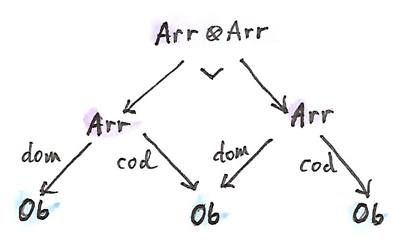
-セルは、合成可能な矢のペア を、からの単一の矢に写す関数だ。言い換えると、は矢の合成を定義する。
モナド則が矢の恒等則や結合則に対応していることは簡単に確認できる。以上で圏を定義できた (対象と矢が集合を形成する小さい圏であることは忘れないでほしい)。
つまり、まとめると、圏はスパンの双圏におけるモナドにすぎない。
この結果の驚くべき点は、圏がモナドやモノイドのような他の代数的構造と同じ基盤に置かれていることだ。圏であることは何も特別ではない。ただの2つの集合と4つの関数だ。実際には、対象ごとに個別の集合は必要ない。対象は恒等射と同一視できる (それらは1対1で対応している) からだ。つまり、実際にはただの集合といくつかの関数だ。圏論がすべての数学において中心的役割を担っていることを考えると、これは非常に謙虚な認識だ。
31.3 課題
- 双圏における自己--セルの合成として定義されたテンソル積について、単位元則と結合則を導出せよ。
- 内のモナドについて、モナド則が、結果の圏内での恒等射と結合則に対応していることを確認せよ。
- 内のモナドが、対象における恒等射の関手 (identity-on-objects functor) であることを示せ。
- 内のモナドについてのモナド代数とは何か？
31.4 参考文献
索引
- basic product operations
- extensional
- factorizer
- one way - a, b
- one-to-one
- points
- predicate – a, b
- proof-relevant relation
- total
- 自己関手
- 自然
- 自然同型
- naturality condition
- naturally isomorphic
- 始代数
- 射
- 自由
- 純粋関数
- 準同型 – a, b
- シングルソート
- 水平合成
- 随伴
- スケルトン
- 線形順序
- 全射
- 前順序
- 全順序
- 双カルテシアン閉
- 双関手
- 双射 – a, b
- 双閉
- 対象
- 対称
- 単射
- チェイン
- テンプレートテンプレート仮引数
- テンソル積
- 同型
- equality
- equational reasoning
- equivalence
- equivalence relation
- トポス
- パラメトリック多相
- 半環
- 半順序
- 反対圏
- 反変
- 評価
- 表現
- 表現可能 – a, b
- 副作用
- 不動点
- 普遍構成
- プロ関手
- 文脈付き計算
- 冪乗
- ポイントフリー
- 忘却関手 – a, b
- enriched
- enriched functor
- ポセット
- ボトム
謝辞
私の計算と論理をチェックしてくれたEdward KmettとGershom Bazermanに感謝したい。誤りを訂正し、本書を改善してくれた大勢のボランティアに感謝している。
Andrew Suttonには、自身とBjarne Stroustrupの最新の提案に沿ってC++のモノイドの概念コードを書き直してくれたことに感謝したい。
Eric
Nieblerには、草稿を読み、C++14の高度な機能を用いて型推論を進めるcomposeの巧妙な実装を提供してくれたことに感謝している。昔ながらのテンプレート・マジックを使って型トレイトと同じことをしていたセクションをすべてカットできた。
いい厄介払いだ！
Gershom Bazermanには、有益なコメントのおかげで、いくつかの重要な点を明確にできたことにも感謝したい。
ライセンス
この作品は、クリエイティブ・コモンズの 表示 - 継承 4.0 国際 ライセンスで提供されています。ライセンスの写しをご覧になるには、[http://creativecommons.org/licenses/by-sa/4.0/deed.ja] をご覧頂くか、Creative Commons, PO Box 1866, Mountain View, CA 94042, USA までお手紙をお送りください。